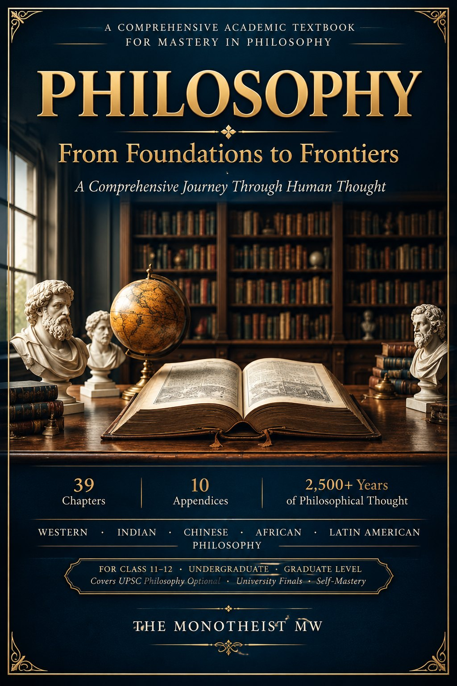

Philosophy: From Foundations to Frontiers
A Comprehensive Journey Through Human Thought
By The Monotheist MW
Table of Contents
Preface
This volume is a humble endeavour to bring together, within a single work, an accessible yet wide-ranging introduction to philosophy. Its purpose is not to claim mastery over a vast discipline, nor to offer the final word on questions that have occupied thinkers for centuries. Rather, it seeks to provide readers with a structured path through important concepts, arguments, methods, and philosophical traditions.
The manuscript brings together 39 chapters and 10 appendices, moving from foundational questions of logic, knowledge, and reality to ethics, political philosophy, philosophy of mind, and contemporary debates. It draws attention to philosophical thought across different intellectual traditions, including Western, Indian, Chinese, African, and Latin American perspectives. Such breadth inevitably involves choices about emphasis and depth; no single volume can do full justice to every thinker, school, or debate.
The material has been compiled and organised with learners at different stages in mind. Beginning readers may use the introductory chapters and the study pathways in Appendix G, while more advanced readers may turn to specialised discussions and recommended readings. The aim throughout is to encourage careful reasoning, comparison of perspectives, and further study rather than passive acceptance of conclusions.
This is an evolving manuscript, not a finished or definitive authority. It remains subject to continuing checks for factual accuracy, faithful representation of philosophical positions, bibliographic precision, clarity of expression, and gaps in coverage. Corrections and improvements are part of the work itself, and readers are encouraged to consult primary texts and reliable scholarship alongside it.
Philosophy is sustained by questions, arguments, and the willingness to reconsider what we think we know. If this endeavour helps even a few readers ask better questions, examine ideas more carefully, and pursue understanding with humility, it will have served its purpose.
PART I: FOUNDATIONS OF PHILOSOPHY
Chapter 1: Philosophical Terms and Basic Concepts
Introduction
Philosophy is one of the oldest and most profound intellectual traditions in human history. The word "philosophy" comes from the ancient Greek words philos (loving) and sophia (wisdom), meaning literally "the love of wisdom." Since its earliest days in ancient Greece and ancient India, philosophy has served as humanity's primary tool for examining fundamental questions about existence, knowledge, morality, and the nature of reality itself.
This chapter introduces you to the essential vocabulary, methods, and branches of philosophy. Whether you are a first-time student or someone returning to philosophical study, understanding the foundational concepts presented here will equip you to engage with every topic in this book with clarity and confidence.
Philosophy differs from ordinary thinking in its rigor, its systematic approach, and its willingness to question even the most basic assumptions. A philosopher does not simply accept what everyone believes; instead, she asks why, examines the evidence, considers alternative views, and follows the argument wherever it leads.
1.1 What is Philosophy?
Philosophy can be defined in many ways, each capturing a different dimension of this rich discipline:
As a discipline, philosophy is the systematic, critical, and rational examination of fundamental questions about reality, knowledge, values, and existence. As an activity, philosophy involves careful argument, logical analysis, and conceptual clarification. As an attitude, philosophy is characterized by intellectual curiosity, open-mindedness, and the refusal to accept dogma without examination.
Philosophy differs from science in that it examines questions that cannot be settled purely by empirical investigation—questions like "Does God exist?", "What is consciousness?", "What makes an action right or wrong?" It differs from religion and mythology in that it relies on reason and argument rather than faith or tradition, though many philosophers have deeply engaged with religious questions.
Philosophy also differs from opinion in that philosophical claims must be supported by argument. A philosophical view is not merely a personal preference but a reasoned position that can be critically evaluated, challenged, and revised.
The ancient Greek philosopher Socrates (470–399 BCE) famously declared that "the unexamined life is not worth living." This statement captures philosophy's core conviction: that reflection, questioning, and the pursuit of truth are not luxuries but necessities for a fully human life.
WHY STUDY PHILOSOPHY?
Philosophy develops skills that are useful in every field: logical reasoning, the ability to construct and evaluate arguments, clarity in writing and speaking, sensitivity to ethical issues, and the capacity to approach problems from multiple perspectives. Many professional fields—law, medicine, business, public policy—require exactly these skills. Beyond practical benefits, philosophy enriches human life by addressing our deepest questions about meaning, value, and our place in the universe.
1.2 Essential Philosophical Vocabulary
Philosophy has a specialized vocabulary that allows for precision in discussing complex ideas. Understanding these terms is the first step toward philosophical literacy.
ARGUMENT: In philosophy, an argument is not a quarrel but a set of statements in which some statements (called premises) provide reasons for accepting another statement (called the conclusion). Example: "All humans are mortal. Socrates is a human. Therefore, Socrates is mortal."
PREMISE: A premise is a statement that is offered as a reason in support of a conclusion. In a good argument, premises should be true, relevant, and sufficient to establish the conclusion.
CONCLUSION: The conclusion is the statement that an argument is designed to establish or prove. It is what the premises are meant to support.
CLAIM / PROPOSITION: A claim is a statement that is either true or false. "The Earth is round" and "Stealing is wrong" are both claims or propositions, even if we disagree about their truth.
VALIDITY: An argument is valid if its conclusion follows necessarily from its premises—that is, if the premises were true, the conclusion could not be false. Validity is about logical form, not about the actual truth of premises.
SOUNDNESS: An argument is sound if it is both valid and has all true premises. A sound argument gives us good reason to believe its conclusion.
INFERENCE: An inference is the process of drawing a conclusion from premises. Logic studies what makes inferences legitimate.
CONCEPT: A concept is a mental representation or idea. Philosophical analysis often involves clarifying concepts—for instance, clarifying what we mean by "justice," "knowledge," or "freedom."
THEORY: A philosophical theory is a systematic account of some domain of reality or of some set of philosophical problems. A theory of knowledge (epistemology) explains what knowledge is and how it is possible.
A PRIORI / A POSTERIORI: A priori knowledge is knowledge that can be obtained through reason alone, without experience (e.g., mathematical truths). A posteriori knowledge depends on sensory experience (e.g., knowing that water is H₂O).
ANALYTIC / SYNTHETIC: An analytic statement is true by definition (e.g., "All bachelors are unmarried"). A synthetic statement is true because of how the world is, not merely because of the meanings of the words (e.g., "The sun rises in the east").
NECESSARY / CONTINGENT: A necessary truth could not have been otherwise (e.g., "2 + 2 = 4"). A contingent truth is true but could have been false (e.g., "Napoleon was born in Corsica").
ONTOLOGY: The study of being or existence—what kinds of things exist and what their fundamental nature is.
EPISTEMOLOGY: The theory of knowledge—what knowledge is, how we get it, and its limits.
ETHICS (MORAL PHILOSOPHY): The study of right and wrong, good and evil, and how we ought to live.
METAPHYSICS: The study of the most fundamental features of reality—being, causation, space, time, identity, and so on.
LOGIC: The study of valid inference and correct reasoning.
AESTHETICS: The study of beauty, art, and aesthetic experience.
CRITICAL THINKING: The careful, disciplined application of reason to evaluate claims, arguments, and evidence.
1.3 Types of Philosophical Questions
Philosophical questions have several distinctive features that set them apart from scientific, historical, or everyday questions.
FEATURES OF PHILOSOPHICAL QUESTIONS:
1. They are fundamental: They ask about the most basic features of reality or value.
2. They are difficult: They cannot be settled easily by observation or experiment.
3. They are general: They concern broad categories of things, not specific particulars.
4. They invite argument: They require reasons and justification, not merely assertion.
THE MAIN TYPES OF PHILOSOPHICAL QUESTIONS:
Metaphysical Questions ask about the nature of reality:
• Does God exist?
• What is the mind, and how is it related to the body?
• Do humans have free will?
• What is personal identity over time?
• Are there abstract objects like numbers and properties?
Epistemological Questions ask about knowledge and its limits:
• What is knowledge, and how do we distinguish it from mere belief?
• How do we know there is an external world?
• What is the difference between justified and unjustified belief?
• Is certainty attainable?
Ethical Questions ask about value and conduct:
• What is the right thing to do?
• What makes actions right or wrong?
• What is the good life for a human being?
• Are moral claims objectively true or merely expressions of preference?
Logical and Conceptual Questions ask about reasoning and meaning:
• What makes an argument valid?
• What does a particular concept really mean?
• Are there any self-evident truths?
Political and Social Questions ask about justice and community:
• What is justice?
• Under what conditions is political authority legitimate?
• What are human rights and what grounds them?
Aesthetic Questions ask about beauty and art:
• What is beauty?
• What is the nature of art?
• What distinguishes good art from bad?
REAL-LIFE EXAMPLE: When a doctor must decide whether to tell a patient a painful truth about their diagnosis, she faces an ethical question (should I tell the truth?), a metaphysical question (what is the patient's wellbeing?), and perhaps a legal question (what does professional duty require?). Philosophy helps think through each layer carefully.
1.4 Methods of Philosophical Inquiry
Philosophy employs several distinctive methods, some of which it shares with other disciplines and some of which are unique.
THE SOCRATIC METHOD: Named after Socrates, this method involves asking probing questions to reveal the assumptions and contradictions in another's position. The goal is not to humiliate but to stimulate genuine reflection. The Socratic method typically begins with a definition question ("What is justice?"), examines proposed definitions through counterexamples, and progressively refines understanding. This method is still used in law schools (the "case method") and philosophy classrooms worldwide.
CONCEPTUAL ANALYSIS: This method involves clarifying the meaning of key concepts by identifying their necessary and sufficient conditions. For example, the traditional analysis of knowledge as "justified true belief" attempts to specify exactly what conditions must be met for a person to know something. Conceptual analysis assumes that careful attention to how we use words can reveal important truths about the concepts they express.
THOUGHT EXPERIMENTS: A thought experiment is an imaginative scenario designed to test our intuitions and reveal the logical consequences of a position. Famous philosophical thought experiments include:
• The Trolley Problem (ethics): Should you pull a lever to divert a runaway trolley that will kill five people onto a track where it will kill one?
• The Brain in a Vat (epistemology): How do you know you are not a disembodied brain being fed false sensory information by a computer?
• The Chinese Room (philosophy of mind): Can a computer program that manipulates symbols understand language the way humans do?
Thought experiments allow philosophers to test theories against imagined cases where variables can be controlled precisely.
LOGICAL ANALYSIS: Philosophy uses formal and informal logic to evaluate arguments. This involves identifying premises and conclusions, checking for validity and soundness, and detecting fallacies.
HISTORICAL ANALYSIS: Much philosophical work involves careful reading of historical texts—understanding what great philosophers argued, why they argued it, and how their views developed in response to one another. The history of philosophy is a laboratory of ideas.
PHENOMENOLOGICAL METHOD: Developed by Edmund Husserl, phenomenology examines the structures of conscious experience from the first-person perspective. Rather than asking what causes experience, it asks what experience is like "from the inside."
DIALECTICAL METHOD: Associated with Hegel and Marx, the dialectical method sees philosophical progress as arising from the tension between opposing positions (thesis and antithesis) that are eventually resolved in a more comprehensive position (synthesis).
REFLECTIVE EQUILIBRIUM: This method, developed by John Rawls, involves moving back and forth between general principles and particular judgments until they cohere. We accept those general principles that best systematize our considered intuitions, while revising intuitions that conflict with well-supported principles.
1.5 Major Branches of Philosophy
Philosophy is divided into several major branches, each focusing on a distinct set of fundamental questions.
METAPHYSICS: Metaphysics studies the nature of reality at the most fundamental level. Major questions include: What exists? What is the nature of space and time? What is causation? Do abstract objects exist? What is the relationship between mind and body? What is personal identity?
The word "metaphysics" comes from the Greek meta (beyond) and physika (physics)—Aristotle's works on these questions were arranged after his Physics in ancient collections. Major subfields include:
• Ontology: The study of what exists and the categories of being
• Philosophy of mind: The study of consciousness, mental states, and their relation to the physical world
• Philosophy of religion: The study of concepts like God, creation, and the soul
EPISTEMOLOGY: Epistemology (from the Greek episteme, knowledge) studies the nature, scope, and limits of knowledge. Key questions: What is knowledge? What are its sources? How can we justify our beliefs? Can we know anything with certainty? What is the relationship between belief, truth, and justification?
ETHICS (MORAL PHILOSOPHY): Ethics studies questions of right and wrong, good and evil, virtue and vice. It includes:
• Normative ethics: Theories about what is right or good (consequentialism, deontology, virtue ethics)
• Meta-ethics: Questions about the nature and status of moral claims
• Applied ethics: The application of ethical theory to practical problems (bioethics, environmental ethics, business ethics)
LOGIC: Logic studies the principles of valid inference and correct reasoning. It includes formal logic (studying logical form) and informal logic (studying argumentation and fallacies).
POLITICAL PHILOSOPHY: Political philosophy examines the nature and justification of political authority, justice, rights, freedom, and equality. Key questions: What makes a government legitimate? What are human rights? What is social justice?
AESTHETICS: Aesthetics studies beauty, art, and aesthetic experience. Key questions: What is beauty? What distinguishes art from non-art? What makes some art better than other art?
PHILOSOPHY OF SCIENCE: This field examines the methods, assumptions, and implications of science. Key questions: What makes something a scientific explanation? What is the relationship between scientific theories and reality?
PHILOSOPHY OF LANGUAGE: This field studies meaning, reference, and the relationship between language and thought. Key questions: What is meaning? How do words refer to things in the world?
PHILOSOPHY OF MIND: This field studies consciousness, perception, memory, and the mind-body problem. Key questions: What is consciousness? Is the mind identical to the brain?
1.6 Reading and Writing Philosophy
Philosophy is a written tradition. Reading philosophical texts carefully and writing philosophically are essential skills.
READING PHILOSOPHY: Philosophical texts are dense and require active, critical reading. Here are strategies for reading philosophy effectively:
1. Read slowly and carefully. Philosophy is not to be skimmed. Read one paragraph at a time, making sure you understand each sentence before moving on.
2. Identify the main question. Before reading in detail, ask: What problem is the author trying to solve? What is the central question?
3. Identify the main argument. What is the author's conclusion? What premises does he or she offer in support?
4. Look up unfamiliar terms. Philosophy uses technical vocabulary. Do not guess at meanings; look them up.
5. Identify objections and replies. Good philosophical texts consider objections to the main view and respond to them. Track this dialectic.
6. Evaluate the argument. After understanding the argument, assess it critically. Are the premises true? Is the argument valid? Are there counterexamples to the conclusion?
7. Re-read. Difficult texts often become clearer on second or third reading. New layers of meaning emerge when you already know the conclusion and can trace the argument backwards.
WRITING PHILOSOPHY: A good philosophical essay has the following features:
Clear thesis: State your main claim clearly and early. A philosophical essay should argue for a specific conclusion, not merely summarize multiple views.
Precise language: Define technical terms. Avoid vagueness and ambiguity.
Valid argument: Your conclusion should follow from your premises. Do not rely on unsupported assertions.
Consideration of objections: The best philosophical essays anticipate and respond to objections. This shows intellectual honesty and strengthens your argument.
Economy: Say what needs to be said and nothing more. Avoid padding, repetition, and irrelevant material.
Example of a weak philosophical sentence: "Many people think morality is important and philosophers have different views about it."
Example of a strong philosophical sentence: "I will argue that consequentialism fails because it cannot adequately account for the wrongness of punishing the innocent, even when doing so would maximize overall welfare."
Major Philosophers and Their Views
SOCRATES (470–399 BCE): The father of Western philosophy, Socrates left no writings. We know him through Plato's dialogues. He pioneered the method of inquiry through questioning (the elenchus) and argued that virtue is knowledge—that no one does wrong willingly. His trial and death for impiety and corrupting the youth became a symbol of philosophy's commitment to truth over comfort.
PLATO (428–348 BCE): Plato founded the Academy in Athens, the first institution of higher learning in the Western world. He developed the Theory of Forms, argued that reality consists of eternal, unchanging abstract objects (Forms), and that sensory experience gives only opinion, not knowledge. His political philosophy in the Republic envisioned the ideal state ruled by philosopher-kings.
ARISTOTLE (384–322 BCE): Aristotle was Plato's greatest student and founded his own school, the Lyceum. He disagreed with Plato's Theory of Forms, arguing that universals exist in particular things, not in a separate realm. He made foundational contributions to logic, metaphysics, ethics, biology, politics, and aesthetics.
CONFUCIUS (551–479 BCE): The great Chinese philosopher whose Analects contain his teachings on ethics, social harmony, ritual propriety, and good governance. His concept of ren (benevolence or humaneness) is central to Confucian ethics.
GAUTAMA BUDDHA (563–483 BCE): The founder of Buddhism, whose teachings centered on the Four Noble Truths and the Eightfold Path as the way to overcome suffering and achieve liberation (nirvāṇa).
IMMANUEL KANT (1724–1804): Perhaps the most important philosopher of the modern era, Kant's critical philosophy attempted to reconcile rationalism and empiricism. He argued that the mind actively structures experience and that moral duty is grounded in the rational will, not consequences.
Important Terms and Definitions
PHILOSOPHY: The systematic, rational examination of fundamental questions about reality, knowledge, and value.
ARGUMENT: A set of statements in which premises support a conclusion.
PREMISE: A statement offered as a reason for a conclusion.
CONCLUSION: The statement an argument is designed to establish.
VALIDITY: A property of arguments where the conclusion follows necessarily from the premises.
SOUNDNESS: A property of arguments that are both valid and have true premises.
A PRIORI: Knowledge obtainable through reason alone, independent of experience.
A POSTERIORI: Knowledge that depends on empirical experience.
ONTOLOGY: The study of being and existence.
EPISTEMOLOGY: The theory of knowledge.
ETHICS: The study of right and wrong, good and evil.
METAPHYSICS: The study of the fundamental nature of reality.
LOGIC: The study of valid inference.
AESTHETICS: The study of beauty and art.
DIALECTIC: A method of philosophical inquiry through opposing arguments.
PHENOMENOLOGY: The first-person study of conscious experience.
Examples from Real Life
EXAMPLE 1 — Philosophy in Medicine: When a patient refuses a life-saving blood transfusion on religious grounds, doctors face philosophical questions about autonomy (the right to make one's own decisions), beneficence (the duty to help patients), and paternalism (whether doctors may override patient choices for the patient's own good). These are philosophical questions with real consequences.
EXAMPLE 2 — Philosophy in Law: Courts regularly face philosophical questions. What does "reasonable person" mean in negligence law? (conceptual analysis). When does a state have the right to imprison someone? (political philosophy). Can a corporation have rights? (metaphysics of personhood).
EXAMPLE 3 — Philosophy in Artificial Intelligence: As AI systems become more sophisticated, we face urgent philosophical questions: Can a machine be conscious? (philosophy of mind). Who is responsible when an autonomous vehicle causes an accident? (ethics and moral responsibility). Should an AI be designed to maximize happiness? (normative ethics).
EXAMPLE 4 — Philosophy in Daily Life: When you decide whether to lie to protect a friend's feelings, you face an ethical dilemma that philosophers have analyzed for centuries. When you wonder whether a dream was real, you engage in epistemology. Philosophy is not distant from life—it is a clarification of the questions we all face.
Criticisms and Objections
OBJECTION 1: "Philosophy is just opinions with no right answers."
RESPONSE: While philosophy does not always reach consensus, some philosophical arguments are clearly better than others. A valid argument is genuinely better than an invalid one. Moreover, some philosophical questions that seemed unanswerable have been resolved—logic, for example, has developed into a precise formal science.
OBJECTION 2: "Philosophy is useless compared to science."
RESPONSE: Science itself rests on philosophical assumptions about method, evidence, and causation. Furthermore, many practical fields—law, medicine, business ethics—depend on philosophical reasoning. The founders of modern science (Descartes, Galileo, Newton) were also philosophers.
OBJECTION 3: "Philosophy is Western and ignores other traditions."
RESPONSE: This is a legitimate historical critique of much academic philosophy. This book explicitly addresses both Western and Indian philosophical traditions, and later chapters discuss African, Latin American, and indigenous philosophies. Philosophy is a global human activity.
Contemporary Relevance
Philosophy has never been more relevant than it is today. The twenty-first century presents urgent philosophical challenges:
ARTIFICIAL INTELLIGENCE AND ETHICS: How should we design ethical AI systems? Who is responsible for AI decisions? Can machines have rights?
BIOETHICS: Should genetic engineering be used to "enhance" human beings? What are the moral limits of medical research?
CLIMATE ETHICS: Do present generations have duties to future generations? Is there a right to a healthy environment?
POLITICAL POLARIZATION: Philosophy offers tools for cross-partisan dialogue based on reasons rather than identity. The methods of careful argument and charitable interpretation are antidotes to the tribalism that afflicts contemporary public discourse.
GLOBALIZATION: As cultures interact more intensely, questions about cultural relativism, universal human rights, and cross-cultural understanding become pressing. Comparative philosophy offers resources for navigating these challenges.
MENTAL HEALTH AND MEANING: Questions about the nature of mind, the good life, and the meaning of existence—long the province of philosophy—are increasingly recognized as crucial for human flourishing.
Chapter Summary
This chapter introduced the fundamental concepts and vocabulary of philosophy. We learned that philosophy is the love of wisdom—the systematic, rational examination of fundamental questions about reality, knowledge, and value. We distinguished philosophy from science, religion, and opinion, and noted its defining features: rigor, systematicity, and the willingness to question basic assumptions. We surveyed the major branches of philosophy (metaphysics, epistemology, ethics, logic, political philosophy, aesthetics) and the main methods of philosophical inquiry (the Socratic method, conceptual analysis, thought experiments, logical analysis, phenomenology, dialectic, and reflective equilibrium). We learned essential philosophical vocabulary—argument, premise, conclusion, validity, soundness, a priori, a posteriori, analytic, synthetic—and understood the difference between philosophical questions and other types of questions. Finally, we introduced strategies for reading and writing philosophy effectively.
Key Terms
Philosophy • Metaphysics • Epistemology • Ethics • Logic • Aesthetics • Political Philosophy • Argument • Premise • Conclusion • Validity • Soundness • A Priori • A Posteriori • Analytic • Synthetic • Necessary • Contingent • Ontology • Dialectic • Phenomenology • Socratic Method • Conceptual Analysis • Thought Experiment • Reflective Equilibrium
Short Answer Questions
1. What does the word "philosophy" literally mean, and how does this etymology relate to the nature of philosophical inquiry?
2. Distinguish between a valid argument and a sound argument. Give an example of each.
3. What is the difference between a priori and a posteriori knowledge? Give one example of each.
4. Describe the Socratic method and explain its purpose.
5. What is a thought experiment? Give one example from philosophy and explain what it is designed to test.
6. Name and briefly describe four major branches of philosophy.
7. How does philosophy differ from science? How does it differ from religion?
8. What features distinguish a good philosophical essay from a poor one?
Long Answer Questions
1. "The unexamined life is not worth living." Discuss this claim by Socrates. Do you agree? What does it mean to examine one's life philosophically? What might someone who disagreed argue?
2. Explain the main methods of philosophical inquiry discussed in this chapter. Compare and contrast at least three of these methods, discussing when each is most appropriate.
3. Why is it important to study both Western and Indian philosophical traditions? What might be lost by focusing exclusively on one tradition? Use examples to support your answer.
4. Choose one type of philosophical question (metaphysical, epistemological, ethical, logical, political, or aesthetic) and explain in detail why it is a philosophical question rather than a scientific, historical, or ordinary question. Discuss at least two specific questions of this type and explain why they matter.
5. "Philosophy is a luxury we cannot afford—we need practical knowledge, not abstract speculation." Write a philosophical essay responding to this objection. Consider the strongest version of the objection and give the most compelling response you can.
MCQs with Answers
1. The word "philosophy" literally means:
a) Love of science
b) Love of wisdom ✓
c) Study of logic
d) Theory of reality
2. An argument is VALID when:
a) All its premises are true
b) Its conclusion is true
c) The conclusion follows necessarily from the premises ✓
d) It cannot be criticized
3. A PRIORI knowledge is:
a) Knowledge gained through sensory experience
b) Knowledge that is always certain
c) Knowledge obtainable through reason alone, independent of experience ✓
d) Knowledge that is analytic
4. The Socratic method involves:
a) Systematic empirical observation
b) Constructing formal logical proofs
c) Asking probing questions to reveal assumptions and contradictions ✓
d) Meditation and intuition
5. Epistemology is the branch of philosophy that studies:
a) The nature of reality
b) Right and wrong
c) Knowledge, its nature, sources, and limits ✓
d) Beauty and art
6. An ANALYTIC statement is:
a) True because of how the world is
b) True by definition ✓
c) True necessarily
d) True a posteriori
7. A THOUGHT EXPERIMENT is:
a) An empirical test of a hypothesis
b) An imaginative scenario designed to test philosophical intuitions ✓
c) A form of meditation
d) A type of logical fallacy
8. Which of the following is a METAPHYSICAL question?
a) What is the capital of France?
b) What is the boiling point of water?
c) What is the relationship between mind and body? ✓
d) How many planets are in the solar system?
Suggested Readings
Introductory Texts:
• Nagel, Thomas. What Does It All Mean? A Very Short Introduction to Philosophy. Oxford: Oxford University Press, 1987.
• Russell, Bertrand. The Problems of Philosophy. Oxford: Oxford University Press, 1912.
• Warburton, Nigel. Philosophy: The Basics. London: Routledge, 1992.
• Blackburn, Simon. Think: A Compelling Introduction to Philosophy. Oxford: Oxford University Press, 1999.
Indian Philosophy Introductions:
• Radhakrishnan, S. and C.A. Moore, eds. A Sourcebook in Indian Philosophy. Princeton: Princeton University Press, 1957.
• Hiriyanna, M. Outlines of Indian Philosophy. London: Allen and Unwin, 1932.
• Chatterjee, S.C. and D.M. Datta. An Introduction to Indian Philosophy. Calcutta: University of Calcutta, 1948.
Primary Texts:
• Plato. The Republic. Translated by G.M.A. Grube. Indianapolis: Hackett, 1992.
• Aristotle. Nicomachean Ethics. Translated by Terence Irwin. Indianapolis: Hackett, 1999.
• Upaniṣads. Translated by Patrick Olivelle. Oxford: Oxford University Press, 1996.
Chapter 2: Introduction to Logic
Introduction
Logic is the backbone of philosophical inquiry. It is the study of valid inference—the principles that determine when a conclusion follows from a set of premises. Without logic, philosophical argument would be impossible. Every time you say "because," you are making a logical claim: you are asserting that some fact provides a reason for another fact. Logic makes these connections precise, explicit, and subject to rigorous evaluation.
This chapter introduces you to the fundamentals of logic, including the basic structure of arguments, the distinction between deductive and inductive reasoning, common logical fallacies, propositional logic with truth tables, categorical syllogisms, and an introduction to predicate logic. Mastery of these tools will sharpen your thinking across every area of philosophy and every field of inquiry.
2.1 Basic Concepts: Arguments, Premises, and Conclusions
THE STRUCTURE OF ARGUMENTS:
An argument is a set of statements in which one or more statements (the premises) are offered in support of another statement (the conclusion). Arguments are the basic units of philosophical reasoning.
IDENTIFYING ARGUMENTS:
Not every group of statements is an argument. An argument requires that some statements be offered as reasons for others. Indicator words help identify arguments:
Premise indicators: "because," "since," "for," "given that," "as," "the reason is that"
Conclusion indicators: "therefore," "thus," "hence," "so," "it follows that," "consequently"
EXAMPLE 1:
"Since all mammals breathe air, and whales are mammals, it follows that whales breathe air."
Premises: (1) All mammals breathe air. (2) Whales are mammals.
Conclusion: Whales breathe air.
EXAMPLE 2:
"You should study philosophy because it develops critical thinking, and critical thinking is valuable in every profession."
Premises: (1) Philosophy develops critical thinking. (2) Critical thinking is valuable in every profession.
Conclusion: You should study philosophy.
STATEMENTS VS. NON-STATEMENTS:
Only statements (declarative sentences that are true or false) can serve as premises or conclusions. Questions, commands, and exclamations are not statements and cannot be premises or conclusions.
"Is virtue teachable?" — Not a statement (question)
"Virtue is teachable." — A statement
IMPLICIT PREMISES AND CONCLUSIONS:
Arguments often have unstated (implicit) premises. Consider: "Socrates must be mortal, because he's human." The unstated premise is "All humans are mortal." Part of logical analysis involves making implicit premises explicit.
SIMPLE VS. COMPLEX ARGUMENTS:
A simple argument has one conclusion supported by one or more premises. A complex argument has intermediate conclusions (sub-conclusions) that serve as premises for the main conclusion. Diagramming complex arguments by mapping out their structure is an important analytical skill.
2.2 Deductive and Inductive Reasoning
The two main types of reasoning are deductive and inductive. Understanding the difference is fundamental to logic.
DEDUCTIVE REASONING:
In deductive reasoning, the premises are intended to guarantee the conclusion. If the argument is valid and the premises are true, the conclusion must be true. Validity is an all-or-nothing concept: either the conclusion follows necessarily from the premises, or it doesn't.
KEY FEATURES OF DEDUCTION:
• Valid deductive arguments are truth-preserving: truth cannot "get lost" on the way from premises to conclusion.
• The conclusion contains no new information beyond what is (implicitly) contained in the premises.
• Deductive arguments are evaluated as valid/invalid (form) and sound/unsound (form + truth of premises).
EXAMPLE:
P1: All humans are mortal.
P2: Socrates is human.
C: Therefore, Socrates is mortal.
This argument is valid: if P1 and P2 are true, C must be true.
INDUCTIVE REASONING:
In inductive reasoning, the premises support the conclusion with varying degrees of probability, but do not guarantee it. Even if all the premises are true, the conclusion might be false. Inductive arguments are evaluated as strong or weak, not valid or invalid.
KEY FEATURES OF INDUCTION:
• The conclusion goes beyond what is strictly contained in the premises.
• Inductive conclusions are probable, not certain.
• New evidence can weaken or strengthen an inductive argument.
EXAMPLES OF INDUCTIVE REASONING:
1. Enumerative Induction: "Every raven I have ever observed has been black. Therefore, all ravens are black." (Strong, but not valid—there could be a non-black raven.)
2. Statistical Induction: "85% of students who study daily pass their exams. Priya studies daily. Therefore, Priya will probably pass her exam."
3. Analogical Reasoning: "This new medication is chemically similar to one that proved effective against cancer. Therefore, this new medication will likely be effective against cancer."
4. Abduction (Inference to the Best Explanation): "The streets are wet. It probably rained. (Rain is the best explanation for wet streets.)"
DEDUCTION VS. INDUCTION — COMPARISON TABLE:
Feature | Deduction | Induction
Goal | Certainty | Probability
If premises are true | Conclusion must be true | Conclusion is probably true
Evaluated as | Valid/Invalid, Sound/Unsound | Strong/Weak, Cogent/Not cogent
Goes beyond premises? | No | Yes
Example | Mathematical proof | Scientific hypothesis
A COGENT INDUCTIVE ARGUMENT is one that is strong (the premises make the conclusion probable) and has true premises.
2.3 Logical Fallacies
A logical fallacy is an error in reasoning that makes an argument invalid or misleading. Fallacies are patterns of bad reasoning that appear in everyday argument, political discourse, and philosophical debate. Identifying fallacies is an essential critical thinking skill.
FORMAL FALLACIES: Errors in the logical form of an argument.
AFFIRMING THE CONSEQUENT:
Form: If P then Q. Q. Therefore P.
Example: "If it rained, the streets are wet. The streets are wet. Therefore it rained."
Error: Streets could be wet for other reasons (a water main broke, street-cleaning trucks passed). The conclusion does not follow.
DENYING THE ANTECEDENT:
Form: If P then Q. Not P. Therefore not Q.
Example: "If you study hard, you'll pass. You didn't study hard. Therefore you won't pass."
Error: You might pass for other reasons.
INFORMAL FALLACIES: Errors in the content or context of an argument.
AD HOMINEM (Attack the Person): Attacking the person making an argument rather than the argument itself.
Example: "You can't trust what she says about climate change—she drives a gas-powered car."
Why fallacious: The quality of an argument is independent of the character of the person making it.
STRAW MAN: Misrepresenting an opponent's argument to make it easier to attack.
Example: Opponent says "We should reduce military spending." You respond: "So you want to leave the country completely defenseless?"
APPEAL TO AUTHORITY (Argumentum ad Verecundiam): Citing authority as evidence when the authority is not genuinely expert in the relevant field.
Example: "This famous actor says this supplement cures cancer, so it must work."
Note: Appealing to genuine authority in their area of expertise is legitimate.
APPEAL TO IGNORANCE (Argumentum ad Ignorantiam): Arguing that something is true because it hasn't been proved false, or false because it hasn't been proved true.
Example: "No one has proved that ghosts don't exist, so ghosts must exist."
FALSE DILEMMA (Either/Or Fallacy): Presenting only two options when more exist.
Example: "You're either with us or against us."
SLIPPERY SLOPE: Arguing that a first step will inevitably lead to extreme consequences without adequate justification.
Example: "If we allow same-sex marriage, next people will want to marry animals."
CIRCULAR REASONING (Begging the Question): Using the conclusion as one of the premises.
Example: "The Bible is true because it says so in the Bible."
HASTY GENERALIZATION: Drawing a general conclusion from too small a sample.
Example: "I met two rude people from that city—people from that city must all be rude."
POST HOC ERGO PROPTER HOC (After this, therefore because of this): Assuming that because B followed A, A caused B.
Example: "I wore my lucky socks to the game and we won. My socks made us win."
TU QUOQUE (You too): Deflecting a criticism by pointing out that the critic also does the criticized thing.
Example: "You say I should exercise more? You never exercise either!"
APPEAL TO POPULARITY (Argumentum ad Populum): Arguing that something is true because many people believe it.
Example: "Millions of people believe in astrology, so it must work."
PRACTICE EXERCISE: Identify the fallacy in each of the following:
1. "Senator Smith wants to reduce the defense budget. Clearly he wants our enemies to destroy us." (Straw Man)
2. "We've always done it this way." (Appeal to Tradition)
3. "Of course he would say the medication is ineffective—he's never taken it." (Ad Hominem)
4. "Nine out of ten dentists agree—so this toothpaste must be the best." (Depends on authority context; could be legitimate if dentists are the right authority)
2.4 Truth Tables and Propositional Logic
PROPOSITIONAL LOGIC (also called sentential logic or statement logic) studies logical relationships among propositions and the logical connectives that join them.
BASIC SYMBOLS:
• P, Q, R: Variables representing propositions (statements)
• ¬ (tilde): Negation ("not")
• ∧ (caret): Conjunction ("and")
• ∨ (wedge): Disjunction ("or")
• → (arrow): Conditional ("if...then")
• ↔ (double arrow): Biconditional ("if and only if")
NEGATION (¬P): "It is not the case that P."
If P is true, ¬P is false. If P is false, ¬P is true.
Truth Table for Negation:
P | ¬P
T | F
F | T
CONJUNCTION (P ∧ Q): "P and Q."
True only when both P and Q are true.
Truth Table for Conjunction:
P | Q | P ∧ Q
T | T | T
T | F | F
F | T | F
F | F | F
DISJUNCTION (P ∨ Q): "P or Q." (Inclusive or: true when at least one is true.)
Truth Table for Disjunction:
P | Q | P ∨ Q
T | T | T
T | F | T
F | T | T
F | F | F
CONDITIONAL (P → Q): "If P, then Q." (P is the antecedent; Q is the consequent.)
The conditional is false only when P is true and Q is false. (A true premise cannot imply a false conclusion.)
Truth Table for Conditional:
P | Q | P → Q
T | T | T
T | F | F
F | T | T
F | F | T
BICONDITIONAL (P ↔ Q): "P if and only if Q."
True when P and Q have the same truth value.
Truth Table for Biconditional:
P | Q | P ↔ Q
T | T | T
T | F | F
F | T | F
F | F | T
TAUTOLOGY: A formula that is true for all possible assignments of truth values. Example: P ∨ ¬P (Law of Excluded Middle) — always true.
CONTRADICTION: A formula that is false for all assignments. Example: P ∧ ¬P — always false.
CONTINGENCY: A formula that is true in some assignments and false in others.
CONSTRUCTING TRUTH TABLES:
To evaluate complex formulas, work from the innermost components outward.
Example: Evaluate (P → Q) ∧ (¬P ∨ Q) when P = T, Q = F:
Step 1: P → Q = T → F = F
Step 2: ¬P = ¬T = F
Step 3: ¬P ∨ Q = F ∨ F = F
Step 4: (P → Q) ∧ (¬P ∨ Q) = F ∧ F = F
LOGICAL EQUIVALENCES: Two formulas are logically equivalent if they have the same truth value in every possible case.
De Morgan's Laws:
• ¬(P ∧ Q) ≡ ¬P ∨ ¬Q
• ¬(P ∨ Q) ≡ ¬P ∧ ¬Q
Contrapositive: P → Q ≡ ¬Q → ¬P (important for logical inference)
Double Negation: ¬¬P ≡ P
2.5 Categorical Syllogisms
A categorical syllogism is a deductive argument consisting of three categorical statements: two premises and a conclusion. Each statement asserts that some or all members of one category are or are not members of another category.
THE FOUR CATEGORICAL STATEMENT TYPES:
Type | Form | Example | Name
A | All S are P | All humans are mortal | Universal Affirmative
E | No S are P | No fish are mammals | Universal Negative
I | Some S are P | Some students are philosophers | Particular Affirmative
O | Some S are not P | Some animals are not mammals | Particular Negative
STRUCTURE OF A SYLLOGISM:
Every syllogism has three terms:
• Major term (P): The predicate of the conclusion
• Minor term (S): The subject of the conclusion
• Middle term (M): Appears in both premises but not in the conclusion
EXAMPLE:
P1: All humans (M) are mortal (P). [Major premise]
P2: Socrates (S) is human (M). [Minor premise]
C: Therefore, Socrates (S) is mortal (P). [Conclusion]
MOOD AND FIGURE:
The mood of a syllogism is determined by the types (A, E, I, O) of its three statements. The figure is determined by the position of the middle term. There are 4 figures and 64 possible moods, but only 24 valid forms.
VALID SYLLOGISTIC FORMS (selected):
• Barbara (AAA-1): All M are P. All S are M. Therefore all S are P.
• Celarent (EAE-1): No M are P. All S are M. Therefore no S are P.
• Darii (AII-1): All M are P. Some S are M. Therefore some S are P.
• Ferio (EIO-1): No M are P. Some S are M. Therefore some S are not P.
VENN DIAGRAMS:
Venn diagrams provide a visual method for testing syllogistic validity. Each term is represented by a circle, and the three circles are overlapping. Premises are drawn in the diagram, and the argument is valid if the conclusion is already visually represented.
Rules for Venn diagrams:
• Shade a region to indicate it is empty (contains no members).
• Place an X in a region to indicate it contains at least one member.
• Universal statements (A, E) are diagrammed first; then particular statements (I, O).
RULES FOR VALID SYLLOGISMS:
1. The middle term must be distributed in at least one premise.
2. Any term distributed in the conclusion must be distributed in its premise.
3. No valid syllogism has two negative premises.
4. If one premise is negative, the conclusion must be negative.
5. No valid syllogism has two particular premises.
A term is DISTRIBUTED when the statement says something about all members of the category the term refers to.
2.6 Predicate Logic Fundamentals
Propositional logic treats entire propositions as units and cannot analyze their internal structure. Predicate logic (also called first-order logic or quantificational logic) goes deeper, analyzing the structure of propositions in terms of subjects, predicates, and quantifiers.
KEY SYMBOLS IN PREDICATE LOGIC:
• Individual constants: a, b, c (referring to specific individuals: "Socrates," "Plato")
• Individual variables: x, y, z (ranging over individuals)
• Predicates: P, Q, R (properties or relations: "is mortal," "loves")
• Universal quantifier: ∀ ("for all")
• Existential quantifier: ∃ ("there exists")
• Logical connectives: ¬, ∧, ∨, →, ↔ (same as propositional logic)
TRANSLATING STATEMENTS:
"Socrates is mortal": Mx (where M = "is mortal," x = "Socrates") → Ms (using constant s)
"All humans are mortal": ∀x(Hx → Mx)
"Some students are philosophers": ∃x(Sx ∧ Px)
"No fish are mammals": ∀x(Fx → ¬Mx) or ¬∃x(Fx ∧ Mx)
"Some animals are not mammals": ∃x(Ax ∧ ¬Mx)
THE QUANTIFIER RULES:
Universal Instantiation (UI): From ∀x(Px), derive Pa (for any constant a).
Example: From "All humans are mortal," derive "Socrates is mortal."
Existential Generalization (EG): From Pa, derive ∃x(Px).
Example: From "Socrates is mortal," derive "Some entity is mortal."
RELATIONS IN PREDICATE LOGIC:
Predicate logic can also represent relations between individuals:
Lxy = "x loves y"
"Socrates loves Plato": Las
"Everyone loves someone": ∀x∃y(Lxy)
"Someone loves everyone": ∃x∀y(Lxy)
Note: The order of quantifiers matters! "Everyone loves someone" is different from "Someone is loved by everyone."
LIMITATIONS OF PREDICATE LOGIC:
First-order predicate logic cannot quantify over predicates themselves (that requires second-order logic). It also faces challenges with modal claims ("necessarily," "possibly"), temporal claims, and natural language ambiguities.
PRACTICAL IMPORTANCE:
Predicate logic is the foundation of mathematical logic, computer science, formal linguistics, and artificial intelligence. Many philosophical arguments—especially in metaphysics and philosophy of language—can be formalized in predicate logic, making their structure precise and their validity testable.
Chapter Summary
This chapter introduced the fundamentals of logic. We began with the basic structure of arguments—premises and conclusions—and learned to identify arguments and distinguish them from non-arguments. We distinguished deductive reasoning (where the conclusion is guaranteed by the premises) from inductive reasoning (where premises provide probable but not certain support for the conclusion). We surveyed the most important logical fallacies, both formal (affirming the consequent, denying the antecedent) and informal (ad hominem, straw man, appeal to authority, false dilemma, etc.). We studied propositional logic, including the five logical connectives, truth tables, tautologies, and logical equivalences. We examined categorical syllogisms—their structure, mood, figure, Venn diagram representation, and rules for validity. Finally, we introduced predicate logic, with its quantifiers, individual constants, variables, and predicates, which allows the analysis of internal argument structure.
Key Terms
Argument • Premise • Conclusion • Deductive Reasoning • Inductive Reasoning • Validity • Soundness • Cogency • Fallacy • Ad Hominem • Straw Man • False Dilemma • Circular Reasoning • Propositional Logic • Negation • Conjunction • Disjunction • Conditional • Biconditional • Tautology • Contradiction • Categorical Syllogism • Universal Quantifier • Existential Quantifier • Predicate Logic • Distributed Term • Venn Diagram
Short Answer Questions
1. What is the difference between a deductive and an inductive argument? Give an example of each.
2. What is the difference between a valid argument and a sound argument?
3. Define logical fallacy and give three examples with explanations.
4. Construct a truth table for the conditional (P → Q).
5. What are the three terms in a categorical syllogism? Give an example.
6. What is the universal quantifier? How do you translate "All humans are mortal" into predicate logic?
7. Explain De Morgan's Laws with examples.
8. What is the difference between propositional logic and predicate logic?
Long Answer Questions
1. Explain the distinction between formal and informal logical fallacies. Describe five informal fallacies in detail, giving an example of each and explaining why it is fallacious.
2. Construct complete truth tables for the following formulas and determine whether each is a tautology, contradiction, or contingency:
a) (P → Q) → (¬Q → ¬P)
b) P ∧ (P → Q) → Q
c) P ∨ (¬P ∧ Q)
3. Evaluate the following syllogism using both the rules for valid syllogisms and a Venn diagram:
P1: All politicians are liars.
P2: No honest people are liars.
C: Therefore, no honest people are politicians.
Is this argument valid? Sound? Explain.
4. Translate the following statements into predicate logic notation:
a) All philosophers love wisdom.
b) Some logicians are not mathematicians.
c) If anyone studies hard, they pass the exam.
d) There exists a teacher who teaches every student.
Explain each translation.
5. Distinguish inductive from deductive reasoning in scientific method. Give examples of how scientists use both types of reasoning, and discuss the philosophical problem of induction.
MCQs with Answers
1. Which of the following is a VALID deductive form?
a) If P then Q. P. Therefore Q. ✓ (Modus Ponens)
b) If P then Q. Q. Therefore P. (Fallacy: Affirming the Consequent)
c) P or Q. P. Therefore not Q. (Invalid)
d) All P are Q. Some R are Q. Therefore some R are P. (Invalid—undistributed middle)
2. The truth table for P → Q shows it is FALSE only when:
a) P is true and Q is true
b) P is false and Q is false
c) P is true and Q is false ✓
d) P is false and Q is true
3. "You should take my word that this medicine works—I'm a doctor." This is:
a) A valid appeal to authority ✓ (a doctor is a legitimate authority on medicine)
b) Ad hominem
c) Straw man
d) False dilemma
(Note: This would be a legitimate appeal IF the doctor is speaking within their area of expertise.)
4. De Morgan's Law states that ¬(P ∧ Q) is equivalent to:
a) ¬P ∧ ¬Q
b) ¬P ∨ ¬Q ✓
c) P ∨ Q
d) ¬P → ¬Q
5. In a categorical syllogism, the MIDDLE TERM:
a) Appears in both premises ✓
b) Appears in the conclusion
c) Is always distributed
d) Must be universal
6. ∀x(Hx → Mx) in predicate logic translates to:
a) Some humans are mortal
b) All humans are mortal ✓
c) No humans are mortal
d) Some humans are not mortal
7. A TAUTOLOGY is a statement that is:
a) Always false
b) Sometimes true, sometimes false
c) True under all possible truth value assignments ✓
d) True only in some interpretations
8. The fallacy of HASTY GENERALIZATION involves:
a) Drawing a conclusion from premises that don't support it
b) Attacking the person rather than the argument
c) Drawing a broad conclusion from too small a sample ✓
d) Presenting only two options when more exist
Suggested Readings
Logic Textbooks:
• Hurley, Patrick J. A Concise Introduction to Logic. 13th ed. Boston: Cengage, 2018.
• Copi, Irving M., Carl Cohen, and Victor Rodych. Introduction to Logic. 14th ed. London: Routledge, 2018.
• Salmon, Wesley. Logic. 3rd ed. Englewood Cliffs: Prentice-Hall, 1984.
• Quine, W.V.O. Methods of Logic. 4th ed. Cambridge: Harvard University Press, 1982.
Informal Logic:
• Walton, Douglas. Informal Logic: A Pragmatic Approach. Cambridge: Cambridge University Press, 2008.
• Weston, Anthony. A Rulebook for Arguments. 5th ed. Indianapolis: Hackett, 2017.
Mathematical Logic:
• Enderton, Herbert B. A Mathematical Introduction to Logic. 2nd ed. New York: Academic Press, 2001.
• Mendelson, Elliott. Introduction to Mathematical Logic. 6th ed. Boca Raton: CRC Press, 2015.
2.7 Natural Deduction and Proof Systems
NATURAL DEDUCTION: A proof system that mirrors how humans actually reason — starting from assumptions, applying inference rules, and deriving conclusions. Key rules:
INTRODUCTION RULES (how to prove a connective):
• ∧-Introduction: From A and B, derive A ∧ B.
• →-Introduction: Assume A; if you derive B, then conclude A → B (and discharge the assumption).
• ∨-Introduction: From A, derive A ∨ B (for any B).
ELIMINATION RULES (how to use a connective):
• ∧-Elimination: From A ∧ B, derive A (or B separately).
• →-Elimination (Modus Ponens): From A → B and A, derive B.
• ∨-Elimination: From A ∨ B, A → C, and B → C, derive C.
REDUCTIO AD ABSURDUM: Assume ¬A; derive a contradiction (B ∧ ¬B); conclude A.
PROOF EXAMPLE — Hypothetical Syllogism:
1. P → Q (Premise)
2. Q → R (Premise)
3. P (Assumption for conditional proof)
4. Q (→-Elim from 1 and 3)
5. R (→-Elim from 2 and 4)
6. P → R (→-Intro, discharging assumption 3)
GÖDEL'S INCOMPLETENESS IN BRIEF: In 1931, Kurt Gödel proved that any consistent formal system powerful enough to express arithmetic contains true statements that cannot be proved within the system. This means no formal system can capture all mathematical truth — a result with profound implications for the philosophy of mathematics (treated fully in Chapter 28). The proof uses self-referential "Gödel sentences" that say, in effect, "This sentence is not provable in this system."
RUSSELL'S PARADOX (for logic): Let R = the set of all sets that do not contain themselves. Does R contain itself? If yes, by definition it should not. If no, by definition it should. This paradox, discovered by Bertrand Russell in 1901, undermined naive set theory and motivated the development of type theory and axiomatic set theory.
2.8 Introduction to Modal Logic Notation
MODAL LOGIC extends propositional logic with two operators:
• □P: "It is necessarily the case that P" (box)
• ◇P: "It is possibly the case that P" (diamond)
Dual relationship: □P ≡ ¬◇¬P (necessarily P = not possibly not-P)
BASIC EXAMPLES:
• □(2+2=4): It is necessarily the case that 2+2=4. [TRUE — mathematical necessity]
• ◇(It rains tomorrow): It is possibly the case that it rains tomorrow. [TRUE — physical possibility]
• □(Bachelors are unmarried): Necessarily, bachelors are unmarried. [TRUE — logical/conceptual necessity]
• ◇(Pigs fly): Possibly, pigs fly. [Depends on which kind of possibility — logically possible, physically impossible]
TYPES OF NECESSITY:
• Logical: True in all logically possible worlds (no contradiction)
• Metaphysical: True in all metaphysically possible worlds (water is H₂O)
• Physical: True given the laws of nature (nothing travels faster than light)
• Epistemic: True given what we know ("The butler must have done it")
Full treatment of modal logic is provided in Chapter 29.
Chapter 3: Critical Thinking and Argumentation
Introduction
Critical thinking is the disciplined application of reason to the evaluation of claims, arguments, and evidence. It is simultaneously one of philosophy's central methods and one of its most important practical contributions to society. In an age of information overload, propaganda, and "fake news," the ability to think critically has never been more important.
This chapter builds on the logical foundations of Chapter 2 to develop practical skills of argument analysis and construction. We will examine how to analyze complex arguments, construct valid and persuasive arguments of our own, identify hidden assumptions, evaluate different types of evidence, and apply these skills to real-world problems. Critical thinking is not merely an academic exercise; it is the foundation of good citizenship, professional success, and wise decision-making.
3.1 Analyzing Arguments
Analyzing an argument means identifying its structure, evaluating its logical form, assessing the truth of its premises, and determining whether the conclusion follows.
STEP-BY-STEP ARGUMENT ANALYSIS:
Step 1: Identify the conclusion. Ask: What is the author trying to prove? Look for conclusion indicators ("therefore," "thus," "hence," "so," "it follows that").
Step 2: Identify the premises. Ask: What reasons are given for the conclusion? Look for premise indicators ("because," "since," "for," "given that").
Step 3: Diagram the argument. Map the logical relationships between premises and conclusion. Some premises support the conclusion directly; others support sub-conclusions that in turn support the main conclusion.
Step 4: Identify unstated premises. Arguments often rely on assumptions that are not explicitly stated. Making these explicit allows you to evaluate them.
Step 5: Evaluate the form. Is the argument valid (deductive) or strong (inductive)?
Step 6: Evaluate the premises. Are they true? Plausible? Supported by evidence?
Step 7: Evaluate the conclusion. If the argument is valid/strong and the premises are true/plausible, the conclusion should be accepted. If not, identify exactly where the argument goes wrong.
EXAMPLE ANALYSIS:
"Capital punishment should be abolished. Studies consistently show it has no deterrent effect on crime. Moreover, it is irreversible and we know innocent people have been executed. A civilized society should not be in the business of killing its own citizens."
Conclusion: Capital punishment should be abolished.
Premises:
(1) Capital punishment has no deterrent effect on crime.
(2) Capital punishment is irreversible.
(3) Innocent people have been executed.
(4) Civilized societies should not execute citizens.
Analysis: The argument is inductive, presenting multiple considerations. Each premise requires evaluation: (1) Is supported by criminological research, but is contested. (2) Is clearly true. (3) Is factually true—documented cases exist. (4) Is a normative claim that needs further argument. The premises cumulatively provide significant support for the conclusion, though a defender of capital punishment would challenge premises (1) and (4).
ARGUMENT DIAGRAMS (ARGUMENT MAPS):
Argument maps visually represent the structure of arguments, showing which premises support which conclusions and how sub-arguments relate to the main argument. Software tools like Rationale and Argument Web help create argument maps for complex debates.
3.2 Constructing Valid Arguments
Constructing a good argument requires both logical skill and intellectual honesty. Here are the key principles.
PRINCIPLES OF GOOD ARGUMENT CONSTRUCTION:
1. CLARITY: State your conclusion clearly. Formulate your argument so that others can understand exactly what you are claiming and why.
2. RELEVANCE: Make sure your premises are relevant to your conclusion. A premise is relevant only if it makes a difference to the probability or certainty of the conclusion.
3. SUFFICIENCY: Offer enough reasons to actually establish your conclusion. Do not underestimate the burden of proof.
4. ACCEPTABILITY: Your premises should be true or at least plausible. Do not rely on premises that your audience has strong reason to reject.
5. ACKNOWLEDGE COUNTERARGUMENTS: Good arguments anticipate objections and respond to them. Ignoring the strongest objections to your view is a sign of intellectual weakness, not strength.
6. PROPORTIONALITY: The strength of your conclusion should match the strength of your evidence. Do not claim certainty when the evidence supports only probability.
ARGUMENT FORMS TO MASTER:
Modus Ponens (Valid):
P1: If P then Q.
P2: P.
C: Therefore Q.
Modus Tollens (Valid):
P1: If P then Q.
P2: Not Q.
C: Therefore not P.
Hypothetical Syllogism (Valid):
P1: If P then Q.
P2: If Q then R.
C: Therefore if P then R.
Disjunctive Syllogism (Valid):
P1: P or Q.
P2: Not P.
C: Therefore Q.
STEELMANNING: The opposite of a straw man. To steelman an argument is to present the strongest possible version of the opposing view before criticizing it. This is an important intellectual virtue—it shows that you understand your opponent's position and are engaging with its best form.
WORKED EXAMPLE — Constructing an Ethical Argument:
Thesis: Meat-eating is morally permissible.
Premise 1: An action is morally impermissible only if it causes unjustified suffering.
Premise 2: Humanely raised and slaughtered animals do not suffer unjustifiably.
Conclusion: Therefore, eating humanely raised meat is morally permissible.
Anticipated objection: "But killing is wrong regardless of suffering."
Response: "This premise would also condemn killing plants, bacteria, and insects, which seems too strong. The relevant moral factor is sentience and capacity for suffering, not mere life."
Notice how this example makes premises explicit, anticipates objections, and responds to them.
3.3 Identifying Hidden Assumptions
Every argument rests on assumptions—premises that are not explicitly stated but that the argument requires to be valid. Identifying and evaluating these assumptions is a crucial critical thinking skill.
TYPES OF HIDDEN ASSUMPTIONS:
1. EMPIRICAL ASSUMPTIONS: Unstated factual claims.
Example: "You should see a doctor about that cough." Hidden assumption: Doctors can help with coughs.
2. NORMATIVE ASSUMPTIONS: Unstated value judgments.
Example: "The government should reduce taxes to stimulate the economy." Hidden assumption: Economic stimulation is desirable.
3. CONCEPTUAL ASSUMPTIONS: Unstated definitions or conceptual distinctions.
Example: "She's a good person, so she'll be a good leader." Hidden assumption: Good personal morality translates to good leadership.
4. LOGICAL ASSUMPTIONS: Assumptions about what follows from what.
Example: "Either you support this policy or you don't care about the poor." Hidden assumption: There are only two options.
HOW TO IDENTIFY HIDDEN ASSUMPTIONS:
Ask: What would need to be true for this argument to work? Try to deny the conclusion while granting all the stated premises—what additional premise would need to be true to restore validity? This often reveals the hidden assumption.
CASE STUDY:
Argument: "Violent video games should be banned because they cause violent behavior."
Hidden assumptions:
(1) Empirical: That there is a causal (not merely correlational) link between violent games and violent behavior.
(2) Normative: That governments have the right to ban things that cause harmful behavior.
(3) Practical: That a ban would be effective in reducing access.
(4) Cost-benefit: That the benefits of a ban outweigh the costs (including the violation of free speech).
Identifying these assumptions allows critical analysis: Are they all true? The empirical claim (1) is in fact contested by research. Assumption (2) is contested by libertarians. By making these assumptions explicit, we can evaluate the argument more rigorously.
THE PRINCIPLE OF CHARITY: When interpreting arguments, always choose the strongest reasonable interpretation. This is both intellectually honest and strategically sound—defeating the weak version of an argument does not establish the falsity of the position. Dealing with the strongest version shows that you have actually engaged with the issue.
3.4 Evaluating Evidence
Arguments are only as good as the evidence behind their premises. Evaluating evidence is therefore a crucial component of critical thinking.
TYPES OF EVIDENCE:
1. EMPIRICAL EVIDENCE: Evidence from sensory experience, observation, or experiment. Includes scientific studies, surveys, historical records, and personal observation.
- Evaluate: Is it from a reliable source? Is the methodology sound? Has it been replicated? Is it peer-reviewed?
2. TESTIMONIAL EVIDENCE: Evidence from the reports of others. Includes eyewitness accounts, expert opinion, and hearsay.
- Evaluate: Is the witness reliable? Do they have a motive to deceive? Is their testimony consistent with other evidence?
3. STATISTICAL EVIDENCE: Evidence from quantitative data.
- Evaluate: How large and representative is the sample? Is there a correlation/causation confusion? How are the statistics being used?
4. ANALOGICAL EVIDENCE: Evidence based on comparison with similar cases.
- Evaluate: How strong is the analogy? Are there relevant differences that weaken it?
5. DOCUMENTARY EVIDENCE: Written records, legal documents, scientific papers.
- Evaluate: Is the document authentic? Has it been accurately quoted or interpreted?
STANDARDS OF EVIDENCE:
The standard of evidence required for a claim should be proportionate to the significance of the claim. As Carl Sagan famously said, "Extraordinary claims require extraordinary evidence."
COGNITIVE BIASES THAT DISTORT EVIDENCE EVALUATION:
• Confirmation bias: Favoring evidence that confirms what you already believe.
• Availability heuristic: Treating vivid, easily remembered examples as more representative than they are.
• Anchoring bias: Giving excessive weight to the first piece of information encountered.
• In-group bias: Accepting evidence more readily when it comes from members of your own group.
Awareness of these biases is the first step to overcoming them.
ASSESSING SOURCES:
In the digital age, source assessment is a critical skill. Questions to ask:
• Who is the author? What are their qualifications?
• Who published this? What are their interests?
• Is this peer-reviewed or fact-checked?
• Is this primary or secondary evidence?
• When was it published? Is it current?
• Are multiple independent sources corroborating this?
3.5 Practical Applications of Logic
Critical thinking and logical analysis are not merely academic skills—they have immediate and important practical applications.
IN EVERYDAY DECISION-MAKING:
When making an important decision (choosing a career, a partner, a place to live), critical thinking involves: clearly identifying the decision, gathering relevant information, identifying and evaluating alternatives, considering consequences, avoiding cognitive biases, and making a reasoned judgment.
IN PROFESSIONAL CONTEXTS:
• Law: Lawyers construct arguments and identify weaknesses in opposing arguments. Judges evaluate the logical strength of arguments. Cross-examination is structured critical analysis.
• Medicine: Clinical reasoning involves diagnosing from symptoms (abductive reasoning), evaluating treatment evidence (empirical reasoning), and making ethical decisions (normative reasoning).
• Business: Business strategy involves analyzing market data, identifying assumptions, evaluating evidence, and constructing plans that are logically coherent.
• Journalism: Investigative journalism requires evaluating sources, identifying propaganda techniques, and constructing well-evidenced narratives.
IN PUBLIC DISCOURSE AND DEMOCRACY:
Democracy requires informed citizens who can evaluate political arguments, identify propaganda, and participate in reasoned debate. The skills of critical thinking are foundational to democratic citizenship.
IN SCIENTIFIC REASONING:
Scientists use deduction (to derive predictions from hypotheses), induction (to form general theories from observations), and abduction (to infer the best explanation). The philosophy of science examines the logical structure of scientific reasoning. Understanding the logic of hypothesis testing, falsifiability (Karl Popper's criterion), and theory confirmation are philosophically and practically important.
THE CRITICAL THINKING DISPOSITIONS:
Beyond skills, critical thinking requires certain intellectual virtues or dispositions:
• Intellectual humility: Willingness to acknowledge the limits of one's knowledge and the possibility of being wrong.
• Intellectual courage: Willingness to take seriously unpopular or uncomfortable conclusions.
• Intellectual honesty: Commitment to following the evidence wherever it leads.
• Open-mindedness: Genuine willingness to consider opposing views.
• Intellectual perseverance: Willingness to work through difficult problems without giving up.
These dispositions cannot be taught merely by learning logical rules; they require cultivation through practice and reflection.
Chapter Summary
This chapter developed practical skills of argument analysis and construction. We learned a systematic approach to analyzing arguments: identifying conclusions and premises, diagramming argument structure, identifying unstated premises, evaluating form and content. We examined the principles of good argument construction—clarity, relevance, sufficiency, acceptability, and acknowledgment of counterarguments—and studied valid argument forms including modus ponens, modus tollens, hypothetical syllogism, and disjunctive syllogism. We explored the importance of identifying hidden assumptions—empirical, normative, conceptual, and logical—and the principle of charity in interpreting arguments. We discussed how to evaluate different types of evidence and the cognitive biases that distort evidence evaluation. Finally, we examined the practical applications of critical thinking in everyday decision-making, professional contexts, democratic citizenship, and scientific reasoning, and identified the intellectual virtues (humility, courage, honesty, open-mindedness) that critical thinking requires.
Key Terms
Critical Thinking • Argument Analysis • Argument Diagram • Steelmanning • Hidden Assumption • Empirical Evidence • Testimonial Evidence • Statistical Evidence • Confirmation Bias • Availability Heuristic • Anchoring Bias • Principle of Charity • Modus Ponens • Modus Tollens • Hypothetical Syllogism • Disjunctive Syllogism • Intellectual Virtue • Intellectual Humility • Burden of Proof
Short Answer Questions
1. Describe the steps involved in analyzing an argument.
2. What is steelmanning, and why is it important?
3. What is a hidden assumption? Give an example.
4. Describe three types of cognitive bias that can distort evidence evaluation.
5. What is the Principle of Charity? Why should we apply it when evaluating arguments?
6. What is the difference between correlation and causation? Why does this matter for evidence evaluation?
7. Name four intellectual virtues and explain why each is important for critical thinking.
Long Answer Questions
1. Choose a controversial contemporary issue (e.g., capital punishment, affirmative action, social media regulation). Analyze the main arguments on both sides, identifying premises, hidden assumptions, and evidence. Then construct the strongest argument you can for one side, addressing the most important objections.
2. Explain the problem of cognitive bias in evidence evaluation. Discuss at least four specific biases, how they distort reasoning, and strategies for overcoming them. Give concrete examples from everyday life or public discourse.
3. "In a democracy, every citizen should be trained in critical thinking." Argue for or against this claim, using the principles and evidence discussed in this chapter.
4. Discuss the relationship between critical thinking and intellectual virtues. Is critical thinking primarily a set of skills, a set of dispositions, or both? Can someone have all the skills but lack the virtues? Give examples.
MCQs with Answers
1. The first step in argument analysis is:
a) Evaluating the premises
b) Identifying the conclusion ✓
c) Looking for fallacies
d) Checking the sources
2. "Steelmanning" means:
a) Using steel-framed arguments
b) Attacking the weakest version of an opponent's argument
c) Presenting the strongest version of an opposing view ✓
d) Constructing a chain of syllogisms
3. Confirmation bias involves:
a) Using confirmed scientific data
b) Favoring evidence that confirms what you already believe ✓
c) Verifying a source before using it
d) Accepting an argument because the majority accept it
4. Modus Tollens has the form:
a) If P then Q; P; therefore Q
b) If P then Q; not Q; therefore not P ✓
c) P or Q; P; therefore not Q
d) All M are P; all S are M; therefore all S are P
5. The Principle of Charity requires that we:
a) Give money to the author of the argument
b) Accept any argument that seems sincere
c) Choose the strongest reasonable interpretation of an argument ✓
d) Never criticize arguments
6. "Extraordinary claims require extraordinary evidence" means:
a) Claims that are unusual are always false
b) The standard of evidence should be proportionate to the significance of the claim ✓
c) Only experts can evaluate extraordinary claims
d) Ordinary people cannot evaluate extraordinary claims
Suggested Readings
Critical Thinking:
• Ennis, Robert H. Critical Thinking. Upper Saddle River: Prentice Hall, 1996.
• Paul, Richard and Linda Elder. Critical Thinking: Tools for Taking Charge of Your Professional and Personal Life. Upper Saddle River: FT Press, 2012.
• Facione, Peter A. Critical Thinking: What It Is and Why It Counts. Millbrae: Measured Reasons, 2011.
Argumentation:
• Toulmin, Stephen. The Uses of Argument. Cambridge: Cambridge University Press, 1958.
• van Eemeren, Frans H. and Rob Grootendorst. A Systematic Theory of Argumentation. Cambridge: Cambridge University Press, 2004.
Applied Logic:
• Moore, Brooke Noel and Richard Parker. Critical Thinking. 12th ed. New York: McGraw-Hill, 2017.
• Bassham, Gregory et al. Critical Thinking: A Student's Introduction. 5th ed. New York: McGraw-Hill, 2013.
PART II: CLASSICAL FOUNDATIONS
Chapter 4: Ancient Greek Philosophy
Introduction
Ancient Greek philosophy (roughly 600–30 BCE) laid the foundations of the Western philosophical tradition. In a period of remarkable intellectual creativity, Greek thinkers developed systematic approaches to questions about the nature of reality, knowledge, ethics, politics, and the cosmos. Their questions and methods still shape philosophical inquiry today, more than two thousand years later.
The Greek philosophical tradition did not emerge from nothing. It grew partly from earlier Greek mythology and religion, partly from contact with Near Eastern and Egyptian wisdom traditions, and partly from the unique political and cultural conditions of the Greek city-states (poleis), especially Athens. The development of democracy, literacy, and a culture of public debate created ideal conditions for philosophical inquiry.
This chapter traces the development of ancient Greek philosophy from its pre-Socratic origins through the great systems of Plato and Aristotle to the Hellenistic schools that shaped intellectual life for centuries.
4.1 Pre-Socratic Philosophers
The Pre-Socratics (roughly 600–400 BCE) were the first thinkers to seek rational rather than mythological explanations for the world. They asked: What is the fundamental stuff of reality? What is the cosmos made of? How does change occur?
THALES OF MILETUS (c. 624–546 BCE): Generally regarded as the first philosopher. Thales proposed that the fundamental substance (arche) of all things is water. This may seem naive, but the revolutionary move was to seek a natural rather than supernatural explanation of reality. He also correctly predicted a solar eclipse, demonstrating that rational inquiry could produce practical results.
ANAXIMANDER (c. 610–546 BCE): A student of Thales, Anaximander rejected water as the arche and proposed the apeiron (the Indefinite or Boundless)—an eternal, unlimited substance from which all things arise and into which they return. This was a remarkable abstraction: the fundamental substance is not any specific observable thing but something prior to and generative of all observable things.
ANAXIMENES (c. 585–525 BCE): Proposed air as the fundamental substance, with different things arising from air through processes of condensation and rarefaction. Dense air becomes water, then earth; rarefied air becomes fire.
HERACLITUS (c. 535–475 BCE): From Ephesus, Heraclitus famously declared that "you cannot step into the same river twice." Reality is characterized by constant flux and change. The underlying principle is Logos—a rational order or pattern that governs change. Heraclitus held that apparent opposites (hot/cold, day/night, life/death) are actually unified aspects of a single dynamic process.
PARMENIDES (c. 515–450 BCE): Parmenides drew the opposite conclusion from Heraclitus. Through purely logical argument, he argued that genuine change and multiplicity are impossible. Being is one, eternal, unchanging, and undivided. What-is cannot come from what-is-not; nothing can come from nothing. Change would require something to come from or pass into nothing, which is impossible. The apparent world of change is an illusion of the senses; only reason reveals the true nature of being. Parmenides's argument set the agenda for subsequent Greek metaphysics.
ZENO OF ELEA (c. 490–430 BCE): Parmenides's student, Zeno developed famous paradoxes to defend his teacher's view that motion is impossible. The Paradox of Achilles and the Tortoise: Achilles gives the tortoise a head start. To overtake it, he must first reach where the tortoise was. But by the time he gets there, the tortoise has moved on. This repeats infinitely, so Achilles can never overtake the tortoise. These paradoxes about infinity and continuity remained philosophically challenging until the development of calculus and set theory.
EMPEDOCLES (c. 490–430 BCE): Proposed four fundamental substances (earth, water, fire, air) combined and separated by two forces: Love (attraction) and Strife (repulsion). This is an early anticipation of physical forces governing matter.
ANAXAGORAS (c. 500–428 BCE): Proposed that all things contain a share of all qualities, and that Nous (Mind) initiated the cosmic rotation that organized matter. This was a crucial step toward teleological explanation—explaining natural processes in terms of purpose or intelligence.
DEMOCRITUS (c. 460–370 BCE): Along with Leucippus, Democritus developed atomism—the view that all things are composed of tiny, invisible, indivisible particles (atoms, from the Greek a-tomos, "uncuttable") moving in empty space. Different substances arise from different arrangements of atoms. This is a remarkable anticipation of modern atomic theory. Democritus also advocated a form of determinism: all events are necessitated by the prior states of atoms.
SIGNIFICANCE OF THE PRE-SOCRATICS: The Pre-Socratics established the practice of rational inquiry into nature, introduced key metaphysical concepts (arche, logos, being, atoms), and raised questions about change, permanence, and the relationship between appearance and reality that occupied all subsequent philosophy.
4.2 Socrates: Method and Ethics
SOCRATES (470–399 BCE) is one of the most remarkable figures in intellectual history. He wrote nothing, yet his influence has been greater than almost any other philosopher. We know him primarily through the dialogues of Plato and, to a lesser extent, through Xenophon and Aristophanes.
THE SOCRATIC REVOLUTION: Before Socrates, philosophical inquiry focused primarily on nature (physis)—what is the world made of? Socrates redirected philosophical attention to ethics—how should we live? He insisted that the most important question is not about the cosmos but about human excellence (arete) and the good life.
THE SOCRATIC METHOD (ELENCHUS): Socrates's philosophical method involved engaging interlocutors in dialogue about ethical concepts—justice, piety, courage, virtue, knowledge. He would begin by asking for a definition ("What is justice?"), then test the definition through examples and logical analysis, typically revealing that the interlocutor did not truly understand what he claimed to know. This process of cross-examination (elenchus) aimed not to provide answers but to produce intellectual humility and genuine inquiry.
SOCRATIC IRONY: Socrates claimed not to know anything, famously saying "I know that I know nothing" (or more precisely, "I am wiser than others because while they think they know what they do not know, I neither know nor think that I know"). This irony—pretending ignorance to draw out others' views—was a pedagogical technique.
SOCRATIC ETHICS:
Virtue is Knowledge: Socrates held that virtue (excellence of character) is identical to knowledge. To know what is good is necessarily to do it. No one does evil knowingly—apparent wickedness is always a form of ignorance. If you truly know that cruelty is harmful to your soul, you cannot be cruel. This intellectualism about ethics is characteristic of Socratic moral philosophy.
The Care of the Soul: For Socrates, the most important task is the care of one's soul (psyche)—the cultivation of wisdom, virtue, and inner excellence. Material goods (wealth, reputation, power) are valuable only if they serve this goal.
The Examined Life: The philosophical life—a life of continuous self-examination and rational inquiry—is the best life. This is the meaning of "the unexamined life is not worth living."
THE TRIAL AND DEATH OF SOCRATES: In 399 BCE, Socrates was tried on charges of impiety and corrupting the youth of Athens. He was found guilty by a vote of 500 jurors and sentenced to death by drinking hemlock. Plato's dialogues Apology (his defense speech), Crito (his refusal to escape from prison), and Phaedo (his last philosophical discussion on the immortality of the soul) describe these events. Socrates's willingness to die for philosophy rather than abandon it has made him an enduring symbol of intellectual integrity.
4.3 Plato: Theory of Forms and Political Philosophy
PLATO (428–348 BCE) is arguably the most influential philosopher in the Western tradition. Alfred North Whitehead famously described the history of Western philosophy as "a series of footnotes to Plato." He founded the Academy in Athens—the first institution of higher learning in the Western world—and wrote approximately thirty dialogues in which Socrates is usually the main speaker.
THE THEORY OF FORMS (THEORY OF IDEAS):
Plato's most distinctive philosophical contribution is the Theory of Forms. Plato argued that the world we perceive with our senses—the world of changing, impermanent things—is not the most real world. Behind appearances lies a more fundamental realm of eternal, unchanging, perfectly exemplary entities: the Forms (Greek: eide or ideai).
Consider beauty. Beautiful things in the world come and go; they are beautiful in some respects and not others; what counts as beautiful varies with time and culture. But we can understand what all these beautiful things have in common—they all participate in the Form of Beauty itself, which is perfectly, eternally, and unchangeably beautiful. The Form of Beauty is more real than any particular beautiful thing.
Every abstract concept—Justice, Equality, Goodness, Circle—corresponds to a Form. Mathematical objects (the perfect circle, the number two) are Forms. The Form of the Good is the highest Form, giving reality and intelligibility to all other Forms.
THE ALLEGORY OF THE CAVE (Republic, Book VII):
Plato's most famous image. Prisoners chained in a cave see only shadows cast on a wall by figures passing in front of a fire. They mistake shadows for reality. One prisoner is freed, turns around, is blinded by the fire, and eventually escapes to the sunlight. He sees real things, and finally the sun itself—representing the Form of the Good.
The allegory represents the philosopher's journey from ignorance (shadows) through opinion (firelight) to knowledge (sunlight). Most people live in the cave; only philosophers escape to the light. The freed prisoner has a duty to return to the cave and share his knowledge—representing the philosopher's political duty.
THE DIVIDED LINE (Republic, Book VI):
A related image. Reality is divided into the visible realm (images and physical objects, known by imagination and belief) and the intelligible realm (mathematical objects and Forms, known by reasoning and dialectic). Knowledge in the proper sense is of the Forms; knowledge of sensory things is at best opinion.
EPISTEMOLOGY: Plato drew a sharp distinction between knowledge (episteme) and mere opinion (doxa). Only the Forms—eternal, unchanging, perfect—can be the objects of genuine knowledge. Sensory experience produces only opinion. This connects his metaphysics to his epistemology: to have genuine knowledge is to grasp the Forms through rational thought.
THEORY OF RECOLLECTION (Meno, Phaedo):
How can we come to know the Forms? Plato's answer is that learning is really recollection (anamnesis). The soul existed before birth and had direct acquaintance with the Forms. Birth causes forgetting, but education and philosophical inquiry help us recollect what we originally knew. This is illustrated by Socrates drawing out geometric knowledge from an uneducated slave boy in the Meno.
POLITICAL PHILOSOPHY (The Republic):
Plato's Republic is the most influential political philosophy text in the Western tradition. It begins as an inquiry into justice and becomes a comprehensive vision of the ideal state.
The Tripartite Soul: Plato argues that the soul has three parts: reason, spirit (thumos), and appetite. Justice in the individual soul is harmony—each part performing its proper function, with reason ruling. This parallels the three classes in the ideal state: philosophers (rulers), guardians (warriors), and producers (artisans, farmers).
The Philosopher-King: The ideal state should be governed by those with the highest knowledge—philosophers who have seen the Form of the Good and understand what is truly just and beneficial. Plato was deeply skeptical of democracy, which he saw as rule by ignorance and appetite.
The Noble Lie: Plato notoriously suggests that the ideal state might need a "noble lie"—a myth told to citizens about their origins—to ensure social cohesion. This raises perennial questions about the ethics of paternalistic deception.
Other Dialogues: The Symposium examines love (eros) and the ascent to the Form of Beauty. The Phaedo argues for the immortality of the soul. The Theaetetus examines the nature of knowledge. The Timaeus presents a cosmological myth about the creation of the world.
4.4 Aristotle: Logic, Metaphysics, and Ethics
ARISTOTLE (384–322 BCE) is, alongside Plato, the most influential philosopher in the Western tradition. A student of Plato for twenty years, he eventually founded his own school, the Lyceum, and wrote encyclopedically on logic, metaphysics, natural science, psychology, ethics, politics, rhetoric, and aesthetics. His surviving works—probably lecture notes rather than polished treatises—form one of the greatest intellectual achievements of any individual.
CRITIQUE OF PLATO:
Aristotle rejected Plato's Theory of Forms as both unnecessary and incoherent. Forms, for Plato, exist separately from particular things. Aristotle argued that universals exist in particular things, not in a separate realm. To understand what all humans have in common—"humanity"—we should look at actual humans and identify the features they share (essences or natures). Universals are real, but they are realized in particulars. There is no separate Form of Horse floating in a Platonic heaven; "horseness" exists only in individual horses.
LOGIC (The Organon):
Aristotle invented formal logic and his system dominated logical theory for two thousand years (until Frege's quantificational logic in the nineteenth century). His logical works—Prior Analytics, Posterior Analytics, Topics, Categories, De Interpretatione, Sophistical Refutations—are collectively called the Organon (instrument).
Aristotle systematized the theory of the syllogism (see Chapter 2), identified the three fundamental laws of thought (Law of Identity: A = A; Law of Non-Contradiction: A cannot be both A and not-A; Law of Excluded Middle: A is either A or not-A), and distinguished between scientific demonstration (apodictic) and probable reasoning (dialectical).
METAPHYSICS:
Aristotle's Metaphysics begins with the famous statement: "All humans by nature desire to know." It examines the fundamental categories of being.
Substance and Accident: The most fundamental metaphysical distinction is between substance (the basic unit of being—an individual thing, like this horse, this man) and accidents (properties that belong to substances—the color of the horse, the height of the man). Substances are prior to accidents.
Form and Matter (Hylomorphism): Every physical substance is composed of form (the organization, structure, or essence that makes it the kind of thing it is) and matter (the underlying stuff that receives form). This is not Platonic Form—Aristotelian form is always in particular things, never separate.
The Four Causes: Aristotle explains why things are the way they are in terms of four types of "cause" or "explanation":
(1) Material cause: What something is made of (marble, in the case of a statue).
(2) Formal cause: Its form or essence (the shape of the statue).
(3) Efficient cause: The agent that brought it into being (the sculptor).
(4) Final cause: Its purpose or end (to commemorate a hero).
This teleological framework—the idea that natural things have purposes or ends—is distinctive of Aristotle's naturalism. Unlike modern science, which typically appeals only to material and efficient causes, Aristotle thought final causes are essential to understanding biological organisms.
Potentiality and Actuality: A caterpillar is potentially a butterfly; an acorn is potentially an oak. Reality involves a movement from potentiality to actuality. Change is the actualization of potential. The Unmoved Mover—pure actuality without potentiality—is Aristotle's God: eternal, unchanging, self-thinking thought that moves the cosmos by being an object of desire and love.
ETHICS (Nicomachean Ethics):
Aristotle's ethics is teleological: everything aims at an end or good. The highest human good is eudaimonia (flourishing, happiness, or well-being).
Eudaimonia is not a feeling but an activity—the activity of the soul in accordance with virtue over a complete life. It is achieved through the exercise of excellences (virtues).
The Doctrine of the Mean: Virtue is a mean between excess and deficiency. Courage is the mean between cowardice (deficiency) and recklessness (excess). Generosity is the mean between miserliness and prodigality. Virtues are stable dispositions of character that enable excellent activity.
Intellectual Virtues and Moral Virtues: Aristotle distinguishes virtues of character (practical wisdom, courage, justice, temperance) and virtues of intellect (theoretical wisdom, scientific knowledge, understanding). The highest intellectual virtue is theoria—philosophical contemplation.
The Role of the Community: Humans are "political animals"—we are by nature social and political beings who flourish within a community. The virtues are developed through habituation within a social context: we become just by performing just acts within a just community.
POLITICS:
Aristotle's Politics examines constitutions and forms of government. He classifies constitutions as monarchy, aristocracy, and polity (rule of the many in the interest of all) and their corrupt forms (tyranny, oligarchy, democracy). He favors a mixed constitution—polity—and defends the political life as naturally human.
4.5 Hellenistic Schools: Stoicism, Epicureanism, Skepticism
After Alexander the Great's conquests (336–323 BCE), the Greek world was transformed into a cosmopolitan Hellenistic culture. This period (323–31 BCE) saw the emergence of three major philosophical schools that focused on personal ethics and how to achieve a good life in a complex world.
STOICISM: Founded by Zeno of Citium (c. 334–262 BCE), who taught in the Stoa Poikile (painted porch) in Athens—hence the name.
The Stoics held that everything in the universe is rational: there is a divine Reason (Logos) that governs the cosmos. Human beings participate in this universal Reason, which is why we have the capacity for rational thought. Virtue—living in accordance with reason and nature—is the only true good. External goods (wealth, health, reputation) are "preferred indifferents"—nice to have but not necessary for the good life. The path to happiness is to live virtuously and to accept with equanimity whatever fortune brings.
The Stoics distinguished what is "up to us" (our judgments, desires, intentions) from what is "not up to us" (our bodies, wealth, reputation, others' opinions). Freedom and happiness lie in mastering what is up to us and accepting what is not. This is the core of Stoic practical philosophy, influential through Marcus Aurelius's Meditations, Epictetus's Discourses, and Seneca's Letters, and increasingly influential again today through Stoicism's popular revival.
EPICUREANISM: Founded by Epicurus (341–270 BCE), who established his school, the Garden, in Athens.
Epicurus held that the highest good is pleasure (hedone)—specifically, ataraxia (tranquility, freedom from anxiety) and aponia (freedom from bodily pain). He was not a hedonist in the crude sense: he did not advocate pursuing intense pleasures but rather a simple, quiet life of friendship, philosophical reflection, and moderate pleasures. He famously argued that we should not fear death: "Death is nothing to us. When we are, death is not come, and when death is come, we are not."
Epicurus adopted Democritus's atomism and argued that the soul is also made of atoms and dissolves at death. There is no afterlife, so there is nothing to fear from death. His ethics focused on freedom from fear—especially fear of death and fear of divine punishment.
PYRRHONIAN SKEPTICISM: Founded by Pyrrho of Elis (c. 360–270 BCE), skepticism holds that we should suspend judgment (epoch) on all questions where there are equally balanced arguments on both sides. Since our senses and our reason can always be mistaken, and since equally good arguments exist for every position, we have no good reason to commit to any belief. The result of suspending judgment is ataraxia—tranquility. Skepticism thus became, paradoxically, a way to achieve the Stoic and Epicurean goal of peace of mind.
The Academic Skeptics (Arcesilaus, Carneades) practiced a moderate skepticism, arguing not for suspension of judgment but for the view that nothing can be known with certainty. The best we can do is probability.
NEOPLATONISM: Plotinus (204–270 CE), the greatest of the Neoplatonists, developed an influential synthesis of Platonic and Stoic ideas. Reality emanates from "the One"—an absolutely simple, ineffable first principle—through Intellect (Nous) and Soul to the physical world. The goal of human life is to ascend back toward the One through philosophical contemplation and mystical experience. Neoplatonism profoundly influenced Christian, Islamic, and Jewish philosophy.
Chapter Summary
Ancient Greek philosophy moved from the cosmological speculation of the Pre-Socratics through the ethical revolution of Socrates, the metaphysical idealism of Plato, and the systematic naturalism of Aristotle to the practical philosophies of the Hellenistic schools. The Pre-Socratics established rational inquiry into nature and raised key metaphysical questions. Socrates redirected philosophy toward ethics and the care of the soul. Plato argued for the existence of eternal Forms and a metaphysical dualism between appearance and reality. Aristotle rejected Platonic separation, developed formal logic, systematic metaphysics, and virtue ethics grounded in the concept of eudaimonia. The Stoics, Epicureans, and Skeptics developed practical philosophies focused on achieving the good life in a complex world. These traditions laid the foundations for virtually all subsequent Western philosophy.
Key Terms
Arche • Logos • Flux • Atoms • Form (Eidos) • Matter (Hyle) • Eudaimonia • Virtue (Arete) • Syllogism • Four Causes • Potentiality • Actuality • Unmoved Mover • Hylomorphism • Doctrine of the Mean • Ataraxia • Elenchus • Theory of Recollection • Philosopher-King • Stoicism • Epicureanism • Skepticism • Apeiron • Nous • Neoplatonism
Short Answer Questions
1. What was revolutionary about the Pre-Socratics' approach to understanding the world?
2. Explain the Socratic method and its educational purpose.
3. What is Plato's Theory of Forms? How does it relate to his epistemology?
4. What is Aristotle's critique of Plato's Theory of Forms?
5. Explain Aristotle's Four Causes with an example.
6. What is eudaimonia, and how is it achieved according to Aristotle?
7. Compare the Stoic and Epicurean approaches to happiness.
8. What is Pyrrhonian skepticism? How does it lead to tranquility?
Long Answer Questions
1. "Plato's Theory of Forms is both his greatest achievement and his deepest problem." Critically evaluate Plato's Theory of Forms, explaining its philosophical motivation, its main claims, and the most important objections to it (including Aristotle's).
2. Compare and contrast Plato's and Aristotle's approaches to ethics. What are the similarities and differences? Which do you find more convincing, and why?
3. Write a philosophical essay on the question: Is the Stoic ideal of emotional detachment a wise and achievable goal? Consider both the arguments for Stoic practice and the objections to it.
4. Trace the development of metaphysical thinking from the Pre-Socratics through Aristotle. What are the key questions that each generation of thinkers grappled with, and how did later thinkers respond to earlier ones?
MCQs with Answers
1. Heraclitus is associated with:
a) The view that reality is unchanging
b) The doctrine that all is one
c) The view that reality is characterized by constant flux ✓
d) Atomism
2. Plato's Theory of Forms holds that:
a) Forms are properties of physical objects
b) Forms are mental constructs
c) Forms are eternal, unchanging abstract objects that physical things participate in ✓
d) Forms are divine creations
3. Aristotle's Four Causes include:
a) Natural, supernatural, physical, mental
b) Material, formal, efficient, final ✓
c) Potential, actual, formal, material
d) Logical, empirical, rational, intuitive
4. For Aristotle, eudaimonia is:
a) A feeling of pleasure
b) Absence of pain
c) The activity of the soul in accordance with virtue ✓
d) Philosophical contemplation alone
5. Stoics held that virtue:
a) Is one good among many
b) Depends on external circumstances
c) Is the only true good ✓
d) Is impossible for ordinary people
6. The allegory of the cave is found in:
a) Aristotle's Nicomachean Ethics
b) Plato's Republic ✓
c) Plato's Symposium
d) Aristotle's Metaphysics
Suggested Readings
Primary Sources:
• Plato. Republic. Trans. G.M.A. Grube. Indianapolis: Hackett, 1992.
• Aristotle. Nicomachean Ethics. Trans. Terence Irwin. Indianapolis: Hackett, 1999.
• Marcus Aurelius. Meditations. Trans. Gregory Hays. New York: Random House, 2002.
• Epicurus. Letters, Principal Doctrines. Trans. Brad Inwood. Indianapolis: Hackett, 1994.
Secondary Sources:
• Guthrie, W.K.C. A History of Greek Philosophy. 6 vols. Cambridge: Cambridge University Press, 1962–1981.
• Irwin, T.H. Classical Thought. Oxford: Oxford University Press, 1989.
• Vlastos, Gregory. Socrates: Ironist and Moral Philosopher. Cambridge: Cambridge University Press, 1991.
Chapter 5: Ancient Indian Philosophy
Introduction
Indian philosophy represents one of the world's richest and most sophisticated philosophical traditions, stretching back more than three thousand years. Unlike the Western tradition, Indian philosophy developed within religious and spiritual contexts, but it is no less rigorous in its logic, epistemology, and metaphysics than Western philosophy.
Indian philosophical schools are traditionally divided into āstika (orthodox) schools that accept the authority of the Vedas, and nāstika (heterodox) schools that reject it. This classification reflects the central importance of the Vedas in Indian intellectual life, but the heterodox schools—Buddhism, Jainism, and Cārvāka—produced sophisticated philosophical systems that challenged and enriched the orthodox tradition.
This chapter introduces the main schools of Indian philosophy, their key concepts, and their ongoing relevance to contemporary philosophical debates.
5.1 Vedic Philosophy and the Upanishads
THE VEDAS: The Vedas are the oldest scriptures of Hinduism, composed between approximately 1500 and 500 BCE. The four Vedas (Rig, Sāma, Yajur, Atharva) contain hymns, ritual texts, and philosophical reflections. The Vedas are śruti—"heard" or revealed knowledge, regarded by orthodox schools as a pramāṇa (source of valid knowledge).
THE UPANISHADS: The Upaniṣads (also called Vedānta—"the end of the Vedas") are philosophical dialogues and discourses appended to the Vedas, composed between approximately 800 and 200 BCE. There are 108 traditional Upaniṣads, of which thirteen are considered "principal." The Upaniṣads mark a shift from ritual and cosmological concerns to metaphysical and soteriological questions: What is the ultimate nature of reality? What is the self? How can one achieve liberation from suffering and rebirth?
BRAHMAN AND ĀTMAN: The central teaching of the Upaniṣads is the relationship between Brahman and Ātman.
• Brahman is the ultimate reality—the ground of all being, infinite, eternal, and indescribable. It is both the source of the cosmos and its underlying substance. Brahman is said to be sat-cit-ānanda: being (sat), consciousness (cit), and bliss (ānanda).
• Ātman is the self—the innermost essence of the individual person.
• The greatest insight of the Upaniṣads is the identity of Brahman and Ātman: "Tat tvam asi" (That thou art)—a mahāvākya (great saying) from the Chāndogya Upaniṣad. The individual self is not separate from ultimate reality; it is identical with it. The appearance of separation is māyā (illusion) or ajñāna (ignorance).
KARMA AND REBIRTH: The Upaniṣads also develop the concepts of karma (action and its consequences) and saṃsāra (the cycle of rebirth). The ātman transmigrates through different bodies based on karma accumulated in past lives. Liberation (mokṣa) is escape from this cycle, achieved through knowledge of one's true nature as identical with Brahman.
THE BRAHMA SŪTRAS: Composed by Bādarāyaṇa (c. 400 BCE–200 CE), the Brahma Sūtras systematize the teachings of the Upaniṣads and became the subject of commentary by all major Vedānta philosophers.
5.2 Orthodox Schools (Āstika)
SIX ĀSTIKA (ORTHODOX) SCHOOLS: The six orthodox schools (ṣaḍ-darśanas) of Indian philosophy all accept the authority of the Vedas. They come in three pairs: Sāṃkhya-Yoga, Nyāya-Vaiśeṣika, Mīmāṃsā-Vedānta.
5.2.1 SĀṂKHYA
Founded traditionally by Kapila, Sāṃkhya is one of the oldest philosophical systems. It is dualistic: reality consists of Puruṣa (consciousness, pure awareness, the witnessing self) and Prakṛti (nature, matter, the principle of change and manifestation). Puruṣa is passive, eternal, and conscious; Prakṛti is active, dynamic, and unconscious.
The world—including the mind—is a manifestation of Prakṛti. The three guṇas (qualities) of Prakṛti are sattva (clarity, purity), rajas (activity, passion), and tamas (inertia, darkness). All phenomena result from different combinations of the three guṇas.
Liberation (kaivalya) is achieved when Puruṣa recognizes its complete distinctness from Prakṛti—realizing that the empirical self (which belongs to Prakṛti) is not the true self (Puruṣa).
5.2.2 YOGA
Closely associated with Sāṃkhya, the Yoga school accepts its metaphysics but adds a personal God (Īśvara) and systematizes meditative practices. Patañjali's Yoga Sūtras (c. 400 CE) define yoga as "the cessation of the modifications of the mind" (yogaś citta-vṛtti-nirodhaḥ). The Eightfold Path of Yoga (aṣṭāṅga yoga) includes ethical disciplines (yama, niyama), postures (āsana), breath control (prāṇāyāma), sense withdrawal (pratyāhāra), concentration (dhāraṇā), meditation (dhyāna), and absorption (samādhi).
5.2.3 NYĀYA
The Nyāya school, founded by Gautama (c. 200 BCE) and systematized in the Nyāya Sūtras, is India's preeminent school of logic and epistemology. The Nyāya system identifies four pramāṇas (valid sources of knowledge): perception (pratyakṣa), inference (anumāna), comparison (upamāna), and testimony (śabda). Nyāya developed highly sophisticated theories of inference and debate that rival Aristotelian logic. It also developed five "cosmological arguments" (five-membered syllogisms) for the existence of God (Īśvara).
5.2.4 VAIŚEṢIKA
Associated with Kaṇāda's Vaiśeṣika Sūtras, this school developed a systematic metaphysical categorization of reality. The Vaiśeṣika posits six (later seven) padārthas (categories of reality): substance (dravya), quality (guṇa), motion (karma), universal (sāmānya), particular (viśeṣa), inherence (samavāya), and (later) absence (abhāva). It held an atomistic theory of matter—that physical objects are composed of eternal atoms. Nyāya and Vaiśeṣika were often combined as Nyāya-Vaiśeṣika.
5.2.5 MĪMĀṂSĀ
The Mīmāṃsā (from mīmāṃsā, "investigation" or "inquiry") school focused on the correct interpretation of the Vedic injunctions governing ritual. Jaimini's Mīmāṃsā Sūtras developed sophisticated theories of language, meaning, and interpretation. The school rejected the existence of God and held that the Vedas are eternal and uncreated—the ultimate epistemic authority. Mīmāṃsā contributed importantly to Indian philosophy of language and epistemology.
5.2.6 VEDĀNTA
Vedānta (literally "end of the Vedas") is the most influential school of Indian philosophy, built on the Upaniṣads, the Brahma Sūtras, and the Bhagavad Gītā. Three major sub-schools emerged:
• Advaita Vedānta (non-dualism) of Ādi Śaṅkara (788–820 CE): The ultimate reality is Brahman alone, which is pure consciousness. The empirical world—including the individual self—is ultimately illusory (māyā). Liberation (mokṣa) is the recognition that one's true self (ātman) is identical with Brahman.
• Viśiṣṭādvaita (qualified non-dualism) of Rāmānuja (1017–1137 CE): Brahman is the ultimate reality, but individual souls and the material world are real—they are the "body" of Brahman. God (Viṣṇu/Brahman) is both transcendent and personally related to devotees. Liberation is achieved through devotion (bhakti).
• Dvaita Vedānta (dualism) of Madhva (1238–1317 CE): God (Viṣṇu), souls, and matter are eternally and fundamentally distinct. God is the supreme person; individual souls are real and permanently separate from God. Liberation is beatific vision of God.
5.3 Heterodox Schools (Nāstika)
5.3.1 BUDDHISM
Founded by Siddhārtha Gautama (the Buddha, c. 563–483 BCE), Buddhism rejects the authority of the Vedas, the caste system, and the concept of a permanent self (ātman).
THE FOUR NOBLE TRUTHS:
(1) Dukkha (suffering, unsatisfactoriness): Life is characterized by suffering.
(2) Samudāya (origin): Suffering arises from craving (tṛṣṇā) and attachment.
(3) Nirodha (cessation): The cessation of craving leads to the cessation of suffering.
(4) Mārga (path): The Noble Eightfold Path leads to liberation.
THE NOBLE EIGHTFOLD PATH: Right understanding, right intention, right speech, right action, right livelihood, right effort, right mindfulness, right concentration.
THE THREE MARKS OF EXISTENCE: Impermanence (anicca), suffering (dukkha), and no-self (anattā/anātman). The doctrine of anattā—the denial of a permanent self—is Buddhism's most distinctive metaphysical claim and most direct challenge to the Upaniṣadic tradition.
DEPENDENT ORIGINATION (PRATĪTYASAMUTPĀDA): All things arise in dependence on conditions; nothing exists independently. This principle replaces the need for a creator God and explains the arising and ceasing of suffering.
LATER BUDDHIST SCHOOLS: Theravāda (the "school of the elders") emphasizes personal liberation through the monastic path. Mahāyāna ("great vehicle") Buddhism, which developed around the 1st century CE, emphasized the bodhisattva ideal—the vow to achieve liberation for all beings. Key Mahāyāna texts include the Prajñāpāramitā sūtras and the Aṣṭasāhasrikā. The great philosopher Nāgārjuna (c. 150–250 CE) developed Mādhyamaka (Middle Way) philosophy, arguing for śūnyatā (emptiness)—all things are empty of inherent existence.
5.3.2 JAINISM
Jainism, systematized by Vardhamāna Mahāvīra (c. 599–527 BCE), holds that the universe is populated by infinite individual souls (jīva) and non-sentient matter (ajīva). Karma is a form of subtle matter that adheres to the soul and weighs it down, binding it to the cycle of rebirth. Liberation (mokṣa) is achieved by burning off accumulated karma through ascetic practice and non-accumulation of new karma.
ANEKĀNTAVĀDA (Many-Sidedness): One of Jainism's greatest philosophical contributions is the doctrine of anekāntavāda—the many-sidedness or non-absolutism of reality. Every reality can be viewed from many perspectives, and no single perspective captures the whole truth. This is expressed through the doctrine of syādvāda (conditional predication): every statement should be qualified by "in some respect" (syāt), acknowledging that truth is partial and perspectival.
AHIṂSĀ (Non-violence): The supreme ethical principle of Jainism is ahiṃsā—non-violence toward all living beings. Jain monks take extreme care not to harm even microscopic organisms. This principle influenced Gandhi profoundly.
5.3.3 CĀRVĀKA (LOKĀYATA)
Cārvāka (also called Lokāyata, "worldly philosophy") is India's materialist and hedonist school. It rejects the existence of anything beyond the material world, denies the authority of the Vedas, denies karma and rebirth, and holds that perception is the only valid source of knowledge. The soul is identical to the body and perishes at death. The Cārvāka motto: "Eat, drink, and be merry, for tomorrow we die." While the school has not survived directly, Cārvāka arguments are preserved in Hindu and Buddhist refutations, and its critique of dogmatic metaphysics and religious authority is philosophically significant.
Chapter Summary
Indian philosophy presents a rich and diverse tradition of rigorous philosophical inquiry. The Upaniṣads developed the foundational concepts of Brahman, Ātman, karma, and mokṣa that shaped all subsequent Hindu philosophy. The six orthodox schools (Sāṃkhya, Yoga, Nyāya, Vaiśeṣika, Mīmāṃsā, Vedānta) developed sophisticated systems of logic, epistemology, metaphysics, and soteriology, each engaging with the others in a long dialectical conversation. The heterodox schools—Buddhism, Jainism, and Cārvāka—challenged Vedic authority and contributed distinctive philosophical insights: anātman, anekāntavāda, ahiṃsā, and materialism. Indian philosophy is not a historical relic but a living tradition with deep resources for contemporary philosophy.
Key Terms
Brahman • Ātman • Māyā • Karma • Saṃsāra • Mokṣa • Pramāṇa • Guṇas • Puruṣa • Prakṛti • Advaita • Śūnyatā • Anattā • Pratītyasamutpāda • Anekāntavāda • Ahiṃsā • Dukkha • Nirvāṇa • Āstika • Nāstika • Darśana • Śruti • Vedānta • Yoga • Nyāya • Syllogism (Five-membered)
Short Answer Questions
1. What is the central philosophical teaching of the Upaniṣads? Explain the concepts of Brahman and Ātman.
2. What are the Three Marks of Existence in Buddhist philosophy? How does Buddhism's denial of a permanent self challenge the Upaniṣadic tradition?
3. Explain the Jain doctrine of anekāntavāda. What are its philosophical implications?
4. What is Advaita Vedānta? How does Śaṅkara's view differ from Rāmānuja's?
5. What does Cārvāka philosophy claim about knowledge, the soul, and the good life?
6. Describe the Sāṃkhya school's metaphysical dualism. How does this differ from Cartesian dualism?
Long Answer Questions
1. Compare and contrast the Advaita Vedānta of Śaṅkara, the Viśiṣṭādvaita of Rāmānuja, and the Dvaita Vedānta of Madhva. What are their key differences on the nature of Brahman, the self, and the world?
2. "Buddhism's denial of a permanent self is both its most distinctive and most challenging doctrine." Explain the anattā doctrine and critically assess its philosophical merits and difficulties.
3. Write a comparative essay on the concept of liberation (mokṣa/nirvāṇa) in Advaita Vedānta, Buddhism, and Jainism. What do these schools agree on, and where do they differ?
MCQs with Answers
1. "Tat tvam asi" means:
a) I am Brahman
b) That thou art ✓
c) Know thyself
d) All is one
2. The Buddhist doctrine of anattā holds that:
a) The self is eternal
b) There is no permanent self ✓
c) The self is identical with Brahman
d) The self is pure consciousness
3. Jainism's doctrine of anekāntavāda holds that:
a) Only non-violence is true
b) Reality can only be known through perception
c) Reality has many aspects and no single perspective captures the whole truth ✓
d) All views are equally false
4. Advaita Vedānta is associated with:
a) Rāmānuja
b) Madhva
c) Ādi Śaṅkara ✓
d) Kapila
5. Sāṃkhya philosophy is:
a) Monistic
b) Dualistic (Puruṣa and Prakṛti) ✓
c) Materialistic
d) Idealistic
Suggested Readings
Primary Sources:
• The Principal Upaniṣads. Trans. S. Radhakrishnan. London: Allen and Unwin, 1953.
• The Bhagavad Gītā. Trans. Barbara Stoler Miller. New York: Columbia University Press, 1986.
• Nāgārjuna. Mūlamadhyamakakārikā. Trans. Jay Garfield. Oxford: Oxford University Press, 1995.
• Patañjali. Yoga Sūtras. Trans. Edwin Bryant. New York: North Point Press, 2009.
Secondary Sources:
• Hiriyanna, M. Outlines of Indian Philosophy. London: Allen and Unwin, 1932.
• Potter, Karl, ed. Encyclopedia of Indian Philosophies. Delhi: Motilal Banarsidass, 1970–.
• Dasgupta, S. A History of Indian Philosophy. 5 vols. Cambridge: Cambridge University Press, 1922–1955.
• Warder, A.K. Indian Buddhism. Delhi: Motilal Banarsidass, 1970.
Chapter 6: Medieval Philosophy
Introduction
Medieval philosophy (roughly 500–1500 CE) developed primarily within religious contexts—Christian, Islamic, and Jewish—that shaped both the questions philosophers asked and the range of acceptable answers. Yet medieval philosophers were not merely theologians dressed in philosophical clothing; they were rigorous thinkers who made genuine advances in logic, epistemology, metaphysics, and moral theory.
The central preoccupation of medieval philosophy was the relationship between faith and reason: Can reason support religious belief? Are religious doctrines consistent with philosophical conclusions? How should apparent conflicts between Scripture and philosophy be resolved? These questions generated sophisticated philosophical reflection on the nature of God, the problem of evil, the immortality of the soul, the existence of universals, and the foundations of ethics.
Medieval philosophy also served as a transmission channel for ancient thought. Scholars preserved, translated, and commented upon Greek texts that might otherwise have been lost. When Europe rediscovered Aristotle in the twelfth and thirteenth centuries—largely through Arabic translations—it transformed medieval thought.
6.1 Augustine and Christian Philosophy
AUGUSTINE OF HIPPO (354–430 CE) is the most important philosopher-theologian of the early Christian West. Born in North Africa, Augustine lived a dissolute life in his youth, followed various philosophical and religious movements (Manichaeism, Neoplatonism), before his dramatic conversion to Christianity in 386 CE. His Confessions is one of the greatest autobiographical works in literature; his City of God is a landmark of political theology; and his On Free Choice of the Will and On the Trinity are major philosophical works.
AUGUSTINE AND NEOPLATONISM: Augustine's philosophical theology is deeply influenced by Neoplatonism. He identified the Neoplatonic "One" with the Christian God, interpreted Plato's Forms as ideas in the divine mind, and adopted the Neoplatonic conception of evil as privation (absence of good) rather than a positive force.
THE PROBLEM OF EVIL: If God is all-good and all-powerful, why does evil exist? Augustine's response: Evil is not a substance but a privation—an absence or corruption of good. God did not create evil; evil results from the misuse of free will by created beings (angels and humans). This free will defense remains influential today.
FAITH AND REASON: Augustine held that faith and reason are complementary, not opposed. "I believe in order to understand" (credo ut intelligam)—faith is a prerequisite for the deepest understanding, not its enemy. He also held that divine illumination is necessary for certain knowledge—the human mind needs God's light to grasp eternal truths.
TIME AND ETERNITY: In the Confessions, Augustine offers a profound analysis of time. Past, present, and future are not features of objective reality but of the human soul. The past is memory, the present is attention, the future is expectation. This psychological account of time anticipates later phenomenological analyses.
ORIGINAL SIN AND GRACE: Augustine developed the doctrine of original sin—the inherited corruption of human nature resulting from Adam's fall—and emphasized the necessity of divine grace for salvation. This led to the controversy with Pelagius (who argued humans can achieve salvation through their own effort) and shaped the entire subsequent tradition of Christian thought about free will.
6.2 Islamic Philosophy: Al-Farabi, Avicenna, Averroes
Islamic philosophy (falsafa) flourished between the ninth and twelfth centuries CE, making critical contributions to the transmission, interpretation, and development of Aristotelian and Neoplatonic philosophy.
AL-KINDĪ (c. 801–873 CE): The "father of Arab philosophy," al-Kindī was the first Arab philosopher to systematically engage with Greek philosophy. He argued that philosophy and Islamic theology are compatible and worked on mathematics, optics, medicine, and logic.
AL-FĀRĀBĪ (c. 872–950 CE): Known as the "Second Master" (Aristotle being the first), al-Fārābī developed a comprehensive philosophical system integrating Aristotle, Plato, and Neoplatonism. He argued that the ideal state is ruled by a philosopher-prophet who combines philosophical wisdom and prophetic guidance. His political philosophy influenced both Islamic political thought and Maimonides.
AVICENNA (IBN SĪNĀ, 980–1037 CE): The greatest philosopher-scientist of the Islamic world. His philosophical masterwork, the Book of Healing (Kitāb al-Shifāʾ), is an encyclopedic treatment of logic, natural philosophy, mathematics, and metaphysics. Key contributions:
• The Flying Man Argument: Imagine a person created floating in the air, deprived of all sensory input. This person would still be immediately aware of his own existence. This thought experiment argues for the immediate self-evidence of the soul's existence, independent of all sensory knowledge—anticipating Descartes's cogito.
• The Distinction between Essence and Existence: In contingent beings, essence and existence are distinct—a being's essence does not include existence. God alone is a necessary being whose essence includes existence. This distinction profoundly influenced Aquinas and all subsequent scholastic philosophy.
• Soul Theory: Avicenna developed a sophisticated theory of the soul as the form of the body, with hierarchical faculties (vegetative, animal, rational), influencing medieval Christian and Jewish thought.
AVERROES (IBN RUSHD, 1126–1198 CE): The greatest commentator on Aristotle, Averroes produced detailed commentaries on virtually all of Aristotle's works that became standard references in medieval Europe. He argued for a strict interpretation of Aristotle and was controversial in both the Islamic world and the Christian West. His doctrine of the unity of the active intellect—that all humans share a single, impersonal, divine intellect—contradicted personal immortality and was condemned by Christian theologians.
AL-GHAZĀLĪ (1058–1111 CE): In The Incoherence of the Philosophers (Tahāfut al-Falāsifa), al-Ghazālī attacked the philosophical tradition, arguing that its claims about the eternity of the world, the impossibility of miracles, and the denial of personal immortality were incompatible with Islam. Averroes replied in The Incoherence of the Incoherence (Tahāfut al-Tahāfut), defending philosophical reason. This debate shaped the relationship between philosophy and religion in the Islamic world.
6.3 Jewish Philosophy: Maimonides
MAIMONIDES (RABBI MOSES BEN MAIMON, 1135–1204 CE) is the greatest philosopher in the medieval Jewish tradition. Born in Córdoba, Spain, he fled Almohad persecution and settled in Egypt. His Guide for the Perplexed (Moreh Nevukhim) is a masterpiece of philosophical theology.
THE GUIDE FOR THE PERPLEXED: Written for educated Jews who are troubled by apparent conflicts between the Bible and Aristotelian philosophy. Maimonides argued that the Torah can be understood allegorically when it conflicts with philosophical reason. He adopted Aristotelian metaphysics and cosmology, interpreted the divine attributes negatively (what God is not), and argued for philosophical, not literal, interpretation of Scripture.
NEGATIVE THEOLOGY: Maimonides argued that God is so utterly different from created things that positive attributes cannot be applied to God literally. To say "God is good" is to say "God lacks the deficiency that is the opposite of goodness"—not to attribute a human quality to God. This via negativa (way of negation) was enormously influential on Christian mystical theology.
MAIMONIDES ON CREATION: Against Aristotle, Maimonides argued that the world was created by God (creatio ex nihilo—creation from nothing) rather than existing eternally. He also argued that prophecy is the highest form of intellectual and imaginative perfection, connecting his epistemology to his theology.
6.4 Thomas Aquinas and Scholasticism
THOMAS AQUINAS (1225–1274 CE) is the greatest philosopher-theologian of the medieval Christian West and remains the official philosophical framework of the Roman Catholic Church. Aquinas's monumental works—the Summa Theologica, the Summa Contra Gentiles, and numerous commentaries on Aristotle—represent the culmination of scholasticism: the rigorous application of Aristotelian logical methods to Christian theology.
FAITH AND REASON: Aquinas drew a crucial distinction between truths of faith (known by revelation, e.g., the Trinity) and truths of reason (knowable by natural reason, e.g., God's existence). These cannot contradict each other, since both come from God. Philosophy (natural reason) operates within its proper domain; theology builds on philosophy and adds the truths of faith.
THE FIVE WAYS (Quinque Viae): Aquinas's famous five arguments for the existence of God:
(1) The Argument from Motion: Everything that moves is moved by something else. There cannot be an infinite regress of movers. Therefore there is a First Mover (God).
(2) The Argument from Efficient Causation: Every effect has a cause. There cannot be an infinite regress of causes. Therefore there is a First Cause (God).
(3) The Argument from Contingency: Contingent things could fail to exist. If everything were contingent, there would have been nothing. Therefore there exists a necessary being (God).
(4) The Argument from Degrees of Perfection: Things have different degrees of goodness, truth, and nobility. This implies a maximum—a most perfect being (God).
(5) The Teleological Argument (Argument from Design): Natural things, lacking intelligence, behave as if aimed at an end. Therefore they are directed by an intelligent being (God).
NATURAL LAW ETHICS: Aquinas developed the theory of natural law—the idea that moral principles are grounded in human nature as created by God and can be known through reason. The basic principle is: "Good is to be done and pursued, and evil is to be avoided." This teleological ethics holds that right action is action in accordance with our natural ends.
THE PROBLEM OF UNIVERSALS — REALISM VS. NOMINALISM: A central debate of medieval philosophy was whether universals (general concepts like "humanity," "redness," "circle") have genuine existence. Realists (following Plato) held that universals are real entities existing independently of minds and particulars. Nominalists held that only particular things exist; universals are merely names (nomina) or mental concepts. Aquinas held a moderate realism: universals exist in things (as their natures) and in the mind (as concepts), but not as separately existing Platonic Forms.
WILLIAM OF OCKHAM (c. 1287–1347): Ockham was the greatest medieval nominalist. He argued for "Ockham's Razor"—the principle that entities should not be multiplied beyond necessity. Universals are mere mental concepts or linguistic labels; there is no real entity corresponding to "humanity" over and above particular human beings. Ockham's nominalism had important consequences for theology, politics, and natural philosophy.
6.5 Medieval Indian Developments: Śaṅkara, Rāmānuja, Madhva
(See Chapter 5 for detailed treatment of these thinkers in the context of Vedānta.)
The medieval period in India (roughly 800–1400 CE) was a time of intense philosophical debate, particularly within the Vedānta tradition. The three great Vedānta commentators—Śaṅkara (788–820 CE), Rāmānuja (1017–1137 CE), and Madhva (1238–1317 CE)—each interpreted the "three sources" (prasthānatrayī: Upaniṣads, Brahma Sūtras, Bhagavad Gītā) differently, generating three major philosophical systems.
THE NYĀYA-VAIŚEṢIKA SCHOOL developed during this period into the dominant Hindu logic and metaphysics tradition, with figures like Uddyotakara, Vācaspatimiśra, and Udayanācārya producing sophisticated responses to Buddhist epistemological challenges.
THE NAVYA-NYĀYA (New Nyāya) school, founded by Gaṅgeśa (c. 1320 CE) in his Tattvacintāmaṇi, developed an extremely rigorous technical language for logic and epistemology that anticipated aspects of modern formal logic.
KASHMIRI ŚAIVISM developed a sophisticated nondualist system according to which all of reality is a manifestation of divine consciousness (Śiva). Key figures include Abhinavagupta (c. 950–1020 CE), whose Tantrāloka is a masterwork of Tantric philosophy and aesthetics.
THE BHAKTI MOVEMENT produced not only devotional poetry but philosophical reflection on the nature of divine love, the relationship between God and the soul, and the validity of different paths to liberation. Figures like Nāmdev, Mirabai, and Kabir challenged caste distinctions and institutional religion through their devotional practice.
Chapter Summary
Medieval philosophy represents a rich and sophisticated tradition in both the Western and Indian worlds. In the West, Christian thinkers from Augustine through Aquinas grappled with the relationship between faith and reason, developed influential arguments for God's existence, and engaged deeply with the Greek philosophical heritage they had inherited. Islamic philosophers—al-Kindī, al-Fārābī, Avicenna, Averroes—made crucial contributions to logic, metaphysics, and natural philosophy, and served as indispensable intermediaries between ancient Greek thought and medieval European philosophy. Maimonides achieved a synthesis of Aristotelian philosophy and Jewish theology of enduring importance. In India, the great Vedānta commentators Śaṅkara, Rāmānuja, and Madhva developed sophisticated competing metaphysical systems, while the Navya-Nyāya school pushed Indian logic to new technical heights.
Key Terms
Scholasticism • Faith and Reason • Five Ways • Natural Law • Nominalism • Realism • Universals • Ockham's Razor • Negative Theology • Creatio ex Nihilo • Essence and Existence • Active Intellect • Illumination • Original Sin • Grace • Falsafa • Kalām • Via Negativa • Analogy of Being • Summa Theologica
Short Answer Questions
1. What is the "problem of universals" and what are the main positions on it?
2. Explain Aquinas's Five Ways. Are they all versions of the same argument?
3. What is Avicenna's "Flying Man" argument? What is its philosophical significance?
4. What is negative theology? Why did Maimonides advocate it?
5. What is Ockham's Razor? Give an example of how it might be applied.
6. How did Augustine explain the existence of evil?
MCQs with Answers
1. "Entities should not be multiplied beyond necessity" is known as:
a) The Five Ways
b) Ockham's Razor ✓
c) The Ontological Argument
d) The Principle of Sufficient Reason
2. Maimonides held that God's attributes should be understood:
a) Literally
b) Analogically
c) Negatively ✓
d) Metaphorically
3. Avicenna's "Flying Man" argument is designed to show:
a) That God exists
b) That the soul exists independently of sensory input ✓
c) That the world is eternal
d) That reason is superior to revelation
4. Thomas Aquinas's ethical theory is based on:
a) Divine command theory
b) Natural law ✓
c) Consequentialism
d) Virtue alone
5. The great debate between realists and nominalists concerned:
a) Whether God exists
b) Whether free will is compatible with divine omniscience
c) Whether universals have real existence ✓
d) Whether the world was created
Suggested Readings
Primary Sources:
• Augustine. Confessions. Trans. Henry Chadwick. Oxford: Oxford University Press, 1991.
• Aquinas, Thomas. Summa Theologica. Trans. Fathers of the English Dominican Province. New York: Benziger, 1948.
• Avicenna. The Book of Salvation (partial). In Lenn E. Goodman, Avicenna. London: Routledge, 1992.
• Maimonides. Guide for the Perplexed. Trans. S. Pines. Chicago: University of Chicago Press, 1963.
Secondary Sources:
• Copleston, Frederick. A History of Philosophy. Vol. 2–3. London: Burns and Oates, 1950.
• Gilson, Etienne. The Spirit of Mediaeval Philosophy. New York: Scribner's, 1936.
• Leaman, Oliver. An Introduction to Classical Islamic Philosophy. Cambridge: Cambridge University Press, 2002.
PART III: KNOWLEDGE AND REALITY
Chapter 7: Epistemology (Theory of Knowledge)
Introduction
Epistemology—from the Greek episteme (knowledge) and logos (study)—is the branch of philosophy that examines the nature, sources, and limits of knowledge. It asks: What is knowledge? What are its sources? Can we trust our perceptions and reasoning? Are there limits to what can be known? How do we distinguish genuine knowledge from mere belief or opinion?
These questions are not merely academic. They matter practically: the reliability of scientific knowledge, the credibility of testimony, the validity of expert opinion, and the justification of beliefs in everyday life all depend on epistemological foundations. Epistemology also underpins debates in every other area of philosophy—metaphysics depends on claims about what we can know; ethics depends on claims about moral knowledge; political philosophy depends on claims about social knowledge.
This chapter covers the classical analysis of knowledge, the main sources of knowledge, skeptical challenges, the empiricist-rationalist debate, the problem of induction, and contemporary responses to the Gettier problem.
7.1 Sources of Knowledge
How do we come to know things? Philosophers have identified several main sources of knowledge.
PERCEPTION (SENSE EXPERIENCE): The most obvious source of knowledge is sensory experience—seeing, hearing, touching, smelling, tasting. Empiricists hold that all knowledge ultimately derives from sensory experience. The question is whether perception is reliable. We know that perception can be misleading: optical illusions, hallucinations, mirages. This does not mean perception is useless, but it raises the question: when can we trust our senses?
REASON: Some knowledge seems to come from reason alone, independently of experience. Mathematical truths (2 + 2 = 4), logical truths (all bachelors are unmarried), and certain philosophical truths seem to be known a priori—simply by thinking about them. Rationalists emphasize the role of reason in knowledge.
MEMORY: Much of what we know is stored in memory. Memory is a source of knowledge about the past. But memory is fallible: we forget, misremember, and confabulate. The reliability of memory has been studied extensively in psychology (Elizabeth Loftus's research on false memories is philosophically significant).
TESTIMONY: Much of what we know, we know because someone told us. We know that the earth is round, that Napoleon existed, that quantum mechanics works—primarily because we were told by people we have reason to trust. Testimony is ubiquitous as a source of knowledge, yet it raises philosophical questions: When is testimony a reliable source? When is it rational to trust an expert? What is the epistemic status of chains of testimony?
INTROSPECTION: We seem to have a special kind of access to our own mental states—our thoughts, feelings, desires, beliefs. This introspective access is not infallible (psychological research suggests we often have poor access to our own mental processes), but it is a distinctive source of self-knowledge.
INTUITION: Many philosophers have acknowledged intuition—a non-inferential, immediate sense of the truth of a claim—as a source of evidence in philosophy. Mathematical intuitions, moral intuitions, and logical intuitions all play important roles in philosophical reasoning. Experimental philosophy investigates the extent to which these intuitions are widely shared and whether they constitute genuine evidence.
7.2 Truth and Justification
THE TRADITIONAL ANALYSIS OF KNOWLEDGE:
The traditional (Platonic) analysis defines knowledge as justified true belief (JTB). For any subject S and proposition p:
S knows that p if and only if:
(1) p is true (Truth condition)
(2) S believes that p (Belief condition)
(3) S is justified in believing that p (Justification condition)
THE TRUTH CONDITION: Knowledge requires truth. You cannot know what is false. If you believe that Paris is the capital of Germany, and Paris is not the capital of Germany, then no matter how justified your belief, you do not know it.
THE BELIEF CONDITION: Knowledge requires belief. To know something, you must believe it. (Some philosophers have questioned this: can you know something without believing it? Cases of "certain knowledge" where someone claims not to know while clearly acting as if they do are puzzling.)
THE JUSTIFICATION CONDITION: Knowledge requires justification—you must have adequate evidence or reason for your belief. A true belief based on a lucky guess is not knowledge.
THEORIES OF TRUTH:
• Correspondence Theory: A proposition is true if and only if it corresponds to a fact in the world. "Snow is white" is true because and only because snow is white. The most intuitive theory, but questions arise about what "correspondence" and "facts" are.
• Coherence Theory: A proposition is true if it coheres with a system of other propositions. Used in idealist systems where the independent world is inaccessible.
• Pragmatic Theory: A proposition is true if believing it is useful or "works" in practice (William James, John Dewey). Criticized for conflating truth with utility.
• Deflationary Theory: "P is true" says nothing more than P itself. The truth predicate is merely a device of semantic ascent (P.F. Strawson, Paul Horwich).
THEORIES OF JUSTIFICATION:
• Foundationalism: Beliefs are justified by being based on (directly or indirectly) on a set of basic beliefs that are self-evident, incorrigible, or grounded in perception. Descartes (rationalist foundationalism) and classical empiricists (empiricist foundationalism) both held foundationalist views.
• Coherentism: Beliefs are justified by their coherence with other beliefs in one's system. No beliefs are foundational; all beliefs can in principle be questioned. Neurath's boat metaphor: we cannot step off the ship of our beliefs to check it from outside; we can only repair it plank by plank while floating.
• Reliabilism: A belief is justified if it is produced by a reliable cognitive process—one that tends to produce true beliefs. Alvin Goldman's reliabilist epistemology.
• Virtue Epistemology: Justification depends on intellectual virtues (open-mindedness, intellectual humility, careful reasoning) exercised by epistemic agents.
7.3 Skepticism and Certainty
SKEPTICISM is the philosophical view that knowledge—or at least some important class of knowledge—is impossible or unattainable. Skepticism has been a driving force in epistemology since antiquity.
ACADEMIC SKEPTICISM: The Academic Skeptics (especially Arcesilaus and Carneades) argued that nothing can be known with certainty. The best we can achieve is probability or likelihood. Their "suspense of judgment" (epoché) was a practical stance rather than a metaphysical doctrine.
PYRRHONIAN SKEPTICISM: More radical than Academic Skepticism, the Pyrrhonists argued that for every argument for a proposition, there is an equally good argument against it. Since our reasons are always balanced, we should suspend all judgment.
CARTESIAN SKEPTICISM: Descartes (see Chapter 11) employed radical skepticism as a methodological tool. In the Meditations on First Philosophy, he asked: What can I know with absolute certainty? His strategy was to doubt everything that can be doubted. The Dream Argument: How do I know I am not dreaming? The Deceiving Demon Hypothesis: Could there be an all-powerful demon deceiving me about everything, including mathematics? These hypotheses are designed not as serious metaphysical claims but as tools to isolate what is indubitable.
THE COGITO: Descartes's response to radical skepticism. Even if I am deceived about everything else, I cannot be deceived about the fact that I am thinking—"I think, therefore I am" (Cogito, ergo sum). This is the Archimedean point from which Descartes rebuilds knowledge.
RESPONSES TO SKEPTICISM:
• Direct Realism (Common Sense): Thomas Reid and G.E. Moore held that our perceptual beliefs are directly and immediately justified. Moore's "proof" of the external world: "Here is a hand. Here is another hand. Therefore, at least two physical objects exist." The certainty of our pre-theoretical perceptual beliefs exceeds any philosophical argument against them.
• Transcendental Arguments: Kant argued that skepticism is self-refuting—the very conditions necessary for experience (space, time, causation) cannot themselves be doubted without presupposing them. Experience of an outer world is a condition for the possibility of self-consciousness.
• Contextualism: Knowledge claims are made in contexts that determine the appropriate standard of justification. In ordinary contexts, you know you have hands. In a philosophical seminar discussing the evil demon hypothesis, that standard is raised. Skepticism is true only by changing the context, not by showing that ordinary knowledge is genuinely impossible.
• Pragmatic Response: Even if radical skepticism cannot be refuted, it is practically irrelevant. We must act on our best evidence. Philosophical doubt about the existence of the external world does not translate into practical uncertainty about where to set my coffee cup.
7.4 Empiricism vs. Rationalism
THE EMPIRICIST-RATIONALIST DEBATE is the central dispute of early modern epistemology.
RATIONALISM holds that reason is the primary source of a priori knowledge—knowledge that is independent of sensory experience. Major rationalists: Descartes, Spinoza, Leibniz.
Key rationalist claims:
• Some knowledge is innate (present in the mind from birth, at least in dispositional form).
• Pure reason can give us knowledge of substantial metaphysical truths.
• Mathematical and logical knowledge is paradigmatically genuine knowledge.
EMPIRICISM holds that all knowledge derives ultimately from sensory experience. Major empiricists: Locke, Berkeley, Hume.
Key empiricist claims:
• The mind is at birth a "blank slate" (tabula rasa)—there is no innate knowledge.
• All our concepts derive from experience.
• Claims that go beyond experience (e.g., the existence of God, substance, causation) cannot be known.
LOCKE'S EMPIRICISM: John Locke (1632–1704) argued against innate ideas and for the view that the mind begins as a "white paper" filled by experience. Simple ideas (like red, sweet, warm) come directly from experience; complex ideas are combinations of simple ideas. Locke distinguished primary qualities (objective features of objects—shape, motion, size) from secondary qualities (subjective experiences produced in us by objects—color, smell, taste).
BERKELEY'S IDEALISM: George Berkeley (1685–1753) pushed empiricism to an idealist conclusion. If all our ideas come from experience, and if ideas are all that we directly perceive, then what reason do we have to believe in a mind-independent material world? Berkeley's answer: none. "To be is to be perceived" (esse est percipi). Physical objects are collections of ideas; they exist only in the minds that perceive them. (God perceives everything, which ensures the continuity of the world when no finite mind is perceiving it.)
HUME'S SKEPTICAL EMPIRICISM: David Hume (1711–1776) systematically examined the limits of empiricist knowledge. He distinguished impressions (vivid sensory experiences) from ideas (faint copies of impressions). All legitimate ideas can be traced to originating impressions. He then applied this "fork" to metaphysical concepts:
• Causation: We never perceive necessary connection between events—only constant conjunction. The idea of causation is our habit of expecting conjunction to continue.
• The Self: We never find a persistent self in experience—only a bundle of perceptions.
• God: The concept of a perfect God cannot be derived from experience.
These conclusions led Hume to a thoroughgoing empiricist skepticism about metaphysics.
KANT'S CRITICAL PHILOSOPHY: Kant (1724–1804) attempted to reconcile empiricism and rationalism. He accepted Hume's point that synthetic knowledge requires experience, but argued that the mind contributes its own a priori structures (space, time, the twelve categories of the understanding) through which experience is organized. There is a priori knowledge—but it is knowledge of the structures through which we experience the world, not knowledge of things as they are "in themselves" (Ding an sich).
7.5 The Problem of Induction
THE PROBLEM OF INDUCTION is one of philosophy's most important and unresolved problems, first clearly formulated by David Hume.
THE PROBLEM: Inductive reasoning moves from observed cases to general conclusions. We infer that the sun will rise tomorrow because it has risen every day we have observed. We infer that all metals expand when heated because every metal we have tested has done so. But what justifies such inferences?
Hume's argument: We cannot justify induction by observation (that would be circular—we would be using induction to justify induction). We cannot justify it by pure reason—there is no logical contradiction in a world where past regularities do not continue in the future. Therefore, we have no rational justification for inductive inference. Our habit of expecting future regularities to match past ones is just that—a habit, not a rational conclusion.
The problem is not merely academic. All of science depends on inductive reasoning. If induction is unjustifiable, then scientific knowledge is unjustifiable.
RESPONSES TO THE PROBLEM OF INDUCTION:
• Pragmatic Justification (Reichenbach): Induction is the best strategy for making predictions. If any method can succeed, induction will. We are rational to use the best available method even if its success is not guaranteed.
• Falsificationism (Popper): Science does not proceed by induction but by conjecture and refutation. Scientists propose bold hypotheses and then try to falsify them. A hypothesis is scientific if it is falsifiable—if there is an observation that could prove it wrong. Popper thus circumvents induction by rejecting it as the logic of science.
• Bayesianism: We should reason about beliefs probabilistically. Inductive inference is updating our degrees of belief (probabilities) in accordance with new evidence using Bayes's theorem. The problem of induction becomes the question of how to assign prior probabilities.
• Dissolving the Problem (Strawson): "Is induction justified?" is a confused question. Induction is simply the standard by which we evaluate claims about the unobserved. Asking whether induction is justified is like asking whether the standard meter bar is a meter long.
7.6 Contemporary Epistemology: Gettier Problem and Responses
THE GETTIER PROBLEM:
In 1963, Edmund Gettier published a three-page paper titled "Is Justified True Belief Knowledge?" that transformed epistemology. Gettier presented counterexamples to the JTB analysis of knowledge.
GETTIER'S COUNTEREXAMPLES:
Example 1: Smith and Jones are applying for a job. Smith has strong evidence that Jones will get the job (the employer told him so) and notices that Jones has ten coins in his pocket. He infers: "The man who will get the job has ten coins in his pocket." In fact, Smith gets the job—and, unbeknownst to him, also has ten coins in his pocket. Smith's belief is true and justified, but it seems not to count as knowledge: he got the right conclusion by luck.
Example 2 (from later literature): You look at a clock that has stopped, and it happens to show the correct time. Your belief "it is 3:00" is true and justified (you have strong reason to trust this clock), but you don't know what time it is.
RESPONSES TO GETTIER:
The Gettier problem showed that JTB is insufficient for knowledge. Various responses have been proposed:
(1) No-False-Lemma (NFI): Knowledge cannot be inferred from false premises. (Solves Gettier's original cases but not all Gettier cases.)
(2) Reliability (Reliabilism): A belief constitutes knowledge if it is produced by a reliable process—one that reliably produces true beliefs. (Alvin Goldman.) Solves many Gettier cases but faces the "generality problem"—how to individuate processes.
(3) Sensitivity/Safety: A belief is knowledge if it is "sensitive" (if p were false, S would not believe it) or "safe" (S could not easily be wrong). These conditions exclude Gettier cases because Gettier beliefs are true by luck—they are not sensitive or safe.
(4) Virtue Epistemology: Knowledge is true belief attributable to intellectual virtue—the belief is true "because" of the agent's intellectual excellence, not by luck. (Ernest Sosa, John Greco.)
(5) Knowledge-First Epistemology: Timothy Williamson argues that knowledge is a primitive concept that cannot be analyzed in terms of more basic notions. Instead of analyzing knowledge as justified true belief, we should analyze justification and belief in terms of knowledge.
CONTEMPORARY EPISTEMOLOGICAL DEBATES:
• Contextualism vs. Invariantism: Does "knowledge" mean different things in different conversational contexts?
• Social Epistemology: How is knowledge distributed in communities? How should we evaluate the epistemic credentials of testimony, expertise, and consensus?
• Formal Epistemology: Using probability theory and decision theory to model rational belief and inquiry.
• Feminist Epistemology: How do social location, power, and identity affect epistemic access and credibility? (Miranda Fricker's concept of "epistemic injustice.")
Chapter Summary
Epistemology examines the nature, sources, and limits of knowledge. We began with the classical analysis of knowledge as justified true belief and examined the three conditions: truth, belief, and justification. We surveyed the main sources of knowledge (perception, reason, memory, testimony, introspection, intuition) and major theories of truth (correspondence, coherence, pragmatic, deflationary) and justification (foundationalism, coherentism, reliabilism, virtue epistemology). We examined skeptical challenges from ancient Pyrrhonism through Cartesian hyperbolic doubt, and evaluated responses (common sense realism, transcendental argument, contextualism, pragmatic response). We traced the empiricist-rationalist debate from Locke, Berkeley, and Hume through Kant's critical synthesis. We analyzed the problem of induction and surveyed responses. Finally, we examined the Gettier problem—the decisive counterexample to JTB—and contemporary epistemological responses.
Key Terms
Epistemology • Justified True Belief • Truth Condition • Belief Condition • Justification Condition • Correspondence Theory • Coherence Theory • Foundationalism • Coherentism • Reliabilism • Virtue Epistemology • Skepticism • Cogito • Empiricism • Rationalism • Innate Ideas • Tabula Rasa • Problem of Induction • Falsificationism • Bayesianism • Gettier Problem • Contextualism • Social Epistemology • Epistemic Injustice • A Priori • A Posteriori
Short Answer Questions
1. State the traditional (JTB) analysis of knowledge and explain each condition.
2. What is the Gettier problem? Give one example.
3. Explain Hume's problem of induction. Why is it philosophically significant?
4. What is the difference between empiricism and rationalism?
5. What is Descartes's Cogito argument? Why does he think it provides a firm foundation for knowledge?
6. What is reliabilism about justification? How does it respond to the Gettier problem?
7. What is epistemic injustice?
MCQs with Answers
1. The JTB analysis holds that knowledge is:
a) True belief
b) Justified belief
c) Justified true belief ✓
d) Reliable belief
2. The Gettier problem shows that:
a) Knowledge is impossible
b) JTB is insufficient for knowledge ✓
c) Justification is impossible
d) Truth is relative
3. Hume held that causation is:
a) A necessary connection we directly perceive
b) A logical relation between events
c) A habit of expectation based on observed constant conjunction ✓
d) An a priori truth
4. Berkeley's idealism holds that:
a) Ideas are caused by material objects
b) Material objects are collections of ideas in minds ✓
c) The self is a bundle of perceptions
d) We can only know our own ideas
5. Karl Popper's response to the problem of induction was:
a) Bayesianism
b) Pragmatic justification
c) Falsificationism ✓
d) Reliabilism
6. Epistemic injustice, as analyzed by Miranda Fricker, involves:
a) Injustice done to someone specifically in their capacity as a knower ✓
b) Scientific fraud
c) The unreliability of testimony
d) The problem of induction
Suggested Readings
Classical Sources:
• Plato. Meno, Theaetetus.
• Descartes, René. Meditations on First Philosophy. Trans. John Cottingham. Cambridge: Cambridge University Press, 1986.
• Hume, David. An Enquiry Concerning Human Understanding. Oxford: Oxford University Press, 1999.
• Kant, Immanuel. Critique of Pure Reason. Trans. Norman Kemp Smith. London: Macmillan, 1929.
Contemporary:
• Gettier, Edmund. "Is Justified True Belief Knowledge?" Analysis 23 (1963): 121–123.
• Goldman, Alvin. Epistemology and Cognition. Cambridge: Harvard University Press, 1986.
• Williamson, Timothy. Knowledge and Its Limits. Oxford: Oxford University Press, 2000.
• Fricker, Miranda. Epistemic Injustice. Oxford: Oxford University Press, 2007.
• Plantinga, Alvin. Warrant: The Current Debate. Oxford: Oxford University Press, 1993.
7.7 Bayesian Epistemology
BAYESIAN EPISTEMOLOGY applies the mathematical framework of probability theory to rational belief. Instead of binary belief (believe/disbelieve), Bayesianism assigns degrees of belief (credences) between 0 and 1.
BAYES'S THEOREM: P(H|E) = [P(E|H) × P(H)] / P(E)
Where:
• P(H|E) = posterior probability of hypothesis H given evidence E
• P(H) = prior probability of H (before seeing E)
• P(E|H) = likelihood: how probable is E if H is true?
• P(E) = total probability of E
EXAMPLE: You test positive for a rare disease (1 in 10,000 people). The test is 99% accurate (both true positive rate and true negative rate). What is the probability you actually have the disease?
• P(Disease) = 0.0001 (prior)
• P(Positive | Disease) = 0.99
• P(Positive | No Disease) = 0.01
• P(Positive) = (0.99 × 0.0001) + (0.01 × 0.9999) ≈ 0.010098
• P(Disease | Positive) = (0.99 × 0.0001) / 0.010098 ≈ 0.0098
Despite the positive test, there is only about a 1% probability you actually have the disease! This counter-intuitive result shows the importance of base rates (prior probabilities).
CONDITIONALIZATION: The Bayesian rule for updating beliefs on new evidence — replace your prior P(H) with the posterior P(H|E). This provides a rational, mathematically precise method for learning from evidence.
OBJECTIVE vs SUBJECTIVE BAYESIANISM:
• Subjective: Priors are personal; any consistent probability assignment is rational.
• Objective: There are rationally required priors (e.g., the principle of indifference — equal probability to equally supported hypotheses).
PHILOSOPHICAL SIGNIFICANCE: Bayesianism provides a formal model of rational inquiry that addresses the problem of induction (inductive inference is just Bayesian updating), the problem of old evidence, the paradoxes of confirmation theory, and scientific reasoning generally.
7.8 Social Epistemology and Testimony in Depth
SOCIAL EPISTEMOLOGY examines knowledge as a social phenomenon — how knowledge is distributed across communities, how epistemic authority is allocated, and how social structures affect what we know.
ALVIN GOLDMAN'S SOCIAL EPISTEMOLOGY (Knowledge in a Social World, 1999): Epistemology should evaluate social practices — educational systems, news media, legal systems, scientific institutions — by their tendency to produce true beliefs. The social verification and transmission of knowledge is crucial to understanding what we know.
TESTIMONY: REDUCTIONISM vs ANTI-REDUCTIONISM
• Reductionism (Hume): Testimony is justified only if we have independent inductive grounds for trusting it. "The testimony of men" is justified because experience shows that testimony is generally reliable. Trust in testimony reduces to inductive inference.
• Anti-reductionism (Thomas Reid, Elizabeth Fricker): There is a basic, non-inferential presumption in favor of testimony — we are prima facie justified in believing what we are told unless we have specific reasons for doubt. Just as perception gives us prima facie justification for perceptual beliefs, testimony gives prima facie justification for testimonial beliefs.
EPISTEMIC INJUSTICE (Miranda Fricker, 2007): Two forms:
• Testimonial injustice: When a speaker receives less credibility than deserved due to identity prejudice — a woman's testimony is discounted because she is a woman; a Black person's testimony is dismissed because of racial bias.
• Hermeneutical injustice: When a gap in collective interpretive resources puts someone at an unfair epistemic disadvantage — before "sexual harassment" existed as a concept, women had no language to articulate and understand what was being done to them.
EXTENDED MIND THESIS (Andy Clark and David Chalmers, 1998): The mind extends beyond the brain/body boundary. If an external resource (a notebook, a smartphone, another person) plays the same functional role in cognition that internal memory normally plays, it counts as part of the cognitive system. This challenges internalism about epistemic justification and the subject-matter of epistemology.
Chapter 8: Indian Epistemology
Introduction
Indian epistemology (pramāṇa-śāstra, literally "the science of the means of valid cognition") is one of the most sophisticated epistemological traditions in the world. Indian thinkers developed detailed analyses of valid and invalid cognitions, rigorous theories of inference, comprehensive accounts of the conditions of valid testimony, and deep discussions of perceptual error and its correction.
The central concept of Indian epistemology is pramāṇa—a valid means of cognition that produces a fresh, true, and uncontradicted cognition. Different schools recognized different numbers and types of pramāṇas, and much of the history of Indian philosophy consists of debates about which pramāṇas are valid, how many there are, and what conditions govern each.
This chapter surveys the main pramāṇas (perception, inference, testimony, comparison, postulation, and non-cognition), examines Buddhist epistemology from Dignāga to Dharmakīrti, and discusses Jain epistemology.
8.1 Pramāṇa Theory (Means of Knowledge)
PRAMĀṆA: A pramāṇa is a valid means of arriving at a fresh, true, and uncontradicted cognition. The main pramāṇas recognized by various Indian schools are:
(1) PRATYAKṢA (Perception): Direct sensory and mental cognition.
(2) ANUMĀNA (Inference): Knowledge derived from reasoning, through the mediation of a "mark" or "reason" (liṅga or hetu).
(3) ŚABDA (Testimony): Knowledge derived from the verbal testimony of a reliable speaker (āpta-vākya).
(4) UPAMĀNA (Comparison): Knowledge of a new object through its resemblance to a known object (recognized by Nyāya).
(5) ARTHĀPATTI (Postulation or Presumption): Knowledge derived by positing a fact necessary to explain another known fact (recognized by Mīmāṃsā and Advaita Vedānta).
(6) ANUPALABDHI (Non-cognition or Absence): Knowledge of the absence of something through the non-cognition of what would be cognized if it were present (recognized by Mīmāṃsā and Advaita Vedānta).
Different schools accept different subsets: Cārvāka accepts only perception; Vaiśeṣika accepts perception and inference; Sāṃkhya and Yoga accept perception, inference, and testimony; Nyāya accepts perception, inference, testimony, and comparison; Mīmāṃsā and Advaita accept all six.
PRAMĀ (VALID COGNITION): A pramā is a true, fresh, and uncontradicted cognition—what a pramāṇa produces when operating correctly. Erroneous cognition (apramā) is produced by invalid means. Indian epistemologists were deeply interested in the conditions that distinguish pramā from apramā.
INTRINSIC VS. EXTRINSIC VALIDITY: Is the validity of a cognition intrinsic to it (svataḥ-prāmāṇya) or does it depend on external conditions (parataḥ-prāmāṇya)? Mīmāṃsā held that valid cognitions are self-validating—their validity is intrinsic. Nyāya held that validity must be established by external means—through successful action or corroboration. This debate anticipates modern debates between internalism and externalism about justification.
8.2 Perception (Pratyakṣa)
PRATYAKṢA (PERCEPTION): The most fundamental pramāṇa, pratyakṣa is direct cognition arising from contact between the sense organ and its object. The Nyāya definition: "Pratyakṣa is a cognition that arises from sense-object contact, is non-erroneous, is not derived from words (aśābda), and is definite."
TYPES OF PRATYAKṢA:
External perception (bāhya-pratyakṣa): The five external senses (sight, hearing, touch, taste, smell) in contact with their respective objects.
Internal perception (mānasapratyakṣa): The inner sense (manas) perceiving its own mental states (pleasure, pain, desire, cognition).
INDETERMINATE AND DETERMINATE PERCEPTION:
• Indeterminate perception (nirvikalpaka-pratyakṣa): The initial, pre-conceptual contact with an object, before any categorization or conceptualization. It grasps the "pure what" of experience—the raw sensory datum.
• Determinate perception (savikalpaka-pratyakṣa): Perception that is conceptually structured—recognizing the object as "a cow," applying categories and universals.
This distinction anticipates debates in Western epistemology about the role of concepts in perception (the "myth of the given" debates).
EXTRAORDINARY PERCEPTION (ALAUKIKA-PRATYAKṢA):
• Sāmānya-lakṣaṇa (genus-perception): Direct perception of universals—perceiving "cowness" in the cow.
• Jñāna-lakṣaṇa (past-object perception): Perceiving one property of an object through another (tasting a lemon and "seeing" its sourness).
• Yogic perception: The direct perception of past and future events available to yogis at the highest stages of practice.
PERCEPTUAL ERROR: Indian epistemologists developed careful analyses of perceptual error. The standard example: mistaking a rope for a snake in dim light. Major theories:
• Anyathākhyāti (Nyāya): The error consists in predicating a property (snakeness) of an object (the rope) that belongs to a different object (the snake that was previously perceived).
• Akhyāti (Mīmāṃsā): No false predication occurs; there is only a failure to recognize the difference between the rope and the recalled image of a snake.
• Anirvacanīyakhyāti (Advaita Vedānta): The snake seen in the rope is neither real nor unreal—it is "indefinable" (anirvacanīya). This parallels Advaita's account of the world as māyā.
8.3 Inference (Anumāna)
ANUMĀNA (INFERENCE): India's most developed pramāṇa after perception. The Nyāya school in particular developed a highly systematic theory of inference that rivals Aristotelian syllogistics.
THE FIVE-MEMBERED SYLLOGISM (PAÑCĀVAYAVA):
Traditional Nyāya presented inference as a five-membered argument:
(1) Pratijñā (Thesis): "This mountain has fire."
(2) Hetu (Reason/Mark): "Because it has smoke."
(3) Udāharaṇa (Example): "Whatever has smoke has fire, like a kitchen."
(4) Upanaya (Application): "This mountain has smoke, which is always accompanied by fire."
(5) Nigamana (Conclusion): "Therefore, this mountain has fire."
This is more pedagogically explicit than Aristotle's syllogism—it states the universal rule (vyāpti) and its application explicitly.
VYĀPTI (UNIVERSAL CONCOMITANCE): The heart of Nyāya inference is the vyāpti—the invariable, universal concomitance between the mark (hetu) and what is inferred (sādhya). "Wherever there is smoke, there is fire" (dharaḥ dhūmavān vahnimat) is the relevant vyāpti. Establishing vyāpti—how do we know that the universal concomitance holds?—was the subject of intense debate.
TYPES OF INFERENCE:
• Pūrvavat (prior): Inferring from cause to effect—seeing dark clouds, inferring rain.
• Śeṣavat (residual): Inferring from effect to cause—seeing a flooded river, inferring upstream rain.
• Sāmānyatodṛṣṭa (based on seen uniformity): Inferring from observed uniformity—seeing the sun move, inferring it has a locus.
FALLACIOUS REASONS (HETVĀBHĀSA):
Indian logicians identified several types of fallacious inference:
• Asiddha (unproved hetu): The reason is not established in the subject.
• Viruddha (contradictory hetu): The reason establishes the opposite of what is claimed.
• Anaikāntika/vyabhicāra (irregular hetu): The reason is not invariably accompanied by what is inferred.
• Kālātyayāpadista (time-delayed hetu): The reason has been refuted by what comes later.
• Prakaraṇasama (question-begging hetu): The reason merely restates the thesis.
8.4 Testimony (Śabda)
ŚABDA (TESTIMONY): The third main pramāṇa—knowledge derived from the words of a reliable source (āpta). Śabda includes both human testimony and, for orthodox schools, Vedic revelation.
CONDITIONS FOR VALID TESTIMONY:
• The speaker must be a reliable (āpta) person—one who knows the truth and communicates it accurately and sincerely.
• The words must be well-formed and unambiguous.
• The hearer must understand the meaning correctly.
FORMS OF TESTIMONY:
Laukika śabda (worldly testimony): The words of human speakers about matters of ordinary experience.
Vaidika śabda (Vedic testimony): The eternal, authorless Vedic revelation—the ultimate pramāṇa for Mīmāṃsā and Vedānta.
BUDDHIST REJECTION OF VEDIC TESTIMONY: Buddhist epistemologists (Dignāga, Dharmakīrti) argued that testimony is not an independent pramāṇa—its validity is derived from and reducible to perception and inference. We trust a speaker's words because we can infer (from their track record) that they are reliable. This reduces śabda to anumāna.
PHILOSOPHY OF LANGUAGE IN TESTIMONY: Mīmāṃsā philosophers developed sophisticated theories of how words acquire and convey meaning. They argued that words are eternal and have intrinsic relations to their meanings (ākṛti theory of universals). The entire Mīmāṃsā project of interpreting Vedic injunctions (vidhi) and prohibitions (niṣedha) required a sophisticated hermeneutics—a philosophy of interpretation.
COMPARISON WITH WESTERN EPISTEMOLOGY OF TESTIMONY:
Contemporary Western epistemology has developed two main views on testimony: reductionism (Hume: testimony is justified only if reducible to perception and induction) and anti-reductionism (Reid: there is a basic presumption in favor of testimony). This exactly mirrors the Indian debate between Buddhist reductionism about śabda and the Nyāya/Mīmāṃsā view that śabda is an independent pramāṇa.
8.5 Buddhist Epistemology
DIGNĀGA AND DHARMAKĪRTI: The two greatest Buddhist epistemologists, Dignāga (c. 480–540 CE) and Dharmakīrti (c. 600–660 CE), developed a sophisticated epistemological system that profoundly influenced all subsequent Indian philosophy.
TWO PRAMĀṆAS ONLY: Dignāga argued for just two valid pramāṇas: perception (pratyakṣa) and inference (anumāna). Testimony reduces to inference. Comparison reduces to perception.
SVALAKṢAṆA AND SĀMĀNYALAKṢAṆA: This is Dignāga's most distinctive epistemological contribution. He distinguished two objects of knowledge:
• Svalakṣaṇa (particular/unique feature): The unique, momentary, causally efficacious particular thing in the world. Only svalakṣaṇas are ultimately real and causally potent. They are the objects of perception.
• Sāmānyalakṣaṇa (universal/common feature): Conceptual constructs—universals, categories, meanings—that are superimposed on experience by thought. They are the objects of inference and conceptual cognition.
This distinction between reality (the particular) and conceptual constructs (universals) is Buddhist nominalism—universals have no independent existence.
APOHA THEORY (EXCLUSION): How do general words refer? Dignāga's answer: not by grasping a real universal (as the Nyāya school held), but by "exclusion"—"cow" means everything that is not-non-cow. Meaning is fixed by what is excluded rather than what is positively grasped. This is a remarkable anticipation of differential theories of meaning.
DHARMAKĪRTI'S DEVELOPMENTS: Dharmakīrti refined and expanded Dignāga's system. He developed the theory of inference to include "causal" and "non-causal" inference, developed the concept of self-cognition (svasaṃvedana—the mind's reflexive awareness of its own states), and engaged polemically with Nyāya, Mīmāṃsā, and Sāṃkhya epistemologies.
PRASAṄGA (CONSEQUENCE/REDUCTIO): The great Mādhyamika philosopher Nāgārjuna, and later Candrakīrti (c. 600–650 CE), used a distinctive method of philosophical argument—prasaṅga—which is essentially reductio ad absurdum. Rather than establishing a positive thesis, the Mādhyamika philosopher shows that every philosophical position leads to contradiction, thereby establishing śūnyatā (emptiness) by elimination.
8.6 Jaina Theory of Knowledge
JAINA EPISTEMOLOGY: Jaina philosophy distinguishes two types of knowledge: mediate (parokṣa, dependent on sense and inference) and immediate (pratyakṣa, direct—but in the Jain system, truly direct perception is beyond ordinary sensory experience).
LEVELS OF KNOWLEDGE:
(1) Mati-jñāna: Ordinary sensory and inferential knowledge.
(2) Śruta-jñāna: Scriptural knowledge—knowledge from testimony and texts.
(3) Avadhi-jñāna: Clairvoyant knowledge—direct perception of material objects at a distance.
(4) Manaḥparyāya-jñāna: Telepathic knowledge—direct knowledge of others' minds.
(5) Kevala-jñāna: Omniscience—the total, direct, and simultaneous knowledge of all things in all times, possessed only by liberated souls (Tīrthaṅkaras). This is the highest and most distinctively Jain form of knowledge.
ANEKĀNTAVĀDA AND EPISTEMOLOGY: Jain anekāntavāda ("many-sidedness") has direct epistemological implications. No finite perspective captures the whole truth. Every truth claim must be qualified by "from a certain standpoint" (naya). The doctrine of nayas identifies different standpoints: the substantive standpoint (dravyārthika naya), which focuses on things' permanent features; the modal standpoint (paryāyārthika naya), which focuses on things' changing features. A complete account of any object requires all the nayas together.
SYĀDVĀDA (CONDITIONAL PREDICATION): Every affirmative or negative predication should be qualified by syāt ("in some respect"). "In some respect, the jug is" (syāt asti). "In some respect, the jug is not" (syāt nāsti). "In some respect, the jug is and is not" (syāt asti ca nāsti ca). There are seven such predicative possibilities (saptabhaṅgī-naya), covering all combinations of affirmation, negation, and inexpressibility. This is a systematic acknowledgment of the perspectival character of all finite knowledge.
Chapter Summary
Indian epistemology developed sophisticated analyses of the means of valid knowledge (pramāṇas), the conditions for valid cognition, and the nature of perceptual, inferential, and testimonial knowledge. The pramāṇa theory framework organized Indian philosophical debate for centuries, with different schools accepting different pramāṇas. The Nyāya school developed rigorous theories of inference and the five-membered syllogism. Buddhist epistemologists (Dignāga, Dharmakīrti) developed a two-pramāṇa system, the svalakṣaṇa/sāmānyalakṣaṇa distinction, and the apoha theory of meaning. Jain epistemology developed the doctrine of anekāntavāda and the syādvāda system of conditional predication. The intrinsic-extrinsic validity debate and the Buddhist-Nyāya debate on testimony mirror central debates in contemporary Western epistemology.
Key Terms
Pramāṇa • Pratyakṣa • Anumāna • Śabda • Upamāna • Arthāpatti • Anupalabdhi • Vyāpti • Hetvābhāsa • Svataḥ-prāmāṇya • Pañcāvayava • Svalakṣaṇa • Sāmānyalakṣaṇa • Apoha • Nirvikalpaka • Savikalpaka • Anyathākhyāti • Anekāntavāda • Syādvāda • Saptabhaṅgī • Kevala-jñāna
Short Answer Questions
1. What is a pramāṇa? List and briefly describe the main pramāṇas recognized in Indian philosophy.
2. Explain the Nyāya five-membered syllogism with an example.
3. What is vyāpti? Why is it central to the Nyāya theory of inference?
4. What is the Jain doctrine of syādvāda? How does it relate to anekāntavāda?
5. What is Dignāga's distinction between svalakṣaṇa and sāmānyalakṣaṇa?
6. How does Buddhist epistemology treat testimony (śabda)? How does this differ from the Nyāya view?
MCQs with Answers
1. The pramāṇa of arthāpatti is:
a) Perception
b) Inference
c) Postulation — positing a fact to explain another ✓
d) Comparison
2. Vyāpti in Nyāya inference means:
a) The thesis to be proved
b) The example that illustrates the rule
c) The invariable universal concomitance between mark and inferred property ✓
d) The application of the rule to the case
3. Dignāga held that valid pramāṇas are:
a) Perception only
b) Perception and inference only ✓
c) Perception, inference, and testimony
d) All six traditional pramāṇas
4. Nirvikalpaka pratyakṣa refers to:
a) Perception of the absence of an object
b) Pre-conceptual, undetermined perception ✓
c) Yogic perception
d) Perception confirmed by inference
5. The Jain doctrine of saptabhaṅgī involves:
a) Seven types of inference
b) Seven conditional predicate forms ✓
c) Seven levels of consciousness
d) Seven means of knowledge
Suggested Readings
Primary Sources:
• Nyāyasūtras of Gautama. Trans. Gangānātha Jhā. Poona: Oriental Book Agency, 1939.
• Dharmakīrti. Pramāṇavārttika. Partial trans. in Dreyfus, Georges B.J. Recognizing Reality. Albany: SUNY Press, 1997.
Secondary Sources:
• Matilal, Bimal Krishna. Perception: An Essay on Classical Indian Theories of Knowledge. Oxford: Oxford University Press, 1986.
• Mohanty, J.N. Classical Indian Philosophy. Lanham: Rowman and Littlefield, 2000.
• Ganeri, Jonardon. Philosophy in Classical India. London: Routledge, 2001.
• Hayes, Richard P. Dignāga on the Interpretation of Signs. Dordrecht: Kluwer, 1988.
Chapter 9: Metaphysics
Introduction
Metaphysics is the branch of philosophy that examines the most fundamental features of reality. The word "metaphysics" comes from the title of Aristotle's works arranged after (meta) his Physics—these works deal with questions about being, substance, causation, and the ultimate principles that underlie everything that exists.
Metaphysics asks: What kinds of things exist? What is the nature of space and time? What is causation? Do abstract objects (like numbers and properties) exist? What is personal identity? Do we have free will? These questions are more fundamental than those of any particular science, because the sciences presuppose their answers. Physics presupposes the reality of space, time, and causation; biology presupposes the existence of living organisms; psychology presupposes the existence of minds.
This chapter covers six fundamental topics in Western metaphysics: being and existence, substance and properties, causation and determinism, space and time, personal identity, and the free will problem.
9.1 Being and Existence
THE QUESTION OF BEING: "Why is there something rather than nothing?" This is Leibniz's formulation of the deepest metaphysical question—and some philosophers argue it is the most fundamental question of all. What is it for something to exist? What is the difference between being and nothingness?
UNIVOCAL VS. ANALOGICAL PREDICATION OF BEING: Aristotle argued that "being" is not predicated univocally (in the same sense) of everything—being is predicated of substances primarily and of accidents derivatively. A shoe is a substance; the brown color of the shoe has being, but only derivatively—it is the being of a substance's property.
EXISTENCE AND ESSENCE: Medieval philosophers (following Avicenna) distinguished between what a thing is (its essence) and the fact that it is (its existence). In contingent beings, essence and existence are distinct—a unicorn has an essence (what it would be like if it existed) but lacks existence. In God alone, essence and existence are identical—the divine essence includes existence.
ONTOLOGICAL ARGUMENT (Anselm): The most audacious metaphysical argument—that God's existence can be proved from the concept of God alone. God is defined as "that than which nothing greater can be conceived." If such a being existed only in the mind, a greater being (one that also exists in reality) could be conceived. Contradiction. Therefore, God must exist in reality. Descartes, Leibniz, and (in modal form) Alvin Plantinga have defended versions of this argument. Kant's objection: "Existence is not a predicate"—existence does not add to the concept of a thing, so we cannot derive existence from a concept.
NATURALISM: Most contemporary analytic metaphysicians are naturalists—they hold that the only things that exist are the things investigated by natural science. This restricts ontology to physical objects, properties, and relations.
ONTOLOGICAL PLURALISM: Some philosophers hold that there are different ways of being (grades of existence)—abstract objects like numbers exist differently from concrete physical objects.
EXISTENCE AND QUANTIFICATION: Contemporary analytic philosophy identifies existence with the logical existential quantifier: to say "God exists" is to say "there is at least one x such that x is God." Quine's criterion of ontological commitment: "To be is to be the value of a variable"—your ontology consists of the entities whose existence you are logically committed to by the true theories you accept.
9.2 Substance and Properties
SUBSTANCE: A substance is a fundamental entity—something that exists in its own right and is not merely a property of something else. Aristotle distinguished substance (ousia) from accidents (properties that belong to substances). Different philosophers have meant different things by "substance":
• Aristotle: Individual concrete things (this horse, this human)
• Descartes: Things that exist independently of everything except God (mind, matter)
• Spinoza: A single infinite substance (God or Nature)
PROPERTIES (UNIVERSALS): Properties—redness, roundness, humanity—are features that many different things can share. The question of universals (discussed in Chapter 6) is a major metaphysical question. Three main positions:
• Realism: Universals are real entities that exist independently of particular things (Plato) or in particular things (Aristotle).
• Nominalism: Only particular things exist; "universals" are merely names (nomina) for groups of resembling things.
• Trope theory: Properties are particular (tropes)—the redness of this apple is a different particular from the redness of that apple, though they resemble each other.
SUBSTANCE THEORIES:
• Substratum theory: A substance is a "bare particular"—a substratum that "underlies" properties and is distinct from them. Properties are "in" the substance, but the substance itself is propertyless. Criticized for positing an unknowable entity.
• Bundle theory (Hume): A substance is nothing but a "bundle" of properties. There is no underlying substratum. Criticized for failing to explain what makes properties belong together in one substance.
• Process philosophy (Whitehead, Bergson): The fundamental entities are not substances but processes or events. Reality is fundamentally dynamic rather than static.
9.3 Causation and Determinism
CAUSATION: Causation is the relation between a cause and its effect—one of the most fundamental and pervasive features of reality. Nearly every explanation and prediction depends on claims about causation. Yet the nature of causation has proved deeply puzzling.
HUME'S ANALYSIS: As discussed in Chapter 7, Hume argued that we never perceive necessary connection between cause and effect—only constant conjunction. Causation reduces to regularities in the history of the world. This "regularity theory" of causation has been immensely influential.
COUNTERFACTUAL ANALYSIS (David Lewis): C causes E if and only if: if C had not occurred, E would not have occurred. This counterfactual approach captures the intuition that causes "make a difference" to their effects. Problems: Causal preemption (two potential causes, one preempts the other); overdetermination (two causes, either sufficient for the effect).
MECHANISTIC/PROCESS THEORY: Causation involves a physical process—a transfer of energy or momentum—between cause and effect. This connects causation to physics but seems too narrow (mental causation? social causation?).
DISPOSITIONALISM: Objects have causal powers—dispositions to produce certain effects in certain circumstances. Causation is the manifestation of causal powers. This view (associated with Sydney Shoemaker, Caroline Lierse, and Mumford and Anjum) has been influential in recent metaphysics.
DETERMINISM: The thesis that the state of the world at any time, together with the laws of nature, determines the state of the world at all future times. If determinism is true, then given the complete state of the universe a billion years ago and the laws of nature, every event that ever occurs—including every human action and thought—was determined.
INDETERMINISM: Modern quantum mechanics suggests that some physical events are genuinely indeterministic—there is no prior state that determines which of several possible outcomes will occur. But quantum indeterminism at the microphysical level does not obviously give us the freedom from determination that moral responsibility seems to require.
9.4 Space and Time
SPACE AND TIME are among the most fundamental features of our world. Philosophical questions about them are deep and difficult.
ABSOLUTE VS. RELATIONAL THEORIES OF SPACE:
• Absolute (Newton): Space is a fixed, immovable container that exists independently of the objects in it. Space would exist even if no objects existed.
• Relational (Leibniz, Mach): Space is nothing but the system of spatial relations among objects. There is no absolute space—only relative positions and distances.
Einstein's Special Theory of Relativity (1905) transformed our understanding of space and time by showing that simultaneity is relative to reference frames, that space and time are not independent but form a four-dimensional spacetime continuum, and that the speed of light is invariant.
KANT ON SPACE AND TIME: Kant held that space and time are not features of things as they are in themselves but are forms of our sensible intuition—structures through which we organize experience. This "transcendental idealism" about space and time was a revolutionary position that influenced all subsequent philosophy of physics.
THE DIRECTION OF TIME: Why does time seem to have a direction? Physical laws are (with minor exceptions) symmetric in time—they work just as well run backwards. Yet we experience time as having a direction: the past is fixed, the future is open. Thermodynamics (the increase of entropy) is often cited as the physical basis for temporal directionality, but its philosophical interpretation is contested.
PERSONAL TIME AND TENSED VS. TENSELESS THEORIES: Do "past," "present," and "future" refer to objective features of reality, or are they merely expressions of our subjective perspective? A-series theorists (McTaggart) hold that the flow of time is real; B-series theorists hold that all events simply exist in a static four-dimensional spacetime, with the sense of temporal flow being a subjective feature of consciousness.
TIME TRAVEL: Is time travel possible? If so, what happens when you go back and kill your grandfather (the grandfather paradox)? Metaphysicians have proposed various responses: causal loops, branching timelines, or the impossibility of such changes.
9.5 Personal Identity and Self
THE PROBLEM OF PERSONAL IDENTITY: What makes you the same person you were ten years ago? What makes you the same person you will be in ten years? These questions concern personal identity over time—the persistence of persons.
PSYCHOLOGICAL CONTINUITY THEORIES: A person persists as long as there is psychological continuity—a chain of overlapping memories, beliefs, desires, and personality traits connecting earlier and later stages. Locke: personal identity consists in continuity of consciousness (especially memory). I am the same person as the boy who started school because I can remember being that boy.
Problems: Memory is fallible and discontinuous. Could two people with equally good claims to be the "continuation" of a third person both be that person? (The fission problem: if your brain is split and each half transplanted into a different body, both resulting persons will have equal psychological continuity with you. Are they both you? Neither? One of them?)
PHYSICAL/BIOLOGICAL CONTINUITY: A person persists as long as there is physical continuity—especially biological continuity of the brain and/or body. Problem: cells are replaced, the brain changes. What kind of physical continuity is required?
BUNDLE THEORY (HUME): There is no persistent self—only a "bundle of perceptions." What we call the self is a fictional unity imposed on the flux of experience. Buddhist anattā doctrine expresses a similar view.
NARRATIVE IDENTITY (RICOEUR, MACINTYRE): Personal identity is constituted by the narrative unity of a life—the coherence of a person's story as told from within and without. This existentialist and hermeneutical approach emphasizes the interpretive dimension of personal identity.
DEREK PARFIT ON PERSONAL IDENTITY: Parfit's landmark Reasons and Persons (1984) argued that personal identity is not what matters for prudential and moral reasoning—what matters is psychological continuity, not identity per se. This has radical implications for how we should think about future generations, self-interest, and ethics.
9.6 Free Will vs. Determinism
THE FREE WILL PROBLEM: Do we have free will? Are our choices and actions truly "up to us," or are they determined by prior causes? This is one of the most important questions in all of philosophy, with implications for moral responsibility, punishment, praise, and blame.
THE PROBLEM: If determinism is true, then every human action is the inevitable result of prior events (brain states, upbringing, social environment, genetic endowment) and natural laws. How then can we be free? If my choice to steal was determined by my brain state, which was determined by my history, which traces back to events before my birth—how is it "really" my choice?
THREE MAIN POSITIONS:
1. HARD DETERMINISM: Determinism is true and is incompatible with free will. Therefore, we have no free will. All human actions are necessitated by prior causes. Moral responsibility, praise, and blame are metaphysically misguided (though perhaps socially useful). Key figures: Paul Henri d'Holbach, Clarence Darrow.
2. COMPATIBILISM (SOFT DETERMINISM): Free will and determinism are compatible. "Free will" does not require the absence of causal determination but rather the right kind of causal determination—determination by one's own reasons, desires, and deliberation, rather than external compulsion or internal pathology. Key figures: Hume, Mill, Kant (partially), Frankfurt, Dennett. "Hierarchical compatibilism" (Frankfurt): free will consists in acting on desires one identifies with on reflection—one's "second-order volitions."
3. LIBERTARIANISM (about free will, not politics): Free will requires genuine indeterminism—the ability to choose otherwise in literally identical circumstances. Libertarians reject determinism (or argue that even if physics is deterministic, human agency transcends physical determination). Key problems: How does indeterminism help? If my choice is random, that doesn't seem to make it more free. Agent causation theories (Chisholm): agents can cause events without being caused to cause them.
MORAL RESPONSIBILITY IMPLICATIONS:
If hard determinism is true, it seems we cannot justifiably hold people morally responsible for their actions—yet legal and moral practices of punishment, praise, and blame presuppose responsibility. Compatibilists argue that responsibility is compatible with determinism: we hold people responsible when they act from their own reasons, regardless of whether those reasons were caused.
P.F. STRAWSON'S "REACTIVE ATTITUDES": Strawson's influential 1962 paper "Freedom and Resentment" argued that the practices of holding responsible are grounded in our "reactive attitudes" (resentment, gratitude, indignation, love) that we adopt toward each other as participants in human relationships. These practices cannot simply be abandoned on philosophical grounds; they are constitutive of the interpersonal world. The question of whether free will is metaphysically possible is less important than whether the conditions for adopting reactive attitudes are met.
Chapter Summary
Metaphysics examines the most fundamental features of reality. We explored the question of being (why is there something rather than nothing?) and the distinction between essence and existence. We examined the metaphysics of substance and properties, considering substratum theory, bundle theory, and process philosophy. We analyzed causation, from Hume's regularity theory through counterfactual and dispositionalist accounts. We examined philosophical questions about space and time, including the absolute-relational debate and the direction of time. We explored personal identity, contrasting psychological and physical continuity theories with Hume's bundle theory and Parfit's influential revisionism. Finally, we analyzed the free will problem, considering hard determinism, compatibilism, and libertarianism, and examined Strawson's reactive attitudes approach.
Key Terms
Ontology • Being • Substance • Accident • Property • Universal • Trope • Substratum Theory • Bundle Theory • Process Philosophy • Determinism • Indeterminism • Causation • Counterfactual • Dispositional Property • Absolute Space • Relational Space • Spacetime • Personal Identity • Psychological Continuity • Hard Determinism • Compatibilism • Libertarianism (Free Will) • Reactive Attitudes • Agent Causation
Short Answer Questions
1. What is the difference between substance and accident?
2. Explain the substratum theory and bundle theory of substance. What is the main criticism of each?
3. What is Hume's regularity theory of causation? What problems does it face?
4. What is the absolute theory of space? How does it differ from the relational theory?
5. Explain the problem of personal identity. What is the fission problem?
6. Define compatibilism about free will and give one argument for it.
7. What is Strawson's concept of "reactive attitudes"?
MCQs with Answers
1. The ontological argument for God's existence was formulated by:
a) Aristotle
b) Aquinas
c) Anselm ✓
d) Descartes
2. Hume's bundle theory of the self holds that:
a) The self is an immaterial substance
b) The self is the brain
c) The self is a bundle of perceptions ✓
d) The self persists through psychological continuity
3. Compatibilism holds that free will is:
a) Impossible if determinism is true
b) Compatible with determinism ✓
c) Only possible through quantum indeterminism
d) A social construct with no metaphysical basis
4. Parfit argued that what matters for prudential reasons is:
a) Personal identity
b) Biological continuity
c) Psychological continuity, not identity per se ✓
d) Narrative unity
5. The absolute theory of space was defended by:
a) Leibniz
b) Mach
c) Einstein
d) Newton ✓
Suggested Readings
• van Inwagen, Peter. Metaphysics. 4th ed. Boulder: Westview, 2015.
• Loux, Michael J. Metaphysics: A Contemporary Introduction. 3rd ed. London: Routledge, 2006.
• Parfit, Derek. Reasons and Persons. Oxford: Oxford University Press, 1984.
• Strawson, P.F. "Freedom and Resentment." In Studies in the Philosophy of Thought and Action. Oxford: Oxford University Press, 1968.
• Lewis, David. On the Plurality of Worlds. Oxford: Blackwell, 1986.
• Frankfurt, Harry. "Freedom of the Will and the Concept of a Person." Journal of Philosophy 68 (1971): 5–20.
9.7 Mereology: Parts and Wholes
MEREOLOGY is the formal study of part-whole relations. Key questions: What does it take for several things to compose a further thing? Are wholes always distinct from their parts? Can we define parthood?
THE SPECIAL COMPOSITION QUESTION (Peter van Inwagen): When do things compose something? Van Inwagen's surprising answer: Composition occurs only when the activities of several things constitute a life. Therefore, the only composite objects are living organisms and simples (fundamental particles). Tables, chairs, and statues do not exist — only the simples arranged "table-wise" exist.
MEREOLOGICAL UNIVERSALISM (David Lewis): Whenever there are some things, they compose a further thing. The fusion of any collection of objects exists. This gives us an enormous ontology but has the advantage of simplicity.
RESTRICTED COMPOSITION: Some but not all collections compose a further thing. Various criteria: contact, fastening, the four-dimensionalist "temporal parts" view.
MEREOLOGICAL ESSENTIALISM (Roderick Chisholm): An object has its parts essentially — if you remove or replace a part, you have a different object. This conflicts with common sense (is it the same ship after all planks are replaced? — Ship of Theseus).
SHIP OF THESEUS PARADOX: If you replace every plank of a ship one by one, is the resulting ship the same ship? If the original planks are reassembled into a ship, which is the original? This paradox tests our intuitions about identity over time and the nature of constitution.
CONSTITUTION vs IDENTITY: Is the clay statue identical to the lump of clay that constitutes it? If yes: when the statue is smashed, the lump survives but the statue does not — so how can they be identical? If no: we have two objects in the same place at the same time. This is the problem of material constitution.
9.8 Laws of Nature
What are the laws of nature? Are they genuine necessities "out there" in the world, or just regularities we have discovered?
REGULARITY THEORY (Hume, early Lewis): Laws of nature are simply true universal generalizations — "All copper conducts electricity" is a law because it is true of all copper. There is no "must" in nature — necessity is added by the mind.
PROBLEM: Not all true universal generalizations are laws. "All presidents of Harvard are over 4 feet tall" is universally true but not a law of nature. What distinguishes laws from "accidental generalizations"?
BEST SYSTEMS ANALYSIS (Lewis): The laws are the theorems of the system that best balances simplicity and strength in systematizing all the particular facts about the universe. Laws are not imposed on nature from outside but emerge from the best overall description of what there is.
NECESSITARIAN VIEWS (Armstrong, Dretske, Tooley): Laws of nature are genuine necessities — they express relations of "nomic necessity" between universals. "All copper conducts electricity" is a law because there is a relation of necessitation N(F, G) between the property of being copper and the property of conducting electricity. This accounts for the difference between laws and accidental generalizations.
DISPOSITIONALISM: Natural objects have irreducible causal powers — intrinsic dispositions to behave in certain ways. Laws of nature emerge from and are grounded in these fundamental powers. When two electrons repel each other, this is not just a regularity but a manifestation of the intrinsic repulsive power of electrons.
Chapter 10: Indian Metaphysics
Introduction
Indian metaphysics addresses many of the same fundamental questions as Western metaphysics—What is the nature of reality? What is the self? What is causation? What is the relationship between the one and the many?—but with distinctive emphases reflecting Indian philosophical concerns with liberation (mokṣa), the nature of consciousness, and the relationship between the cosmos and the divine.
This chapter covers the central metaphysical concepts of Indian philosophy: Brahman and Ātman, Indian theories of causation (Satkāryavāda and Asatkāryavāda), Buddhist metaphysics of śūnyatā and dependent origination, Jain metaphysics of anekāntavāda, Kashmir Śaivism, and a comparative analysis of Indian and Western metaphysics.
10.1 Brahman and Ātman
BRAHMAN: As introduced in Chapter 5, Brahman is the ultimate reality of Advaita Vedānta—infinite, eternal, self-luminous consciousness (cit), pure being (sat), and absolute bliss (ānanda). Brahman is nirguṇa (without qualities) at the ultimate level, though it is experienced as saguṇa (with qualities—as God/Īśvara) at the practical level.
THE THREE VEDĀNTA VIEWS:
• Śaṅkara's Advaita: Brahman alone is real. The phenomenal world—including individual selves and multiplicity—is māyā (cosmic illusion or beginningless superimposition). The individual ātman is numerically identical with Brahman. Liberation consists in the recognition of this identity through jñāna (knowledge). Even Īśvara (the personal God) belongs to the vyāvahārika (empirical) level and is not the ultimate reality.
• Rāmānuja's Viśiṣṭādvaita: Brahman (= Viṣṇu) is qualified by and includes both individual souls and matter as his "body" (śarīra). The world is "qualified" non-dual: there is real diversity within an ultimately single reality. Liberation is eternal, blissful communion with God in God's heavenly realm (paramapada).
• Madhva's Dvaita: God (Viṣṇu), souls (jīvas), and matter are eternally distinct. The world is real and permanent. Liberation is the beatific vision of God's glory, attained through devotion (bhakti).
ĀTMAN: The individual self, according to the Upaniṣads, is pure consciousness—the witness of all experience, identical with Brahman (for Advaita). The ātman is not the empirical ego (ahaṃkāra)—the sense of personal identity—but the transcendental subjectivity underlying all experience. For Nyāya-Vaiśeṣika, the ātman is a unique substance, distinct from body and mind, that serves as the locus of consciousness. For Sāṃkhya, the ātman (Puruṣa) is pure consciousness with no other properties.
10.2 Theories of Causation
SATKĀRYAVĀDA (CAUSATION AS PRE-EXISTENCE OF EFFECT):
The Sāṃkhya and Vedānta schools hold that the effect pre-exists in the cause—causation is merely the manifestation of what is already there. When milk is transformed into curds, the curds were already "contained" in the milk in a latent form. This is pariṇāmavāda (transformation theory): the world is a real transformation of a prior substance (Prakṛti for Sāṃkhya, Brahman for Rāmānuja).
Advaita Vedānta holds a special version: vivartavāda (apparent transformation). The world appears from Brahman not as a real transformation but as an apparent manifestation—like a snake appearing in a rope. The snake is neither real nor unreal; it is mithyā (indefinable as real or unreal). This is also satkāryavāda in a sense, but the "effect" (the world) has only empirical, not ultimate, reality.
ASATKĀRYAVĀDA (CAUSATION AS PRODUCTION OF WHAT DID NOT EXIST):
Nyāya-Vaiśeṣika holds that the effect is genuinely new—it did not pre-exist in the cause. When atoms combine to form a cloth, the cloth is a new entity that did not exist in the atoms. This is ārambhavāda (beginning theory of causation)—causation is genuine production of a new entity.
BUDDHIST VIEW (DEPENDENT ORIGINATION):
The Buddha's doctrine of pratītyasamutpāda holds that all phenomena arise in dependence on conditions—nothing has independent or inherent existence. This is neither Satkāryavāda (there is no persistent substance that persists through transformation) nor Asatkāryavāda (no absolutely new substance is created): instead, phenomena arise and cease in complex causal networks without any substance (self-existing entity) being involved.
10.3 Buddhist Metaphysics: Śūnyatā and Dependent Origination
ŚŪNYATĀ (EMPTINESS): The concept of śūnyatā—emptiness or voidness—is the central metaphysical concept of Mahāyāna Buddhism, developed by Nāgārjuna.
Śūnyatā does not mean "nothingness" or nihilism. Rather, all phenomena are "empty of inherent existence" (svabhāva-śūnya). No thing exists from its own side, independently, with an inherent nature. Everything exists only in dependence on other things—through causal dependence, through conceptual imputation, and through parts.
THE MĀDHYAMAKA PHILOSOPHY: Nāgārjuna's Mūlamadhyamakakārikā (Fundamental Verses on the Middle Way) systematically argues that no metaphysical concept—substance, causation, motion, time, self—can coherently be given an inherent nature. Every attempt to establish inherent existence leads to contradiction. The only defensible position is śūnyatā.
Two Truths Doctrine: Nāgārjuna distinguishes conventional truth (saṃvṛti-satya)—the level at which ordinary experience and discourse are valid—and ultimate truth (paramārtha-satya)—the level at which all things are empty. Crucially, even śūnyatā is empty—it is not itself an inherently existing truth. This "emptiness of emptiness" prevents śūnyatā from collapsing into nihilism.
YOGĀCĀRA (MIND-ONLY) SCHOOL: Asaṅga and Vasubandhu (4th–5th century CE) developed a Buddhist idealism. The doctrine vijñaptimātratā ("consciousness-only") holds that what appears to be an external world is in fact the self-presentation of consciousness. There is no mind-independent reality—only the stream of conscious experience. The "storehouse consciousness" (ālaya-vijñāna) is the substratum of all experience and karmic seeds.
10.4 Jaina Metaphysics: Anekāntavāda
JAIN ONTOLOGY: Jainism holds a pluralistic realism—the world contains infinite individual souls (jīvas) and non-sentient matter (ajīva), including the five ajīva substances: matter (pudgala), space (ākāśa), time (kāla), the principle of motion (dharma), and the principle of rest (adharma).
SOUL (JĪVA): Each jīva is a distinct, conscious, eternal soul. Souls have infinite consciousness, infinite knowledge, infinite power, and infinite bliss as their natural attributes—but these are obscured by karmic matter. The goal of Jain practice is to remove karmic matter and restore the soul to its natural perfection.
KARMA AS MATTER: Uniquely in Jainism, karma is understood as a kind of subtle physical matter that adheres to the soul and weighs it down. Different types of karma (karma prakṛtis) obscure different soul-qualities. Liberation (mokṣa) is achieved by burning off karma through asceticism and preventing new karma through non-violence and detachment.
ANEKĀNTAVĀDA: As discussed in Chapter 5, Jainism's "many-sidedness" doctrine acknowledges the partial, perspectival character of all finite knowledge and rejects absolutism in metaphysics. This has been compared to a kind of metaphysical pluralism or perspectivist epistemology.
10.5 Kashmir Śaivism
KASHMIR ŚAIVISM is a sophisticated non-dualist philosophical and spiritual tradition that flourished in Kashmir between the 9th and 12th centuries CE. Its major philosophers include Utpaladeva and Abhinavagupta.
RECOGNITION PHILOSOPHY (PRATYABHIJÑĀ): The central insight of Kashmir Śaivism is that reality is pure divine consciousness (Śiva), and that liberation consists in "recognizing" (pratyabhijñā) one's own nature as identical with this consciousness. The world is not māyā (illusion as in Advaita) but a free, joyful self-expression (ābhāsa, "shining forth") of consciousness. Consciousness voluntarily contracts itself to create the appearance of limited individual selves and a world of multiplicity—and liberation is the recognition of one's own nature as the unlimited consciousness.
ABHINAVAGUPTA: His vast Tantrāloka ("Light on the Tantras") is perhaps the most comprehensive work of Indian philosophy and aesthetics. He developed the philosophy of recognition, the theory of rasa (aesthetic emotion), and a comprehensive account of Tantric practice and metaphysics. His concept of "universal consciousness" anticipates some aspects of panpsychism.
10.6 Comparative Metaphysics: East and West
Comparing Indian and Western metaphysics reveals both deep commonalities and significant differences.
COMMONALITIES:
• Both traditions address questions about the nature of ultimate reality, the self, causation, and the one and the many.
• Both developed sophisticated technical vocabularies and rigorous argumentation.
• Both grappled with the relationship between the one and the many, permanence and change, substance and properties.
DIFFERENCES:
• Indian metaphysics is inseparably linked to soteriology—metaphysical theories are typically developed in the context of understanding liberation. Western metaphysics is more often (though not always) pursued for its own sake.
• Indian metaphysics developed the concept of consciousness as fundamental in ways that Western metaphysics, with its tendency toward physicalism, has been slower to do. In this respect, contemporary philosophy of mind increasingly finds Indian resources (especially Yogācāra and Advaita) relevant.
• The Indian concept of māyā (cosmic illusion or constructedness) has no exact Western analogue, though Kant's transcendental idealism and Schopenhauer's "veil of Maya" come close.
• Buddhist metaphysics, with its denial of substance and inherent existence, has recently attracted interest from Western analytic metaphysicians working on four-dimensionalism and anti-essentialism.
Chapter Summary
Indian metaphysics provides rich resources for understanding fundamental questions about reality. The Upaniṣadic tradition identifies ultimate reality with Brahman and explores the relationship between Brahman and Ātman in ways that generated three major Vedānta systems. Indian causation theories—Satkāryavāda (Sāṃkhya, Vedānta) and Asatkāryavāda (Nyāya-Vaiśeṣika)—offer distinct accounts of the production of effects. Buddhist metaphysics, centering on śūnyatā and pratītyasamutpāda, offers a thoroughgoing rejection of inherent existence. Jain metaphysics with anekāntavāda and the reality of multiple substances offers a distinctive pluralism. Kashmir Śaivism develops a sophisticated non-dualist idealism centered on recognition of the divine consciousness. Comparative analysis reveals both commonalities and important differences between Indian and Western metaphysical traditions.
Key Terms
Brahman • Ātman • Māyā • Saguṇa/Nirguṇa • Satkāryavāda • Asatkāryavāda • Pariṇāmavāda • Vivartavāda • Pratītyasamutpāda • Śūnyatā • Svabhāva • Two Truths • Vijñaptimātratā • Ālaya-vijñāna • Jīva • Ajīva • Pudgala • Karma (as matter) • Pratyabhijñā • Ābhāsa • Universal Consciousness
Suggested Readings
• Śaṅkara. Vivekacūḍāmaṇi (Crest Jewel of Discrimination). Trans. Swami Madhavananda. Kolkata: Advaita Ashrama, 1921.
• Nāgārjuna. Mūlamadhyamakakārikā. Trans. Jay Garfield. Oxford: Oxford University Press, 1995.
• Abhinavagupta. Tantrāloka (selections). Trans. Alexis Sanderson. Various publications.
• Matilal, B.K. The Central Philosophy of Jainism. Ahmedabad: L.D. Institute, 1981.
• Deutsch, Eliot. Advaita Vedānta: A Philosophical Reconstruction. Honolulu: University of Hawaii Press, 1969.
• Williams, Paul. Mahāyāna Buddhism: The Doctrinal Foundations. London: Routledge, 1989.
MCQs with Answers
1. Śaṅkara's Advaita Vedānta holds that the world of multiplicity is:
a) Ultimately real
b) Māyā — indefinable as real or unreal ✓
c) The body of God
d) Eternally distinct from Brahman
2. Satkāryavāda is the view that:
a) The effect is a genuinely new creation
b) Causation is mere constant conjunction
c) The effect pre-exists in the cause ✓
d) All events are indeterminate
3. Buddhist pratītyasamutpāda means:
a) The self is permanent and unchanging
b) All phenomena arise in dependence on conditions ✓
c) Reality is non-dual consciousness
d) Karma is a physical substance
4. Nāgārjuna's śūnyatā means:
a) Nothingness or void
b) All phenomena are empty of inherent, independent existence ✓
c) Only consciousness is real
d) Matter is illusory
5. Kashmir Śaivism's pratyabhijñā doctrine holds that liberation consists in:
a) Renouncing the world entirely
b) Recognising one's own nature as identical with divine consciousness ✓
c) Dissolving the self into impersonal Brahman
d) Following the path of devotion to Viṣṇu
6. Madhva's Dvaita Vedānta holds that:
a) God, souls, and matter are ultimately one
b) Individual souls are the body of God
c) God, souls, and matter are eternally and fundamentally distinct ✓
d) The world is māyā superimposed on Brahman
PART IV: MODERN PHILOSOPHY
Chapter 11: Early Modern Philosophy
Introduction
The early modern period (roughly 1500–1800) marks one of philosophy's most dramatic transformations. The Renaissance recovery of ancient texts, Copernicus's heliocentric revolution, the Protestant Reformation, and the emergence of modern science together dismantled medieval certainties and demanded new philosophical foundations. Philosophers responded with bold systems that broke from scholasticism and laid groundwork for modern science, liberal democracy, and the Enlightenment.
The central questions were epistemological: How can we achieve genuine knowledge? What is the proper method for inquiry? What are the limits of human reason? These questions were inseparable from the scientific revolution: if Galileo's telescope showed the heavens look nothing like Aristotle described, on what basis could any knowledge claim be trusted?
11.1 Renaissance Humanism
Renaissance humanism (c. 1350–1600) centered on the studia humanitatis — the study of classical Greek and Latin texts. Humanists emphasized human dignity, individual achievement, and the value of earthly life, shifting focus from medieval preoccupation with the afterlife.
PICO DELLA MIRANDOLA'S ORATION ON THE DIGNITY OF MAN (1486): One of the Renaissance's great philosophical manifestos. Pico argued that humans have no fixed nature — we are capable of becoming anything. God told Adam: "We have made you neither of heavenly nor earthly stuff, so that you might shape your own form." This emphasis on human freedom and self-creation was philosophically revolutionary, anticipating existentialist themes four centuries later.
MACHIAVELLI (1469–1527): In The Prince, Machiavelli separated political philosophy from ethics and theology. Politics operates by its own logic of power and effectiveness; the ruler must do whatever is necessary to maintain power, regardless of conventional morality. This political realism — analyzing politics as it is, not as it should be — was a decisive break from the Platonic and Aristotelian tradition.
FRANCIS BACON (1561–1626): In Novum Organum (New Organon), Bacon argued for systematic empirical method replacing Aristotelian syllogism. His "idol theory" identified four biases distorting human thinking: Idols of the Tribe (errors common to all humans), Cave (individual prejudices), Marketplace (errors from language), and Theatre (errors from philosophical dogmas). Knowledge is power (Scientia est potentia); the goal of inquiry is mastery of nature for human benefit — a foundational statement of the Enlightenment programme.
11.2 Descartes: Method and Dualism
RENÉ DESCARTES (1596–1650) is the father of modern philosophy. An exceptional mathematician who invented analytic geometry, Descartes sought a method as certain as mathematics that could provide secure foundations for all knowledge.
THE METHOD OF DOUBT: In the Meditations on First Philosophy (1641), Descartes employed systematic doubt as a philosophical tool. He resolved to doubt everything doubable to find what — if anything — remained certain. The Dream Argument: How do I know I am not dreaming right now? The Evil Demon Hypothesis: Could an all-powerful demon be deceiving me about everything, even mathematics? These devices push doubt to its extreme limit.
THE COGITO: Even if an evil demon deceives me about everything, there must be a "me" being deceived. "I think, therefore I am" (Cogito, ergo sum) — the one indubitable certainty. Even if everything else is an illusion, the act of doubting proves the existence of the doubter. I am, most essentially, a thinking thing (res cogitans).
PROOFS OF GOD: Descartes argued from the Cogito to God's existence using (1) the ontological argument — the idea of a supremely perfect being must include existence — and (2) a causal argument — the idea of an infinitely perfect being in my finite mind must have been caused by an infinitely perfect being. God's goodness then guarantees that the external world, broadly, is as we perceive it.
SUBSTANCE DUALISM: Descartes argued for two fundamentally distinct substances: thinking substance (res cogitans, mind) — unextended, indivisible, essentially conscious — and extended substance (res extensa, matter) — extended, divisible, mechanical. This is Cartesian dualism: mind and body are different kinds of thing.
THE MIND-BODY PROBLEM: If mind and body are fundamentally different substances, how do they interact? Descartes located interaction in the pineal gland — a mechanically inadequate answer that has generated philosophical debate ever since. The "Cartesian problem" of mind-body interaction remains one of philosophy's deepest unsolved questions (addressed fully in Chapter 20).
CARTESIAN LEGACY: Descartes's framework — methodological doubt, the Cogito, substance dualism, the priority of the first-person perspective — set the agenda for the next two centuries of Western philosophy. Every major thinker after him defined their position partly in relation to his.
11.3 Spinoza: Substance Monism
BARUCH SPINOZA (1632–1677) was excommunicated by his Amsterdam synagogue, his works condemned as atheistic. Yet his Ethics (1677) — written in geometric form with definitions, axioms, propositions, and proofs — is one of the most extraordinary works of the modern era.
SUBSTANCE MONISM: Against Descartes's two substances, Spinoza argued logically that there can be only one substance — infinite, self-causing (causa sui), necessarily existing. This is what we call "God or Nature" (Deus sive Natura). Mind and matter are not two substances but two "attributes" of the single infinite substance — two of infinitely many ways of conceiving the same underlying reality.
PANTHEISM: Spinoza identified God with Nature — not a personal deity who created the world from outside, but the infinite substance that is the world. This pantheism was his most controversial claim and led to his excommunication.
DETERMINISM AND FREEDOM: Everything that happens follows necessarily from the nature of the one substance and its modes. Human free will, as ordinarily conceived, is an illusion arising from ignorance of causes. True freedom is not the ability to act otherwise but understanding and affirming one's place in the necessary whole — intellectual love of God (amor intellectualis Dei).
SPINOZA'S ETHICS: Virtue consists in acting according to one's own nature (reason) rather than being driven by passive emotions (bondage). The highest human achievement is the third kind of knowledge — intuitive cognition of particular things as necessary parts of God or Nature. This produces the intellectual love of God and blessedness.
SPINOZA'S POLITICS: In the Theological-Political Treatise (1670), Spinoza argued for freedom of thought and expression, separation of church and state, and democratic government — remarkably progressive positions for his era, and foundational for modern liberal political theory.
11.4 Leibniz: Monadology
GOTTFRIED WILHELM LEIBNIZ (1646–1716) — mathematician (co-inventor of calculus with Newton), philosopher, diplomat, polymath — developed a remarkable metaphysical system.
MONADS: The fundamental constituents of reality are monads — simple, indivisible, non-material substances. Monads have no windows: they do not causally interact with each other. Each monad is a "living mirror" of the universe, perceiving (with varying degrees of clarity) the entire universe from its own perspective. The great variety of things arises from the varying degrees of clarity of monadic perception.
PRE-ESTABLISHED HARMONY: Since monads do not interact, how do the mental and physical realms correspond? God established, at creation, a pre-established harmony: each monad was created with an internal programme that unfolds in perfect synchrony with every other monad. Mind and body appear to interact but actually just run in parallel, like two perfectly synchronised clocks set at creation.
PRINCIPLE OF SUFFICIENT REASON: Nothing happens without a sufficient reason — for every truth, there is a reason why it is true rather than otherwise. God chose to create this world because it is the best of all possible worlds — the world with the greatest variety and perfection given logical constraints. Voltaire famously satirised this optimism in Candide.
PRINCIPLE OF THE IDENTITY OF INDISCERNIBLES: No two substances can be perfectly qualitatively identical — if two things share all their properties, they are the same thing. This principle has been challenged by Black's counterexample: a universe containing only two qualitatively identical spheres.
LEIBNIZ'S LOGIC: Leibniz developed the concept of logical truth as "true in all possible worlds" — anticipating modern modal logic by two centuries. He dreamed of a "universal characteristic" — a symbolic logic that could resolve all philosophical disputes algorithmically.
11.5 British Empiricism: Locke, Berkeley, Hume
JOHN LOCKE (1632–1704): In the Essay Concerning Human Understanding (1689), Locke developed foundational empiricism. The mind begins as a blank slate (tabula rasa) — there are no innate ideas. All our ideas come from experience: simple ideas (red, warm, sweet) arrive through sensation and reflection; complex ideas (gold, government, God) are combinations of simple ideas.
Locke distinguished primary qualities (objective features of objects: shape, size, motion, number) from secondary qualities (subjective experiences produced in us by objects: colour, smell, taste, sound). Primary qualities resemble the ideas they cause; secondary qualities do not.
Locke's Two Treatises of Government developed liberal political theory: natural rights (life, liberty, property), government by consent, and the right to revolution when government violates natural rights — ideas that directly influenced the American and French revolutions.
GEORGE BERKELEY (1685–1753): Berkeley pushed empiricism to an idealist conclusion. If all our ideas come from experience, and experience is always of ideas (perceptions), what reason do we have to believe in a mind-independent material world? None, Berkeley argued. "To be is to be perceived" (esse est percipi). Physical objects are collections of ideas in minds. God perceives everything continuously, ensuring the world's existence when no finite mind is perceiving it. This idealism is philosophically consistent but radically revisionary.
DAVID HUME (1711–1776): Hume developed the most rigorous and sceptical empiricism. Every idea traces to an originating impression (sensory experience). When we examine supposedly fundamental concepts — causation, the self, God — we cannot find the impressions from which they supposedly derive.
Causation: We never perceive necessary connection between events — only constant conjunction (A always follows B). Causation is a habit of expectation, not a feature of objective reality.
The Self: We never find a persistent self in experience — only a "bundle of perceptions," a stream of experiences with no underlying subject.
These sceptical conclusions "awakened Kant from his dogmatic slumber" and provoked the Critical Philosophy.
11.6 Kant: Critical Philosophy
IMMANUEL KANT (1724–1804) attempted, in his three Critiques, to resolve the conflict between rationalism and empiricism, establish the conditions of possibility of scientific knowledge, and ground morality in pure reason.
THE COPERNICAN REVOLUTION IN PHILOSOPHY: Just as Copernicus showed that the sun does not revolve around the earth, Kant argued that objects of experience do not exist independently of minds. The mind actively contributes its own forms to experience — space, time, the categories — through which alone experience is possible.
TRANSCENDENTAL IDEALISM: The phenomenal world (the world as we experience it) is constituted by the mind's a priori contributions. The noumenal world (things as they are in themselves, Ding an sich) is entirely unknowable. We have genuine knowledge — scientific knowledge — of the phenomenal world, but cannot reach beyond experience to things-in-themselves.
THE CATEGORIES OF THE UNDERSTANDING: The mind has twelve pure concepts (categories) — substance, causation, unity, plurality, etc. — through which it organises sensory experience. These categories are not derived from experience (pace Hume) but are imposed on experience a priori. This is why synthetic a priori knowledge (e.g., "every event has a cause") is possible: such truths hold because the mind necessarily applies these categories to experience.
THE ANTINOMIES: When reason attempts to apply concepts beyond the limits of possible experience — asking whether the universe is finite or infinite, whether we have free will or are determined — it falls into antinomies: contradictory pairs of arguments, each seemingly valid. This shows the limits of theoretical reason.
MORAL PHILOSOPHY (Groundwork, 1785; Critique of Practical Reason, 1788): The categorical imperative — the supreme principle of morality — has several formulations:
Formula of Universal Law: "Act only in accordance with that maxim through which you can at the same time will that it become a universal law."
Formula of Humanity: "Act so that you treat humanity, always as an end and never merely as a means."
Formula of Autonomy: Act as a legislating member of a kingdom of ends.
What makes an action morally worthy is acting from duty (Pflicht), motivated by respect for the moral law, not by consequences or self-interest. A good will — one that acts from duty — is the only thing good without qualification.
AESTHETICS (Critique of Judgment, 1790): Aesthetic judgments ("this is beautiful") claim universal assent but are grounded in a subjective feeling — the free play of imagination and understanding. They are neither purely objective (verifiable) nor purely subjective (merely personal) — they occupy a distinctive "third" domain between theoretical and practical reason.
Chapter Summary
Early modern philosophy was defined by the quest for certain foundations, the implications of the Scientific Revolution, and the challenge of Humean scepticism. The Renaissance established humanism and empirical method. Descartes's methodological doubt and Cogito established the first-person perspective as philosophy's starting point; his substance dualism created the mind-body problem. Spinoza's monism identified God with Nature. Leibniz's monadology grounded reality in non-interacting windowless substances united by divine pre-established harmony. The British empiricists — Locke, Berkeley, Hume — developed increasingly radical empiricism, ending in Hume's sceptical conclusions about causation, self, and God. Kant's critical philosophy responded by showing how synthetic a priori knowledge is possible through the mind's constitutive role in experience, while grounding morality in the rational will.
Key Terms
Tabula Rasa • Idols (Bacon) • Methodological Doubt • Cogito • Substance Dualism • Res Cogitans • Res Extensa • Mind-Body Problem • Pantheism • Substance Monism • Monad • Pre-established Harmony • Principle of Sufficient Reason • Best of All Possible Worlds • Primary/Secondary Qualities • Bundle Theory (Hume) • Transcendental Idealism • Phenomena/Noumena • Categories of Understanding • Categorical Imperative • Good Will • Kingdom of Ends
MCQs with Answers
1. Descartes's Cogito establishes certainty about:
a) The external world
b) God's existence
c) One's own existence as a thinking thing ✓
d) The reliability of mathematics
2. Spinoza identified God with:
a) Nature ✓
b) The best of all possible worlds
c) The mathematical structure of reality
d) The primary substance underlying mind
3. Leibniz held that monads are:
a) Material atoms
b) Immaterial, windowless substances perceiving the universe ✓
c) Modes of one infinite substance
d) The forms of intuition
4. For Berkeley, physical objects are:
a) Material substances with primary qualities
b) Collections of ideas in minds ✓
c) Modes of God's extension
d) Things-in-themselves
5. Kant held that causation is:
a) A habit of expectation (Hume's view)
b) A mind-independent feature of the world
c) A pure concept (category) of the understanding applied to experience ✓
d) A logical relation between events
Suggested Readings
• Descartes, René. Meditations on First Philosophy. Trans. Cottingham. Cambridge: Cambridge University Press, 1986.
• Spinoza, Baruch. Ethics. Trans. Curley. Princeton: Princeton University Press, 1994.
• Leibniz, G.W. Monadology. In Philosophical Essays. Trans. Ariew and Garber. Indianapolis: Hackett, 1989.
• Locke, John. Essay Concerning Human Understanding. Ed. Nidditch. Oxford: Oxford University Press, 1975.
• Hume, David. Enquiries Concerning Human Understanding. Oxford: Oxford University Press, 1999.
• Kant, Immanuel. Groundwork of the Metaphysics of Morals. Trans. Korsgaard. Cambridge: Cambridge University Press, 2012.
• Kant, Immanuel. Critique of Pure Reason. Trans. Guyer and Wood. Cambridge: Cambridge University Press, 1998.
Chapter 12: 19th Century Philosophy
Introduction
The nineteenth century was one of philosophy's most turbulent and productive. The French Revolution, the Industrial Revolution, Darwin's theory of evolution, the rise of nationalism, and the collapse of the old religious consensus — all demanded new philosophical frameworks. German Idealism continued Kant's revolution; Romanticism reacted against industrial rationalism; Marx offered a revolutionary philosophy of history; Kierkegaard began existentialism; Nietzsche proclaimed the death of God; and Bentham and Mill developed utilitarianism as the era's dominant Anglo-American ethics.
12.1 German Idealism: Fichte, Schelling, Hegel
POST-KANTIAN IDEALISM: Kant's thing-in-itself — the unknowable noumenal reality — seemed an unsatisfying remainder. His successors tried to close this gap: if we cannot know things-in-themselves, why posit them?
FICHTE (1762–1814): Fichte eliminated the thing-in-itself, making the transcendental ego (the "I") the absolute foundation of all reality. The I posits itself (thesis), posits a non-I (antithesis), and limits itself through the non-I (synthesis) — a dialectical structure that profoundly influenced Hegel. Fichte's nationalistic Addresses to the German Nation (1807-8) argued for the cultural and spiritual superiority of the German people and proved highly influential.
SCHELLING (1775–1854): Schelling proposed that nature and mind are expressions of a single Absolute — a dynamic, teleological process expressing itself in both natural and spiritual forms. "Nature is visible spirit; spirit is invisible nature." His Naturphilosophie influenced Romantic science and anticipated process philosophy.
GEORG WILHELM FRIEDRICH HEGEL (1770–1831): Hegel is the culminating figure of German Idealism and one of the most influential — and difficult — philosophers ever.
THE DIALECTIC: Reality develops through Geist (Spirit/Mind) unfolding through a dialectical process. At every stage, Geist encounters opposition, overcomes it in a higher synthesis that preserves and transforms both — Aufhebung (sublation: simultaneously negating, preserving, elevating). "The rational is the real and the real is the rational."
PHENOMENOLOGY OF SPIRIT (1807): Traces the journey of consciousness from bare sense-certainty through self-consciousness, reason, spirit, and religion to Absolute Knowledge. The Master-Slave Dialectic: two self-consciousnesses struggle; one submits (slave), one dominates (master). But the master depends on the slave for recognition, while the slave achieves genuine self-consciousness through labour. This analysis of recognition and power influenced Marx, Sartre, and all subsequent social philosophy.
PHILOSOPHY OF RIGHT (1820): The state is the actual actualization of freedom — not a mere contract but the concrete realization of Sittlichkeit (ethical life). Hegel distinguished abstract right (property, contract), morality (individual conscience), and ethical life (family, civil society, state). The state is the highest expression of spirit in the social world.
PHILOSOPHY OF HISTORY: History is the progress of Geist toward freedom. Each civilization represents a stage in this progress. The "cunning of reason" uses individuals' private purposes to advance world-historical ends. Critics: Hegel's teleology is unfalsifiable; it rationalizes existing power structures; it ends with Prussia as history's culmination.
12.2 Schopenhauer: Will and Pessimism
ARTHUR SCHOPENHAUER (1788–1860) developed a philosophy of radical pessimism in The World as Will and Representation (1818).
THE WORLD AS WILL: Kant showed we can only know phenomena, not the thing-in-itself. Schopenhauer argued we have privileged access to the thing-in-itself in our own bodies — through the immediate inner awareness of Will, the blind, purposeless, insatiable striving that is the inner nature of everything. What physics calls force, biology calls the drive to survive, psychology calls desire — all are manifestations of the same irrational Will.
SUFFERING AS UNIVERSAL: The Will is endless striving without satisfaction. To exist is to want; to want is to suffer. Even when desire is satisfied, the satisfaction is temporary and boredom (another form of suffering) follows. Life oscillates between suffering and boredom.
ESCAPE FROM THE WILL: Salvation through aesthetic experience (especially music, which directly expresses the Will), moral compassion (recognising others' shared suffering dissolves the ego), and ultimately ascetic denial of the will-to-live — as practised by saints and represented in Buddhism.
INFLUENCE: Schopenhauer was deeply influenced by Indian philosophy — the first major Western philosopher to seriously engage with Vedānta and Buddhism. His influence on Nietzsche, Wagner, Freud, and Wittgenstein was enormous. He also anticipates much of evolutionary psychology and psychoanalytic theory.
12.3 Kierkegaard: Existentialism's Beginnings
SØREN KIERKEGAARD (1813–1855) founded existentialism through his insistence on the irreducible primacy of the individual existing subject, writing in reaction to Hegel's totalising system.
THE THREE STAGES ON LIFE'S WAY:
(1) Aesthetic Stage: Life centred on pleasure, beauty, entertainment — represented by Don Giovanni. The aesthete avoids commitment; irony is their weapon. But this life leads to despair — the emptiness of a life without genuine engagement.
(2) Ethical Stage: Life centred on duty, universal moral law, social responsibility — represented by Socrates. But this stage too ultimately fails: the ethical person faces situations (like Abraham's) that no ethical code can resolve.
(3) Religious Stage: Life as a direct, personal, passionate relationship with God — represented by Abraham and Job. This stage requires a "teleological suspension of the ethical" — as when Abraham prepares to sacrifice Isaac. No ethical principle justifies Abraham; only the absolute relation to the Absolute.
THE LEAP OF FAITH: Religious commitment cannot be rationally justified — it requires a leap beyond rational justification. This is the "paradox" of Christianity: the eternal (God) entered the temporal (as Christ), which is an absolute paradox that reason cannot grasp. "I believe because it is absurd" (after Tertullian).
SUBJECTIVITY AND TRUTH: "Subjectivity is truth" — for existential questions, truth is not objective fact but passionate personal appropriation. What matters is not whether a proposition is objectively true but how it is held — with infinite personal passion.
ANXIETY AND DESPAIR: Anxiety (Angst) is the "dizziness of freedom" — the vertigo of recognising one must choose what to be, without guarantees. Despair is failing to become a self — either by willing to be someone else (defiance) or by failing to will oneself at all (weakness). The antidote is becoming transparent before God.
KIERKEGAARD'S SIGNIFICANCE: He founded the existentialist tradition, anticipated depth psychology (especially the analysis of anxiety), critiqued the systematising tendency in philosophy that ignores individual existence, and remained the most radical Christian thinker of the modern era.
12.4 Marx: Historical Materialism
KARL MARX (1818–1883) developed, with Friedrich Engels, historical materialism — a theory of society and history based on the primacy of material economic conditions — and a critique of capitalism that transformed global politics.
HISTORICAL MATERIALISM: The driving force of history is not Hegel's Geist but material conditions — the modes of production (how societies organise economic life). The economic base (forces and relations of production) determines the superstructure (ideology, law, politics, philosophy, religion). Ideas are not independent of material conditions but reflections and rationalisations of economic interests.
CLASS STRUGGLE: History is the history of class struggle. Every society is divided into classes defined by their relation to the means of production. In capitalism: the bourgeoisie (owners of capital) exploit the proletariat (wage labourers). The proletariat produces more value (surplus value) than they receive in wages; the difference is appropriated as profit.
ALIENATION: In capitalist production, workers are alienated from (1) their labour — they have no control over the production process; (2) the product — which belongs to the capitalist; (3) other workers — who are competitors; (4) their species-being (Gattungswesen) — their capacity for creative, self-directed activity, which defines humanity.
IDEOLOGY: "The ideas of the ruling class are in every epoch the ruling ideas." Religion, law, liberal political philosophy — these legitimate and perpetuate existing power structures. Marx's critique of ideology aims to reveal the material interests concealed behind apparently neutral ideas.
THE COMMUNIST MANIFESTO (1848): "Workers of the world, unite! You have nothing to lose but your chains." Capitalism creates the conditions for its own overthrow — concentrating the proletariat, socialising production, creating crises of overproduction. The inevitable result is revolutionary overthrow and establishment of a classless communist society.
PHILOSOPHICAL SIGNIFICANCE: Beyond political economy, Marx raised fundamental questions about the relationship between ideas and material conditions (idealism vs materialism), the nature of ideology and false consciousness, the role of philosophy in social transformation (the eleventh thesis on Feuerbach: "Philosophers have only interpreted the world; the point is to change it"), and the alienation of human beings under modern capitalism.
12.5 Nietzsche: Critique of Morality
FRIEDRICH NIETZSCHE (1844–1900) — philosopher, psychologist, poet, cultural critic — attacked the foundations of Western morality, religion, and philosophy with unprecedented force and rhetorical brilliance.
THE DEATH OF GOD: "God is dead! God remains dead! And we have killed him!" (The Gay Science, Thus Spoke Zarathustra.) Nietzsche was not celebrating atheism but lamenting a cultural catastrophe. European culture was sustained by the Christian-Platonic framework of absolute values; the Enlightenment has destroyed its foundations. Without God, the entire framework of objective value, moral order, and cosmic purpose collapses. This is the crisis of nihilism — the recognition that there are no objective values.
MASTER AND SLAVE MORALITY (On the Genealogy of Morality, 1887): A historical-psychological investigation into the origins of moral values. Two types:
Master morality: Created by noble aristocrats who valued strength, health, power, excellence. "Good" = noble, excellent; "bad" = weak, contemptible.
Slave morality: A "slave revolt in morality" — the weak and resentful inverted values. Through ressentiment (festering resentment), they called weakness "good" (humility), strength "evil" (cruelty). Christianity and democratic equality are expressions of slave morality — the triumph of the herd.
WILL TO POWER: The fundamental drive in all life — not merely domination over others but self-overcoming, creative expansion, the drive to express and increase one's power. Nietzsche's replacement for Schopenhauer's pessimistic Will.
THE ÜBERMENSCH (OVERMAN): Nietzsche's vision of the ideal human type — one who creates values rather than inheriting them, affirms life rather than negating it, overcomes conventional morality to live by their own law. The Übermensch does not exist yet; humanity is "a rope stretched over an abyss."
ETERNAL RECURRENCE: The most demanding thought experiment: could you affirm living your life again, infinitely repeated, in every detail? The person who can say "yes — again, and again, and again!" has achieved the highest life-affirmation. This is not a cosmological claim but a psychological test of one's relationship to life.
PERSPECTIVISM: There are no facts, only interpretations. All knowledge is perspectival — produced from a particular standpoint with particular interests. This is not simple relativism — some perspectives are richer, more life-affirming, more powerful than others — but it undermines the notion of objective, view-from-nowhere truth.
NIETZSCHE'S INFLUENCE AND LEGACY: Profound on Heidegger, Sartre, Foucault, Derrida. Deeply ambivalent: the Nazis misappropriated his ideas; post-war philosophers worked to rescue him from that misappropriation. His critiques of morality, religion, and truth remain among philosophy's most challenging.
12.6 Utilitarianism: Bentham and Mill
JEREMY BENTHAM (1748–1832): Founded utilitarianism — the moral theory that the right action is the one that produces the greatest good for the greatest number. Nature has placed humans under the governance of pleasure and pain; the "principle of utility" makes maximising net pleasure the supreme standard of both law and morality. Bentham developed the hedonic calculus: pleasures and pains can be measured by intensity, duration, certainty, propinquity, fecundity, purity, and extent.
JOHN STUART MILL (1806–1873): Refined and defended utilitarianism. Against Bentham's purely quantitative calculus, Mill argued there are qualitative differences between pleasures: "It is better to be Socrates dissatisfied than a fool satisfied." Higher pleasures (intellectual, aesthetic, moral) are qualitatively superior — even if accompanied by more dissatisfaction — to lower pleasures.
ON LIBERTY (1859): Mill's harm principle: "The only purpose for which power can be rightfully exercised over any member of a civilised community, against his will, is to prevent harm to others." Individual liberty should be constrained only by the duty not to harm others. This is one of the foundational documents of liberalism.
UTILITARIANISM ASSESSED:
Arguments for: Morally serious — takes everyone's welfare equally into account; gives clear decision procedure; aligns with consequentialist intuitions.
Objections:
Justice objection: Utilitarianism can seem to justify punishing the innocent, breaking promises, or ignoring individual rights whenever doing so maximises aggregate welfare.
Integrity objection (Bernard Williams): Demands we always maximise aggregate welfare, alienating us from our own projects, commitments, and personal relationships.
Measurement problem: Interpersonal utility comparisons are problematic; preferences conflict and cannot be simply aggregated.
Rule vs Act: Rule utilitarianism (act on the rules that if generally followed would maximise welfare) avoids some problems but introduces others.
Chapter Summary
The 19th century produced philosophy's most diverse and consequential period. German Idealism (Fichte, Schelling, Hegel) developed Kant's revolution into a comprehensive account of reality as the self-unfolding of Geist through dialectical stages. Schopenhauer offered a pessimistic metaphysics of Will influenced by Indian philosophy. Kierkegaard founded existentialism by insisting on the primacy of the individual subject, the three stages of existence, and the leap of faith. Marx developed historical materialism and a critique of capitalism, alienation, and ideology. Nietzsche proclaimed the death of God, analysed the genealogy of morality, and proposed the will to power and eternal recurrence as responses to nihilism. Bentham and Mill developed utilitarianism — the most influential Anglo-American ethical theory of the century — with Mill's harm principle becoming foundational for liberal politics.
Key Terms
Dialectic • Aufhebung • Geist • Phenomenology of Spirit • Master-Slave Dialectic • Will (Schopenhauer) • Pessimism • Three Stages (Kierkegaard) • Leap of Faith • Anxiety • Historical Materialism • Base/Superstructure • Alienation • Ideology • Class Struggle • Death of God • Ressentiment • Master/Slave Morality • Will to Power • Übermensch • Eternal Recurrence • Perspectivism • Utilitarianism • Harm Principle • Hedonic Calculus • Higher/Lower Pleasures
MCQs with Answers
1. Hegel's Aufhebung means:
a) Pure negation and destruction
b) Synthesis alone without negation
c) Simultaneously negating, preserving, and elevating ✓
d) The beginning of dialectical movement
2. Schopenhauer held that the inner nature of all reality is:
a) Rational Geist
b) Blind, purposeless Will ✓
c) Divine Providence
d) Material atoms in motion
3. Kierkegaard's "leap of faith" refers to:
a) A logical inference from natural theology
b) A psychological mechanism of self-deception
c) Religious commitment that goes beyond and sometimes against rational justification ✓
d) The transition from the ethical to the aesthetic stage
4. Marx held that the "superstructure" is determined by:
a) Individual consciousness
b) Absolute Geist
c) The economic base (mode of production) ✓
d) The state and its laws
5. Nietzsche's "death of God" primarily refers to:
a) The literal non-existence of a creator deity
b) The collapse of the entire framework of absolute values sustained by Christian culture ✓
c) A victory for atheistic materialism
d) The failure of the ontological argument
6. Mill's harm principle holds that:
a) All harm is morally prohibited
b) Only harm-prevention justifies restricting individual liberty ✓
c) All pleasures are equally valuable
d) Consequences alone determine the morality of actions
Suggested Readings
• Hegel, G.W.F. Phenomenology of Spirit. Trans. A.V. Miller. Oxford: Oxford University Press, 1977.
• Hegel, G.W.F. Philosophy of Right. Trans. Knox. Oxford: Oxford University Press, 1952.
• Schopenhauer, Arthur. The World as Will and Representation, Vol. 1. Trans. Payne. New York: Dover, 1969.
• Kierkegaard, Søren. Either/Or. Trans. Hong. Princeton: Princeton University Press, 1987.
• Kierkegaard, Søren. Fear and Trembling. Trans. Hong. Princeton: Princeton University Press, 1983.
• Marx, Karl. Economic and Philosophical Manuscripts. In Early Writings. Trans. Livingstone and Benton. London: Penguin, 1975.
• Marx, Karl and Engels, Friedrich. The Communist Manifesto. Trans. Moore. London: Penguin, 2002.
• Nietzsche, Friedrich. On the Genealogy of Morality. Trans. Clark and Swensen. Indianapolis: Hackett, 1998.
• Nietzsche, Friedrich. Thus Spoke Zarathustra. Trans. Kaufmann. New York: Viking, 1966.
• Mill, John Stuart. Utilitarianism and On Liberty. Ed. Warnock. Oxford: Blackwell, 2003.
PART V: VALUE THEORY
Chapter 13: Ethics and Moral Philosophy
Introduction
Ethics — from the Greek ēthos (character, custom) — is the branch of philosophy that examines right and wrong, good and evil, virtue and vice, and how we ought to live. It is one of philosophy's oldest and most practically urgent branches. Socrates began Western philosophy with the question "How should one live?" and every major philosophical tradition has addressed ethical questions as central.
This chapter covers the three main frameworks of normative ethics (virtue ethics, deontological ethics, and consequentialism), meta-ethics (what moral claims are, whether there are objective moral truths), applied ethics, moral psychology, environmental ethics, and bioethics.
13.1.1 Virtue Ethics
Virtue ethics, rooted in Aristotle's Nicomachean Ethics, focuses on character rather than rules or consequences. The central question is not "What should I do?" but "What kind of person should I be?" and "What is the excellent human life?"
KEY CONCEPTS:
VIRTUE (ARETE): A stable, excellent trait of character — a disposition to act, feel, and respond in ways characteristic of the excellent person. Virtues include courage, honesty, compassion, justice, practical wisdom, temperance, and generosity. Virtues are acquired through habituation: we become courageous by performing courageous acts, just by performing just acts.
EUDAIMONIA: Human flourishing — the highest good. Not merely happiness as a feeling but the active exercise of the soul's capacities in accordance with virtue over a complete life. Eudaimonia is the point of all human striving.
DOCTRINE OF THE MEAN: Each virtue is a mean (mesotes) between excess and deficiency relative to circumstances and persons. Courage is the mean between cowardice (deficiency) and recklessness (excess). Generosity is the mean between miserliness and prodigality. The mean is determined by practical wisdom (phronesis).
PRACTICAL WISDOM (PHRONESIS): The master virtue — the capacity to perceive what a situation morally requires and to respond appropriately. Phronesis cannot be reduced to rules; it requires experience, good character, and emotional sensitivity.
NEO-ARISTOTELIAN VIRTUE ETHICS: Alasdair MacIntyre (After Virtue, 1981): Modern moral philosophy has lost its roots in the Aristotelian tradition. Virtues are intelligible only within practices and the narrative unity of a life. Without a telos (purpose) for human life, moral discourse becomes incoherent. Rosalind Hursthouse: the right action is what a virtuous person would characteristically do in the circumstances.
OBJECTIONS TO VIRTUE ETHICS: (1) Action guidance: virtue ethics is said to give insufficient guidance on what to do in particular cases. Response: phronesis provides context-sensitive guidance that rules cannot. (2) Situationism (Doris): psychological research suggests that stable character traits ("virtues") do not reliably predict behaviour across situations. Response: virtuous persons are precisely those who have developed stable dispositions resistant to situational pressures.
13.1.2 Deontological Ethics
Deontological ethics holds that the rightness or wrongness of actions depends on their conformity to duties, rules, or rights — not on their consequences.
KANT'S DEONTOLOGY: Moral worth depends on acting from duty (Pflicht), guided by the rational will. The categorical imperative — the supreme moral principle — has three main formulations:
Formula of Universal Law: "Act only in accordance with that maxim through which you can at the same time will that it become a universal law." Test: can you universalise your maxim without contradiction? Lying cannot be universalised — if everyone lied, the institution of truth-telling (which lying exploits) would collapse.
Formula of Humanity: "Act so that you treat humanity, whether in your own person or in that of another, always as an end and never merely as a means." People have dignity (Würde) that must be respected. Using a person merely as a tool — without regard to their rational nature — violates their dignity.
Formula of Autonomy: Act as a legislating member of a kingdom of ends — a community of rational beings treating each other as ends. Moral law is self-imposed by rational agents, not externally commanded.
W.D. ROSS'S PRIMA FACIE DUTIES: Ross argued against Kant's single supreme principle. There are multiple irreducible moral duties — fidelity, reparation, gratitude, non-maleficence, beneficence, justice, self-improvement — that are prima facie (binding unless overridden by stronger duty in the situation). No single principle determines right action; moral judgment requires weighing competing duties.
RIGHTS-BASED THEORIES: John Locke, Robert Nozick, Ronald Dworkin. People have natural rights — to life, liberty, property — that may not be violated even for beneficial purposes. Rights function as side-constraints on action (Nozick) or as trumps against utilitarian calculations (Dworkin).
13.1.3 Consequentialism
Consequentialism holds that what makes an action right is its consequences — specifically its effects on welfare, well-being, or value.
UTILITARIANISM (Bentham, Mill): The right action maximises overall welfare (happiness, preference satisfaction). (See Chapter 12 for detailed treatment.) Key variants:
Act utilitarianism: Each action must maximise utility.
Rule utilitarianism: Conform to the rules which, if generally followed, would maximise utility.
Preference utilitarianism (Singer): The right action satisfies the most preferences — extending to all sentient beings, not just humans.
OBJECTIONS TO CONSEQUENTIALISM:
Justice objection: Consequentialism can seem to justify punishing the innocent, breaking solemn promises, or sacrificing individuals for the greater good — violating widely shared intuitions about justice.
Demandingness objection: Act consequentialism seems to demand constant self-sacrifice — you should always do whatever maximises welfare, leaving no room for personal projects or relationships.
Integrity objection (Bernard Williams): Consequentialism alienates us from our own projects, commitments, and deepest values by demanding we always do whatever maximises aggregate welfare.
Agent-relative values: Some things seem to matter specially to the person who holds them (one's own children, one's own promises) in a way that aggregate consequentialism cannot capture.
13.2 Meta-ethics
Meta-ethics asks not "What is right?" but "What is the nature of moral claims? Are there objective moral truths? How can we know them?"
MORAL REALISM: There are objective moral truths — facts about what is right and wrong — that exist independently of what anyone believes.
Naturalism: Moral facts are natural facts — facts about human welfare, flourishing, or evolutionary fitness.
Non-naturalism (intuitionism): Moral facts are sui generis — irreducible to natural facts. We know them through moral intuition. G.E. Moore argued the "naturalistic fallacy" is committed whenever we try to define "good" in natural terms — "good" is a simple, indefinable property. W.D. Ross: we have direct rational intuition of prima facie duties.
Cornell Realism: Moral properties are natural properties, though not simply analysable in non-moral terms.
MORAL ANTI-REALISM: There are no objective moral truths.
Expressivism (emotivism): Moral judgments are not truth-apt — they express emotional attitudes. "Stealing is wrong" = "Boo to stealing!" (A.J. Ayer, C.L. Stevenson). R.M. Hare's prescriptivism: moral judgments are universalisable prescriptions.
Error theory (J.L. Mackie): Moral judgments are truth-apt but all false — there are no moral facts in the world. We systematically commit a massive error in making moral claims.
Constructivism (Rawls, Korsgaard): Moral truths are not discovered but constructed through ideally rational procedure or constitutive conditions of practical reason.
HUME'S IS-OUGHT GAP: Hume observed that philosophers move illicitly from descriptive premises (how things are) to normative conclusions (how things ought to be). This logical gap cannot be bridged — any argument from purely factual premises to a normative conclusion is invalid. Any moral theory must acknowledge this fundamental challenge.
13.3 Applied Ethics
Applied ethics examines how ethical theories and principles apply to concrete moral problems.
THE TROLLEY PROBLEM: A runaway trolley will kill five people unless you pull a lever to divert it to a side track, where it will kill one. Most people say: pull the lever (utilitarian response).
THE FAT MAN VARIANT: The only way to stop the trolley is to push a large person off a bridge onto the tracks, killing him. Most people say: do NOT push (deontological response). Psychologically interesting — the arithmetic is the same; the responses differ. Jonathan Haidt argues the difference reveals dual-process moral psychology — the push case triggers emotional revulsion overriding utilitarian reasoning.
MORAL DILEMMAS: Situations where two or more moral obligations genuinely conflict. Sophie's Choice (choose which child dies), the Heinz dilemma (steal a drug to save your spouse), the lifeboat case (not everyone can be saved).
ABORTION: Judith Jarvis Thomson's violinist argument: even if the foetus is a person with a right to life, abortion can be permissible — the right to life does not entail the right to use another person's body. Don Marquis: abortion is presumptively wrong because it deprives a being of its "future like ours."
CAPITAL PUNISHMENT: Retributive argument: heinous crimes deserve death. Utilitarian: does it deter? (Evidence: disputed, but probably not.) Deontological objection: the state should not take life, especially given the irreversibility of execution and documented wrongful convictions.
ANIMAL ETHICS: Peter Singer: any being capable of suffering has interests that count equally, regardless of species. Speciesism is analogous to racism. Tom Regan: animals are "subjects of a life" with inherent value; rights require abolition, not reform, of animal exploitation.
13.4 Moral Psychology
Moral psychology studies the psychological aspects of moral experience, judgment, and motivation.
DUAL PROCESS THEORY (Jonathan Haidt): The social intuitionist model argues that moral judgments are primarily driven by rapid, automatic intuitions; reason is used post-hoc to justify already-formed intuitive reactions. Haidt's "trolley" and "disgust" experiments support this view. Implication: moral philosophy based on rational deliberation may systematically misunderstand how moral judgment actually works.
MORAL EMOTIONS: Guilt (for one's own wrongdoing), shame (for one's character), empathy (identification with others' feelings), moral elevation (witnessing virtue), disgust (as response to moral violations), and indignation (at others' wrongdoing). Paul Bloom (Against Empathy): empathy is biased toward the near and vivid and is a poor guide to ethics; rational compassion is more reliable.
KOHLBERG'S STAGES OF MORAL DEVELOPMENT: Pre-conventional (following rules to avoid punishment), conventional (following social norms), post-conventional (following self-chosen ethical principles). Gilligan's critique: Kohlberg's model reflects a male voice of justice; women tend toward a care ethic emphasising relationships.
SITUATIONISM (Milgram, Zimbardo): Social-psychological experiments demonstrate that situational factors — authority, diffusion of responsibility, role assignment — powerfully determine behaviour, often overriding character. This challenges virtue ethics' assumption of stable cross-situational traits.
MORAL INTUITIONS AS DATA: The method of reflective equilibrium (Rawls): we move between particular moral intuitions and general principles, revising each in light of the other, until coherence is achieved. Intuitions provide the data for moral theory, but theory can revise intuitions revealed to be biased or inconsistent.
13.5 Environmental Ethics
Environmental ethics examines the moral relationship between humans and the natural environment.
ANTHROPOCENTRISM: Only humans (or human interests) have intrinsic moral value. Nature has only instrumental value — it matters insofar as it matters to humans. Most traditional ethical theories are implicitly anthropocentric.
BIOCENTRISM: All living things have intrinsic value, regardless of their utility to humans. Peter Singer extended utilitarian concern to all sentient animals (those capable of suffering). Paul Taylor's Respect for Nature extended moral standing to all living things, including plants.
ECOCENTRISM (ALDO LEOPOLD): The "land ethic" — "A thing is right when it tends to preserve the integrity, stability, and beauty of the biotic community. It is wrong when it tends otherwise." The ecological community, not individuals, is the primary locus of moral value.
DEEP ECOLOGY (ARNE NÆSS): Challenges anthropocentric worldview at its foundations; advocates biocentric equality — all living things have equal intrinsic value; calls for fundamental changes in human relations with nature, not merely environmental management.
CLIMATE ETHICS: Intergenerational justice — what do present generations owe future generations? Global justice — wealthy nations historically emitted most greenhouse gases; poor nations will suffer most. The non-identity problem (Derek Parfit): future people who would not exist but for our choices cannot be harmed by those choices — yet climate change seems wrong. Individual vs collective responsibility.
13.6 Bioethics
BIOETHICS applies ethical analysis to questions from medicine, life sciences, and biotechnology.
FOUR PRINCIPLES (Beauchamp and Childress):
(1) Autonomy: Respect patients' right to make informed decisions about their own care.
(2) Beneficence: Act in the patient's best interest.
(3) Non-maleficence: Do no harm (primum non nocere).
(4) Justice: Distribute healthcare resources fairly.
KEY BIOETHICAL ISSUES:
Informed consent: Patients must give voluntary, informed consent. Exceptions: emergencies, incompetence, therapeutic privilege. The Nuremberg Code (1947) and Declaration of Helsinki (1964) established international standards.
End-of-life decisions: Active vs passive euthanasia — is there a moral difference between killing and letting die? James Rachels argued no; many disagree. Physician-assisted dying — autonomy for competent terminally ill patients vs medical integrity and slippery slope concerns.
Genetic ethics: CRISPR enables editing of human genes. Somatic (non-heritable) editing raises fewer concerns than germline (heritable) editing. Enhancement vs therapy distinction — is it morally significant? "Designer babies" — selecting traits for non-medical reasons.
Resource allocation: Who gets the last ventilator? Principles: life-years saved (efficiency), severity of need (equity), fair innings (age), lottery (equality). The COVID-19 pandemic made these questions urgent and visible.
Research ethics: The Tuskegee study — where Black men with syphilis were left untreated to observe disease progression — stands as the paradigmatic case of exploitative research, establishing the need for informed consent and independent ethics review.
Chapter Summary
Ethics examines right and wrong, good and evil, and how we ought to live. The three main normative frameworks — virtue ethics (character, eudaimonia, phronesis), deontological ethics (duty, categorical imperative, rights), and consequentialism (welfare, utility, preference satisfaction) — offer complementary perspectives on moral questions. Meta-ethics asks whether there are objective moral truths: realists say yes, anti-realists say no or that truths are constructed. Applied ethics examines how principles apply to abortion, capital punishment, animal ethics, and other concrete problems. Moral psychology reveals the role of intuition, emotion, and situation in moral judgment. Environmental ethics extends moral consideration to nature; bioethics applies ethics to medicine and biotechnology.
Key Terms
Virtue Ethics • Eudaimonia • Phronesis • Doctrine of the Mean • Categorical Imperative • Prima Facie Duty • Formula of Universal Law • Formula of Humanity • Consequentialism • Utilitarianism • Harm Principle • Act/Rule Utilitarianism • Meta-ethics • Moral Realism • Expressivism • Error Theory • Constructivism • Is-Ought Gap • Naturalistic Fallacy • Reflective Equilibrium • Trolley Problem • Speciesism • Biocentrism • Ecocentrism • Land Ethic • Informed Consent • Four Principles (Bioethics)
MCQs with Answers
1. Virtue ethics focuses primarily on:
a) Rules and universal duties
b) Maximising welfare
c) Character excellence and human flourishing ✓
d) Divine commands
2. Kant's Formula of Humanity requires treating persons:
a) As means to beneficial ends
b) In ways that maximise their welfare
c) Always as ends, never merely as means ✓
d) In accordance with natural law
3. Moral expressivism holds that moral judgments:
a) Are objectively true or false
b) Express emotional attitudes rather than asserting facts ✓
c) Are relative to cultural standards
d) Are constructed by rational consensus
4. The is-ought gap (Hume) refers to:
a) The gap between duty and consequences
b) The inability to derive normative conclusions from purely factual premises ✓
c) The difference between moral intuitions and moral principles
d) The gap between ideal and actual moral practice
5. Aldo Leopold's land ethic holds that:
a) Only animals have moral standing
b) The biotic community is the primary locus of moral value ✓
c) Nature has only instrumental value
d) All individual living things have equal intrinsic value
6. The bioethical principle of autonomy requires:
a) Acting in the patient's best interest, even against their wishes
b) Respecting patients' rights to make informed decisions about their own care ✓
c) Minimising harm at all costs
d) Equal distribution of medical resources
Suggested Readings
• Aristotle. Nicomachean Ethics. Trans. Irwin. Indianapolis: Hackett, 1999.
• Kant, Immanuel. Groundwork of the Metaphysics of Morals. Trans. Korsgaard. Cambridge: Cambridge University Press, 2012.
• Mill, John Stuart. Utilitarianism. Ed. Sher. Indianapolis: Hackett, 2001.
• MacIntyre, Alasdair. After Virtue. 3rd ed. Notre Dame: University of Notre Dame Press, 2007.
• Singer, Peter. Practical Ethics. 3rd ed. Cambridge: Cambridge University Press, 2011.
• Mackie, J.L. Ethics: Inventing Right and Wrong. London: Penguin, 1977.
• Rawls, John. A Theory of Justice. Cambridge: Harvard University Press, 1971.
• Ross, W.D. The Right and the Good. Oxford: Oxford University Press, 1930.
• Thomson, Judith Jarvis. "A Defense of Abortion." Philosophy and Public Affairs 1 (1971): 47-66.
• Beauchamp, Tom and James Childress. Principles of Biomedical Ethics. 8th ed. Oxford: Oxford University Press, 2019.
13.7 Moral Luck and Moral Responsibility
MORAL LUCK (Thomas Nagel and Bernard Williams, 1976): We hold people responsible for things that are not fully under their control. The drunk driver who kills a pedestrian is blamed more than the equally drunk driver who happens not to encounter a pedestrian — yet the difference between them is pure luck. Are our moral judgments responsive to factors outside the agent's control?
TYPES OF MORAL LUCK (Nagel):
• Resultant luck: Luck in how things turn out — the drunk driver who kills vs the one who doesn't.
• Circumstantial luck: Luck in one's circumstances — whether or not one is placed in a situation requiring moral choice.
• Constitutive luck: Luck in who one is — one's character, inclinations, and capacities.
• Causal luck: Luck in how one is determined by antecedent circumstances.
THE MORAL LUCK PARADOX: We believe that we should only be held responsible for what is in our control. But almost everything that determines our character and situation is outside our control. Taken seriously, the control principle seems to eliminate most moral responsibility — yet abandoning it seems morally arbitrary.
RESPONSES: Some philosophers (Michael Moore) deny moral luck — only what is genuinely in our control matters morally. Others (Williams) accept moral luck as showing that our practices of praise and blame are partly constituted by luck, and we cannot fully rationalize them.
WEAKNESS OF WILL (AKRASIA): Acting contrary to one's own better judgment. "I know I should exercise, but I'll watch TV instead." How is this possible? If you judge X to be better than Y, why would you choose Y?
ARISTOTLE'S ANALYSIS: Akratic action is possible when the particular minor premise of a practical syllogism is not fully "activated" by appetite — desire for immediate pleasure "blinds" the agent to the particular application of a general principle.
DAVIDSON'S ANALYSIS: Akratic action is intentional action where the agent acts on a desire that is not his "all-things-considered" best judgment. The agent judges that A is better than B all things considered, yet intentionally does B. Davidson argued this requires that practical judgments can be overridden by prima facie assessments.
13.8 Care Ethics and Animal Rights
CARE ETHICS (Carol Gilligan, Nel Noddings, Virginia Held):
In a Different Voice (Gilligan, 1982) challenged Kohlberg's theory of moral development, arguing that it described a male voice. Women tend to reason morally in a different voice — focusing on relationships, care, and responsiveness to particular others rather than abstract principles of justice and rights.
Care ethics holds that morality is grounded in relationships of care and dependency. Key concepts:
• Attentiveness: Genuinely attending to the needs of particular others in their specificity.
• Responsibility: Responding to the needs one perceives.
• Competence: Actually providing effective care.
• Responsiveness: The care-receiver's response as a check on the adequacy of care.
Care ethics challenges the universalism and impartiality of both Kantian ethics and utilitarianism — genuine care is partial, context-sensitive, and relationship-specific. Its critics argue that care ethics can justify partiality and exclusion, and that it risks reinforcing the association of women with care work.
ANIMAL RIGHTS (Tom Regan, The Case for Animal Rights, 1983):
Against Singer's utilitarian approach (animals have interests that count equally), Regan argues that animals are "subjects of a life" — they have beliefs, desires, perception, memory, emotional life, preferences, and a welfare of their own. As subjects of a life, they have inherent value and cannot be treated merely as means. They have rights.
Regan's conclusion: Commercial animal agriculture, animal experimentation, and hunting must be abolished — not reformed. Abolition is required by justice, not merely by utility.
THE THREE Rs OF ANIMAL RESEARCH: Replace (use alternative methods), Reduce (use fewer animals), Refine (minimize suffering). These represent an intermediate position between rights-based abolition and unconstrained use.
Chapter 14: Indian Ethics (continued)
14.2 Puruṣārthas: Goals of Life
THE FOUR PURUṢĀRTHAS are the four goals of human life recognized in the Hindu tradition:
(1) DHARMA (Righteousness/Duty): Living in accordance with moral law, social duty, and cosmic order. Dharma is foundational—it provides the framework within which the other goals are pursued.
(2) ARTHA (Wealth/Success): Material prosperity, power, and worldly success. The Arthaśāstra (see Chapter 16) provides guidance on the pursuit of artha. Artha is a legitimate goal, but it must be pursued within the limits set by dharma.
(3) KĀMA (Pleasure/Desire): Sensory pleasure, aesthetic enjoyment, and erotic love. The Kāmasūtra is the most famous text on kāma. Like artha, kāma is a legitimate goal when pursued within dharmic limits.
(4) MOKṢA (Liberation): Release from the cycle of rebirth and the attainment of ultimate freedom. Mokṣa is the highest goal, superseding the other three.
The interplay of the four puruṣārthas reflects Indian ethics' balanced approach to human life—neither ascetic rejection of worldly goods nor hedonistic pursuit of pleasure, but a hierarchical integration of all four goals under the overarching framework of dharma and ultimately oriented toward mokṣa.
THE THREE PATHS TO MOKṢA (TRIMĀRGA):
(1) Jñāna Yoga (Path of Knowledge): Liberation through the knowledge of Brahman/Ātman identity (Advaita Vedānta).
(2) Karma Yoga (Path of Action): Liberation through action performed without attachment to results—the message of the Bhagavad Gītā.
(3) Bhakti Yoga (Path of Devotion): Liberation through wholehearted love and devotion to God (Rāmānuja, the Bhakti tradition).
14.3 Buddhist Ethics: The Middle Way
Buddhist ethics is grounded in the Buddha's insight into the nature of suffering (dukkha) and the path to its cessation. The ethical dimension of this path is expressed in the Noble Eightfold Path, especially through right speech, right action, and right livelihood.
THE MIDDLE WAY (MAJJHIMĀ PAṬIPADĀ): The Buddha rejected both extreme asceticism (which he had practiced before his enlightenment) and hedonism. The Middle Way is a path of moderation—neither mortification nor indulgence—that enables clear thinking and ethical living.
THE FIVE PRECEPTS (PAÑCAŚĪLA): The basic moral code for lay Buddhists:
(1) Abstaining from taking life (ahiṃsā)
(2) Abstaining from taking what is not given (non-stealing)
(3) Abstaining from sexual misconduct
(4) Abstaining from false speech
(5) Abstaining from intoxicants
COMPASSION (KARUṆĀ) AND LOVING-KINDNESS (MAITRĪ): The two great Buddhist virtues. Karuṇā is the desire to relieve suffering; maitrī is the wish that all beings be happy. Buddhist ethics extends these to all sentient beings without exception.
THE BODHISATTVA IDEAL (MAHĀYĀNA): The bodhisattva vows to achieve enlightenment not for personal liberation but for the benefit of all beings. This ideal—"May I attain Buddhahood for the sake of all beings"—is the highest ethical expression of Mahāyāna Buddhism, expressing radical compassion and dedication to others.
ENGAGED BUDDHISM: Contemporary Buddhist thinkers (Thich Nhat Hanh, Dalai Lama) have developed "engaged Buddhism"—applying Buddhist ethics to social, environmental, and political problems. The concept of "inter-being" (Thich Nhat Hanh) captures the Buddhist insight that all things are interdependent, with profound ethical implications for social and environmental responsibility.
14.4 Jaina Ethics: Ahiṃsā
JAIN ETHICS centers on the principle of ahiṃsā (non-violence)—the most fundamental ethical norm in the Jain tradition. Jains hold that every jīva (soul) has the potential for liberation and deserves respect. Any act of violence—physical, verbal, or mental—creates karma that binds the soul to further rebirths.
THE FIVE GREAT VOWS (MAHĀVRATAS) of Jain monks:
(1) Ahiṃsā: Complete non-violence toward all living beings.
(2) Satya: Complete truthfulness.
(3) Asteya: Complete non-stealing.
(4) Brahmacharya: Complete celibacy.
(5) Aparigraha: Complete non-possessiveness.
For lay Jains, modified forms of these vows (aṇuvratas) are observed.
AHIṂSĀ IN PRACTICE: Jain monks sweep the ground before them with a soft broom to avoid stepping on insects, filter their water, wear masks to avoid inhaling small organisms, and refrain from eating after sunset (when insects might fall into food). This extreme care for all forms of life reflects the metaphysical conviction that all souls are equal.
RELATIVE ETHICS (ANEKĀNTAVĀDA APPLIED): Jain ethics acknowledges that ethical judgments are perspectival. In situations of genuine moral conflict, one must choose the action that causes the least harm. A soldier defending his country from aggressors may have to use violence—but this is a lesser evil, not a celebration of violence.
INFLUENCE OF JAIN ETHICS: Jain ethics, especially ahiṃsā, had a profound influence on Gandhi's philosophy of non-violent resistance (satyāgraha). The Jain community has also been influential in environmental and animal rights advocacy.
14.5 Bhagavad Gītā: Ethics of Action
THE BHAGAVAD GĪTĀ (The Song of the Lord) is one of the most important ethical and philosophical texts in the Hindu tradition, contained in the Mahābhārata. It presents a dialogue between the warrior-prince Arjuna and his charioteer Krishna (revealed as God) on the battlefield of Kurukṣetra.
THE ETHICAL DILEMMA: Arjuna is about to fight a war against his kinsmen, teachers, and friends. He is overcome with grief and refuses to fight. Krishna's teaching is the response to this existential and ethical crisis.
KARMA YOGA (THE YOGA OF ACTION): Krishna's central teaching: act, but act without attachment to the fruits of action. "Let right deeds be thy motive, not the fruit which comes from them." This is the doctrine of niṣkāmakarma—action without desire for results.
The Gītā does not condemn worldly action; it condemns action performed with selfish attachment to results. The ideal is engaged action—fulfilling one's svadharma (personal duty) with full effort, but surrendering the outcome to God (Īśvara-praṇidhāna).
THE THREE PATHS: The Gītā recognizes three paths to liberation: karma yoga (action), jñāna yoga (knowledge), and bhakti yoga (devotion). The Gītā ultimately favors bhakti—loving devotion to God—as the highest path.
SVADHARMA: Each person must follow their own dharma—their specific duty according to their nature and social position. "Better is one's own dharma, though imperfectly performed, than the dharma of another well performed."
PHILOSOPHICAL INTERPRETATIONS: The Gītā has been interpreted in multiple ways: as advocating Advaita Vedānta (Śaṅkara), as advocating Viśiṣṭādvaita (Rāmānuja), as a text on ethical action without renunciation (Tilak), and as a guide to psychological integration (Aurobindo). Its authority in the Hindu tradition is comparable to the Bible or the Quran in their respective traditions.
14.6 Gandhi's Moral Philosophy
MOHANDAS KARAMCHAND GANDHI (1869–1948)—Mahatma ("Great Soul")—was not only India's greatest political leader but also one of the most important moral philosophers of the twentieth century.
SATYĀGRAHA (SOUL-FORCE OR TRUTH-FORCE): Gandhi's central concept. Satyāgraha means "holding fast to truth" (satya = truth, āgraha = firmness/holding). It is a method of non-violent resistance based on the conviction that truth has its own power and that suffering for truth transforms both the sufferer and the opponent.
Gandhi distinguished satyāgraha from passive resistance: satyāgraha is not mere passivity but an active, courageous confrontation with injustice through non-violent means. The satyāgrahi (one who practices satyāgraha) must be prepared to suffer without retaliation, appealing to the conscience of the opponent.
AHIṂSĀ: Gandhi adopted Jain ahiṃsā and universalized it into a political and social principle. Non-violence is not merely the absence of violence but a positive force of love and compassion. "Non-violence is the greatest force at the disposal of mankind."
SATYA (TRUTH): Truth is God—Gandhi identified God with truth rather than truth with God, emphasizing that God is accessible through the pursuit of truth in everyday life. This decenters religious exclusivism and focuses on ethical practice.
SARVODAYA (WELFARE OF ALL): Gandhi's vision of an ideal society based on the welfare of all, especially the most vulnerable. He advocated village self-sufficiency, simple living, manual labor (especially spinning as a symbol of self-reliance), and the rejection of industrialism.
TRUSTEESHIP: Gandhi rejected both capitalism and Marxist communism. He advocated "trusteeship"—the wealthy should regard themselves as trustees of their wealth on behalf of society, not its owners. Redistribution should be through moral transformation, not violent revolution.
PHILOSOPHICAL INFLUENCES: Gandhi's philosophy draws on Jain ahiṃsā, Hindu dharma and the Bhagavad Gītā, Tolstoy's Christian anarchism, Thoreau's civil disobedience, and the Sermon on the Mount.
LEGACY: Gandhi's influence extends far beyond India. Martin Luther King Jr., Nelson Mandela, and countless other freedom fighters drew inspiration from satyāgraha. His challenge to imperialism through non-violent means transformed the ethics of political resistance.
Chapter Summary
Indian ethics offers rich resources for contemporary moral thinking. Dharma provides a framework of cosmic and social order within which individual action must be situated. The four puruṣārthas offer a comprehensive theory of human goods. Buddhist ethics grounds morality in compassion and the reduction of suffering, extending ethical concern to all sentient beings. Jain ethics pursues the principle of ahiṃsā to its ultimate limit, with profound practical implications. The Bhagavad Gītā's karma yoga offers a distinctive account of ethical action—engaged but non-attached. Gandhi synthesized these traditions into a revolutionary political ethics that transformed the ethics of resistance globally.
Key Terms
Dharma • Karma • Puruṣārthas • Mokṣa • Svadharma • Ahiṃsā • Satya • Niṣkāmakarma • Bhakti Yoga • Karma Yoga • Jñāna Yoga • Middle Way • Bodhisattva • Karuṇā • Maitrī • Satyāgraha • Sarvodaya • Trusteeship • Engaged Buddhism • Five Precepts
Suggested Readings
• Bhagavad Gītā. Trans. Barbara Stoler Miller. New York: Columbia University Press, 1986.
• Gandhi, M.K. An Autobiography: The Story of My Experiments with Truth. Boston: Beacon Press, 1957.
• Radhakrishnan, S. Indian Ethics. Vol. 2, Ch. 2 of Indian Philosophy. London: Allen and Unwin, 1927.
• Perrett, Roy W., ed. Indian Philosophy: Ethics. New York: Garland, 2000.
• Keown, Damien. Buddhist Ethics: A Very Short Introduction. Oxford: Oxford University Press, 2005.
MCQs with Answers
1. The four puruṣārthas are:
a) Karma, dharma, yoga, mokṣa
b) Dharma, artha, kāma, mokṣa ✓
c) Satya, ahiṃsā, brahmacharya, mokṣa
d) Jñāna, bhakti, karma, rāja
2. Niṣkāmakarma in the Bhagavad Gītā means:
a) Renouncing all action
b) Action performed for personal gain
c) Action performed without attachment to its fruits ✓
d) Action guided by devotion alone
3. The Buddhist Noble Eightfold Path belongs to:
a) The First Noble Truth
b) The Fourth Noble Truth (the path) ✓
c) The Second Noble Truth
d) The Third Noble Truth
4. Jainism's supreme ethical principle is:
a) Satya (truth)
b) Ahiṃsā (non-violence) ✓
c) Aparigraha (non-possession)
d) Brahmacharya (celibacy)
5. Gandhi's satyāgraha means:
a) Non-cooperation with all authority
b) Passive resistance without moral content
c) Active, courageous resistance through non-violence, holding fast to truth ✓
d) Armed resistance against colonial rule
6. The bodhisattva ideal (Mahāyāna Buddhism) involves:
a) Seeking personal liberation as quickly as possible
b) Renouncing the world entirely
c) Vowing to attain enlightenment for the benefit of all beings ✓
d) Strict observance of monastic rules only
Introduction
Indian ethics is inseparably linked to metaphysics, soteriology, and social philosophy. The central concepts of dharma, karma, the four goals of life (purusharthas), and liberation (moksha) provide the framework within which ethical questions are addressed. Indian ethics is not just about individual behaviour but about cosmic order — how human action fits into the larger fabric of reality. This chapter examines dharma and moral order, the purusharthas, Buddhist ethics, Jain ethics, the ethics of the Bhagavad Gita, and Gandhis moral philosophy. Indian ethics offers rich resources for contemporary moral thinking, including insights on non-violence, duty without attachment, universal compassion, and the integration of spiritual and ethical life. Each tradition examined here — Hindu, Buddhist, Jain, and Gandhian — addresses fundamental questions about the right way to live, the nature of moral obligation, and the ultimate purpose of human existence.
Chapter 15: Social and Political Philosophy
Introduction
Political philosophy examines the fundamental questions of political life: What justifies political authority? What is justice? What are individual rights? How should power be distributed and constrained? These questions are not merely academic—they shape constitutions, laws, and social movements.
15.1 Classical Political Thought: Plato and Aristotle
PLATO'S REPUBLIC: Plato argued for rule by philosopher-kings—those who have achieved knowledge of the Form of the Good. The ideal state is characterized by justice, which consists in each class performing its proper function. Plato was deeply skeptical of democracy.
ARISTOTLE'S POLITICS: Aristotle held that humans are "political animals" (zōon politikon)—we are by nature social beings who flourish within a polis. He classified constitutions into correct (monarchy, aristocracy, polity) and deviant (tyranny, oligarchy, democracy) forms. He favored a mixed constitution and argued that the rule of law is preferable to the rule of any individual.
15.2 Social Contract Theory: Hobbes, Locke, Rousseau
THOMAS HOBBES (1588–1679): In Leviathan (1651), Hobbes described the "state of nature"—the condition without political authority—as a "war of all against all" where life is "solitary, poor, nasty, brutish, and short." To escape this condition, rational agents agree to surrender their rights to a sovereign in exchange for security. The resulting social contract gives the sovereign absolute authority.
JOHN LOCKE (1632–1704): Locke's state of nature is not as dire as Hobbes's—it is governed by natural law. People have natural rights to life, liberty, and property. Government is established by consent to protect these rights. If government violates them, citizens have a right to revolution. Locke's liberalism profoundly influenced the American Declaration of Independence.
JEAN-JACQUES ROUSSEAU (1712–1778): Rousseau distinguished the natural freedom humans enjoy in the state of nature from the civil freedom possible under a legitimate social contract. The "general will" (volonté générale)—the collective will of the people directed at the common good—is the foundation of legitimate authority. Rousseau also developed a critique of civilization: "Man is born free, and everywhere he is in chains."
15.3 Liberalism and Its Critics
LIBERALISM: Classical liberalism (Locke, Mill, Kant) holds that individuals have fundamental rights, that the state's primary function is to protect these rights, and that people should be free to pursue their own conception of the good life. Political authority must be neutral between different visions of the good.
JOHN RAWLS AND HIGH LIBERALISM: John Rawls's A Theory of Justice (1971) is the most important work of political philosophy in the twentieth century. Rawls argued for justice as fairness, determined by principles that rational individuals would choose behind a "veil of ignorance"—not knowing their place in society, their class, race, intelligence, or conception of the good. Behind the veil, rational persons would choose:
(1) The Equal Liberty Principle: Each person should have equal basic liberties.
(2) The Difference Principle: Social and economic inequalities are acceptable only if they benefit the least advantaged members of society.
CRITICS OF LIBERALISM:
• Communitarianism (MacIntyre, Sandel, Taylor): The liberal conception of the unencumbered self—an individual who chooses her own identity and values—is a fiction. We are constituted by our communities, traditions, and relationships. The state should not be neutral between visions of the good but should promote the common good.
• Libertarianism (Nozick): Robert Nozick's Anarchy, State, and Utopia (1974) argued that any redistribution of holdings violates individual rights. The state has no right to tax for welfare purposes; only a minimal state (protecting against force and fraud) is justified.
• Feminism (see below).
15.4 Marxist Political Philosophy
Marx's political philosophy holds that the state is not a neutral arbiter of interests but an instrument of class domination. The capitalist state protects the interests of the bourgeoisie. Genuine freedom requires the abolition of class society and the state—a communist society of freely associated producers.
GRAMSCI'S HEGEMONY: Antonio Gramsci (1891–1937) developed the concept of cultural hegemony—the process by which ruling class ideology becomes accepted as "common sense" by the subordinated classes, securing domination without coercion. Change requires a "war of position" in civil society—transforming the cultural common sense before revolutionary political change is possible.
CRITICAL THEORY (FRANKFURT SCHOOL): Max Horkheimer, Theodor Adorno, Herbert Marcuse, and Jürgen Habermas developed a form of neo-Marxism that analyzed "domination" in modern rationalized capitalist societies—not just economic exploitation but the instrumentalization of reason and the administration of life. (See also Chapter 24.)
15.5 Feminist Philosophy
FIRST-WAVE FEMINISM (19th–early 20th century): Focused on legal equality—suffrage, property rights, access to education. Mary Wollstonecraft's A Vindication of the Rights of Woman (1792) argued that women's apparent inferiority was the result of lack of education, not nature.
SECOND-WAVE FEMINISM (1960s–1980s): Simone de Beauvoir's The Second Sex (1949) analyzed the social construction of femininity: "One is not born, but rather becomes, a woman." Betty Friedan analyzed "the feminine mystique"—the oppression of women through domesticity. Kate Millett and Shulamith Firestone developed radical feminist analyses of patriarchy.
THIRD-WAVE AND INTERSECTIONALITY: bell hooks, Kimberlé Crenshaw (intersectionality—the overlapping of race, gender, class, and other social categories in producing oppression), and Judith Butler (performative theory of gender) developed more complex analyses of power and identity.
FEMINIST PHILOSOPHY: Susan Moller Okin: justice in the family—Rawlsian justice must apply to the private sphere. Carol Gilligan: an "ethics of care" that is more attentive to relationships, context, and emotion than Kantian and utilitarian frameworks.
15.6 Theories of Justice: Rawls and Nozick
JOHN RAWLS: As described above, Rawls argued for the veil of ignorance thought experiment to determine principles of justice. His theory defends significant redistribution to benefit the least advantaged, while preserving equal basic liberties.
ROBERT NOZICK: Nozick's entitlement theory of justice holds that whatever arises from a just situation by just steps is itself just. If holdings are justly acquired (through original acquisition or voluntary exchange), they are owned without further condition. Redistribution through taxation is "forced labor"—taking the fruits of one's labor for others.
COMMUNITARIANISM: Michael Sandel's Justice: What's the Right Thing to Do? (2009) criticizes both Rawls and libertarianism for neglecting the moral and civic dimensions of justice—the role of community, desert, and honor.
GLOBAL JUSTICE: Peter Singer, Thomas Pogge, and Charles Beitz have developed theories of global justice—arguing that justice is not limited to the nation-state but extends to all human beings globally, with implications for development aid, fair trade, and the responsibilities of wealthy nations to poor ones.
Chapter Summary
Political philosophy examines the foundations of political authority, justice, rights, and the good society. Classical Greek political thought (Plato, Aristotle) provided teleological frameworks. Social contract theory (Hobbes, Locke, Rousseau) grounded political authority in rational consent. Contemporary liberalism (Rawls) attempts to establish principles of justice behind a veil of ignorance. Libertarians (Nozick) defend individual rights against redistribution. Feminists have analyzed gender as a dimension of political and philosophical inquiry. Marxist and critical theory perspectives reveal the structural dimensions of power and domination.
Key Terms
Social Contract • State of Nature • General Will • Veil of Ignorance • Difference Principle • Libertarianism • Communitarianism • Hegemony • Intersectionality • Ethics of Care • Entitlement Theory • Global Justice • Natural Rights • Liberalism • Feminist Philosophy
Suggested Readings
• Hobbes, Thomas. Leviathan. Ed. Richard Tuck. Cambridge: Cambridge University Press, 1996.
• Locke, John. Two Treatises of Government. Ed. Peter Laslett. Cambridge: Cambridge University Press, 1988.
• Rawls, John. A Theory of Justice. Cambridge: Harvard University Press, 1971.
• Nozick, Robert. Anarchy, State, and Utopia. New York: Basic Books, 1974.
• de Beauvoir, Simone. The Second Sex. Trans. Constance Borde. New York: Knopf, 2010.
• Sandel, Michael. Justice: What's the Right Thing to Do? New York: Farrar, Straus and Giroux, 2009.
15.7 Republicanism and Non-Domination
REPUBLICAN POLITICAL THEORY (Philip Pettit, Quentin Skinner): Freedom is not merely the absence of interference (negative liberty — Berlin) but the absence of domination — the condition of not being subject to the arbitrary will of another.
A slave whose master happens never to interfere with him is not free — he lives under the threat of arbitrary power. Freedom requires not merely non-interference but security against the possibility of arbitrary interference. This is freedom as non-domination.
IMPLICATIONS: Domination can exist in the workplace (the employee subject to the employer's arbitrary power), in domestic relationships (a spouse subject to an abusive partner), and in colonialism (a people subject to imperial power). Republican justice requires structural protections against domination — not just the absence of actual interference.
DELIBERATIVE DEMOCRACY (Habermas, Rawls): Legitimate political decisions emerge from genuine rational deliberation — free and equal citizens reasoning together about what is just. Habermas's discourse ethics: norms are valid if they could be agreed to by all affected parties in an ideal speech situation (free from coercion, power, and strategic deception).
CAPABILITIES APPROACH (Amartya Sen, Martha Nussbaum): Justice should be evaluated not by wealth or utility but by "capabilities" — what people are actually able to do and be. Nussbaum's list of ten central human capabilities: life; bodily health; bodily integrity; senses, imagination and thought; emotions; practical reason; affiliation; other species; play; political and material control over one's environment. A just society ensures that all persons have access to these capabilities above a threshold level.
MULTICULTURALISM (Will Kymlicka): Liberal societies should accommodate minority cultures through group-differentiated rights — indigenous land rights, language rights, exemptions from generally applicable laws — because liberal values of autonomy and equality require that members of minority cultures have the cultural context necessary for meaningful choice.
MCQs with Answers
1. Hobbes described the state of nature as:
a) A peaceful community of rational cooperators
b) A war of all against all where life is nasty, brutish, and short ✓
c) A condition of natural equality and benevolence
d) A society governed by natural law
2. Rawls's "veil of ignorance" requires rational agents to choose principles without knowing:
a) The laws of logic and mathematics
b) Their place in society, class, race, intelligence, or conception of the good ✓
c) The existence of other rational persons
d) Basic facts about human psychology
3. Rawls's Difference Principle states that:
a) All inequalities are unjust and must be eliminated
b) Social and economic inequalities are acceptable only if they benefit the least advantaged ✓
c) Equal liberty always overrides economic equality
d) Redistribution requires unanimous consent
4. Nozick's entitlement theory holds that:
a) Justice requires maximising the welfare of the worst-off
b) Holdings are just if they arise from just steps — acquisition and voluntary transfer ✓
c) The state may redistribute for the common good
d) Rights are constructed behind a veil of ignorance
5. Feminist political philosophy (Okin) argues that:
a) Women are naturally suited to private roles
b) Justice as fairness has no application to the family
c) Rawlsian justice must extend to the family and the private sphere ✓
d) Liberal individualism adequately addresses gender inequality
6. Pettit's republican theory defines freedom as:
a) Absence of actual interference
b) Absence of domination — not being subject to the arbitrary will of another ✓
c) Positive capacity to achieve one's goals
d) Conformity to the general will
Chapter 16: Indian Social and Political Thought
Introduction
Indian social and political thought encompasses a rich tradition from Kauṭilya's realpolitik to Buddhist visions of a just society, from the Dharmaśāstra tradition to modern thinkers like Vivekananda, Tagore, Aurobindo, Ambedkar, and Gandhi. This tradition engages with questions of power, justice, social order, and the relationship between the individual and society from distinctively Indian perspectives.
16.1 Arthaśāstra and Political Realism
KAUṬILYA'S ARTHAŚĀSTRA (c. 300 BCE): The Arthaśāstra ("Treatise on the Science of Political Economy") is attributed to Kauṭilya (also known as Cāṇakya), the chief minister of Chandragupta Maurya. It is the most systematic treatise on statecraft in ancient India.
KEY THEMES:
• Rājadharma: The king has specific duties (dharma) that differ from those of ordinary subjects. The king's primary duty is to protect the realm and ensure the welfare of subjects (prajāhita).
• Saptāṅga Theory: The seven constituents of the state: svāmin (king), amātya (ministers), janapada (territory and people), durga (fortified capital), koṣa (treasury), daṇḍa (army), and mitra (allies).
• Political Realism: Kauṭilya is often compared to Machiavelli for his frank analysis of political power. He discusses espionage, diplomacy, war, and even assassination as tools of statecraft—what is effective, not just what is ethical.
• The Maṇḍala Theory: The theory of concentric circles of neighboring states—the king's immediate neighbors are natural enemies, their neighbors are natural allies, and so on.
The Arthaśāstra's realism has been both celebrated (as pragmatic wisdom) and criticized (as endorsing amorality in politics).
16.5 Ambedkar's Social Philosophy
B.R. AMBEDKAR (1891–1956) is one of the most important social and political philosophers India has produced—a man who transformed Indian constitutional law, challenged caste society, and converted to Buddhism as the culmination of his life's work.
THE CRITIQUE OF CASTE: Ambedkar argued that caste is the most pernicious form of social oppression, combining economic exploitation, ritual pollution, and social exclusion in a system sanctioned by religion. His Annihilation of Caste (1936) called for the total eradication of caste—not through reservation or reform but through the destruction of the religious texts that sanctify it (primarily the Vedas and Dharmaśāstras).
DEMOCRACY AND JUSTICE: Ambedkar drew on John Dewey's pragmatism and democratic philosophy. Democracy is not merely a form of government but a way of life—a commitment to treating all persons as equals in their human dignity. Social democracy must precede political democracy.
CONVERSION TO BUDDHISM: In 1956, weeks before his death, Ambedkar led mass conversions of Dalits to Buddhism. His analysis in The Buddha and His Dhamma presented Buddhism as the religion of reason, compassion, and social equality—the antithesis of the caste system.
CONSTITUTIONAL PHILOSOPHY: As the chief architect of the Indian Constitution (1950), Ambedkar enshrined fundamental rights, reserved positions (reservations) for scheduled castes and tribes, and abolished untouchability. His constitutional philosophy combined liberal rights theory with social egalitarianism.
Chapter Summary
Indian social and political thought spans from ancient realpolitik (Kauṭilya) through the dharmic traditions of the Dharmaśāstras and Buddhist political thought to modern transformations by Vivekananda (spiritual nationalism), Tagore (cultural humanism), Aurobindo (integral spirituality), Ambedkar (anti-caste constitutional democracy), and Gandhi (non-violent liberation). These thinkers grappled with colonialism, modernity, caste oppression, and national identity in ways that remain highly relevant for contemporary Indian and global political thought.
Key Terms
Arthaśāstra • Rājadharma • Saptāṅga • Maṇḍala Theory • Dharmaśāstra • Varna • Āśrama • Buddhist Political Thought • Sangha • Vivekananda • Tagore • Aurobindo • Ambedkar • Annihilation of Caste • Dalit • Social Democracy • Constitutional Philosophy • Gandhi • Satyāgraha
Suggested Readings
• Kauṭilya. Arthaśāstra. Trans. Patrick Olivelle. Oxford: Oxford University Press, 2013.
• Ambedkar, B.R. Annihilation of Caste. Ed. S. Anand. New York: Verso, 2014.
• Tagore, Rabindranath. Nationalism. London: Macmillan, 1917.
• Vivekananda, Swami. Complete Works. Kolkata: Advaita Ashrama, 1989.
• Gandhi, M.K. Hind Swaraj. Cambridge: Cambridge University Press, 1997.
• Ambedkar, B.R. The Buddha and His Dhamma. Delhi: Siddharth Publications, 1957.
MCQs with Answers
1. Kauṭilya's Arthaśāstra belongs to which tradition?
a) Dharmaśāstra
b) Vedāntic philosophy
c) Political realism — statecraft, power, and material welfare ✓
d) Buddhist political thought
2. Ambedkar's "Annihilation of Caste" argued that:
a) Caste should be reformed through education
b) Caste inequality is acceptable within a democratic framework
c) Caste must be completely eradicated; its religious texts sanctioning it must be rejected ✓
d) Reservations alone can solve caste discrimination
3. Gandhi's concept of sarvodaya means:
a) Non-violent resistance
b) Welfare of all, especially the most vulnerable ✓
c) Self-rule for India
d) The path of knowledge
4. Tagore's nationalism, unlike Gandhi's, emphasised:
a) Complete withdrawal from Western culture
b) Violent resistance to colonialism
c) Universal humanism and cultural openness rather than exclusive nationalism ✓
d) Theocratic governance based on Hindu dharma
5. Ambedkar converted to Buddhism because:
a) He believed Hinduism and Buddhism were essentially the same
b) Buddhism offered reason, compassion, and social equality — the antithesis of caste ✓
c) Buddhism was the religion of the majority
d) He was influenced by Theravāda monastic tradition
PART VI: PHILOSOPHY OF RELIGION
Chapter 17: Western Philosophy of Religion
Introduction
The philosophy of religion examines philosophical questions raised by religious beliefs and practices. It is distinct from theology—it does not assume the truth of any religious tradition but subjects religious claims to rational scrutiny. Key questions include: Does God exist? Is belief in God rational? What is the relationship between faith and reason? How can we explain the existence of evil? Can religious experience provide evidence for God's existence?
17.1 Arguments for God's Existence
THE ONTOLOGICAL ARGUMENT (Anselm, Descartes, Plantinga): God is defined as the greatest conceivable being. Such a being cannot exist only in the mind (for then a greater being—one that also exists in reality—could be conceived). Therefore, God must exist in reality. Kant's objection: existence is not a predicate.
THE COSMOLOGICAL ARGUMENT (Aquinas, Leibniz, Kalam):
• Kalam Cosmological Argument: Everything that begins to exist has a cause. The universe began to exist. Therefore, the universe has a cause (God).
• Leibniz's version: Why is there something rather than nothing? There must be a sufficient reason—a necessary being whose existence explains the existence of contingent things.
THE TELEOLOGICAL ARGUMENT (Aquinas, Paley, Fine-Tuning):
• Paley's Watchmaker: If you found a watch on a heath, you would infer a watchmaker. The universe displays complexity and purposive order; therefore it has a Designer.
• Fine-tuning argument: The fundamental physical constants of the universe are precisely calibrated to allow life. The probability of this by chance is vanishingly small; therefore, a Designer adjusted them.
• Hume's critique: The analogy between artifacts and the universe is weak; chance and multiple universes are alternative explanations.
THE MORAL ARGUMENT (Kant): Moral obligation implies a moral legislator and guarantor. We are obligated to pursue the "highest good" (virtue united with happiness); only God can ensure this. Therefore, God exists (as a practical postulate).
17.2 The Problem of Evil
THE PROBLEM OF EVIL is the most serious philosophical challenge to theism. If God is all-powerful (omnipotent), all-knowing (omniscient), and all-good (omnibenevolent), why does evil exist?
LOGICAL PROBLEM (MACKIE): It is logically impossible that a God with these properties and evil both exist. God could have created a world without evil; if God is good, he would have; therefore no such God exists.
EVIDENTIAL PROBLEM: Even if there is no strict logical contradiction, the amount and distribution of evil in the world provides strong evidence against the existence of God.
THEODICIES (DEFENSES):
• Free Will Defense (Alvin Plantinga): God created beings with genuine free will, and free will is incompatible with beings being caused to always choose good. The existence of free will—a great good—entails the possibility of evil.
• Soul-Making Theodicy (John Hick): This world is a "vale of soul-making"—a place where human beings develop morally and spiritually through encountering challenges. Virtue cannot be "ready-made"; it must be developed through struggle.
• Skeptical Theism (Wykstra, Bergmann): We are not in a position to judge whether God has sufficient reasons for permitting evil. Our cognitive limitations mean that if there were reasons, we might well not be able to perceive them.
RECENT DEVELOPMENTS: The evidential argument from gratuitous evil (Rowe): there are cases of evil that serve no discernible purpose. Plantinga's modal ontological argument. The debate about whether natural evil (earthquakes, disease) poses greater problems than moral evil.
17.3–17.6 Faith and Reason, Religious Experience, Religious Language, Atheism
FAITH AND REASON: Three main positions:
• Fideism (Kierkegaard, Tertullian): Religious faith is independent of and perhaps contrary to reason. "I believe because it is absurd."
• Natural Theology: Reason can establish some religious truths (God's existence, basic moral principles) independently of revelation.
• Reformed Epistemology (Plantinga, Wolterstorff): Belief in God is "properly basic"—rationally justified without needing argument. Just as we are rational in believing in other minds and the external world without argument, we are rational in believing in God through religious experience.
RELIGIOUS EXPERIENCE: William James's The Varieties of Religious Experience (1902) catalogued mystical experiences and argued for their noetic value—they genuinely produce knowledge about the divine. Richard Swinburne: the principle of credulity—we should accept religious experiences at face value unless specific reasons for doubt exist.
RELIGIOUS LANGUAGE: Does "God is good" mean the same thing as "Mother Teresa is good"? Options: univocal (same meaning), equivocal (different meaning), analogical (Aquinas: meaning is the same in proportion to the natures involved). Logical positivists (Ayer): religious statements are literally meaningless—they cannot be empirically verified. Wittgenstein's "language games": religious language has its own internal logic and grammar that must be understood from within.
ATHEISM AND AGNOSTICISM:
• Atheism: There is no God. Strong atheism: there certainly is no God. Weak atheism: I do not believe in God.
• Agnosticism (T.H. Huxley): It is not known (and perhaps cannot be known) whether God exists.
• New Atheism (Dawkins, Dennett, Harris, Hitchens): Not just atheism but active critique of religion as harmful and irrational.
Chapter Summary
The philosophy of religion examines the rationality of religious belief. Arguments for God's existence (ontological, cosmological, teleological, moral) each face significant objections. The problem of evil—the most serious challenge to theism—generates sophisticated theodicies. The relationship between faith and reason ranges from fideism through natural theology to reformed epistemology. Religious experience and religious language raise their own distinctive philosophical issues. Contemporary atheism and agnosticism reflect the ongoing vitality of these debates.
Suggested Readings
• Anselm. Proslogion. Trans. M.J. Charlesworth. Notre Dame: University of Notre Dame Press, 1979.
• Hick, John. Evil and the God of Love. London: Macmillan, 1966.
• Plantinga, Alvin. God, Freedom and Evil. Grand Rapids: Eerdmans, 1974.
• Swinburne, Richard. The Existence of God. 2nd ed. Oxford: Oxford University Press, 2004.
• Mackie, J.L. The Miracle of Theism. Oxford: Oxford University Press, 1982.
• James, William. The Varieties of Religious Experience. New York: Longmans, 1902.
Key Terms
Ontological Argument • Cosmological Argument • Teleological Argument • Moral Argument • Fine-Tuning Argument • Problem of Evil • Logical Problem of Evil • Evidential Problem of Evil • Free Will Defence • Soul-Making Theodicy • Skeptical Theism • Faith and Reason • Fideism • Natural Theology • Reformed Epistemology • Religious Experience • Noetic Quality • Principle of Credulity • Religious Language • Analogy • Via Negativa • Atheism • Agnosticism • Verification Principle
MCQs with Answers
1. Anselm's ontological argument concludes that God must exist because:
a) The universe requires a first cause
b) The complexity of life implies a designer
c) A being than which nothing greater can be conceived must exist in reality, not only in the mind ✓
d) The existence of morality implies a moral legislator
2. The logical problem of evil (Mackie) argues that:
a) The amount of evil makes God's existence improbable
b) It is logically impossible for an omnipotent, omniscient, and omnibenevolent God to coexist with evil ✓
c) Religious experiences are unreliable
d) The teleological argument fails
3. Plantinga's free will defence responds to the problem of evil by arguing:
a) Evil does not actually exist — it is privation of good
b) God could not create free beings without allowing the possibility of moral evil ✓
c) God has hidden reasons for permitting evil that we cannot grasp
d) Suffering is necessary for soul-making
4. Reformed epistemology (Plantinga) holds that:
a) Belief in God requires philosophical argument to be rational
b) Belief in God is properly basic — rational without needing argument ✓
c) God's existence can be proved by natural reason alone
d) Faith is irrational but morally required
5. The logical positivists (Ayer) held that religious statements are:
a) False
b) Literally meaningless — neither analytic nor empirically verifiable ✓
c) True only for believers
d) Metaphorical expressions of moral commitment
Chapter 18: Indian Philosophy of Religion
Introduction
Indian philosophy of religion is extraordinarily diverse, encompassing theism, non-theism, atheism, polytheism, and monism within a single tradition. Indian religious philosophy addresses questions about the nature of the divine, the relationship between God and the world, mystical experience, the validity of religious texts, and the ultimate goal of human life.
18.1–18.6 Concepts of the Divine, Bhakti, Mysticism, Pluralism, Tantra, Reform
CONCEPTS OF THE DIVINE: Indian theology ranges from Advaita's nirguṇa Brahman (formless, impersonal absolute) through Viśiṣṭādvaita's personal God (Viṣṇu/Nārāyaṇa) to polytheistic traditions with multiple deities. The concept of avatāra (divine descent)—God taking human or animal form to restore dharma—is distinctive to the Vaiṣṇava tradition.
BHAKTI PHILOSOPHY: The Bhakti movement (6th–17th centuries CE) developed a philosophy of personal devotion to God that democratized spiritual life, challenging caste barriers and priestly intermediaries. Key figures: Rāmānuja (philosophical basis), Rāmānanda, Kabir, Nāmdev, Tukārām, Mirabai, Sūrdās. The Bhāgavata Purāṇa and its commentary tradition developed sophisticated accounts of the different forms of bhakti.
MYSTICISM: Indian mystical philosophy encompasses both the Upaniṣadic jñāna tradition (knowledge of Brahman as liberation) and the Tantric traditions (transformative practices involving mantra, yantra, and ritual). Abhinavagupta's Kashmir Śaivism develops a sophisticated philosophy of mystical experience as the recognition of one's own nature as divine consciousness.
RELIGIOUS PLURALISM: The Vedāntic principle "Truth is one; sages call it by many names" (ekam sat viprā bahudhā vadanti) suggests a form of religious pluralism. Rāmakṛṣṇa (1836–1886) practiced the spiritual disciplines of different religions and reported the same ultimate experience in each. His disciple Vivekananda developed this into a systematic philosophy of universal religion at the Parliament of World's Religions (Chicago, 1893).
TANTRA PHILOSOPHY: Tantra is a body of ritual, philosophical, and soteriological traditions that developed in India from approximately the 5th century CE. Key philosophical ideas: the body as a vehicle for liberation rather than an obstacle to it; the divine as both transcendent and immanent; shakti (divine power/energy) as the dynamic aspect of divinity; the importance of initiation and teacher-student relationship.
MODERN HINDU REFORM: The 19th century saw major reform movements responding to colonial modernity and social injustice. Key figures: Ram Mohan Roy (Brahmo Samaj—monotheism, social reform), Dayananda Sarasvati (Arya Samaj—return to the Vedas), Ramakrishna and Vivekananda (synthesis of Hindu traditions), Aurobindo (integral spirituality integrating evolution and spiritual transformation).
Chapter Summary
Indian philosophy of religion is characterized by extraordinary diversity—from absolute non-theism (Advaita, Buddhism, Jainism) through qualified non-dualism (Viśiṣṭādvaita) to polytheism and Tantric traditions. The Bhakti movement democratized religious life through personal devotion. Mystical philosophy developed sophisticated accounts of the relation between human consciousness and the divine. Modern Hindu reform movements engaged with social justice and modernity. The Indian traditions offer rich resources for contemporary philosophy of religion, especially for discussions of religious pluralism, mysticism, and the relation between reason and spiritual experience.
Suggested Readings
• Radhakrishnan, S. The Hindu View of Life. London: Allen and Unwin, 1927.
• Vivekananda, Swami. Jñāna Yoga. New York: Ramakrishna-Vivekananda Center, 1955.
• Flood, Gavin. An Introduction to Hinduism. Cambridge: Cambridge University Press, 1996.
• Clooney, Francis X. Hindu God, Christian God. Oxford: Oxford University Press, 2001.
Key Terms
Nirguṇa Brahman • Saguṇa Brahman • Avatāra • Bhakti • Bhāgavata Purāṇa • Rāmakṛṣṇa • Vivekananda • Tantra • Śakti • Mantra • Yantra • Initiation (Dīkṣā) • Religious Pluralism • Ekam Sat • Mystical Experience • Brahmo Samaj • Arya Samaj • Dayananda Sarasvati • Aurobindo • Integral Yoga • Advaita Vedānta (religious dimension) • Jñāna • Nāma-japa • Nirvāṇa (Buddhist liberation)
MCQs with Answers
1. The Vedāntic mahāvākya "Tat tvam asi" expresses:
a) The distinction between God and the individual soul
b) The identity of the individual self (ātman) with ultimate reality (Brahman) ✓
c) The doctrine of creation ex nihilo
d) The supremacy of devotional practice over knowledge
2. Rāmakṛṣṇa's universal religion holds that:
a) Hinduism is superior to all other religions
b) Only non-dualistic experience is valid
c) Different religions are different paths to the same ultimate reality ✓
d) Rituals are more important than knowledge or devotion
3. The Bhakti movement primarily:
a) Emphasised strict caste hierarchy in worship
b) Restricted spiritual practice to Brahmins
c) Democratised religious life through personal devotion, often crossing caste barriers ✓
d) Rejected the idea of a personal God
4. Tantra philosophy regards the body as:
a) An obstacle to liberation that must be mortified
b) A vehicle for liberation through properly directed practice ✓
c) Irrelevant to spiritual development
d) Identical with the gross material world
5. Ram Mohan Roy founded the Brahmo Samaj to:
a) Revive Vedic ritual practices
b) Promote monotheism and social reform within Hinduism ✓
c) Establish Hindu supremacy over Islam and Christianity
d) Codify Tantric practices for modern practitioners
PART VII: SPECIALIZED BRANCHES
Chapter 19: Aesthetics and Philosophy of Art
Introduction
Aesthetics is the branch of philosophy that studies beauty, art, and aesthetic experience. It asks: What is beauty? What distinguishes art from non-art? What makes some art great? What is the nature of aesthetic experience? How does art relate to morality, knowledge, and truth?
19.1–19.4 Theories of Beauty, Nature of Art, Aesthetic Experience, Art and Morality
THEORIES OF BEAUTY:
• Objectivism: Beauty is an objective property of things (Plato—beauty is the Form of the Beautiful; Hutcheson—beauty is uniformity amidst variety).
• Subjectivism: Beauty is in the eye of the beholder—a subjective response.
• Kant's Intersubjectivism: Aesthetic judgments ("this is beautiful") claim universal assent but are grounded in a subjective feeling of the free play of imagination and understanding. They are neither purely objective nor purely subjective.
THEORIES OF ART:
• Imitation theory (Plato): Art imitates appearances. Plato condemned most art as thrice removed from truth.
• Expression theory (Collingwood, Tolstoy): Art is the expression of emotion. Great art communicates the artist's genuine emotional experience.
• Formalism (Clive Bell): What makes art art is "significant form"—aesthetic properties independent of content.
• Institutional theory (George Dickie): A work of art is an artifact upon which the "artworld" has conferred the status of candidate for appreciation.
• Representational theory: Art represents the world—either realistically or symbolically.
AESTHETIC EXPERIENCE: What is distinctive about aesthetic experience? Kant emphasized disinterested contemplation—pleasure taken in the object for its own sake, not for utility. Dewey (Art as Experience): aesthetic experience is continuous with ordinary experience, characterized by unity, completeness, and the integration of form and content.
ART AND MORALITY: Can art be immoral? Should we judge art by moral standards? Three positions:
• Autonomism: Art is autonomous; moral considerations are irrelevant to aesthetic value.
• Moralism: Art's moral content is part of its aesthetic value—great art illuminates moral truth.
• Moderate moralism (Berys Gaut): Moral flaws in artworks can be aesthetic flaws, and moral virtues can be aesthetic virtues, when they affect the work's capacity to generate appropriate aesthetic responses.
19.5 Indian Aesthetics: Rasa Theory
BHARATA'S NĀṬYAŚĀSTRA (c. 200 BCE–200 CE): The foundational text of Indian aesthetics. Bharata developed the rasa theory—the theory that aesthetic experience consists in the savoring (āsvādana) of a distinctive "taste" or "flavor" (rasa).
THE EIGHT (LATER NINE) RASAS:
(1) Śṛṅgāra (Love/Eroticism)
(2) Hāsya (Comedy/Humor)
(3) Karuṇa (Pathos/Compassion)
(4) Raudra (Fury)
(5) Vīra (Heroism)
(6) Bhayānaka (Terror)
(7) Bībhatsa (Disgust)
(8) Adbhuta (Wonder)
(9) Śānta (Peace/Serenity — added later)
ABHINAVAGUPTA'S RASA THEORY: Abhinavagupta (c. 10th–11th century CE) developed the most sophisticated account of rasa in his Abhinavabhāratī commentary on the Nāṭyaśāstra and in Dhvanyāloka-locana. He argued that rasa is a state of pure aesthetic consciousness—a generalized, depersonalized emotional state in which ordinary self-consciousness is dissolved. The audience's "heart" (hṛdaya) resonates with the emotions portrayed, producing an aesthetic bliss (ānanda) akin to spiritual experience.
DHVANI (RESONANCE/SUGGESTION): Ānandavardhana's Dhvanyāloka developed the theory of dhvani—the "resonance" or "suggestion" that is the soul of poetry. The highest form of literary meaning is not what is literally stated but what is implied, suggested, or resonated. This is comparable to certain theories of metaphor and indirect meaning in contemporary philosophy of language.
SIGNIFICANCE: Indian aesthetics, especially rasa theory, offers distinctive resources for contemporary aesthetics—a theory of aesthetic emotion, a sociology of aesthetic response, and a philosophy of artistic creation that is more relational and experiential than many Western theories.
19.6 Contemporary Aesthetics
ONTOLOGY OF ART: What kind of thing is a work of art? A physical object? A type (of which performances and copies are tokens)? A set of sound structures? An ideal entity in Platonic heaven?
INTERPRETATION: What is the role of the author's intention in determining the correct interpretation of a work? Wimsatt and Beardsley's "intentional fallacy": the author's intention is irrelevant—what matters is the text. E.D. Hirsch: the correct interpretation is determined by the author's intention. Derrida: there is no final, determinate meaning.
POPULAR ART AND CULTURE: Should philosophy of art take popular art seriously? Noël Carroll has argued that popular art deserves aesthetic analysis.
ENVIRONMENTAL AESTHETICS: The aesthetic appreciation of nature (Allen Carlson). How should we appreciate natural environments? Unlike art, nature has no "frame" and no artist's intention.
Chapter Summary
Aesthetics examines beauty, art, and aesthetic experience. Western aesthetics has developed objectivist and subjectivist theories of beauty, multiple theories of art (imitation, expression, formalism, institutional), and analyses of aesthetic experience as disinterested or continuous with ordinary experience. Indian aesthetics, centered on rasa theory (developed by Bharata and Abhinavagupta), offers a sophisticated account of aesthetic emotion as a generalized, depersonalized state of consciousness. Contemporary aesthetics addresses the ontology of art, interpretation, popular art, and environmental aesthetics.
Suggested Readings
• Kant, Immanuel. Critique of Judgment. Trans. Werner Pluhar. Indianapolis: Hackett, 1987.
• Dewey, John. Art as Experience. New York: Minton, Balch, 1934.
• Bharata. Nāṭyaśāstra. Trans. Adya Rangacharya. Bangalore: IBH Prakashana, 1986.
• Gnoli, Raniero. The Aesthetic Experience According to Abhinavagupta. Varanasi: Chowkhamba Sanskrit Series, 1968.
• Carroll, Noël. The Philosophy of Art. London: Routledge, 1999.
Key Terms
Aesthetics • Beauty • Sublime • Disinterested Pleasure • Imitation Theory • Expression Theory • Formalism • Significant Form • Institutional Theory • Artworld • Aesthetic Experience • Rasa • Nine Rasas • Bhāva • Sthāyibhāva • Vibhāva • Anubhāva • Vyabhicāribhāva • Ānanda (aesthetic bliss) • Dhvani (suggestion/resonance) • Sphoṭa • Abhinavagupta • Bharata • Nāṭyaśāstra • Catharsis • Paradox of Tragedy • Interpretation • Intentional Fallacy
MCQs with Answers
1. Kant's theory of beauty holds that aesthetic judgments are:
a) Purely subjective personal preferences
b) Objectively verifiable like scientific claims
c) Subjective yet claiming universal assent — grounded in free play of imagination and understanding ✓
d) Determinations of moral value
2. The institutional theory of art (Dickie) holds that:
a) Art is defined by its formal properties
b) Art expresses the artist's genuine emotion
c) Something is art when the artworld confers on it the status of candidate for appreciation ✓
d) Art must imitate nature accurately
3. Bharata's rasa theory holds that aesthetic experience consists in:
a) Intellectual analysis of formal properties
b) Savouring a distinctive generalised emotional flavour or taste (rasa) ✓
c) Moral instruction through narrative
d) Imitation of divine beauty
4. Abhinavagupta described rasa experience as:
a) A purely intellectual cognitive state
b) Identification with a specific character in the work
c) A generalised, depersonalised state of aesthetic consciousness akin to spiritual bliss ✓
d) The artist's personal emotional expression received by the audience
5. Dhvani theory (Ānandavardhana) holds that the highest poetic meaning is:
a) The literal, denotative meaning of words
b) What is suggested or resonated beyond what is literally stated ✓
c) The moral message of the poem
d) The historical context of the poem's composition
Chapter 20: Philosophy of Mind
Introduction
Philosophy of mind is one of the most rapidly developing and practically important areas of contemporary philosophy. The explosion of neuroscience, cognitive science, and artificial intelligence research has intensified philosophical questions about consciousness, mental causation, and the nature of the self. What is consciousness? How is the mind related to the brain? Can machines think?
20.1 Mind-Body Problem
THE MIND-BODY PROBLEM: What is the relationship between mental states (thoughts, feelings, sensations) and physical states (brain processes, neural activity)?
SUBSTANCE DUALISM (Descartes): Mind and body are fundamentally distinct substances. The mind is immaterial and unextended; the body is material and extended. Problem: How do they interact?
PROPERTY DUALISM: There is only one substance (the brain), but it has two kinds of properties: physical and mental. Mental properties are distinct from—and not reducible to—physical properties. Epiphenomenalism: mental properties are caused by physical properties but have no causal efficacy themselves.
PHYSICALISM/MATERIALISM: Mental states are identical with (or reducible to) physical brain states.
• Type identity theory (Place, Smart): Mental state types (e.g., pain) are identical with brain state types (e.g., C-fiber firing). Problem: Multiple realizability—pain can be realized in different physical systems (different animals, possibly robots).
• Token identity theory: Each individual mental state token is identical with some physical state token, though not necessarily the same type.
• Functionalism (Putnam, Armstrong): Mental states are defined by their functional roles—their causal relations to inputs, outputs, and other mental states. Pain is whatever plays the pain role—causally connected to tissue damage, aversive behavior, etc. This allows multiple realizability but faces the problem of qualia.
• Eliminative materialism (Churchland): Folk psychology (beliefs, desires) is a radically false theory that will be replaced by neuroscience.
20.2 Consciousness and Qualia
THE HARD PROBLEM OF CONSCIOUSNESS (David Chalmers): There are "easy" problems (explaining cognitive functions, attention, memory, behavior) and the "hard" problem—why is there something it is like to be a creature with mental states? Why does pain feel like something? Why is there subjective experience at all?
QUALIA: The subjective, phenomenal qualities of experience—the "what it's like" aspect. The redness of red, the painfulness of pain, the taste of coffee. Qualia seem to resist physical explanation.
PHILOSOPHICAL ZOMBIES: Could there be a being physically identical to you but with no inner experience? If so (as Chalmers argues), then consciousness is not physical. If not (as physicalists argue), why not?
THOMAS NAGEL'S "WHAT IS IT LIKE TO BE A BAT?": Nagel argued that objective, third-person scientific descriptions necessarily leave out the subjective, first-person character of consciousness. No amount of neuroscience tells us what it is like to be a bat using echolocation.
FRANK JACKSON'S MARY PROBLEM: Mary is a brilliant neuroscientist who has complete physical knowledge about color perception but has been raised in a black-and-white environment. When she sees red for the first time, does she learn something new? If yes, this suggests that phenomenal knowledge is not captured by physical knowledge.
RESPONSES: Physicalist responses include the ability hypothesis (Mary acquires a new ability, not new knowledge), the phenomenal concepts strategy (phenomenal concepts are irreducible but refer to physical states), and illusionism (Frankish: qualia as we ordinarily conceive them are an illusion—there is no "what it's like" beyond what can be physically described).
20.3–20.6 Personal Identity, Mental Causation, AI and Mind, Indian Theories
PERSONAL IDENTITY: (See Chapter 9 for full discussion.) The question of what makes a person the same person over time connects to philosophy of mind through questions about the nature of the self and the unity of consciousness.
MENTAL CAUSATION: If physicalism is true, how do mental states cause physical events (how does my decision to raise my arm cause my arm to rise)? The problem of causal exclusion: if physical events are completely explained by prior physical events (causal closure of the physical), there is no room for mental causation as a distinct force. Responses: non-reductive physicalism, overdetermination, revisionary accounts.
ARTIFICIAL INTELLIGENCE AND MIND:
TURING TEST (Alan Turing, 1950): A machine passes the Turing test if a human interrogator cannot reliably distinguish its responses from a human's. Does passing the Turing test show that a machine thinks?
CHINESE ROOM ARGUMENT (John Searle, 1980): Imagine a person in a room following rules for manipulating Chinese symbols—receiving Chinese input, producing Chinese output, passing the Turing test. But the person in the room does not understand Chinese. By extension, a computer that manipulates symbols does not understand them—syntax is not sufficient for semantics. Consciousness requires more than information processing.
Responses to Searle: Systems reply (the person plus the rules plus the symbols constitutes a system that understands), Robot reply (a physically embodied system might understand), Brain simulator reply.
LARGE LANGUAGE MODELS AND CONSCIOUSNESS: The advent of sophisticated AI systems like GPT-4 and Claude has renewed these debates—do such systems have genuine understanding or consciousness? The philosophical issues raised by Searle remain unresolved.
INDIAN THEORIES OF MIND:
• Nyāya-Vaiśeṣika: The self (ātman) is a unique substance; the inner sense (manas) is the medium of mental operations; consciousness belongs to ātman, not body.
• Buddhism (especially Yogācāra): Consciousness is foundational—all experience is vijñāna (consciousness). The ālaya-vijñāna (storehouse consciousness) is the substratum of continuity and karmic memory.
• Sāṃkhya: The mind (antaḥkaraṇa: intellect, ego, and manas) belongs to Prakṛti—it is unconscious. Consciousness (Puruṣa) witnesses but does not act. Their apparent interaction is a cosmic illusion.
• Advaita Vedānta: Consciousness (cit) is identical with Brahman—it is not produced by the brain or mind but is the ground of all experience.
Chapter Summary
Philosophy of mind examines the nature of consciousness, the mind-body relation, personal identity, mental causation, and the possibility of artificial minds. The mind-body problem has generated diverse theories: substance dualism, property dualism, functionalism, eliminative materialism. The hard problem of consciousness—why there is subjective experience at all—remains one of the deepest unsolved problems in philosophy. Thought experiments like philosophical zombies, Mary's problem, and the Chinese room illuminate the dimensions of the problem. AI raises urgent philosophical questions about machine consciousness and understanding. Indian theories of mind offer distinctive perspectives—from Buddhist consciousness-only views to Sāṃkhya's dualism to Vedānta's consciousness-as-Brahman.
Suggested Readings
• Chalmers, David. The Conscious Mind. Oxford: Oxford University Press, 1996.
• Nagel, Thomas. "What Is It Like to Be a Bat?" Philosophical Review 83 (1974): 435–450.
• Searle, John. Minds, Brains, and Science. Cambridge: Harvard University Press, 1984.
• Kim, Jaegwon. Philosophy of Mind. 3rd ed. Boulder: Westview, 2011.
• Dennett, Daniel. Consciousness Explained. Boston: Little, Brown, 1991.
• Putnam, Hilary. Mind, Language and Reality. Cambridge: Cambridge University Press, 1975.
20.7 Embodied Cognition and Extended Mind
EMBODIED COGNITION (Merleau-Ponty, Varela, Thompson, Maturana): Traditional cognitive science treated cognition as computation in the brain — abstract symbol manipulation. The embodied cognition movement argues that cognition is fundamentally shaped by the body's structure, sensorimotor capacities, and interaction with the environment.
Merleau-Ponty's insight: The body is not merely an instrument of the mind but the very medium through which we encounter the world. The body schema — the pre-reflective sense of one's body in space — structures perception and action. A blind person's cane becomes part of their body schema — they feel the pavement through the cane, not just the cane in their hand.
ENACTIVISM (Varela, Thompson, Rosch — The Embodied Mind, 1991): Cognition is not the representation of a pre-given world but the enactment of a world by an embodied agent. Cognition "brings forth" a world rather than merely representing one. This view connects cognitive science to Buddhist phenomenology.
EXTENDED MIND THESIS (Clark and Chalmers, 1998): "Where does the mind stop and the rest of the world begin?" If a resource in the environment is functionally equivalent to an internal mental resource — reliably accessible, directly usable, automatically endorsed — then it is part of the cognitive system.
Otto uses a notebook for his memory (due to Alzheimer's); Inga uses biological memory. If we count Inga's internal memory as a genuine epistemic resource, why not count Otto's notebook? The mind extends into the world.
PREDICTIVE PROCESSING (Andy Clark, Karl Friston): The brain is a prediction machine — it constantly generates and updates models of the causes of sensory input, minimizing prediction error. Perception is not passive reception but active inference. The "action-oriented" brain predicts the sensory consequences of its actions. This framework unifies perception, action, and learning in a single computational architecture.
PHILOSOPHY OF PSYCHIATRY: Are mental disorders natural kinds (like physical diseases) or social constructions? The DSM (Diagnostic and Statistical Manual) categorizes mental disorders by symptom clusters — but do these clusters correspond to real disease entities with biological bases, or are they pragmatic tools for treatment and research? The "neo-Kraepelinian" view treats mental disorders as natural kinds. Constructivist approaches (Wakefield's "harmful dysfunction") analyze mental disorder as a dysfunction of a biological mechanism that causes harm by the standards of the person's culture.
Key Terms
Mind-Body Problem • Substance Dualism • Property Dualism • Epiphenomenalism • Type Identity Theory • Token Identity Theory • Functionalism • Multiple Realisability • Eliminative Materialism • Hard Problem of Consciousness • Easy Problems • Qualia • Phenomenal Consciousness • Philosophical Zombie • Thomas Nagel • Frank Jackson's Mary • Ability Hypothesis • Chinese Room Argument • Intentionality • Turing Test • Extended Mind Thesis • Enactivism • Embodied Cognition • Predictive Processing • Ālaya-vijñāna • Puruṣa (Sāṃkhya)
MCQs with Answers
1. Descartes's substance dualism holds that mind and body are:
a) Identical — the mind is the brain
b) Two fundamentally different substances: thinking thing and extended thing ✓
c) Two aspects of one neutral substance
d) Functionally defined states
2. The "hard problem of consciousness" (Chalmers) refers to:
a) The difficulty of explaining cognitive functions computationally
b) The challenge of explaining why there is subjective experience at all ✓
c) The problem of personal identity over time
d) The difficulty of accounting for unconscious mental processes
3. Functionalism defines mental states by:
a) Their physical substrate (brain type)
b) Their subjective phenomenal character
c) Their causal-functional roles — relations to inputs, outputs, and other mental states ✓
d) Their evolutionary origin
4. Searle's Chinese Room argument aims to show that:
a) Computers cannot pass the Turing Test
b) Syntax (symbol manipulation) is not sufficient for semantics (genuine understanding) ✓
c) Consciousness is identical to brain activity
d) Functionalism is true
5. The extended mind thesis (Clark and Chalmers) holds that:
a) The mind is identical to the brain alone
b) Consciousness extends beyond the skull to include the body
c) External cognitive resources that function like internal memory are part of the mind ✓
d) Social relationships constitute personal identity
6. Nagel's "What Is It Like to Be a Bat?" argues that:
a) Bats are conscious in the same way humans are
b) Objective scientific descriptions necessarily leave out the subjective character of consciousness ✓
c) Animal consciousness is reducible to brain states
d) Phenomenal experience does not exist
Chapter 21: Philosophy of Science
Introduction
Philosophy of science examines the nature, methods, assumptions, and implications of scientific inquiry. It asks: What distinguishes science from non-science? How do scientific theories relate to reality? What is a scientific explanation? What is the logic of scientific discovery and confirmation? These questions are important not only for understanding science but for applying scientific knowledge to practical problems and evaluating claims to scientific authority.
21.1–21.6 Scientific Method through Science and Values
THE SCIENTIFIC METHOD: The "hypothetico-deductive" method: formulate a hypothesis, deduce testable predictions, test through observation/experiment, confirm or disconfirm. Key logical structure: if H (hypothesis) then O (observable consequence). We observe O—does this confirm H? (Not deductively—this would be affirming the consequent.) We observe not-O—this disconfirms H (modus tollens).
FALSIFICATIONISM (POPPER): Karl Popper argued that the criterion of scientific status is falsifiability—a theory is scientific if it could in principle be shown false by observation. Einstein's general relativity (falsifiable and confirmed) vs. Freudian psychoanalysis and Adlerian psychology (unfalsifiable—they explain everything, therefore predict nothing). Popper: science progresses through "conjecture and refutation"—bold hypotheses tested against experience.
THOMAS KUHN'S PARADIGMS (The Structure of Scientific Revolutions, 1962): Science does not proceed by the simple accumulation of facts or the falsification of theories. It proceeds through "paradigms"—shared frameworks of assumptions, methods, exemplars, and values that define what counts as a scientific problem and solution within a scientific community. "Normal science" works within a paradigm; "scientific revolutions" involve the replacement of one paradigm by another (Copernicus, Lavoisier, Einstein). Theory choice between paradigms is not purely rational—it involves psychological and sociological factors.
IMRE LAKATOS: Research programs have a "hard core" of unfalsifiable assumptions protected by a "protective belt" of auxiliary hypotheses. A program is progressive if it generates novel predictions that are confirmed; it is degenerating if it only makes post-hoc adjustments.
SCIENTIFIC REALISM VS. ANTI-REALISM:
• Scientific realism: Mature scientific theories are (approximately) true descriptions of both observable and unobservable reality. Electrons, quarks, and genes really exist.
• Anti-realism (instrumentalism, van Fraassen's constructive empiricism): Scientific theories are tools for prediction; we need not believe claims about unobservables. The goal of science is empirical adequacy, not truth.
PHILOSOPHY OF PHYSICS: The interpretation of quantum mechanics raises profound philosophical questions. The "measurement problem": what happens to quantum superpositions during measurement? Interpretations: Copenhagen (wave function collapse upon measurement), many-worlds (all outcomes occur in parallel universes), Bohmian mechanics (hidden variables), QBism (quantum states are subjective). Special relativity challenges absolute simultaneity; general relativity challenges the concept of absolute space.
PHILOSOPHY OF BIOLOGY: Evolution raises questions about teleology (can natural selection explain "purpose"?), species concepts (are species real kinds or nominal categories?), and reductionism (can biology be reduced to chemistry and physics?). The debate about levels of selection (gene, organism, group) has philosophical dimensions.
SCIENCE AND VALUES: Science is value-laden in multiple ways: the choice of research questions, the standards of evidence, the interpretation of results, and the application of knowledge all involve value judgments. Feminist science studies and philosophy of race have analyzed how social biases can enter scientific methodology and theory.
Chapter Summary
Philosophy of science examines the methods, logic, and epistemology of scientific inquiry. Falsificationism (Popper) provides a demarcation criterion; Kuhn's paradigm theory describes science as culturally embedded; Lakatos developed the research program model. The scientific realism debate asks whether science describes an unobservable reality. Philosophy of physics, biology, and social science raise specific methodological and metaphysical questions. Science is not value-free; philosophical analysis of science-value interactions is a growing field.
Suggested Readings
• Popper, Karl. The Logic of Scientific Discovery. London: Hutchinson, 1959.
• Kuhn, Thomas. The Structure of Scientific Revolutions. 4th ed. Chicago: University of Chicago Press, 2012.
• van Fraassen, Bas. The Scientific Image. Oxford: Oxford University Press, 1980.
• Hempel, Carl. Aspects of Scientific Explanation. New York: Free Press, 1965.
• Okasha, Samir. Philosophy of Science: A Very Short Introduction. Oxford: Oxford University Press, 2002.
Key Terms
Scientific Method • Hypothetico-Deductive Method • Falsificationism • Demarcation Problem • Normal Science • Paradigm • Scientific Revolution • Kuhn • Popper • Lakatos • Research Programme • Hard Core • Protective Belt • Scientific Realism • Anti-Realism • Constructive Empiricism • Van Fraassen • Empirical Adequacy • Underdetermination • Theory-Ladenness • Inference to Best Explanation • Covering Law Model • DN Model • Unification Theory • Causal Explanation • Emergence • Reduction • Natural Selection • Teleology (biological)
MCQs with Answers
1. Popper's criterion of falsifiability holds that:
a) Scientific theories must be verifiable by observation
b) A theory is scientific if there is a possible observation that could prove it false ✓
c) Science proceeds by inductive generalisation from data
d) Scientific theories are true if they are widely accepted
2. Kuhn's concept of "paradigm" refers to:
a) A single experimental result that confirms a theory
b) A shared framework of assumptions, methods, and exemplars within which normal science operates ✓
c) A mathematical model of a natural phenomenon
d) A failed scientific theory
3. Scientific realism holds that:
a) Scientific theories are merely useful instruments for prediction
b) We should believe only what we can observe
c) Mature scientific theories are approximately true descriptions of both observable and unobservable reality ✓
d) Science is culturally relative
4. Van Fraassen's constructive empiricism holds that:
a) Scientific theories should be accepted as true
b) Only observable entities exist
c) The goal of science is empirical adequacy, not truth about unobservables ✓
d) Scientific paradigms are incommensurable
5. The covering law (DN) model of explanation holds that:
a) Explaining an event means narrating a story about it
b) Explaining an event means subsuming it under a general law ✓
c) Explanation requires identifying mechanisms
d) Scientific explanation is always causal
Chapter 22: Philosophy of Language
Introduction
Philosophy of language studies the nature of meaning, reference, truth, and the relationship between language and the world. Language is so fundamental to human thought and social life that its philosophy has implications for virtually every area of philosophy.
22.1–22.6 Meaning, Truth, Speech Acts, Language and Thought, Sphoṭa, Contemporary
FREGE'S SENSE AND REFERENCE: Gottlob Frege distinguished the reference (Bedeutung) of an expression—what it stands for—from its sense (Sinn)—the mode of presentation, or the way in which the reference is determined. "The morning star" and "the evening star" have the same reference (Venus) but different senses. This distinction resolved the puzzle of informative identity statements: "The morning star is the evening star" is informative because the senses are different, even though the references are the same.
RUSSELL'S THEORY OF DESCRIPTIONS: Bertrand Russell analyzed definite descriptions ("the present King of France") not as names but as quantificational expressions: "There exists one and only one present King of France, and he is..." This dissolves puzzles about reference to non-existent objects.
KRIPKE'S CAUSAL THEORY OF REFERENCE: In Naming and Necessity (1972), Saul Kripke argued against the description theory of reference for names. Names are "rigid designators"—they refer to the same individual in all possible worlds. The reference of a name is fixed by an initial "baptism" and sustained through a causal chain. This allowed Kripke to argue that identity statements like "water is H₂O" are necessarily true (though knowable only a posteriori).
TRUTH THEORIES: (See Chapter 7 for overview.) The correspondence theory (Tarski's semantic conception of truth) and deflationary theories are central.
SPEECH ACT THEORY (Austin, Searle): J.L. Austin distinguished locutionary acts (saying something), illocutionary acts (doing something in saying—promising, warning, asserting, apologizing), and perlocutionary acts (producing effects in hearers through saying). John Searle developed a systematic theory of illocutionary acts and their constitutive and regulative rules.
LANGUAGE AND THOUGHT: Does language shape thought (Sapir-Whorf hypothesis—strong form: language determines thought)? Or is thought prior to language? Jerry Fodor's "language of thought" hypothesis: thinking occurs in an innate mental language (Mentalese) that underlies natural language.
WITTGENSTEIN'S LATER PHILOSOPHY: In Philosophical Investigations, Wittgenstein rejected his earlier picture theory of meaning (Tractatus) and argued that meaning is use. Words mean what they do through "language games"—practices embedded in forms of life. The famous private language argument: there cannot be a purely private language (a language that only one person could possibly understand), because meaning requires intersubjective criteria of correctness.
SPHOṬA THEORY (INDIAN PHILOSOPHY OF LANGUAGE): The Mīmāṃsā and later Grammarian traditions developed the theory of sphoṭa. Bhartṛhari (5th century CE) argued in the Vākyapadīya that the primary unit of linguistic meaning is the sentence (vākya), not the individual word. The sphoṭa is the invariant linguistic form underlying the variable sounds of utterance—the bearer of meaning that is grasped by the hearer in a single flash (pratibhā). Language (vāk) is ultimately identical with Brahman—the universe is a linguistic creation.
CONTEMPORARY PHILOSOPHY OF LANGUAGE: Pragmatics (Grice's theory of conversational implicature—what is communicated beyond what is literally said), context-dependence (indexicals, context-sensitive expressions), and the semantics of natural language are active research areas.
Chapter Summary
Philosophy of language has developed from Frege's sense-reference distinction through Russell's theory of descriptions and Kripke's causal theory to contemporary semantics and pragmatics. Speech act theory (Austin, Searle) analyzes the performative dimensions of language. Wittgenstein's meaning-as-use and the private language argument transformed how philosophers think about language. Indian philosophy of language, especially Bhartṛhari's sphoṭa theory, offers a distinctive approach that identifies language with ultimate reality.
Suggested Readings
• Frege, Gottlob. "On Sense and Reference." In Philosophical Writings. Trans. P.T. Geach and M. Black. Oxford: Blackwell, 1952.
• Kripke, Saul. Naming and Necessity. Cambridge: Harvard University Press, 1980.
• Austin, J.L. How to Do Things with Words. Cambridge: Harvard University Press, 1962.
• Wittgenstein, Ludwig. Philosophical Investigations. Trans. G.E.M. Anscombe. Oxford: Blackwell, 1953.
• Bhartṛhari. Vākyapadīya. Trans. K.A. Subramania Iyer. Delhi: Motilal Banarsidass, 1965.
22.7 Semantic Externalism and Vagueness
SEMANTIC EXTERNALISM (Putnam, Kripke): The meanings of natural kind terms are determined not by what's "in the head" but by facts about the world.
PUTNAM'S TWIN EARTH (1975): On Twin Earth, there is a substance that looks and tastes like water but has the chemical composition XYZ rather than H₂O. Before 1750, when no one knew either substance's chemical composition, what did "water" mean? Putnam's answer: "water" on Earth and "water" on Twin Earth refer to different substances (H₂O vs XYZ), even though the internal mental states of Earth-speakers and Twin Earth-speakers are identical. Meaning "ain't in the head." Meaning is partly constituted by the environment.
DIVISION OF LINGUISTIC LABOR: Ordinary speakers defer to experts (chemists, biologists) for the correct extension of natural kind terms. The meaning of "gold" is ultimately fixed by what chemists count as gold, not by the ordinary speaker's stereotype.
VAGUENESS AND THE SORITES PARADOX:
Sorites Paradox: One grain of sand is not a heap. If N grains is not a heap, then N+1 grains is not a heap. Therefore, 10 billion grains is not a heap.
This paradox threatens any vague predicate — "tall," "bald," "red," "old." Three responses:
• Epistemic view (Williamson): Vague terms have precise extensions; we just don't know where the boundaries are. "Tall" has a precise threshold; we cannot know it.
• Supervaluationism (Fine): Vague sentences are "super-true" if true on all precisifications of the vague term, "super-false" if false on all precisifications, and neither if true on some and false on others.
• Degree theory: Vague predicates admit of degrees of truth. "He is tall" may be 0.7 true for a 5'10" person.
GRICE'S MAXIMS OF CONVERSATION: Paul Grice argued that communication is governed by a Cooperative Principle: "Make your conversational contribution such as is required, at the stage at which it occurs, by the accepted purpose or direction of the talk exchange." Four maxims:
• Quantity: Say as much (and no more) as is required.
• Quality: Do not say what you believe to be false; do not say what you lack evidence for.
• Relation: Be relevant.
• Manner: Be clear, brief, orderly.
Conversational implicatures are what is communicated beyond what is literally said, by exploiting these maxims. "Can you pass the salt?" literally asks about ability but implicates a request.
Key Terms
Sense (Sinn) • Reference (Bedeutung) • Frege • Russell • Theory of Descriptions • Rigid Designator • Kripke • Causal Theory of Reference • Semantic Externalism • Twin Earth • Meaning as Use • Language Games • Private Language Argument • Speech Act • Locutionary Act • Illocutionary Act • Perlocutionary Act • Austin • Searle • Grice • Cooperative Principle • Conversational Implicature • Vagueness • Sorites Paradox • Sphoṭa • Pratibhā • Bhartṛhari • Compositionality • Indexicality
MCQs with Answers
1. Frege distinguished the sense of an expression from its reference. The sense is:
a) The physical sound or inscription of the word
b) The mode of presentation — how the reference is determined ✓
c) The emotional associations of the word
d) The set of objects the word applies to
2. Russell's theory of definite descriptions analyses "the present King of France" as:
a) A name that fails to refer
b) A quantificational expression: there exists exactly one thing that is presently King of France ✓
c) A sense without a reference
d) A rigid designator
3. Kripke argued that names are:
a) Abbreviations of descriptions
b) Rigid designators fixed by an initial baptism and a causal chain ✓
c) Conventional signs with no intrinsic connection to their referents
d) Expressions whose meaning is their use
4. Wittgenstein's later philosophy holds that meaning is:
a) A mental image associated with a word
b) The object a word refers to
c) Use — determined by the role a word plays in language games embedded in forms of life ✓
d) Fixed by the original intention of the speaker
5. Bhartṛhari's sphoṭa theory holds that:
a) Words are the primary unit of meaning
b) Meaning is entirely conventional
c) The sentence (vākya) is the primary unit of meaning, grasped in a flash of insight (pratibhā) ✓
d) Language and reality are entirely separate
6. Grice's Cooperative Principle underlies:
a) How words acquire their literal meanings
b) How hearers infer what is communicated beyond what is literally said (implicature) ✓
c) How proper names refer to their bearers
d) The syntactic structure of natural language
PART VIII: CONTEMPORARY PHILOSOPHY
Chapter 23: Analytic Philosophy
Introduction
Analytic philosophy is the dominant tradition in academic philosophy in the English-speaking world and increasingly globally. It is characterized by clarity of expression, attention to logical form, focus on conceptual analysis, and engagement with scientific knowledge. This chapter traces analytic philosophy from its origins in logical positivism through ordinary language philosophy to contemporary metaphysics, philosophy of action, and experimental philosophy.
23.1–23.6 Logical Positivism through Experimental Philosophy
LOGICAL POSITIVISM (Vienna Circle): In the 1920s–30s, the Vienna Circle (Schlick, Carnap, Neurath) developed logical positivism—the view that cognitively meaningful statements are either analytic (true by definition) or empirically verifiable. Metaphysical statements—"God exists," "reality is mental"—are literally meaningless, not false but nonsensical. A.J. Ayer's Language, Truth and Logic (1936) popularized this view in English.
Criticisms: The verification principle is itself neither analytic nor empirically verifiable—it is self-undermining. The principle also seems to rule out many clearly meaningful scientific statements (laws of nature, theoretical entities).
ORDINARY LANGUAGE PHILOSOPHY: G.E. Moore and later Wittgenstein, Ryle, and Austin argued that philosophical problems often arise from misuse or misunderstanding of ordinary language. The philosopher's task is not to construct theories but to clarify language and dissolve pseudo-problems. Gilbert Ryle's "category mistake": philosophers misapply concepts from one logical category to another (e.g., asking where the mind is, as if it were a physical object).
PHILOSOPHY OF LOGIC: The development of modern logic (Frege, Russell, Whitehead) transformed philosophy. Russell's paradox and the foundations of mathematics generated the logicist program (Russell, Frege), intuitionism (Brouwer), and formalism (Hilbert). Gödel's incompleteness theorems (1931) showed that any sufficiently powerful formal system either is incomplete (contains true statements that cannot be proved) or inconsistent.
CONTEMPORARY ANALYTIC METAPHYSICS: After Quine's naturalized epistemology and critique of the analytic-synthetic distinction ("Two Dogmas of Empiricism," 1951), analytic philosophy returned to substantive metaphysics—questions about universals, properties, causation, modality (possible worlds), time, and persistence. David Lewis's modal realism (possible worlds are concrete entities), David Armstrong's naturalist ontology, and Kit Fine's work on essence are central to contemporary analytic metaphysics.
PHILOSOPHY OF ACTION: What is an action? What distinguishes actions from mere happenings? Davidson's account: actions are caused by beliefs and desires (reasons are causes). Frankfurt: actions are actions because of the agent's identification with the motivating desire. Anscombe: the intentionality of action is constituted by "why?" questions being applicable.
EXPERIMENTAL PHILOSOPHY: A recent movement that uses empirical methods—surveys, psychological experiments—to investigate philosophical questions. X-phi has challenged the assumption that philosophical intuitions are universal, showing that intuitions about cases vary across cultures, education levels, and demographic groups.
Chapter Summary
Analytic philosophy developed from logical positivism's verificationism through ordinary language philosophy's therapeutic approach to contemporary substantive metaphysics, philosophy of action, and experimental philosophy. Key themes include clarity, logical analysis, engagement with science, and the use of formal methods. Contemporary analytic philosophy is characterized by methodological diversity and engagement with empirical science, while maintaining commitment to rigorous argumentation.
Suggested Readings
• Ayer, A.J. Language, Truth and Logic. London: Gollancz, 1936.
• Quine, W.V.O. "Two Dogmas of Empiricism." Philosophical Review 60 (1951): 20–43.
• Wittgenstein, Ludwig. Philosophical Investigations. Oxford: Blackwell, 1953.
• Lewis, David. On the Plurality of Worlds. Oxford: Blackwell, 1986.
• Knobe, Joshua and Shaun Nichols, eds. Experimental Philosophy. Oxford: Oxford University Press, 2008.
Key Terms
Analytic Philosophy • Logical Positivism • Verification Principle • Vienna Circle • Logical Atomism • Ordinary Language Philosophy • Category Mistake • Language Games (Wittgenstein) • Naturalism (Quine) • Indeterminacy of Translation • Holism • Analytic-Synthetic Distinction • Two Dogmas of Empiricism • Possible Worlds • Modal Realism (Lewis) • Mereology • Philosophy of Action • Davidson • Anomalous Monism • Experimental Philosophy • Conceptual Analysis • Reflective Equilibrium • G.E. Moore • Gödel • Russell's Paradox
MCQs with Answers
1. The verification principle of logical positivism holds that:
a) All meaningful statements are logically true
b) A statement is meaningful only if it is analytic or empirically verifiable ✓
c) The meaning of a statement is its truth conditions
d) Only mathematical statements have genuine meaning
2. Ryle's concept of "category mistake" refers to:
a) Applying a predicate to too many subjects
b) Applying concepts from one logical category to another — e.g., treating the mind as a spatial thing ✓
c) Using ambiguous terms in argument
d) Confusing sense with reference
3. Quine's "Two Dogmas of Empiricism" attacked:
a) The coherence theory of truth
b) The analytic-synthetic distinction and reductionism ✓
c) The causal theory of reference
d) The verification principle
4. Wittgenstein's private language argument concludes that:
a) Language is entirely public and conventional
b) A purely private language — one only the individual could understand — is impossible ✓
c) Mental states cannot be expressed in language
d) Meaning is in the mind alone
5. David Lewis's modal realism holds that:
a) Possible worlds are abstract objects
b) Modal claims are meaningless
c) Possible worlds are concrete, spatiotemporally isolated universes ✓
d) There is only one world — the actual world
Chapter 24: Continental Philosophy
Introduction
"Continental philosophy" refers to philosophical traditions that developed primarily in continental Europe (France, Germany) in the twentieth century—phenomenology, existentialism, hermeneutics, critical theory, structuralism, and postmodernism. While analytic philosophy prioritizes logical clarity and scientific rigor, continental philosophy tends toward interpretation, historical consciousness, and attention to lived experience.
24.1–24.6 Phenomenology through Postmodernism
PHENOMENOLOGY (Husserl, Heidegger, Merleau-Ponty): Edmund Husserl (1859–1938) founded phenomenology as the rigorous, first-person study of consciousness. His method of "bracketing" (epoché) suspends questions about the existence of the external world to focus on the structures of conscious experience. Key concepts: intentionality (consciousness is always "of" something), constitution (objects are constituted by consciousness), intersubjectivity.
Martin Heidegger (1889–1976), in Being and Time (1927), transformed phenomenology into an inquiry into the meaning of Being. Dasein ("being there")—the human mode of being—is characterized by being-in-the-world, care (Sorge), being-toward-death, and authenticity. Being authentic means owning one's existence, facing one's finitude, and existing as one's own possibilities rather than as "the they" (das Man—anonymous social conformity).
Maurice Merleau-Ponty (1908–1961) developed a phenomenology of the body—challenging Cartesian dualism by showing that embodiment is fundamental to experience and knowledge.
EXISTENTIALISM (Sartre, de Beauvoir): Jean-Paul Sartre (1905–1980), in Being and Nothingness (1943) and the lecture "Existentialism Is a Humanism" (1946), argued that "existence precedes essence"—there is no pre-given human nature; we create ourselves through our choices. The fundamental feature of human reality is radical freedom—condemned to be free, we cannot escape responsibility for our choices. "Bad faith" (mauvaise foi) is the attempt to deny one's freedom by pretending to be determined by external forces or roles.
Simone de Beauvoir (1908–1986) developed an existentialist feminism in The Second Sex—analyzing how women are constructed as "other" in a male-defined world. Her Ethics of Ambiguity (1947) developed an existentialist ethics that acknowledges both freedom and interdependence.
HERMENEUTICS (Gadamer, Ricoeur): Hans-Georg Gadamer (1900–2002) developed philosophical hermeneutics—the philosophy of interpretation. All understanding is historically situated; we interpret texts from within a "horizon" shaped by our tradition. Good interpretation involves "fusing horizons"—enlarging our perspective through dialogue with the text or other. Paul Ricoeur (1913–2005) developed a hermeneutics that integrates phenomenology, structuralism, and narrative theory.
CRITICAL THEORY (Frankfurt School): Max Horkheimer and Theodor Adorno's Dialectic of Enlightenment (1944) argued that the Enlightenment's project of rational mastery has turned into its opposite—domination, the culture industry, and the administered society. Herbert Marcuse's One-Dimensional Man (1964) analyzed how advanced capitalism colonizes desire and produces conformity. Jürgen Habermas (1929–) developed a theory of communicative rationality and the "ideal speech situation" as a normative basis for critical theory.
STRUCTURALISM AND POST-STRUCTURALISM: Ferdinand de Saussure's structural linguistics analyzed language as a system of differences—meaning is constituted by relations between signs, not by reference to the world. Claude Lévi-Strauss applied structural analysis to mythology and kinship; Roland Barthes to literature and popular culture; Louis Althusser to Marxism. Jacques Derrida (1930–2004) developed "deconstruction"—revealing the instability and self-undermining character of binary oppositions in philosophical and literary texts (speech/writing, presence/absence, nature/culture). Derrida argued that "there is nothing outside the text"—reality is textually constituted.
POSTMODERNISM: Jean-François Lyotard (The Postmodern Condition, 1979): postmodernity is characterized by "incredulity toward metanarratives"—the collapse of the grand legitimating stories (science, progress, liberation) of modernity. Jean Baudrillard: contemporary society is characterized by "simulacra"—copies without originals, where representations have replaced reality. Michel Foucault (1926–1984) developed "genealogies" of modern institutions (prisons, clinics, asylums) showing how power and knowledge are intertwined—power creates knowledge, and knowledge is always implicated in power relations.
Chapter Summary
Continental philosophy encompasses diverse traditions united by attention to history, interpretation, and lived experience. Phenomenology (Husserl, Heidegger, Merleau-Ponty) studies the structures of conscious experience. Existentialism (Sartre, de Beauvoir) emphasizes radical freedom, responsibility, and authenticity. Hermeneutics (Gadamer, Ricoeur) examines the conditions of understanding and interpretation. Critical theory (Frankfurt School, Habermas) analyzes domination and communicative rationality. Structuralism and post-structuralism (Derrida, Foucault) deconstruct the foundations of knowledge and power. Postmodernism questions metanarratives and destabilizes representation.
Suggested Readings
• Heidegger, Martin. Being and Time. Trans. Macquarrie and Robinson. New York: Harper and Row, 1962.
• Sartre, Jean-Paul. Being and Nothingness. Trans. Hazel Barnes. New York: Philosophical Library, 1956.
• de Beauvoir, Simone. The Second Sex. Trans. Borde and Malovany-Chevallier. New York: Knopf, 2010.
• Gadamer, Hans-Georg. Truth and Method. Trans. Weinsheimer and Marshall. New York: Crossroad, 1989.
• Foucault, Michel. Discipline and Punish. Trans. Alan Sheridan. New York: Pantheon, 1977.
• Derrida, Jacques. Of Grammatology. Trans. Gayatri Spivak. Baltimore: Johns Hopkins, 1976.
Key Terms
Phenomenology • Intentionality • Epoché (phenomenological reduction) • Dasein • Being-in-the-World • Thrownness • Care (Sorge) • Being-Toward-Death • Authenticity • Das Man (the They) • Existentialism • Existence Precedes Essence • Bad Faith • Radical Freedom • The Other • Hermeneutics • Fusion of Horizons • Gadamer • Effective History • Critical Theory • Dialectic of Enlightenment • Culture Industry • Communicative Rationality • Ideal Speech Situation • Structuralism • Post-Structuralism • Deconstruction • Différance • Genealogy • Power-Knowledge • Simulacrum • Metanarrative
MCQs with Answers
1. Husserl's phenomenological epoché involves:
a) Denying the existence of the external world
b) Suspending the "natural attitude" — the assumption of the external world — to focus on structures of consciousness ✓
c) Reducing all phenomena to physical brain states
d) Applying logical analysis to conscious experience
2. Heidegger's concept of "authenticity" means:
a) Being honest with others in interpersonal relations
b) Owning one's existence — facing finitude and living as one's own possibilities rather than as das Man ✓
c) Conforming to established social roles
d) Achieving self-sufficiency and independence
3. Sartre's claim "existence precedes essence" means:
a) Things exist before they have properties
b) Humans first exist, then create their own essence through choices — there is no pre-given human nature ✓
c) The physical world precedes the mental world
d) Being is prior to nothingness
4. Gadamer's "fusion of horizons" in hermeneutics means:
a) Achieving a purely objective interpretation of a text
b) The interpreter's and text's horizons merge, producing enlarged understanding ✓
c) All interpretations are equally valid
d) The author's intention determines the text's meaning
5. Derrida's deconstruction aims to:
a) Destroy philosophical texts
b) Restore original meanings buried by tradition
c) Reveal the instability and self-undermining of binary oppositions in texts ✓
d) Apply scientific method to literary analysis
6. Foucault's "genealogy" method:
a) Traces the logical foundations of knowledge claims
b) Reveals how power and knowledge are intertwined by tracing the historical formation of discourses ✓
c) Reconstructs the original meaning of concepts
d) Analyses the syntactic structure of philosophical texts
Chapter 25: Applied Philosophy
Introduction
Applied philosophy brings philosophical analysis to bear on practical problems in specific domains. It uses the conceptual tools, arguments, and perspectives of ethics, political philosophy, philosophy of mind, philosophy of science, and other areas to illuminate and address real-world issues.
25.1–25.6 Business Ethics through Public Philosophy
BUSINESS ETHICS: Does business have ethical obligations beyond profit maximization (Friedman: no—the social responsibility of business is to increase its profits)? Or does it have stakeholder responsibilities (Freeman's stakeholder theory)? Key issues: corporate social responsibility, executive compensation, advertising ethics, whistleblowing, corruption, global supply chains.
MEDICAL ETHICS: Informed consent, truth-telling, end-of-life care (physician-assisted death), resource allocation (who gets the last ICU bed?), research ethics, clinical trials in developing countries. The four-principles framework (Beauchamp and Childress) provides the dominant framework.
ENVIRONMENTAL PHILOSOPHY: (See Chapter 13 for overview.) Future generations, intergenerational justice, the intrinsic value of nature, climate change ethics, biodiversity conservation, indigenous peoples and land rights.
PHILOSOPHY OF TECHNOLOGY: Does technology change the nature of human action and experience? Does it change what it means to be human? Heidegger's "Question Concerning Technology": technology reveals the world as "standing reserve" (Bestand)—resources to be exploited, reducing the richness of human engagement with the world. Albert Borgmann: "focal practices" (cooking a meal, playing music) are displaced by technological devices (the microwave, the music player). Digital ethics: privacy, surveillance, algorithmic bias, social media and democracy, autonomous weapons.
PHILOSOPHY OF EDUCATION: What is the purpose of education? Knowledge transmission? Critical thinking? Moral development? Citizenship formation? Dewey's pragmatist philosophy of education: education is growth—learning by doing, democratic participation. Paulo Freire's Pedagogy of the Oppressed: education should be transformative praxis, not the "banking" of information.
PUBLIC PHILOSOPHY: Philosophy can play a public role—contributing to policy debates, civic education, and public culture. Peter Singer's "Drowning Child" argument (if you can save a child drowning at low cost to yourself, you ought to; geographical distance makes no moral difference) had significant impact on effective altruism. Philosophers have contributed to policy debates on climate, AI, healthcare, and justice.
Chapter Summary
Applied philosophy demonstrates the practical relevance of philosophical analysis. Business ethics, medical ethics, environmental philosophy, philosophy of technology, philosophy of education, and public philosophy all require the application of ethical theory, political philosophy, and conceptual analysis to concrete problems. Applied philosophy is not merely the application of theory to practice but a genuine mutual illumination—practice raises new theoretical questions, and theory provides frameworks for practical reasoning.
Suggested Readings
• Singer, Peter. Practical Ethics. 3rd ed. Cambridge: Cambridge University Press, 2011.
• Dewey, John. Experience and Education. New York: Macmillan, 1938.
• Freire, Paulo. Pedagogy of the Oppressed. New York: Continuum, 1970.
• Heidegger, Martin. The Question Concerning Technology. New York: Harper, 1977.
• Beauchamp, Tom and James Childress. Principles of Biomedical Ethics. 8th ed. Oxford: Oxford University Press, 2019.
Key Terms
Applied Ethics • Business Ethics • Stakeholder Theory • Corporate Social Responsibility • Whistleblowing • Medical Ethics • Informed Consent • Therapeutic Privilege • Palliative Care • Physician-Assisted Dying • Genetic Engineering • Germline Editing • Enhancement vs Therapy • Environmental Philosophy • Climate Ethics • Intergenerational Justice • Philosophy of Technology • Heidegger (technology) • Focal Practices (Borgmann) • Digital Ethics • Algorithmic Bias • Autonomous Weapons • Philosophy of Education • Dewey (education) • Freire • Banking Education • Pedagogy of the Oppressed • Effective Altruism
MCQs with Answers
1. Milton Friedman's view on corporate social responsibility holds that:
a) Corporations have broad obligations to all stakeholders
b) The only social responsibility of business is to increase its profits within legal rules ✓
c) Corporations must prioritise environmental sustainability
d) Business and ethics are completely separate domains
2. Heidegger's critique of technology argues that modern technology:
a) Is morally neutral — it depends on how it is used
b) Reveals the world as "standing reserve" — resources to be exploited — reducing human engagement ✓
c) Liberates human beings from drudgery
d) Poses no distinctive philosophical problems
3. Paulo Freire's "banking" concept of education refers to:
a) Using economic incentives to motivate learning
b) Treating students as passive receptacles for deposited information ✓
c) Funding education through corporate investment
d) Emphasising mathematical and financial literacy
4. Peter Singer's "drowning child" argument concludes that:
a) We have only weak obligations to distant strangers
b) Geographical distance morally diminishes our obligation to help
c) If we can prevent serious suffering at modest cost, we are obligated to do so regardless of distance ✓
d) Individual charity is morally supererogatory
5. The ethics of AI autonomous weapons primarily raises concerns about:
a) The cost of developing such weapons
b) Accountability — who is responsible for lethal decisions made by algorithms ✓
c) The speed of autonomous targeting
d) National security implications
Chapter 26: Cross-Cultural and Comparative Philosophy
Introduction
Comparative philosophy examines similarities and differences between philosophical traditions—Western, Indian, Chinese, African, Latin American, and indigenous. It asks: Are philosophical problems universal? Do different traditions ask the same questions? Can traditions illuminate each other? How do we avoid projecting our own assumptions onto unfamiliar traditions?
26.1–26.6 Methodology through Global Philosophy
METHODOLOGY OF COMPARISON: How can we compare philosophical traditions without distortion? Key methodological principles: avoiding ethnocentrism (assuming one's own tradition is the standard), using primary sources, engaging with internal scholarship, distinguishing structural similarities from convergence.
EAST-WEST DIALOGUES: Comparativists have found productive connections between:
• Advaita Vedānta and German Idealism (Hegel, Schopenhauer)
• Buddhist anattā and Hume's bundle theory of self
• Daoism and process philosophy (Whitehead)
• Confucian ethics and virtue ethics (Aristotle)
• Buddhist logic and Western analytic logic
AFRICAN PHILOSOPHY: Ubuntu ("I am because we are") philosophy emphasizes communal identity, shared humanity, and interconnectedness. Key figures: Kwame Gyekye, Molefi Kete Asante, Achille Mbembe. African philosophy challenges Western individualism with a more communitarian conception of the self. African epistemology (Wiredu): rejecting Western philosophical assumptions in favor of African conceptual frameworks.
LATIN AMERICAN PHILOSOPHY: Liberation philosophy (Enrique Dussel, Leopoldo Zea) developed in response to colonialism and dependency. It argues for philosophy "from below"—from the perspective of the excluded and oppressed—rather than from the vantage point of the imperial center. Latin American philosophy engages with Marxism, phenomenology, and indigenous thought.
INDIGENOUS PHILOSOPHIES: Indigenous philosophical traditions (Aztec, Inca, Lakota, Aboriginal Australian, etc.) offer sophisticated accounts of the relation between humans, the cosmos, and the sacred. Key themes: relational ontology (things exist in relation, not independently), animate cosmos (the natural world is inhabited by spirit), ecological ethics (reciprocity and responsibility toward the natural world), and oral transmission of wisdom.
GLOBAL PHILOSOPHY: The emergence of "world philosophy" or "global philosophy" represents the attempt to do philosophy that genuinely draws on and engages with the full diversity of human philosophical thought—not just Western philosophy with token non-Western additions, but genuinely polyphonic philosophical dialogue.
Chapter Summary
Comparative and cross-cultural philosophy is one of the most exciting and important developments in contemporary philosophy. It enriches every area of philosophy by exposing the culturally specific assumptions embedded in dominant traditions and by offering new conceptual resources from traditions that have been marginalized or ignored. African philosophy, Latin American liberation philosophy, and indigenous philosophies all challenge the hegemony of Western philosophy and open new possibilities for global philosophical dialogue.
Suggested Readings
• Wiredu, Kwasi, ed. A Companion to African Philosophy. Oxford: Blackwell, 2004.
• Dussel, Enrique. The Philosophy of Liberation. Trans. Aquilina Martinez. Eugene: Wipf and Stock, 2011.
• Nishida, Kitarō. An Inquiry into the Good. Trans. Abe and Ives. New Haven: Yale University Press, 1990.
• Mall, R.A. Intercultural Philosophy. Lanham: Rowman and Littlefield, 2000.
• Maffie, James. Aztec Philosophy: Understanding a World in Motion. Boulder: University Press of Colorado, 2014.
Key Terms
Comparative Philosophy • Cross-Cultural Philosophy • Ethnocentrism • Hermeneutics of Difference • Ubuntu • Relational Ontology • African Philosophy • Sage Philosophy (Oruka) • Conceptual Decolonisation (Wiredu) • Liberation Philosophy (Dussel) • Latin American Philosophy • Dependency Theory • Indigenous Philosophy • Animate Cosmos • Reciprocity • Global Philosophy • Polyphonic Philosophy • East-West Dialogue • Incommensurability • Methodological Charity • Primary and Secondary Sources
MCQs with Answers
1. The African philosophical concept of Ubuntu means:
a) Individual self-sufficiency and independence
b) I am because we are — personhood is constituted through relationships with others ✓
c) Spiritual communion with ancestors
d) Obedience to traditional authority
2. Kwame Wiredu's "conceptual decolonisation" calls for:
a) Rejecting all Western philosophical concepts
b) Identifying and eliminating concepts imported from Western colonialism that distort African thought ✓
c) Translating African philosophy into Western academic language
d) Replacing African languages with English for philosophical discourse
3. Enrique Dussel's liberation philosophy argues for:
a) Philosophy from the perspective of the powerful centres of Western civilization
b) Philosophy "from below" — from the standpoint of the excluded, colonised, and oppressed ✓
c) A purely academic, politically neutral philosophy
d) The superiority of Marxist over liberal political philosophy
4. Indigenous philosophical traditions typically emphasise:
a) Individual rights over communal obligations
b) Sharp distinction between the natural and the supernatural
c) Relational ontology, an animate cosmos, and reciprocal responsibility toward the natural world ✓
d) Linear progress toward a future ideal state
5. The main methodological challenge in comparative philosophy is:
a) Finding sufficient philosophical texts in non-Western traditions
b) Avoiding both ethnocentrism (projecting one's own standards) and false equivalence ✓
c) Translating technical terminology accurately
d) Deciding which tradition to prioritise
Chapter 27: Current Debates and Future Directions
Introduction
Philosophy is a living discipline that continuously evolves as it engages with new scientific discoveries, social changes, and intellectual challenges. This final chapter surveys the most important current debates and emerging directions in philosophy, from consciousness studies and neuroethics to digital philosophy, post-humanism, climate ethics, and the future of philosophy as a discipline.
27.1 Consciousness Studies
The "consciousness revolution" of the 1990s brought together neuroscience, cognitive science, and philosophy in the most intensive investigation of consciousness in history. David Chalmers's formulation of the "hard problem" crystallized the philosophical challenge. Current debates include: Is there a good theory of consciousness? Integrated Information Theory (Tononi): consciousness is identical with integrated information (phi). Global Workspace Theory (Baars, Dehaene): consciousness is the broadcast of information through a "global workspace." Higher-Order Theories: conscious states are states one is aware of having. Panpsychism: consciousness is a fundamental feature of reality present in some form in all things. The question of animal and machine consciousness. The relationship between neuroscience and philosophy of mind.
27.2 Neuroethics
Neuroethics examines ethical issues raised by neuroscience and neurotechnology. Key issues: brain scanning and privacy (can brain scans reveal thoughts, beliefs, or preferences we wish to conceal?), neural enhancement (should we use drugs, transcranial magnetic stimulation, or neural implants to enhance cognitive performance?), free will and neuroscience (do brain scan studies showing unconscious neural activity preceding conscious decisions undermine free will?), moral responsibility and brain injury, and the ethics of psychopharmacology.
27.3 Digital Philosophy
The digital revolution raises fundamental philosophical questions. Digital ontology: what kind of things are digital objects? Information ethics: privacy, surveillance, algorithmic decision-making, digital property rights. Social media and democracy: filter bubbles, algorithmic amplification of extremism, disinformation. AI ethics: algorithmic bias, autonomous weapons, AI personhood, the ethics of large language models. The philosophy of virtual reality and the question of what makes an experience "real."
27.4 Post-humanism
Post-humanism questions the traditional humanist conception of the autonomous, rational human subject. Technological posthumanism (transhumanism): using technology to enhance or transcend human limitations—genetic enhancement, brain-computer interfaces, mind uploading. Critical posthumanism (Haraway, Braidotti): decentering the human in relation to technology, animality, and the environment. The "singularity" debate: will AI surpass human intelligence, and if so, what are the philosophical implications?
27.5 Climate Ethics
Climate change is the defining ethical challenge of our era. Key philosophical questions: responsibility (who is responsible—individuals, corporations, governments, nations?), intergenerational justice (what do we owe future generations?), global justice (the unequal distribution of emissions and effects), the ethics of geoengineering, the concept of "climate refugees," the rights of nature, and the ethics of extinction. Philosophers including Henry Shue, Simon Caney, and Stephen Gardiner have made major contributions to climate ethics.
27.6 Philosophy's Future
What is the future of philosophy? Several trends suggest directions:
DIVERSIFICATION: Philosophy is becoming more global and diverse—more voices from non-Western traditions, more attention to gender, race, and class as philosophical issues.
INTERDISCIPLINARITY: Philosophy increasingly engages with neuroscience, cognitive science, economics, law, and biology. "Philosophy of X" fields proliferate.
APPLIED RELEVANCE: Philosophy is finding more applications—in AI ethics, bioethics, environmental policy, legal reasoning, and public discourse.
METHODOLOGICAL PLURALISM: The divide between analytic and continental philosophy is softening; experimental philosophy, formal epistemology, and applied ethics are bridging traditional divides.
DIGITAL HUMANITIES: New tools (corpus analysis, network analysis) are being applied to the history of philosophy, opening new perspectives on the development and diffusion of philosophical ideas.
Philosophy's perennial task—asking the deepest questions about reality, knowledge, value, and how we should live—remains as vital as ever. The specific questions change with historical circumstances; the commitment to rigorous, honest, and open-minded inquiry endures.
Chapter Summary
Philosophy continuously renews itself by engaging with new challenges. Current debates in consciousness studies, neuroethics, digital philosophy, post-humanism, and climate ethics demonstrate philosophy's ongoing vitality and practical relevance. The future of philosophy is one of diversification, interdisciplinarity, global dialogue, and continued engagement with the most pressing challenges of human civilization.
Suggested Readings
• Chalmers, David. Reality+: Virtual Worlds and the Philosophy of Mind. New York: Norton, 2022.
• Gardiner, Stephen. A Perfect Moral Storm: The Ethical Tragedy of Climate Change. Oxford: Oxford University Press, 2011.
• Haraway, Donna. Staying with the Trouble. Durham: Duke University Press, 2016.
• Floridi, Luciano. The Ethics of Artificial Intelligence. Oxford: Oxford University Press, 2014.
• Tononi, Giulio. Phi: A Voyage from the Brain to the Soul. New York: Pantheon, 2012.
Key Terms
Hard Problem of Consciousness • Integrated Information Theory (IIT) • Global Workspace Theory • Higher-Order Theory • Panpsychism • Neuroethics • Neural Enhancement • Brain Scanning and Privacy • Moral Responsibility and Neuroscience • Digital Philosophy • Digital Ontology • Information Ethics • Filter Bubble • Algorithmic Bias • AI Personhood • Post-humanism • Transhumanism • Singularity • Climate Ethics • Intergenerational Justice • Non-Identity Problem • Geoengineering Ethics • Experimental Philosophy • Consciousness Studies
MCQs with Answers
1. Chalmers's "hard problem of consciousness" refers to:
a) The difficulty of building conscious artificial intelligence
b) Why there is subjective experience at all — why physical processes give rise to "something it is like" ✓
c) The problem of explaining the neural correlates of consciousness
d) Why consciousness evolved
2. Integrated Information Theory (Tononi) identifies consciousness with:
a) Global broadcasting of information in the brain
b) Higher-order representations of mental states
c) Integrated information (phi) — a measure of how much information is generated by a system beyond its parts ✓
d) The activity of specific brain regions
3. Transhumanism advocates:
a) Rejecting all technological intervention in human nature
b) Using technology to enhance or transcend current human biological limitations ✓
c) A return to pre-technological ways of life
d) Strict limits on genetic research
4. The "non-identity problem" (Parfit) in climate ethics concerns:
a) Whether corporations can be morally responsible for emissions
b) Future people who would not exist but for our choices cannot coherently be said to be harmed by those choices ✓
c) Whether nation-states or individuals bear primary responsibility for climate change
d) The difficulty of quantifying harm to future generations
5. "Filter bubbles" in digital philosophy refer to:
a) Software tools for filtering offensive content
b) Algorithmic personalisation that exposes users only to information confirming existing beliefs ✓
c) Privacy protection mechanisms on social networks
d) Copyright restrictions on digital content
Chapter 28: Philosophy of Mathematics
Introduction
Mathematics is humanity's most precise and universally successful intellectual enterprise. Yet it raises profound philosophical puzzles: What are mathematical objects — numbers, sets, functions? Where do they exist? How do we know mathematical truths? Why does mathematics describe the physical world so precisely? These questions form the subject matter of the philosophy of mathematics, one of the most technically demanding and intellectually exciting areas of philosophy.
This chapter covers the main schools of thought in the foundations of mathematics (logicism, formalism, intuitionism, Platonism, structuralism, nominalism), the landmark results of Gödel and Russell that transformed twentieth-century thought about the nature of mathematical knowledge, and the key philosophical problems about mathematical objects and their applicability.
28.1 The Central Questions
THE ONTOLOGICAL QUESTION: What kind of entities are mathematical objects — numbers, sets, geometric figures, functions? Three main positions:
PLATONISM (Mathematical Realism): Mathematical objects are abstract entities existing independently of minds and the physical world. Numbers, sets, and geometric figures inhabit a "third realm" beyond the mental and physical. Key figure: Kurt Gödel, who argued that mathematical intuition gives us access to this Platonic realm just as perception gives us access to the physical world.
Arguments FOR Platonism:
• The Indispensability Argument (Quine-Putnam): We are committed to the existence of whatever our best scientific theories quantify over. Since physics indispensably uses mathematics, and physics is true, mathematical objects exist.
• The Applicability of Mathematics: Mathematics works unreasonably well in physics (Wigner). This is best explained if mathematical structures describe real abstract features of reality.
• Mathematical Objectivity: Mathematical truths seem to be discovered, not invented — they have a necessity and independence that suggests they are not merely human constructions.
Arguments AGAINST Platonism:
• Benacerraf's Epistemological Problem: If mathematical objects are abstract and causally inert, how can we know about them? Our best theories of knowledge (causal theories, reliabilist theories) require some form of causal contact with what we know. Abstract objects cannot cause anything.
• Benacerraf's Identity Problem: There are multiple set-theoretic reductions of arithmetic. Which is the "real" natural numbers? If there is no fact of the matter, Platonic natural numbers do not exist.
THE EPISTEMOLOGICAL QUESTION: How do we know mathematical truths? They are known a priori — apparently without empirical investigation. Yet how does pure reason access a non-physical realm?
28.2 The Three Schools: Logicism, Formalism, Intuitionism
LOGICISM (Frege, Russell):
The thesis that mathematics is reducible to logic — mathematical truths are ultimately logical truths.
Gottlob Frege (1848–1925): In Begriffsschrift (1879) and Die Grundgesetze der Arithmetik, Frege attempted to derive arithmetic from pure logic using his second-order formal system. He defined the natural numbers as extensions of concepts: 0 is the extension of "not identical to itself"; 1 is the extension of "identical to 0"; etc.
RUSSELL'S PARADOX: In 1901, Bertrand Russell discovered a contradiction in Frege's system. Let R be the set of all sets that do not contain themselves. Does R contain itself? If yes, then by definition it should not. If no, then by definition it should. This is Russell's Paradox — a self-referential contradiction at the heart of naive set theory.
Russell's Response — Type Theory: Russell developed a theory of types to prevent self-reference: individuals are type 0; sets of individuals are type 1; sets of sets are type 2; etc. A set can only contain members of lower types. This blocks the paradox but at the cost of enormous complexity. To derive mathematics, Russell also needed the Axiom of Infinity and the Axiom of Reducibility — which are not purely logical truths. This undermined the purely logical character of the logicist program.
Whitehead and Russell's Principia Mathematica (1910–1913): The monumental three-volume attempt to derive all mathematics from logic. Technically impressive but philosophically incomplete — the axioms required are not purely logical.
Neo-logicism (Crispin Wright and Bob Hale): A revival of logicism using "Hume's Principle" (the number of Fs equals the number of Gs if and only if F and G are equinumerous) as an abstraction principle. This allows arithmetic to be derived without Basic Law V, which caused Russell's Paradox.
FORMALISM (David Hilbert):
The thesis that mathematics is a formal game with symbols, governed by explicit rules (axioms and inference rules). Mathematical statements are not about abstract objects but are moves in a formal system.
HILBERT'S PROGRAM (1900s–1920s): Hilbert aimed to formalize all of mathematics in a consistent, complete, decidable formal system, and to prove the consistency of this system by finitary (purely computational) methods. Mathematics would be secured on an absolutely certain foundation.
THE INCOMPLETENESS THEOREMS (Kurt Gödel, 1931): Gödel's two incompleteness theorems are among the most important results in twentieth-century intellectual history:
FIRST INCOMPLETENESS THEOREM: Any consistent formal system F that is powerful enough to express basic arithmetic contains sentences that are true but unprovable within F. There are mathematical truths that cannot be proved by any consistent formal system — mathematics is inherently incomplete.
SECOND INCOMPLETENESS THEOREM: No consistent formal system can prove its own consistency. Hilbert's dream — proving the consistency of mathematics by finitary methods — is impossible.
PHILOSOPHICAL SIGNIFICANCE OF GÖDEL:
• Hilbert's Program collapses: mathematics cannot be completely formalized.
• Gödel himself argued the incompleteness theorems support mathematical Platonism: the true but unprovable sentences are true because they correspond to Platonic mathematical facts — facts that transcend formal proof.
• Lucas-Penrose Argument (controversially): Since humans can recognize the truth of the Gödel sentence even though no formal system can prove it, human intelligence is not algorithmic. (This argument is widely disputed.)
INTUITIONISM (L.E.J. Brouwer, Arend Heyting):
The thesis that mathematics is a mental construction — mathematical objects are mental entities created by the mathematician's activity of construction. A mathematical statement is true if and only if there is a mental construction (proof) that demonstrates it.
Key intuitionist positions:
• No infinite completed totalities: the natural numbers form a potential infinity (we can always construct more), not an actual infinity.
• The Law of Excluded Middle (LEM) is rejected: "P or not-P" is not valid for all P, because some mathematical statements are neither provably true nor provably false.
• Mathematical existence requires constructive proof: "there exists an x such that..." requires an explicit construction of x, not merely a proof that assuming no such x leads to contradiction (non-constructive proof).
INTUITIONISTIC LOGIC (Heyting): The formal logic of intuitionism drops the Law of Excluded Middle. It is weaker than classical logic — less is provable. But intuitionists regard this as a feature, not a bug: classical logic proves more than is genuinely constructively established.
PHILOSOPHICAL SIGNIFICANCE: Intuitionism represents a radical rethinking of the relationship between logic, mathematics, and mind — anticipating later developments in constructive mathematics and type theory in computer science.
28.3 Structuralism and Nominalism
STRUCTURALISM (Paul Benacerraf, Stewart Shapiro, Michael Resnik):
The thesis that mathematics is about structures, not about specific objects. What matters about the natural numbers is their structural relations (1 comes before 2, 2 before 3, etc.), not what the numbers "really are."
Benacerraf's Identity Problem: There are multiple set-theoretic ways to identify the natural numbers (e.g., 2 = {{∅}} in von Neumann's system; 2 = {∅, {∅}} in another). Neither is privileged. Therefore, the natural numbers are not specific set-theoretic objects but positions in an abstract structure.
Ante Rem Structuralism (Shapiro): Mathematical structures exist as abstract objects independently of any instances. Numbers are positions in structures.
In Rebus Structuralism: Structures only exist where there are systems that instantiate them. This avoids Platonic commitments but faces problems with uninstantiated structures.
NOMINALISM AND FICTIONALISM:
Nominalism: There are no abstract mathematical objects. All that exist are particular concrete things. Mathematics is a useful fiction.
Hartry Field's Fictionalism (Science Without Numbers, 1980): Mathematics does not need to be true in order to be useful in science. Mathematical theories are logically consistent but do not describe real abstract objects — they are conservative extensions of physical theories that allow easier inference within the physical domain. Mathematical truths are true in a story, not in reality.
THE UNREASONABLE EFFECTIVENESS OF MATHEMATICS (Wigner, 1960): Why does mathematics, developed without any empirical agenda, turn out to describe physical reality so precisely? Maxwell's equations, quantum mechanics, general relativity all use advanced mathematics developed for purely abstract reasons. This is a deep philosophical puzzle. Platonists explain it easily: mathematical structures are the deep structure of reality. Nominalists face a harder challenge.
28.4 Gödel's Theorems and Philosophy
THE PHILOSOPHICAL FALLOUT FROM GÖDEL:
1. ANTI-MECHANISM: Gödel himself, Lucas, and Penrose argued that Gödel's first incompleteness theorem shows that the human mind is not a Turing machine — we can always "step outside" any formal system and recognize its Gödel sentence as true. Most philosophers of mind find this argument unpersuasive, but it continues to generate debate.
2. MATHEMATICAL PLURALISM: The existence of multiple set theories (ZFC, ZF + Continuum Hypothesis, ZF + ¬CH, large cardinal axioms) raises the question whether there is one true mathematics or many. Joel David Hamkins's "multiverse" view: there are many legitimate set-theoretic universes, analogous to possible worlds.
3. PROOF AND MATHEMATICAL PRACTICE: What is the relationship between formal proof and the informal proofs mathematicians actually produce? Informal proofs are understood, communicated, and checked by human mathematicians — they are not formal derivations. The sociology and epistemology of mathematical practice is a growing field.
4. THE LIAR PARADOX AND SELF-REFERENCE: Gödel's proof essentially formalizes the statement "This statement is not provable." This is connected to the Liar Paradox ("This statement is false") and raises deep issues about truth, self-reference, and diagonalization. Tarski's Undefinability Theorem: truth for a language cannot be defined within that language.
Chapter Summary
Philosophy of mathematics examines the ontological status of mathematical objects and the epistemological question of how we know mathematical truths. Platonism holds that mathematical objects are abstract entities existing independently of minds; its main challenges are Benacerraf's identification and epistemological problems. Logicism (Frege, Russell) attempted to reduce mathematics to logic but was undermined by Russell's Paradox and the need for non-logical axioms; Gödel's incompleteness theorems definitively refuted Hilbert's formalist program. Intuitionism (Brouwer) grounds mathematics in mental construction, rejecting the Law of Excluded Middle. Structuralism holds that mathematics is about structures, not specific objects. Fictionalism (Field) denies that mathematical statements are true. The unreasonable effectiveness of mathematics in physics remains a deep philosophical puzzle.
Key Terms
Mathematical Platonism • Logicism • Formalism • Intuitionism • Structuralism • Nominalism • Fictionalism • Russell's Paradox • Gödel's Incompleteness Theorems • Hilbert's Program • Type Theory • Law of Excluded Middle • Constructive Proof • Benacerraf's Problems • Indispensability Argument • Unreasonable Effectiveness • Abstract Object
MCQs with Answers
1. Russell's Paradox arose from:
a) Cantor's set theory
b) Frege's Basic Law V about sets ✓
c) Gödel's incompleteness proof
d) Brouwer's intuitionism
2. Gödel's First Incompleteness Theorem states:
a) No consistent system can prove its own consistency
b) Any consistent sufficiently powerful formal system contains true but unprovable statements ✓
c) Mathematics cannot be reduced to logic
d) The Continuum Hypothesis is undecidable
3. Intuitionism rejects:
a) Mathematical proof
b) Natural numbers
c) The Law of Excluded Middle for all mathematical propositions ✓
d) Set theory
4. Benacerraf's epistemological problem for Platonism is:
a) Mathematical objects cannot be compared
b) There are too many possible set-theoretic reductions
c) Abstract objects cannot causally interact with us, so causal theories of knowledge cannot explain mathematical knowledge ✓
d) Mathematics is unreasonably effective
5. Field's fictionalism holds that:
a) Mathematics is a branch of logic
b) Mathematical objects are mental constructions
c) Mathematical statements are useful fictions that are not literally true ✓
d) Mathematics is grounded in physical facts
Suggested Readings
• Frege, Gottlob. The Foundations of Arithmetic. Trans. J.L. Austin. Oxford: Blackwell, 1953.
• Gödel, Kurt. "On Formally Undecidable Propositions." In Collected Works, Vol. 1. Oxford: Oxford University Press, 1986.
• Benacerraf, Paul and Hilary Putnam, eds. Philosophy of Mathematics: Selected Readings. 2nd ed. Cambridge: Cambridge University Press, 1983.
• Shapiro, Stewart. Thinking About Mathematics. Oxford: Oxford University Press, 2000.
• Linnebo, Øystein. Philosophy of Mathematics. Princeton: Princeton University Press, 2017.
• Field, Hartry. Science Without Numbers. Princeton: Princeton University Press, 1980.
Chapter 29: Modal Logic and Advanced Logical Topics
Introduction
Beyond the basic propositional and predicate logics introduced in Chapter 2, philosophy requires several more advanced logical tools. Modal logic — the logic of necessity and possibility — is perhaps the most important of these, with applications to metaphysics, epistemology, ethics, and philosophy of language. This chapter introduces modal logic, possible worlds semantics, deontic logic (the logic of obligation), counterfactual conditionals, epistemic logic, and the philosophical significance of Gödel's incompleteness theorems for logic itself.
29.1 Modal Logic: Necessity and Possibility
MODAL OPERATORS:
• □P (Box P): "It is necessarily the case that P" — P is true in all possible circumstances
• ◇P (Diamond P): "It is possibly the case that P" — P is true in at least some possible circumstances
• The operators are dual: □P ≡ ¬◇¬P (necessarily P = not possibly not-P)
PHILOSOPHICAL DISTINCTIONS:
• Logical necessity: True in all logically possible worlds (law of logic)
• Metaphysical necessity: True in all metaphysically possible worlds (water is H₂O)
• Epistemic necessity: Certain given what is known ("It must be raining" = "Given what I know, it is raining")
• Physical/Nomological necessity: True given the laws of nature
POSSIBLE WORLDS SEMANTICS (Kripke, 1959): Modal logic received its modern formal foundations from Saul Kripke's possible worlds semantics. A modal model consists of:
• A set of possible worlds W
• An accessibility relation R between worlds (world w₁ "sees" world w₂ if w₂ is accessible from w₁)
• A valuation function V assigning truth values to propositions at each world
□P is true at world w if P is true at all worlds accessible from w.
◇P is true at world w if P is true at some world accessible from w.
MODAL SYSTEMS:
System K: The minimal normal modal system — just the distribution axiom and necessitation rule.
System T: K + (□P → P): Whatever is necessarily true is actually true.
System S4: T + (□P → □□P): If P is necessary, it is necessarily necessary.
System S5: T + (◇P → □◇P): If P is possible, it is necessarily possible.
S5 is typically used for logical/metaphysical modality; weaker systems are appropriate for epistemic and deontic contexts.
DE RE vs DE DICTO MODALITY:
• De dicto (about the saying): "Necessarily, the number of planets > 7" — the sentence is necessarily true.
• De re (about the thing): "The number of planets is necessarily > 7" — the thing itself has this property necessarily.
This distinction is crucial for understanding how names, properties, and essences interact.
RIGID DESIGNATORS (Kripke): A name or term is a rigid designator if it refers to the same object in all possible worlds. "Water" is a rigid designator: it refers to H₂O even in worlds where H₂O looks and tastes different. This allows necessary a posteriori truths: "Water is H₂O" is necessary (true in all worlds where water exists) but knowable only a posteriori.
29.2 Possible Worlds and Their Philosophical Uses
DAVID LEWIS'S MODAL REALISM: Lewis argued that possible worlds are as real as the actual world — they are concrete spatiotemporal universes, completely isolated from each other. "Actual" is an indexical — what is actual is simply where we are, as opposed to some privilege. This view — modal realism — makes modal claims literally true: "It is possible that pigs fly" means "In some concrete possible world, pigs fly."
Arguments for modal realism: It gives a unified, clear account of modal truth; it allows analysis of counterfactuals, properties, and propositions; it is theoretically powerful.
Arguments against: It is ontologically extravagant (an infinity of concrete universes); it gives no good account of how we know about non-actual worlds; its application to ethics is problematic.
ACTUALISM (Plantinga, Adams): Only the actual world exists. Possible worlds are "ways the world might have been" — abstract objects (maximal consistent sets of propositions, or states of affairs) rather than concrete universes.
APPLICATIONS OF POSSIBLE WORLDS:
• Counterfactuals: "If the match had been struck, it would have lit" — analysis in terms of closest possible worlds (Lewis, Stalnaker).
• Properties as sets of possible worlds: The property of being red = the set of all possible worlds and things such that the thing is red in that world.
• Propositions as sets of possible worlds: The proposition that snow is white = the set of all worlds where snow is white.
• Essence: The essence of a thing = the properties it has in all possible worlds where it exists.
29.3 Deontic Logic
DEONTIC LOGIC is the formal logic of normative concepts — obligation, permission, and prohibition.
DEONTIC OPERATORS:
• O(P): It is obligatory that P
• P(P): It is permitted that P
• F(P): It is forbidden that P (= O(¬P))
THE STANDARD DEONTIC SYSTEM (SDL): Based on modal logic: OP ≡ □P in a world where the accessibility relation represents "deontically accessible worlds" (morally ideal worlds).
DEONTIC PARADOXES:
• Ross's Paradox: From "O(Post the letter)" it follows in SDL that "O(Post the letter or burn it)." This seems counterintuitive.
• Contrary-to-Duty Paradoxes (Chisholm): If you ought to help your neighbor, but if you don't, you ought to apologize — these conditional obligations create paradoxes in SDL.
• The Good Samaritan Paradox: "O(Help the injured man)" entails "O(There is an injured man)" — but it cannot be obligatory that there be an injured man.
These paradoxes drive the development of more sophisticated deontic systems.
APPLICATIONS: Deontic logic is used in philosophy of law (formalizing legal rules), AI ethics (programming ethical constraints into AI systems), and normative ethics (formalizing moral theories).
29.4 Counterfactuals, Temporal Logic, and Epistemic Logic
COUNTERFACTUAL CONDITIONALS: "If P had been the case, Q would have been the case" (P □→ Q).
Lewis-Stalnaker Analysis: P □→ Q is true at world w iff Q is true at the closest P-worlds to w (the worlds most similar to w in which P is true).
This allows analysis of causation (C caused E iff: if C had not occurred, E would not have occurred), disposition, explanation, and much else.
TEMPORAL LOGIC: Extends modal logic with temporal operators:
• G(P): It will always be the case that P
• F(P): It will at some time be the case that P
• H(P): It has always been the case that P
• P(P): It was at some time the case that P
Temporal logic is used in philosophy of time, computer science (program verification), and the analysis of tense in natural language.
EPISTEMIC LOGIC (Logic of Knowledge and Belief):
• K_a(P): Agent a knows that P
• B_a(P): Agent a believes that P
KK axiom (positive introspection): If a knows P, then a knows that a knows P (K_a P → K_a K_a P). This is controversial — does knowledge require knowing that you know?
Epistemic logic is used in game theory (common knowledge), philosophy of mind (propositional attitude reports), and computer science (distributed systems).
PHILOSOPHY OF LOGIC: What is the status of logical truths? Are they necessarily true, or merely conventions? Is classical logic correct, or should we revise it (intuitionistic, paraconsistent, quantum logic)? These are questions in the philosophy of logic — itself a flourishing subdiscipline.
LOGICAL PLURALISM (Beall and Restall): Different logical systems are correct for different domains or purposes. There is no single correct logic.
DIALETHEISM (Graham Priest): Some contradictions are true — there are "true contradictions" (dialetheia). The Liar Paradox and the paradoxes of self-reference suggest this. This requires a paraconsistent logic — a logic in which contradictions do not entail everything (in classical logic, from P and ¬P everything follows — ex falso quodlibet).
Chapter Summary
Modal logic — the logic of necessity and possibility — has become central to contemporary philosophy. Possible worlds semantics (Kripke) provides a precise framework: □P is true iff P is true in all accessible possible worlds. Different systems (K, T, S4, S5) are appropriate for different kinds of modality. David Lewis's modal realism holds that possible worlds are concrete; actualists hold they are abstract. Deontic logic formalizes normative concepts but faces paradoxes that require more sophisticated systems. Counterfactual conditionals (Lewis, Stalnaker) analyze causation and dispositions. Temporal logic and epistemic logic extend modal logic to time and knowledge. The philosophy of logic raises questions about whether classical logic is correct and whether there can be true contradictions.
Key Terms
Necessity • Possibility • Modal Operator • Possible World • Accessibility Relation • Kripke Semantics • Modal Realism • Actualism • Rigid Designator • De Re/De Dicto • Deontic Logic • Obligation • Permission • Counterfactual Conditional • Temporal Logic • Epistemic Logic • Logical Pluralism • Dialetheism • Paraconsistent Logic • S5
Suggested Readings
• Kripke, Saul. Naming and Necessity. Cambridge: Harvard University Press, 1980.
• Lewis, David. On the Plurality of Worlds. Oxford: Blackwell, 1986.
• Garson, James W. Modal Logic for Philosophers. 2nd ed. Cambridge: Cambridge University Press, 2013.
• Priest, Graham. An Introduction to Non-Classical Logic. 2nd ed. Cambridge: Cambridge University Press, 2008.
• Lewis, David. Counterfactuals. Cambridge: Harvard University Press, 1973.
MCQs with Answers
1. In modal logic, □P means:
a) P is true in some possible world
b) P is necessarily true — true in all accessible possible worlds ✓
c) P is actually true
d) P is known to be true
2. Modal system S5 adds to T the axiom:
a) □P → □□P
b) ◇P → □◇P ✓ (if possible, necessarily possible)
c) □P → P
d) P → □◇P
3. David Lewis's modal realism holds that possible worlds are:
a) Abstract maximal consistent sets of propositions
b) Mental constructs of rational agents
c) Concrete, spatiotemporally isolated universes as real as the actual world ✓
d) Logical fictions useful for semantics
4. A deontic logic operator O(P) means:
a) P is ontologically necessary
b) P is obligatory ✓
c) P is possible
d) P is known
5. Kripke's notion of rigid designator means a term:
a) Has no descriptive content
b) Refers to the same object in all possible worlds ✓
c) Is defined by a cluster of descriptions
d) Changes reference with context
6. Dialetheism (Graham Priest) holds that:
a) All contradictions are false
b) Logic must be free of all negation
c) Some contradictions are true — there are genuine true contradictions ✓
d) Classical logic is the only correct logic
Chapter 30: Chinese and East Asian Philosophy
Introduction
Chinese philosophy is one of the world's richest and most enduring philosophical traditions, stretching back over 2,500 years to the "Hundred Schools of Thought" period (c. 770–221 BCE) — a time of intellectual ferment comparable to the Greek Axial Age. Chinese philosophy developed sophisticated accounts of ethics, politics, metaphysics, language, and human nature that are both deeply relevant to contemporary concerns and irreducibly distinct from Western approaches.
This chapter introduces the main schools of classical Chinese philosophy — Confucianism, Daoism, Mohism, Legalism, and the School of Names — as well as Neo-Confucianism and East Asian philosophical developments in Japan and Korea.
30.1 Confucianism: Kongzi (Confucius) and His Successors
KONGZI (CONFUCIUS, 551–479 BCE): The Analects (Lunyu) — conversations between Confucius and his disciples — is the foundational text of Confucianism, China's most enduring philosophical tradition.
CENTRAL CONCEPTS:
Rén (仁) — Humaneness/Benevolence: The supreme virtue. Rén is the quality of human-heartedness — genuine care and respect for others. The Master said: "Is not rén simply this: to desire, in one's own case, to find a footing, to desire to give a footing to others" (Analects 6.30). Rén is not a single quality but a whole orientation of the person — a characteristic excellence of the fully cultivated human being.
Lǐ (禮) — Ritual Propriety: The system of ritual norms, social roles, and appropriate conduct that structures human relationships. Confucius saw ritual not as empty formality but as the outward expression of inner virtue. "To master oneself and return to li — that is rén" (Analects 12.1).
Zhèngmíng (正名) — Rectification of Names: "When names are not correct, speech will not accord with truth" — names must accurately describe social roles and relationships. A king should rule like a king, a father care for children like a father. Social disorder arises when people do not fulfill the roles their names imply.
Jūnzǐ (君子) — The Exemplary Person (Noble Man): The ideal human type — one who embodies virtue, maintains appropriate relationships, and governs with benevolence. The jūnzǐ is the opposite of the xiǎorén (小人, the petty person who pursues only self-interest).
Wǔlún (五倫) — Five Relationships: The five fundamental social relationships that structure Confucian ethics: ruler-minister, parent-child, husband-wife, elder brother-younger brother, friend-friend. Each relationship involves specific reciprocal duties.
MENCIUS (MENGZI, c. 372–289 BCE): Mencius defended human nature as fundamentally good, possessing "four sprouts" (sì duān 四端):
• Compassion (the sprout of humaneness)
• Shame (the sprout of righteousness)
• Modesty (the sprout of ritual propriety)
• Moral approval and disapproval (the sprout of wisdom)
Moral cultivation is the development of these innate sprouts. Mencius also argued for benevolent government (rén zhèng) — the ruler who cares for the people flourishes; the tyrant loses the "Mandate of Heaven" and may be overthrown.
XUNZI (c. 310–235 BCE): Xunzi took the opposite position on human nature — human nature is bad. Left to themselves, humans will pursue their own desires and fall into conflict. Morality and civilization are achievements of culture, ritual, and education, not natural endowments. This led Xunzi to emphasize the importance of ritual, music, and education even more than Mencius.
Xunzi also made important contributions to epistemology and philosophy of language: his "Correction of Names" essay argues for the social and conventional character of language.
30.2 Daoism: Laozi and Zhuangzi
LAOZI AND THE DAO DE JING: The Dao De Jing (Classic of the Way and Virtue), traditionally attributed to Laozi (6th century BCE), is the foundational text of Daoism and one of the most translated books in the world. It is a collection of short, aphoristic verses that are deliberately paradoxical and multi-interpretable.
DÀO (道) — THE WAY: The Dao is the ultimate source and pattern of reality — it cannot be named, defined, or captured in concepts. "The Dao that can be spoken of is not the eternal Dao" (chapter 1). The Dao is the formless, wordless origin of all things — constantly flowing, inexhaustibly creative.
WÚ WÉI (無為) — NON-ACTION/EFFORTLESS ACTION: The Daoist ideal. Wú wéi is not passivity but acting in accordance with the natural flow of things — without forcing, without striving, without imposing human will on the natural order. The sage rules without ruling, teaches without teaching.
ZÌRÁN (自然) — NATURALNESS/SPONTANEITY: Things should be allowed to be as they naturally are, without human interference or artifice.
ZHUANGZI (ZHUĀNGZǏ, c. 369–286 BCE): The Zhuangzi is one of the most literary, witty, and philosophically rich texts in any tradition — full of parables, anecdotes, and impossible dialogues.
PERSPECTIVISM: Each creature perceives the world from its own limited perspective. "When the mushroom of a morning knows nothing of alternation of day and night" — we should not assume our own perspective is privileged. The famous "Penumbra and Shadow" dialogue: "You depend on the body; the body depends on the shadow" — all things are mutually conditioned.
SKILL STORIES: The famous story of Cook Ding carving an ox perfectly — following the natural structure of the animal, not hacking with force — represents the Daoist ideal of wú wéi in action. True mastery involves perfect alignment with the natural structure of things.
THE BUTTERFLY DREAM: "Now I do not know whether I was then a man dreaming I was a butterfly, or whether I am now a butterfly dreaming I am a man." This challenges the distinction between waking and dreaming, reality and appearance.
DEATH AND TRANSFORMATION: Zhuangzi taught acceptance of death as part of the natural process of transformation: "Life and death are one strand; the myriad things, one web." He famously sang and drummed on a bowl at his wife's death, shocking Huizi.
30.3 Mohism, Legalism, and the School of Names
MOHISM (MÒZǏ, c. 470–391 BCE):
Mozi challenged Confucianism on almost every point. Where Confucius emphasised graded love (greater love for parents and relations), Mozi advocated jiān ài (兼愛) — universal, undifferentiated love for all human beings equally. We should love the parents of others as our own.
CONSEQUENTIALIST ETHICS: Mozi evaluated practices and policies by their benefit to "the people, the state, and Heaven" — their consequences for welfare. This makes Mohism the most clearly consequentialist school in classical Chinese thought.
Mozi opposed warfare, luxury, music, elaborate funerals, and the emphasis on ritual and ceremony — all wasteful, all contrary to the welfare of the people.
LOGIC AND ARGUMENTATION: Later Mohist texts (the Mojing) contain sophisticated discussions of logic, language, epistemology, and optics — the most scientifically rigorous texts of classical Chinese philosophy.
LEGALISM (HÁNFĒIZǏ, d. 233 BCE):
Legalism rejected both Confucian ethics and Daoist naturalism, advocating instead the supremacy of law (fǎ), administrative techniques (shù), and political power (shì). The ruler should govern through clear, public, impartially applied laws and through manipulation of rewards and punishments. Han Feizi synthesized the three strands of Legalism into a comprehensive theory of autocratic statecraft. His ideas were adopted by the Qin dynasty, which unified China in 221 BCE.
SCHOOL OF NAMES (MÍNGJIĀ):
This school analyzed paradoxes of language and reality, analogous to Eleatic puzzles in Greek philosophy. The most famous paradoxes:
• "A white horse is not a horse" (Gongsun Long): The concept "horse" includes all horses; "white horse" specifies a subset. Therefore they are different concepts.
• "Things in general have no qualities" — challenging the relationship between universals and particulars.
These puzzles raised deep questions about language, predication, and the relationship between names and reality.
30.4 Neo-Confucianism
NEO-CONFUCIANISM (960–1644 CE) was a revitalization of Confucianism in response to the challenge of Buddhism and Daoism, synthesizing Confucian ethics with metaphysical frameworks.
ZHU XI (1130–1200 CE): The greatest systematizer of Neo-Confucianism. Zhu Xi distinguished lǐ (理 — principle, pattern, or form) and qì (氣 — material force, matter-energy). Every thing has a lǐ that makes it what it is; lǐ exists only in things composed of qì. The Tài Jí (Supreme Ultimate) is the principle of principles — the source of all patterns.
MORAL CULTIVATION: Genuine moral knowledge (zhīzhì — investigation of things and extension of knowledge) requires both intellectual inquiry and emotional cultivation. The "Four Books" (Analects, Mencius, Great Learning, Doctrine of the Mean) became the canonical Neo-Confucian curriculum.
WANG YANGMING (1472–1529 CE): Against Zhu Xi's emphasis on scholarly investigation, Wang Yangming developed an idealist Neo-Confucianism: liángzhī (良知) — "innate moral knowledge" — is present in every person. The unity of knowledge and action (zhīxíng héyī): true moral knowledge necessarily results in moral action. If you know what is right and do not act, you do not truly know.
30.5 Japanese and Korean Philosophy
JAPANESE PHILOSOPHY:
Buddhism arrived in Japan in the 6th century CE and profoundly shaped Japanese thought. Key schools:
• Zen Buddhism (Chan in China): Emphasis on direct awakening through meditation, koans (paradoxical questions), and engagement with everyday activity. The Rinzai school (Lin-chi) uses koans intensively; the Soto school (Cao-dong) emphasizes "just sitting" (shikantaza).
• Pure Land Buddhism: Salvation through faith and repetition of Amitabha Buddha's name.
NISHIDA KITARO (1870–1945): The founder of modern Japanese philosophy and the Kyoto School. His concept of "pure experience" (junsui keiken) — pre-reflective, undivided experience that precedes the subject-object distinction — drew on Zen and William James. His later concept of "absolute nothingness" (zettai mu) as the ground of reality engaged both Western and Buddhist metaphysics.
DŌGEN (1200–1253): The founder of the Soto Zen school in Japan. His Shōbōgenzō is a masterwork of Buddhist philosophy. Key concept: "The time-being" (uji) — being and time are inseparable; each moment of being is the whole of being.
KOREAN PHILOSOPHY:
Toegye (Yi Hwang, 1501–1570) and Yulgok (Yi I, 1536–1584) debated the Four-Seven debate — the relationship between the "four sprouts" (Mencian moral feelings) and the "seven emotions" (joy, anger, sorrow, fear, love, dislike, desire) — a Korean development of Neo-Confucian metaphysics of principle (li) and material force (qi).
30.6 Comparative Reflections: Chinese vs Western Philosophy
KEY DIFFERENCES IN APPROACH:
• Chinese philosophy is more concerned with moral and political questions than with epistemology and metaphysics — the primary question is "How should I live?" not "What can I know?"
• Chinese thought tends toward relational ontology — things are defined by their relationships, not by their intrinsic properties.
• The concept of harmony (hé 和) — different elements contributing to a whole — is a central value in Chinese thought, in contrast to the Western emphasis on identity and difference.
• Chinese philosophy did not develop formal logic in the Aristotelian sense, though the Mohists came close.
KEY CONVERGENCES:
• Both traditions ask: What is the good life? What is justice? What is the nature of knowledge?
• Virtue ethics (Aristotle's eudaimonia, Confucian moral cultivation) share deep structural similarities.
• Daoist wú wéi and Stoic living according to nature share a naturalistic ethical framework.
• Buddhist and Platonic metaphysics share an emphasis on the transcendence of the empirical world.
CONTEMPORARY RELEVANCE: Chinese philosophy is increasingly recognized as a global philosophical resource — for environmental ethics (Daoist naturalism), for political philosophy (Confucian communitarianism), for philosophy of mind (Buddhist consciousness studies), and for global philosophy (questioning Western universalism).
Chapter Summary
Chinese and East Asian philosophy represents one of the world's richest philosophical traditions. Confucianism (Kongzi, Mencius, Xunzi) developed a comprehensive ethics of virtue, ritual, and relational duty. Daoism (Laozi, Zhuangzi) emphasized alignment with the natural Dao and critique of conventional social values. Mohism advocated universal love and consequentialist ethics. Legalism developed a theory of political power through law and technique. Neo-Confucianism (Zhu Xi, Wang Yangming) synthesized Confucian ethics with metaphysical frameworks. Japanese philosophy (Nishida, Dōgen) developed original engagements between Buddhist and Western thought. East Asian philosophy offers indispensable resources for contemporary global philosophy.
Key Terms
Dào • Rén • Lǐ • Zhèngmíng • Jūnzǐ • Wú Wéi • Zìrán • Jiān Ài • Fǎ • Tài Jí • Lǐ (Principle) • Qì • Liángzhī • Zhīxíng Héyī • Zen Buddhism • Pure Experience • Absolute Nothingness • Four-Seven Debate • Confucianism • Daoism • Mohism • Legalism
Suggested Readings
• Confucius. The Analects. Trans. D.C. Lau. London: Penguin, 1979.
• Laozi. Dao De Jing. Trans. D.C. Lau. London: Penguin, 1963.
• Zhuangzi. The Complete Works. Trans. Burton Watson. New York: Columbia University Press, 1968.
• Mencius. Translated by D.C. Lau. London: Penguin, 1970.
• Ivanhoe, Philip J. and Bryan Van Norden, eds. Readings in Classical Chinese Philosophy. Indianapolis: Hackett, 2001.
• Nishida, Kitaro. An Inquiry into the Good. Trans. Abe and Ives. New Haven: Yale, 1990.
• Van Norden, Bryan. Introduction to Classical Chinese Philosophy. Indianapolis: Hackett, 2011.
MCQs with Answers
1. Confucius's concept of rén (仁) means:
a) Ritual propriety and social norms
b) Humaneness, benevolence, and genuine care for others ✓
c) The correct way of political governance
d) Knowledge through investigation of things
2. Laozi's concept of wú wéi (無為) means:
a) Absolute political non-intervention
b) Rejection of all human culture and civilization
c) Acting effortlessly in accord with the natural flow of the Tao ✓
d) Strict observance of Confucian rituals
3. Mencius held that human nature is:
a) Fundamentally bad and in need of correction
b) Neither good nor bad — a blank slate
c) Fundamentally good, possessing four moral sprouts ✓
d) Determined entirely by social education
4. Mozi's jiān ài (兼愛) means:
a) Love for one's own family above all others
b) Universal, undifferentiated love for all human beings equally ✓
c) Love of the Dao as the supreme principle
d) Love of tradition and ritual
5. Zhuangzi's perspectivism holds that:
a) There is one objectively correct view of reality
b) No perspective captures the whole of reality — all views are partial ✓
c) Ordinary language accurately describes reality
d) The Confucian view is the most complete perspective
6. Wang Yangming's doctrine of "unity of knowledge and action" means:
a) Knowledge must be verified through scientific experiment
b) True moral knowledge necessarily issues in moral action — if you know and don't act, you don't truly know ✓
c) Academic study and political service must be combined
d) Philosophy and religion should be unified
Chapter 31: Philosophy of Law (Jurisprudence)
Introduction
Philosophy of law (jurisprudence) examines the most fundamental questions about the nature of law: What is law? How does law relate to morality? What makes legal authority legitimate? What is the correct method of legal interpretation? How should we think about punishment? These questions are not merely academic — they determine how laws are made, interpreted, and applied in concrete cases.
This chapter surveys natural law theory, legal positivism, legal realism, Ronald Dworkin's interpretive jurisprudence, theories of punishment, and critical approaches to law.
31.1 Natural Law Theory
NATURAL LAW THEORY holds that there is an objective, universal moral law — grounded in nature, reason, or God — that positive (human-made) law must conform to in order to be genuinely binding.
CLASSICAL NATURAL LAW (Aristotle, Aquinas): Law is reason ordering the common good. An unjust law is no law at all (lex iniusta non est lex — Aquinas). The natural law is knowable by reason from human nature and its telic structure.
AQUINAS ON LAW: Four kinds of law:
(1) Eternal Law: God's rational governance of the universe.
(2) Natural Law: Human rational participation in eternal law — the basic moral principles all humans know by reason.
(3) Divine Law: Revealed law (Scripture) for human salvation.
(4) Human Law: Positive law derived from natural law by application to particular circumstances.
LON FULLER'S PROCEDURAL NATURAL LAW (The Morality of Law, 1964): Fuller argued for an "inner morality of law" — law has a procedural morality built into its very concept. Valid law must satisfy eight requirements: generality, public promulgation, non-retroactivity, clarity, non-contradiction, possibility of compliance, stability, and congruence between rules and their administration. Law that systematically violates these requirements fails to be law at all. Fuller applied this against positivism — especially against Nazi law, which he argued was not genuinely law.
JOHN FINNIS (Natural Law and Natural Rights, 1980): A contemporary natural law theory grounded in "basic goods" — health, knowledge, friendship, practical reasonableness, religion, etc. — that are self-evidently valuable. The natural law directs action toward these goods and away from what degrades them.
31.2 Legal Positivism
LEGAL POSITIVISM holds that law is a social fact — what the law is can be determined by social facts (about what rules were enacted by what authority) without reference to morality.
JOHN AUSTIN (The Province of Jurisprudence Determined, 1832): Law is the command of the sovereign — a determinate person or body whose commands are habitually obeyed and who does not habitually obey anyone else. This command theory identifies law with sovereign power.
Problems: Customary law, constitutional law, and international law do not fit the command model. Austin cannot explain why the sovereign's commands are legitimate.
H.L.A. HART (The Concept of Law, 1961): The most sophisticated legal positivism. Hart argued that law is a system of rules — primary rules (imposing duties on citizens) and secondary rules (rules about how primary rules are created, changed, and adjudicated):
• Rule of Recognition: The master secondary rule identifying what counts as valid law in a given system.
• Rules of Change: Rules specifying how primary rules can be modified.
• Rules of Adjudication: Rules specifying who has authority to resolve disputes about rules.
A legal system exists when primary rules are generally obeyed by citizens and secondary rules are accepted from an "internal point of view" by officials. The rule of recognition determines validity by reference to pedigree (source), not morality.
Hart's soft positivism: It is possible for a rule of recognition to incorporate moral criteria — e.g., a constitution could require that valid laws be consistent with human rights. Dworkin's objection: law is not simply a system of rules — it includes principles.
JOSEPH RAZ (Exclusive Positivism): The source thesis — law is identified by its social sources (enacted by authority), not its content. Authorities have a pre-emptive function: their directives are reasons for action that replace the underlying reasons. Law necessarily claims legitimate authority.
31.3 Dworkin and Law as Integrity
RONALD DWORKIN (1931–2013) developed an anti-positivist theory of law in Taking Rights Seriously (1977) and Law's Empire (1986).
RIGHTS AS TRUMPS: Dworkin argued that individuals have rights — moral entitlements — that function as "trumps" against utilitarian calculations. Legal rights must track these moral rights. Legal decisions must be justified by principles, not merely policies (goal-based reasons).
LAW AS INTEGRITY: In Law's Empire, Dworkin proposed that judges should interpret law as if it were the work of a single author — deciding each case in the way that best fits and justifies the legal materials (statutes, precedents, constitutional provisions) as a coherent whole. The ideal judge is "Hercules" — one who constructs the best moral and political theory that fits the existing legal material.
PRINCIPLES vs. RULES: Law does not consist only of rules (which apply in all-or-nothing fashion) but also of principles (which have weight and must be balanced). "No one may profit from their own wrongdoing" is a legal principle, not a rule with determinate exceptions.
THE ONE RIGHT ANSWER THESIS: Dworkin controversially argued that even hard cases have a uniquely correct answer — the answer that best fits and justifies the legal material. Positivists (Hart, Raz) disagree: hard cases involve genuine legal discretion.
31.4 Legal Realism and Critical Approaches
AMERICAN LEGAL REALISM (Holmes, Frank, Llewellyn): Law is not a self-consistent logical system but a set of predictions about what courts will actually do. The "bad man" perspective (Holmes): law from the perspective of someone who simply wants to know what courts will decide, not what morality requires.
Oliver Wendell Holmes: "The life of the law has not been logic; it has been experience." Law reflects history, social needs, and the felt necessities of the time, not abstract principles.
SCANDINAVIAN LEGAL REALISM (Hägerström, Alf Ross): Legal concepts like "right" and "duty" do not refer to anything real — they are pseudo-concepts expressing emotional attitudes. Legal statements are predictions about the behavior of courts.
CRITICAL LEGAL STUDIES (CLS): Law is not politically neutral but reflects and reinforces existing power structures. Legal reasoning is indeterminate — contradictory legal principles can be used to justify almost any outcome. The law systematically advantages dominant social groups. Major figures: Roberto Unger, Duncan Kennedy, Mark Kelman.
FEMINIST JURISPRUDENCE: Law is gendered — legal concepts (autonomy, neutrality, objectivity) reflect a male perspective. Catharine MacKinnon's dominance feminism: law treats as "neutral" what is in fact the male point of view. Carol Gilligan's ethics of care has inspired feminist legal theory emphasizing relational values.
CRITICAL RACE THEORY (Derrick Bell, Kimberlé Crenshaw): Racism is embedded in legal structures. Formal legal equality is insufficient to address systemic racial oppression. The "interest convergence" thesis (Bell): civil rights advances occur only when they converge with the interests of whites.
31.5 Theories of Punishment
WHY DO WE PUNISH? The most fundamental question of the philosophy of criminal law.
RETRIBUTIVISM: Punishment is justified because the wrongdoer deserves to suffer — it is a matter of justice to punish wrongdoing in proportion to its severity. Key figures: Kant, Michael Moore. Critics: Nietzsche (punishment is disguised cruelty); consequentialists (backward-looking justification ignores effects).
DETERRENCE (UTILITARIAN): Punishment is justified by its consequences — it deters future wrongdoing (general deterrence: potential offenders are deterred; specific deterrence: the offender is deterred from reoffending). Problem: Deterrence can justify punishing the innocent if doing so reduces crime.
REHABILITATION: The purpose of punishment is reform — changing the offender's behavior and attitudes. Dominant in progressive penology of the 20th century.
RESTORATIVE JUSTICE: Justice requires repairing the harm done to victims, offenders, and communities, not merely punishing offenders. Focuses on victim-offender mediation, community accountability, and healing.
COMMUNICATIVE THEORY (Duff, Lacey): Punishment communicates society's condemnation of the offense to the offender, inviting her to recognize the wrong done and repent.
THE DEATH PENALTY: Does the state have the right to execute its citizens? Arguments: retribution (heinous crimes deserve death), deterrence (disputed by empirical evidence), incapacitation (permanent prevention of reoffending). Against: The irreversibility of execution given fallibility of justice; its disproportionate application to the poor and racial minorities; the moral position that the state should not take life.
Chapter Summary
Philosophy of law examines the nature of law, its relationship to morality, and the justification of legal institutions. Natural law theory holds that valid law must conform to objective moral standards; positivism holds that law is identified by its social sources, not its moral content. Dworkin's law as integrity requires judges to interpret law as a coherent exercise in political morality. Legal realism and critical legal studies challenge the neutrality and determinacy of legal reasoning. Feminist jurisprudence and critical race theory analyze the gendered and racialized dimensions of law. Theories of punishment — retributivism, deterrence, rehabilitation, restorative justice — offer competing justifications for the state's power to punish.
Key Terms
Natural Law • Lex Iniusta Non Est Lex • Legal Positivism • Rule of Recognition • Primary/Secondary Rules • Law as Integrity • Rights as Trumps • Hercules (judge) • Legal Realism • Critical Legal Studies • Feminist Jurisprudence • Retributivism • Deterrence • Rehabilitation • Restorative Justice • Fuller's Eight Requirements • Critical Race Theory
Suggested Readings
• Hart, H.L.A. The Concept of Law. 3rd ed. Oxford: Oxford University Press, 2012.
• Dworkin, Ronald. Law's Empire. Cambridge: Harvard University Press, 1986.
• Fuller, Lon. The Morality of Law. New Haven: Yale University Press, 1964.
• Finnis, John. Natural Law and Natural Rights. 2nd ed. Oxford: Oxford University Press, 2011.
• Rawls, John. "Two Concepts of Rules." Philosophical Review 64 (1955): 3–32.
• Murphy, Jeffrie G. and Jules L. Coleman. Philosophy of Law. Boulder: Westview, 1990.
MCQs with Answers
1. Natural law theory holds that:
a) Law is purely a social construct with no necessary connection to morality
b) Valid law must conform to objective moral standards discoverable by reason ✓
c) Legal systems are valid if they are efficiently enforced
d) The sovereign's commands are the supreme source of law
2. H.L.A. Hart's rule of recognition is:
a) A rule requiring courts to recognise precedent
b) The master secondary rule identifying what counts as valid law in a legal system ✓
c) A rule requiring statutory interpretation
d) Aquinas's natural law principle
3. Dworkin's "law as integrity" holds that judges should:
a) Follow the plain meaning of statutes regardless of outcome
b) Apply whatever rule will produce the best consequences
c) Interpret the law as the work of a single author — finding the principle that best fits and justifies legal material ✓
d) Defer to public opinion in hard cases
4. American legal realism holds that law is best understood as:
a) A self-consistent logical system of principles
b) The command of the sovereign
c) Predictions about what courts will actually decide ✓
d) The expression of natural moral principles
5. Retributivism about punishment holds that:
a) Punishment is justified by its deterrent effect
b) The purpose of punishment is rehabilitation
c) Punishment is justified because wrongdoers deserve to suffer in proportion to their offense ✓
d) Punishment should be abolished in favour of restorative processes
6. Fuller's "inner morality of law" requires that valid law must satisfy:
a) Only efficiency and effectiveness
b) Eight procedural requirements including generality, clarity, and non-retroactivity ✓
c) Conformity with natural law principles
d) Democratic ratification by the populace
Chapter 32: Decision Theory, Rational Choice, and Game Theory
Introduction
Decision theory is the philosophical study of rational choice — how rational agents should decide under conditions of uncertainty, risk, and strategic interaction. It sits at the intersection of philosophy, economics, mathematics, and cognitive science. Its central concepts — utility, probability, expected value, dominance, equilibrium — have profound implications for ethics, political philosophy, and epistemology.
32.1 Expected Utility Theory
UTILITY: A measure of the value or desirability of outcomes, representing an agent's preferences. Expected utility is the probability-weighted average utility of all possible outcomes of an action.
EXPECTED UTILITY FORMULA: EU(A) = Σ P(Oᵢ) × U(Oᵢ) where P(Oᵢ) is the probability of outcome Oᵢ given action A, and U(Oᵢ) is the utility of Oᵢ.
THE PRINCIPLE OF MAXIMIZING EXPECTED UTILITY (MEU): A rational agent chooses the action with the highest expected utility. This is the foundation of most decision theory and economic rationality.
VON NEUMANN-MORGENSTERN (1944): Axiomatized expected utility theory — any agent whose preferences satisfy certain rationality axioms (completeness, transitivity, continuity, independence) can be represented as maximizing expected utility.
SUBJECTIVE EXPECTED UTILITY (Savage, 1954): Extended expected utility to situations of uncertainty (unknown probabilities) as well as risk (known probabilities). Rational agents have subjective probability assignments (degrees of belief) as well as utilities; they maximize subjective expected utility.
CRITIQUES:
• Allais Paradox: Experimental results show that people systematically violate MEU in a way that cannot be explained by irrational error — this raises the question whether MEU is genuinely normative.
• Ellsberg Paradox: People prefer known risk over "ambiguity" (unknown probabilities) even when MEU says the two options are equivalent.
• Sen's critique: Preferences are not fixed — they are shaped by social context, identity, and reflection. Reducing rationality to preference maximization ignores deliberation, commitment, and social values.
32.2 Pascal's Wager and Decision Theory in Theology
PASCAL'S WAGER (Blaise Pascal, Pensées, 1670): If God exists and you believe: infinite gain (heaven). If God exists and you do not believe: infinite loss (hell). If God does not exist and you believe: finite loss. If God does not exist and you do not believe: finite gain. By MEU calculation: the expected utility of belief is infinitely positive; rational agents should believe in God.
OBJECTIONS:
• Many Gods Problem: Pascal's argument justifies belief in whichever God has the highest expected reward — but there are infinitely many possible gods with incompatible demands. Which should you believe in?
• Sincerity Problem: Can you genuinely believe by choosing to? And would a God who rewards strategic belief be worth worshipping?
• Infinite utilities problem: When infinite values enter the calculation, MEU breaks down — comparisons become undefined.
• Decision-theoretic objection: Pascal's Wager assumes we can assign definite probabilities to God's existence. But on standard views, the probability of a traditional God's existence is negligible or undefined.
32.3 Game Theory and Philosophy
GAME THEORY studies strategic interaction — situations where each agent's outcome depends on the choices of others.
THE PRISONER'S DILEMMA: Two prisoners are interrogated separately. Each can Cooperate (stay silent) or Defect (betray the other). If both cooperate: both get light sentences (3 years each). If both defect: both get moderate sentences (5 years each). If one defects and one cooperates: the defector goes free, the cooperator gets 10 years.
The dominant strategy for each player is to defect — regardless of what the other does, defecting is better. But mutual defection produces a worse outcome than mutual cooperation. This is the tragedy of the prisoner's dilemma — individually rational action produces collectively irrational outcomes.
PHILOSOPHICAL SIGNIFICANCE: The prisoner's dilemma models many real problems: nuclear arms races, collective action problems in climate change, overfishing, and non-compliance with laws. It raises questions about the rationality of cooperation, the role of contracts and institutions, and the foundations of morality.
NEWCOMB'S PROBLEM (William Newcomb, 1960s): A perfect predictor has placed either $1,000,000 (in box B) or nothing in box B, based on a perfect prediction of your choice. Box A always contains $1,000. You can either take both boxes (two-boxing) or only box B (one-boxing). If you one-box, B contains $1,000,000 (the predictor predicted this). If you two-box, B is empty. Expected utility calculation favors one-boxing; dominance reasoning favors two-boxing. This paradox divides decision theorists.
EVOLUTIONARY GAME THEORY: John Maynard Smith applied game theory to evolutionary biology. "Evolutionarily stable strategies" — strategies that, once prevalent in a population, cannot be invaded by alternative strategies. This provides a biological basis for understanding how cooperative behaviors (and moral norms) could evolve.
ARROW'S IMPOSSIBILITY THEOREM (Kenneth Arrow, 1951): No voting system can simultaneously satisfy all of four reasonable conditions: unrestricted domain, Pareto optimality, independence of irrelevant alternatives, and non-dictatorship. This has profound implications for democratic theory and social choice.
Chapter Summary
Decision theory studies rational choice under uncertainty. Expected utility theory (von Neumann-Morgenstern, Savage) provides the formal framework for rational decision-making. Pascal's Wager applies decision theory to religious belief, but faces the many-gods problem and sincereity problem. Game theory (prisoner's dilemma, Nash equilibrium, evolutionary game theory) studies strategic interaction. Newcomb's Problem challenges the standard decision-theoretic framework. Arrow's Impossibility Theorem shows fundamental limits on social choice. These results have deep implications for ethics, political philosophy, and epistemology.
Key Terms
Expected Utility • Probability • Utility Function • MEU Principle • Pascal's Wager • Prisoner's Dilemma • Nash Equilibrium • Dominance Reasoning • Newcomb's Problem • Arrow's Impossibility Theorem • Social Choice Theory • Evolutionary Game Theory • Allais Paradox • Ellsberg Paradox • Bounded Rationality
Suggested Readings
• Jeffrey, Richard. The Logic of Decision. 2nd ed. Chicago: University of Chicago Press, 1983.
• Gibbard, Allan and William Harper. "Counterfactuals and Two Kinds of Expected Utility." In Foundations and Applications of Decision Theory, ed. Hooker et al. Dordrecht: Reidel, 1978.
• Sen, Amartya. Rationality and Freedom. Cambridge: Harvard University Press, 2002.
• Maynard Smith, John. Evolution and the Theory of Games. Cambridge: Cambridge University Press, 1982.
• Peterson, Martin. An Introduction to Decision Theory. 2nd ed. Cambridge: Cambridge University Press, 2017.
MCQs with Answers
1. Expected utility theory prescribes choosing the action with:
a) The highest possible outcome
b) The lowest possible risk
c) The highest probability-weighted average utility ✓
d) The outcome preferred by the majority
2. Pascal's Wager argues that:
a) Rational agents should be sceptical of religious claims
b) The expected utility of belief in God is infinitely positive, so rational agents should believe ✓
c) God's existence can be proved by natural reason
d) Religious belief is morally required regardless of rationality
3. The Prisoner's Dilemma shows that:
a) Rational agents always cooperate
b) Individually rational choices can produce collectively irrational outcomes ✓
c) Game theory is irrelevant to ethics
d) Dominant strategies always produce optimal outcomes
4. Arrow's Impossibility Theorem shows that:
a) Democratic voting always produces fair outcomes
b) Majority voting produces consistent social preferences
c) No voting system can simultaneously satisfy all four reasonable conditions of fairness ✓
d) Social welfare functions are mathematically impossible
5. Newcomb's Problem creates a conflict between:
a) Utility maximisation and risk aversion
b) Expected utility theory (favour one-boxing) and dominance reasoning (favour two-boxing) ✓
c) Rational and irrational preferences
d) Cooperative and non-cooperative game theory
Chapter 33: American Pragmatism
Introduction
Pragmatism is America's most distinctive and influential philosophical tradition. Emerging in the late nineteenth century from the work of Charles Sanders Peirce, William James, and John Dewey, pragmatism offered a radical rethinking of truth, meaning, knowledge, and inquiry. Where European philosophy tended toward system-building and abstract metaphysics, pragmatism insisted that the meaning of ideas lies in their practical consequences, that truth is not a static relation of correspondence but a dynamic achievement of inquiry, and that philosophy must serve human life.
This chapter covers the three classical pragmatists (Peirce, James, Dewey), George Herbert Mead's social philosophy, and Richard Rorty's neo-pragmatism.
33.1 Charles Sanders Peirce: The Pragmatic Maxim
CHARLES SANDERS PEIRCE (1839–1914) is widely regarded as the founder of pragmatism and one of the most original philosophers America has produced. He was a scientist, logician, and semiotician as well as philosopher.
THE PRAGMATIC MAXIM (1878): "Consider what effects, which might conceivably have practical bearings, we conceive the object of our conception to have. Then our conception of these effects is the whole of our conception of the object."
The meaning of any concept is its practical consequences — the observable differences it makes in the world. A concept with no conceivable practical difference from another concept is equivalent to it. This gives a method for distinguishing meaningful from meaningless metaphysical disputes.
Example: The dispute between "transubstantiation" (bread and wine become the body and blood of Christ) and "consubstantiation" (bread and wine coexist with the body and blood) makes no practical difference — the perceptible consequences are identical. Therefore, by the pragmatic maxim, the dispute is meaningless.
FALLIBILISM: Peirce's epistemology is fallibilist — our beliefs are always subject to revision in light of further inquiry. There is no incorrigible foundation; every claim is revisable.
TRUTH AS THE IDEAL LIMIT OF INQUIRY: Truth is not correspondence with a mind-independent reality but the opinion that "the community of inquirers" would converge on if inquiry were pursued indefinitely. This is an anti-sceptical, communal conception of truth.
SEMIOTICS (THEORY OF SIGNS): Peirce developed a comprehensive theory of signs — the study of how signs mean. Three types of signs: icon (resemblance), index (causal connection), symbol (conventional). This theory influenced linguistics, communication studies, and philosophy of language.
33.2 William James: Radical Empiricism and Pragmatic Truth
WILLIAM JAMES (1842–1910) was the most psychologically sophisticated and rhetorically brilliant of the pragmatists. A Harvard professor of psychology and philosophy, James developed pragmatism into a theory of truth and a philosophy of religion.
THE PRAGMATIC THEORY OF TRUTH: "True ideas are those that we can assimilate, validate, corroborate and verify. False ideas are those that we cannot." Truth is not a static property of propositions but a process — something happens to an idea; it becomes true, it is made true by events. "The true is only the expedient in the way of our thinking."
RADICAL EMPIRICISM: Experience is primary, and experience includes not only objects but also relations — the "and," "but," "if" connecting experiences are as real as the experiences themselves. James rejected the Kantian view that the mind imposes structure on experience; structure is found in experience itself.
THE WILL TO BELIEVE (1897): James argued that in genuine options (living, forced, and momentous choices) where evidence is insufficient to determine belief, we have the right to believe on the basis of our passional nature. This applies to religious belief: when the evidence is genuinely uncertain and the question matters deeply, we may believe.
THE VARIETIES OF RELIGIOUS EXPERIENCE (1902): A landmark study of mystical and religious experiences, arguing that they constitute a genuine cognitive contact with a "wider self" that connects us to the divine. James argued that religious experiences, while individually variable, cluster around a common core of ineffable, noetic, transient, and passive experiences.
33.3 John Dewey: Instrumentalism and Democratic Philosophy
JOHN DEWEY (1859–1952) was the most politically engaged of the pragmatists, connecting philosophy directly to educational reform, democracy, and social improvement.
INSTRUMENTALISM: Knowledge and ideas are instruments for solving problems — tools for improving our transactions with the environment. Inquiry begins with a problematic situation (a doubt, a challenge) and ends with a settled situation. Truth is what satisfies inquiry — what enables successful action.
EXPERIENCE AND NATURE (1925): Dewey's metaphysics. Experience is not primarily subjective consciousness but an organism's active engagement with its natural environment. Nature is not a mere backdrop for experience but is revealed through experience. Dewey rejected the "spectator theory of knowledge" — the idea that knowledge consists in passively mirroring reality.
DEMOCRACY AS A WAY OF LIFE: For Dewey, democracy is not merely a form of government but a social ideal and a way of organizing human life — open inquiry, collaborative problem-solving, and growth as the norms of a community. Education is the key democratic institution: its task is not to transmit information but to develop habits of inquiry, cooperation, and creative intelligence.
DEWEY ON EDUCATION: "Education is not preparation for life; education is life itself." Learning by doing — hands-on, problem-based education — rather than passive absorption of facts. The school as a model democratic community. Dewey's influence on progressive education is immense.
DEWEY ON ETHICS: Ethics is a form of inquiry — moral beliefs are not dogmas to be preserved but hypotheses to be tested and revised. The test of moral norms is their contribution to human flourishing and democratic life.
33.4 Rorty and Neo-Pragmatism
RICHARD RORTY (1931–2007): The most provocative recent pragmatist. In Philosophy and the Mirror of Nature (1979), Rorty attacked the Cartesian-Kantian tradition's conception of philosophy as a mirror of reality — as a privileged discipline that grounds all knowledge through analysis of our "representations." Philosophy is not a mirror of nature but another form of conversation.
ANTI-REPRESENTATIONALISM: There is no "neutral" standpoint from which to assess whether our representations accurately correspond to reality-in-itself. Language and thought do not "mirror" the world; they are tools we use to cope with our environment.
PRAGMATISM AND IRONY: In Contingency, Irony, and Solidarity (1989), Rorty argued that a mature liberal culture would be "ironist" — recognizing the contingency of one's own most central beliefs and values, while remaining committed to reducing suffering and humiliation. Solidarity is achieved not through shared metaphysics but through imaginative identification with others' suffering.
TRUTH AS JUSTIFICATION: Rorty advocated "anti-realism" about truth — "true" is just a compliment we pay to claims that are well-justified by our best current methods. There is no further fact of the matter about whether our claims "correspond" to mind-independent reality.
CRITICISMS OF RORTY: Habermas: Rorty's pragmatism cannot ground universal human rights — without a notion of truth as inter-subjective validity, we lose the critical resources needed to challenge oppressive practices. Others: Rorty's irony is a privilege of the comfortable; those who suffer injustice need moral realism, not irony.
Chapter Summary
American pragmatism is one of philosophy's most important and distinctly modern traditions. Peirce introduced the pragmatic maxim (meaning = practical consequences) and a fallibilist, communal conception of truth as the ideal limit of inquiry. James developed a pragmatic theory of truth and a philosophy of religion grounded in religious experience. Dewey connected pragmatism to democracy, education, and social reform, developing instrumentalism as a philosophy of inquiry. Rorty's neo-pragmatism abandoned the representationalist tradition, advocating anti-representationalism and an ironic liberalism. Pragmatism remains a vital force in contemporary philosophy.
Key Terms
Pragmatic Maxim • Fallibilism • Truth as Limit of Inquiry • Semiotics • Icon/Index/Symbol • Radical Empiricism • Will to Believe • Instrumentalism • Spectator Theory of Knowledge • Democracy as Way of Life • Anti-Representationalism • Mirror of Nature • Irony • Neo-Pragmatism • Solidarity
Suggested Readings
• Peirce, Charles Sanders. Philosophical Writings of Peirce. Ed. Justus Buchler. New York: Dover, 1955.
• James, William. Pragmatism. New York: Longmans, 1907.
• Dewey, John. Experience and Nature. New York: Norton, 1929.
• Dewey, John. Democracy and Education. New York: Macmillan, 1916.
• Rorty, Richard. Philosophy and the Mirror of Nature. Princeton: Princeton University Press, 1979.
• Rorty, Richard. Contingency, Irony, and Solidarity. Cambridge: Cambridge University Press, 1989.
MCQs with Answers
1. Peirce's pragmatic maxim holds that:
a) Only practically useful beliefs are true
b) The meaning of a concept consists entirely in its conceivable practical consequences ✓
c) Philosophy should be replaced by natural science
d) Truth is whatever coheres with our existing beliefs
2. William James held that truth is:
a) Correspondence to mind-independent facts
b) Logical validity
c) What works — what proves useful and satisfying in guiding action ✓
d) What the community of inquirers would agree to
3. Dewey's instrumentalism holds that ideas are:
a) Mental copies of external reality
b) Tools for solving problems and improving our transactions with the environment ✓
c) Eternal truths accessible to pure reason
d) Expressions of emotional attitudes
4. Dewey's view of democracy is that it is:
a) Merely the least bad form of government
b) A form of government requiring minimal citizen participation
c) A way of life — a mode of associated living based on open inquiry and cooperative problem-solving ✓
d) Justified solely by the protection of individual rights
5. Rorty's anti-representationalism holds that:
a) Mental representations accurately mirror reality
b) There is no truth — only power
c) Language and thought do not mirror reality but are tools for coping with our environment ✓
d) Philosophy can achieve objective, neutral knowledge
Chapter 34: Philosophy of Social Science
Introduction
Philosophy of social science examines the methods, assumptions, and ontology of the social sciences — sociology, economics, political science, anthropology, history, and psychology. Does social science explain human behavior in the same way natural science explains natural phenomena? Are social phenomena reducible to facts about individuals, or do social facts have an irreducible character? What is the relationship between understanding (Verstehen) and explanation (Erklären) in human sciences?
34.1 Verstehen vs Erklären: Understanding vs Explanation
DILTHEY'S DISTINCTION (Wilhelm Dilthey, 1833–1911): The natural sciences aim at Erklären (explanation) — covering an event under a general causal law. The human sciences aim at Verstehen (understanding) — grasping the meaning of human actions and cultural products from within.
The natural world consists of brute physical events; the human world consists of meaningful actions, texts, institutions, and practices. To understand a human action — choosing a career, writing a poem, starting a war — one must grasp its meaning: the intentions, beliefs, values, and social context of the agent. This requires interpretive understanding, not just causal-mechanical explanation.
MAX WEBER (1864–1920): Weber argued that social science should provide Verstehen — explanatory understanding. Sociology is "a science which attempts the interpretive understanding of social action in order to arrive at causal explanation of its course and effects." Weber's concept of "ideal types" — abstract conceptual models of social phenomena (capitalism, bureaucracy, charismatic authority) — provides tools for social-scientific analysis.
THE HERMENEUTIC CIRCLE: In interpreting a text, we understand each part in terms of the whole; but we understand the whole through its parts. Understanding is always circular — but it is a productive rather than vicious circle, a continuous deepening of interpretation. This is the hermeneutic circle, which applies not just to texts but to all social understanding.
34.2 Methodological Individualism vs Holism
METHODOLOGICAL INDIVIDUALISM (Popper, Hayek, Weber): Social phenomena are to be explained entirely in terms of facts about individual agents — their beliefs, desires, actions, and interactions. There are no genuinely social laws over and above laws about individuals. "Society" is a misleading abstraction.
METHODOLOGICAL HOLISM (Durkheim, Marx): Social phenomena cannot be reduced to facts about individuals. "Social facts" (Durkheim) — institutions, norms, collective representations — are sui generis: they exist independently of any particular individual and constrain individual action. The suicide rate is a social fact that cannot be explained by individual psychology alone.
SOCIAL ONTOLOGY (John Searle): Searle analyzed social reality in terms of "collective intentionality" and "status functions." Institutional facts (money, marriage, promises) exist because we collectively assign a status ("X counts as Y in context C") — creating a layer of social reality over physical reality.
THE THEORY-LADENNESS OF SOCIAL SCIENCE: Unlike natural science (arguably), social science is constitutively connected to the self-understanding of the social actors it studies. When economics "discovers" that markets are rational, this creates new reasons for people to see themselves as rational maximizers — potentially changing the reality being studied. This "double hermeneutic" (Giddens) is distinctive to social science.
34.3 Feminist Standpoint Epistemology
FEMINIST STANDPOINT THEORY (Sandra Harding, Nancy Hartsock, Dorothy Smith) argues that the social position of knowers affects what they know. Those in positions of social subordination — women, workers, the colonized — have epistemic advantages in some respects: their experience of the underside of social life gives them knowledge unavailable to the dominant group.
"THE STRONG OBJECTIVITY" (Harding): Genuine scientific objectivity requires not ignoring the social position of knowers but starting inquiry from the standpoint of marginalized groups — this produces "stronger" objectivity by examining assumptions invisible from the dominant standpoint.
SITUATED KNOWLEDGE (Donna Haraway): All knowledge is situated — produced from a particular bodily and social location. The "view from nowhere" — a god's-eye view — is not available to finite knowers. Acknowledging situatedness is not relativism but the precondition of genuine knowledge.
IMPLICATIONS: Feminist standpoint epistemology challenges the model of "value-free" social science, arguing for explicitly political and reflexive inquiry that acknowledges its own social location.
Chapter Summary
Philosophy of social science asks whether the social sciences can explain social phenomena in the same way natural science explains physical phenomena. The Verstehen-Erklären debate concerns whether social phenomena require a distinctive interpretive approach. Methodological individualism reduces social facts to facts about individuals; holism affirms the irreducibility of social structures. Searle's analysis of institutional facts illuminates how social reality is constructed through collective intentionality. Feminist standpoint epistemology argues that social position affects epistemic access, requiring situated rather than "view from nowhere" inquiry.
Suggested Readings
• Weber, Max. Economy and Society. Ed. Guenther Roth. Berkeley: University of California Press, 1978.
• Durkheim, Émile. The Rules of Sociological Method. Trans. W.D. Halls. New York: Free Press, 1982.
• Searle, John. The Construction of Social Reality. New York: Free Press, 1995.
• Harding, Sandra. Whose Science? Whose Knowledge? Ithaca: Cornell University Press, 1991.
• Haraway, Donna. "Situated Knowledges." Feminist Studies 14 (1988): 575–599.
• Hollis, Martin. The Philosophy of Social Science. Cambridge: Cambridge University Press, 1994.
Key Terms
Verstehen • Erklären • Interpretive Understanding • Methodological Individualism • Methodological Holism • Social Facts (Durkheim) • Ideal Types (Weber) • Collective Intentionality • Institutional Facts • Status Functions • Constitutive Rules • Regulative Rules • Hermeneutic Circle • Double Hermeneutic • Theory-Ladenness • Feminist Standpoint Epistemology • Strong Objectivity • Situated Knowledge • Value-Free Science • Reflexivity • Social Construction • Naturalism in Social Science
MCQs with Answers
1. Dilthey's distinction between Verstehen and Erklären distinguishes:
a) Quantitative and qualitative research methods
b) Interpretive understanding of meaning (human sciences) from causal explanation (natural sciences) ✓
c) Subjective and objective knowledge
d) Descriptive and normative social science
2. Methodological individualism holds that:
a) Social structures have properties irreducible to individuals
b) Social phenomena must be explained entirely in terms of facts about individual agents ✓
c) Society is more real than individuals
d) Social science should focus on structural rather than individual factors
3. Durkheim's concept of social facts refers to:
a) Statistical regularities in individual behavior
b) Facts about what individuals believe about society
c) Facts about social structures and norms that are external to and coercive of individuals ✓
d) Economic data about societies
4. Searle's analysis of institutional facts holds that they:
a) Exist independently of human minds
b) Are created when a community assigns a status function X counts as Y in context C ✓
c) Are reducible to physical facts about individuals
d) Are fictions invented by sociologists
5. Sandra Harding's "strong objectivity" holds that:
a) Science achieves objectivity by eliminating all social influences
b) Social and political values must be kept separate from science
c) Starting inquiry from the standpoint of marginalised groups produces stronger, less biased science ✓
d) Objectivity is impossible in social science
Chapter 35: Philosophy of Race, Gender, and Disability
Introduction
Some of the most important philosophical work of the late twentieth and early twenty-first centuries has centered on questions of race, gender, sexuality, and disability. These are not merely sociological or political topics but genuinely philosophical ones: they raise questions about identity, ontology, power, knowledge, normativity, and justice. This chapter introduces the main philosophical frameworks for thinking about race, gender, queer theory, and disability.
35.1 Philosophy of Race
W.E.B. DU BOIS (1868–1963): Du Bois's concept of "double consciousness" — "this sense of always looking at one's self through the eyes of others, of measuring one's soul by the tape of a world that looks on in amused contempt and pity" — captures the experience of Black Americans in a white-dominated society. Du Bois's "The Conservation of Races" (1897) argued for a socio-historical rather than biological conception of race.
THE RACIAL CONTRACT (Charles W. Mills, 1997): Mills extended social contract theory to argue that Western society is governed by an unwritten "racial contract" — an agreement among white people to maintain racial hierarchies and white privilege. This racial contract is the true foundation of liberal political philosophy, which in practice has been "white supremacist."
THE SOCIAL CONSTRUCTION OF RACE: Race is not a biological kind but a social construction — a set of historically contingent categories created by social practices, legal definitions, and systems of power. Anthony Appiah: there are no biological races; race is both socially constructed and real as a social fact. Haslanger: races are defined by their position in systems of social hierarchy.
CRITICAL RACE THEORY: A movement in legal scholarship (Derrick Bell, Kimberlé Crenshaw, Mari Matsuda) that examines how race and racism are embedded in legal structures. Key theses: racism is ordinary, not aberrational; interest convergence; intersectionality.
INTERSECTIONALITY (Kimberlé Crenshaw, 1989): Race, gender, class, sexuality, disability, and other axes of identity intersect to produce unique and complex forms of oppression that cannot be understood by analyzing each axis separately. "Black women" face forms of discrimination that are neither "black discrimination" nor "gender discrimination" but both simultaneously.
35.2 Philosophy of Gender
SIMONE DE BEAUVOIR'S INSIGHT: "One is not born, but rather becomes, a woman" — the distinction between sex (biological) and gender (social/cultural) is foundational.
JUDITH BUTLER'S PERFORMATIVITY THEORY (Gender Trouble, 1990): Gender is not an expression of an inner essence but a "performance" — a set of repeated acts that constitute the illusion of a gender identity. There is no "natural" gender behind the performance; the performance itself produces the effect of a natural gender. This theory undermines the sex/gender distinction: even biological sex is produced through normative practices.
GENDER ESSENTIALISM vs CONSTRUCTIVISM:
• Essentialism: There is a common essence to being a woman (biological, experiential, or social) that grounds women's solidarity.
• Anti-essentialism/Constructivism (Butler, Spivak): Any attempt to define "woman" in a unified way erases the differences between women (race, class, sexuality, disability). There is no universal woman.
FEMINIST POLITICAL PHILOSOPHY: Carole Pateman's The Sexual Contract: The social contract implicitly depends on a "sexual contract" — a patriarchal agreement to subordinate women. Susan Moller Okin: Rawlsian justice must be extended to the family — gender inequality in the home is a major source of social injustice.
35.3 Queer Theory and Philosophy of Sexuality
QUEER THEORY (Foucault, Butler, Sedgwick) challenges the binary categorization of sexuality (heterosexual/homosexual) and gender (masculine/feminine), arguing that these categories are social constructs that normalize heterosexuality and marginalize non-normative sexualities and genders.
MICHEL FOUCAULT'S HISTORY OF SEXUALITY: Homosexuality as a category — "the homosexual" as a kind of person — was invented in the nineteenth century by medical and psychological discourse, not a natural fact. The "deployment of sexuality" produces bodies, pleasures, and identities according to normalizing power.
EVE KOSOFSKY SEDGWICK (Epistemology of the Closet): The closet — the structure of concealment and revelation of homosexual identity — is constitutive of modern Western culture. The homo/hetero distinction is a fundamental organizing principle of modern knowledge and culture.
PHILOSOPHY OF SEXUALITY: What is the moral status of sexuality? Does consent fully determine the ethics of sexual relations? What does "sexual orientation" mean — is it a natural kind or a social construction? Roger Scruton, Martha Nussbaum, and others have developed philosophical accounts of sex and sexuality.
35.4 Disability Studies and Philosophy
THE MEDICAL MODEL: Disability is a medical condition — an individual's impairment — that should be cured or treated.
THE SOCIAL MODEL (Union of the Physically Impaired, 1975): Disability is produced by society's failure to accommodate impairment. A wheelchair user is "disabled" not by their impairment but by buildings without ramps. The social model shifted attention from individual pathology to social and environmental barriers.
PHILOSOPHICAL ANALYSIS (Anita Silvers, Rosemarie Garland-Thomson): Philosophy of disability examines what disability is (ontology), what it means for identity, and what justice requires. Key debates:
• Is disability identity valuable and to be affirmed (disability pride) or a form of deprivation to be remedied?
• What does the capability approach require for people with disabilities? (Nussbaum)
• Is prenatal testing and selective abortion of disabled fetuses ableist?
ABLEISM: Discrimination against and systemic marginalization of disabled people, often manifested in physical barriers, cultural stereotypes, and legal exclusions.
THE DEAF COMMUNITY: Members of the Deaf community (capital D) often regard Deaf identity as a cultural identity rather than a disability — they do not experience their deafness as a lack. This challenges the medical model's assumption that deafness is a disorder to be cured.
Chapter Summary
Philosophy of race, gender, and disability examines how social categories of identity are constructed, how they relate to power, and what justice requires. Du Bois's double consciousness, Mills's racial contract, and critical race theory analyze the philosophical dimensions of race and racism. Butler's performativity theory and feminist political philosophy address gender and its social constitution. Queer theory (Foucault, Butler, Sedgwick) challenges normative sexuality. Philosophy of disability debates the medical and social models and what justice and capability require. Intersectionality (Crenshaw) shows how multiple axes of identity and oppression interact.
Suggested Readings
• Du Bois, W.E.B. The Souls of Black Folk. Chicago: McClurg, 1903.
• Mills, Charles. The Racial Contract. Ithaca: Cornell University Press, 1997.
• Butler, Judith. Gender Trouble. New York: Routledge, 1990.
• Foucault, Michel. The History of Sexuality, Vol. 1. Trans. Robert Hurley. New York: Vintage, 1978.
• Appiah, K. Anthony. In My Father's House. Oxford: Oxford University Press, 1992.
• Silvers, Anita, David Wasserman, and Mary Mahowald. Disability, Difference, Discrimination. Lanham: Rowman and Littlefield, 1998.
• Nussbaum, Martha. Frontiers of Justice. Cambridge: Harvard University Press, 2006.
Key Terms
Double Consciousness • Du Bois • Racial Contract • Charles Mills • Social Construction of Race • Critical Race Theory • Interest Convergence • Intersectionality • Kimberlé Crenshaw • Sex/Gender Distinction • Performativity • Gender Trouble • Butler • Bad Faith (Sartre/feminist context) • Feminist Political Philosophy • Okin • Queer Theory • Heteronormativity • Closet (Sedgwick) • Epistemology of the Closet • Medical Model of Disability • Social Model of Disability • Ableism • Capabilities Approach (Nussbaum) • Disability Pride • Deaf Culture
MCQs with Answers
1. Du Bois's "double consciousness" refers to:
a) The split between conscious and unconscious mental processes
b) The sense of always seeing oneself through the eyes of a racist society ✓
c) The dual identity of immigrants between cultures
d) Ambivalence about religious faith
2. Judith Butler's performativity theory holds that gender:
a) Is a natural expression of biological sex
b) Is a fixed social role assigned at birth
c) Is constituted by repeated stylised acts — the performance itself creates the effect of a natural gender ✓
d) Is determined primarily by hormones and genetics
3. Intersectionality (Crenshaw) means:
a) The intersection of private and public spheres in liberal theory
b) Race, gender, class, sexuality and other axes of identity intersect to create unique, complex forms of oppression ✓
c) The overlap between feminist and anti-racist movements
d) The point where different philosophical traditions meet
4. The social model of disability holds that:
a) Disability is primarily a medical condition to be treated
b) Disability is produced by society's failure to accommodate impairment ✓
c) Disabled people should be integrated into mainstream society without modification
d) Disability is a natural variation with no political dimension
5. Charles Mills's "racial contract" argues that:
a) Race is a biologically real category
b) Western liberal society is governed by an unwritten agreement among whites to maintain racial hierarchy ✓
c) Social contract theory adequately addresses racial justice
d) Racism is primarily a matter of individual prejudice
Chapter 36: Philosophy of Death and the Meaning of Life
Introduction
Two questions that philosophy has always faced directly are "What should we think about death?" and "What is the meaning of life?" These are not merely personal questions — they have deep philosophical structures that touch on metaphysics (the nature of personal identity), ethics (how we should live), and epistemology (whether life can have objective meaning). This chapter surveys the main philosophical approaches to death, immortality, suicide, and the meaning of life.
36.1 Is Death Bad for the Person Who Dies?
THE EPICUREAN ARGUMENT: "Death is nothing to us. When we are, death has not come; when death has come, we are not." Death cannot harm the person who dies because it is the absence of experience — and one must exist to be harmed. This is a logically compelling argument, yet it seems to conflict with our strong intuition that death is a misfortune.
THE DEPRIVATION ACCOUNT (Thomas Nagel, 1970): Death is bad for the person who dies because it deprives them of goods they would otherwise have had — experiences, relationships, achievements. Death deprives; therefore, it harms. This account is consistent with the Epicurean denial that death involves any positive suffering, since the harm is comparative (relative to what would have been).
OBJECTIONS: If deprivation is the harm, then non-existence before birth is equally a deprivation. Why do we not regret our pre-natal non-existence? (The asymmetry problem.) Jeff McMahan argues that the timing of the deprivation matters: death deprives us of our particular future; pre-natal non-existence deprives us of nothing, since we were not yet the particular persons who would enjoy those goods.
THE HARM OF DEATH AND PERSONAL IDENTITY: If persons are constituted by psychological continuity (Locke, Parfit), then death is worse when it disrupts a stronger psychological connection with the future self. Parfit's radical conclusion: what matters is not personal identity but psychological continuity — and in some sense "we" survive through the psychological continuity of our successors.
36.2 Immortality: Desirable or Not?
BERNARD WILLIAMS'S MAKROPULOS ARGUMENT (1973): Even if immortality were possible, it would be bad for us. If all desires were satisfied, there would be nothing left to live for. If new desires arose, they would belong to a different person. Genuine immortality requires categorical desires (desires for the continuation of one's projects) — but immortality would eventually exhaust or transform these desires, producing either boredom or a changed person. Death is not bad because immortality would be worse.
RESPONSES: Martha Nussbaum: Williams assumes we would be unchanged by immortality. A genuinely transformed immortal person might find new reasons for living indefinitely. The question is empirical, not logical.
IMMORTALITY IN RELIGIOUS TRADITIONS: Different traditions offer different conceptions of post-mortem survival:
• Physical resurrection (Jewish, Christian, Islamic): The whole person is resurrected in a glorified body.
• Soul survival (Platonic Christianity): The immaterial soul continues after bodily death.
• Reincarnation (Hindu, Buddhist, Jain): The soul or a psychological continuum is reborn in a new body.
PHILOSOPHICAL PROBLEMS WITH PERSONAL IDENTITY AND IMMORTALITY: For a post-mortem being to be you, there must be sufficient continuity of identity. But the gaps in experience, the transformation of character, and the changed circumstances all threaten identity continuity.
36.3 Suicide
HUME'S DEFENSE OF SUICIDE (1777): "On Suicide" — Hume argued that suicide is not contrary to our duty to God (we use and redirect natural powers all the time), not contrary to duty to society (a person in extreme misery is a burden, not a benefit), and not contrary to duty to oneself. There is no absolute prohibition on suicide.
KANT'S PROHIBITION: Suicide is always wrong — it treats oneself merely as a means to avoiding suffering, violating the categorical imperative that demands respect for humanity (including in oneself) as an end.
EXISTENTIALIST RESPONSES: For Camus, suicide is the fundamental philosophical question: given that life is absurd — human longing for meaning in a silent universe — should we live or not? His answer: revolt, freedom, and passion. We must imagine Sisyphus happy — affirming life in full awareness of its absurdity.
BIOETHICAL PERSPECTIVES: Physician-assisted suicide and euthanasia raise questions about autonomy (the right to decide one's own death), beneficence (the duty to relieve suffering), non-maleficence (the duty not to harm), and the integrity of the medical profession.
36.4 The Meaning of Life
SUPERNATURALISM: Life has meaning because God created humans for a purpose. Without God, life has no objective meaning. Critics: even if God exists, why does God's purpose confer meaning on human life? The "Euthyphro problem" applies: is it meaningful because God commands it, or does God command it because it is meaningful?
SUBJECTIVE THEORIES: Life has meaning insofar as the person finds it meaningful — through engagement with projects, relationships, and activities that the person cares about. Objection: meaningfulness cannot be purely subjective — some activities (collecting bottle caps, watching paint dry) seem meaningless even if the person cares deeply about them.
OBJECTIVE LIST THEORIES: Life has meaning when it involves genuine goods — achievement, deep relationships, knowledge, aesthetic experience, virtue — regardless of whether the person subjectively values them. Objection: Why should objective goods make life meaningful if the person doesn't care about them?
SUSAN WOLF'S HYBRID THEORY (Meaning in Life and Why It Matters, 2010): Meaningful activity involves "active engagement in projects of worth" — both subjective engagement (caring about the project) and objective worth (the project genuinely matters). "Meaning in life" (as opposed to "the meaning of life") is found in these pockets of genuine engagement with objectively valuable projects.
NIHILISM: Life has no meaning — either because God does not exist (supernaturalist nihilism) or because the universe is indifferent to human values (cosmological nihilism) or because even subjective values ultimately dissolve (existential nihilism). Key figures: Schopenhauer, Cioran, Benatar (anti-natalism).
ALBERT CAMUS AND ABSURDISM: The absurd is the confrontation between the human need for meaning and the universe's silence. We cannot escape the absurd — but we can revolt against it: living fully, freely, and passionately without appeal to illusory transcendence.
MEANING IN INDIAN PHILOSOPHY: The four puruṣārthas (dharma, artha, kāma, mokṣa) provide an Indian framework for thinking about life's meaning. Mokṣa — liberation from the cycle of rebirth — is the ultimate meaning, but the other goals are also genuinely valuable within the framework of dharma.
Chapter Summary
Philosophy of death and meaning of life addresses some of the most intimate and profound questions humans face. The Epicurean argument that death is nothing to us is challenged by the deprivation account (Nagel). Williams's Makropulos argument raises doubts about the desirability of immortality. Hume defended the permissibility of suicide; Kant condemned it; Camus embraced the absurd as a response to the question of why we should live. Theories of life's meaning range from supernaturalism through objective list theories to Susan Wolf's hybrid theory of active engagement with projects of worth. Nihilism denies objective meaning; absurdism (Camus) embraces revolt. Indian philosophy offers the framework of the four goals of life.
Suggested Readings
• Nagel, Thomas. "Death." In Mortal Questions. Cambridge: Cambridge University Press, 1979.
• Williams, Bernard. "The Makropulos Case." In Problems of the Self. Cambridge: Cambridge University Press, 1973.
• Camus, Albert. The Myth of Sisyphus. Trans. Justin O'Brien. New York: Vintage, 1955.
• Wolf, Susan. Meaning in Life and Why It Matters. Princeton: Princeton University Press, 2010.
• Hume, David. "On Suicide." In Essays, Moral, Political and Literary.
• Benatar, David. Better Never to Have Been. Oxford: Oxford University Press, 2006.
Key Terms
Epicurean Argument (Death) • Deprivation Account • Pre-natal Non-existence • Asymmetry Problem • Makropulos Case (Williams) • Immortality • Personal Identity and Death • Parfit on Death • Suicide • Hume on Suicide • Kant on Suicide • Camus • Absurd • Revolt • Meaning of Life • Supernaturalism • Objective List Theory • Subjective Fulfillment • Nihilism • Anti-natalism (Benatar) • Susan Wolf • Active Engagement • Projects of Worth • Four Puruṣārthas (Indian) • Mokṣa as Liberation from Death
MCQs with Answers
1. The Epicurean argument that death is not bad for us relies on the claim that:
a) Death leads to a better afterlife
b) We will be reborn and continue to exist
c) Death is the absence of experience, and one must exist to be harmed ✓
d) The fear of death is irrational but the harm itself is real
2. Nagel's deprivation account holds that death is bad because:
a) It involves pain and suffering
b) It deprives the person of goods they would otherwise have had ✓
c) It violates their rights
d) It is feared by all rational beings
3. Bernard Williams's Makropulos argument concludes that:
a) Immortality is highly desirable and should be sought
b) Immortality would eventually become unbearable through boredom or require becoming a different person ✓
c) Death is not bad for the person who dies
d) Immortality is metaphysically impossible
4. Camus's response to the absurd is:
a) Suicide as the only honest response
b) Religious faith as a "leap" beyond absurdity
c) Philosophical revolt — affirming life in full awareness of its absurdity ✓
d) Resignation and passive acceptance
5. Susan Wolf's theory of meaningful life holds that meaning requires:
a) Believing in God and fulfilling divine purposes
b) Maximum pleasure and minimal suffering
c) Active engagement with projects of genuine worth — both subjective engagement and objective value ✓
d) Philosophical knowledge of the good
Chapter 37: Just War Theory and Global Ethics
Introduction
War is one of the most extreme tests of moral reasoning — it involves mass killing, destruction, and suffering on a scale that challenges the very foundations of ethical thinking. The just war tradition attempts to determine when (if ever) war is morally permissible, what moral rules govern its conduct, and what justice requires after war ends. Global ethics extends the concern with justice beyond national borders to address cosmopolitan responsibilities, human rights, immigration, and humanitarian intervention.
37.1 Just War Theory
HISTORICAL DEVELOPMENT: Augustine (4th–5th century): War may be just if it aims at peace and is conducted by legitimate authority. Aquinas (13th century): Three conditions — just cause, right intention, legitimate authority. Francisco de Vitoria and Hugo Grotius (16th–17th century): developed international law of war. Michael Walzer (Just and Unjust Wars, 1977): The modern revival of just war theory.
JUS AD BELLUM (Justice of Going to War):
• Just Cause: War may be waged only in response to a serious wrong — self-defense against aggression, protection of the innocent from atrocity (humanitarian intervention). Controversial: preventive war, anticipatory self-defense.
• Right Intention: The declared cause must be the actual reason for going to war. Wars of conquest or revenge, disguised as self-defense, lack right intention.
• Proportionality: The total harm of the war must be proportionate to the good achieved.
• Last Resort: War is permissible only when all non-violent alternatives have been exhausted.
• Legitimate Authority: War must be declared by a recognized political authority.
• Reasonable Prospect of Success: War is not just if it has no realistic chance of achieving its just goals.
JUS IN BELLO (Justice in the Conduct of War):
• Discrimination (Non-Combatant Immunity): Soldiers may attack enemy combatants but not non-combatants (civilians). The principle of double effect: it may be permissible to attack a military target if civilian casualties are foreseen but unintended, if they are proportionate to the military advantage, and if every effort has been made to minimize them.
• Proportionality (in Bello): The harm caused by any particular military action must be proportionate to its military advantage.
JUS POST BELLUM (Justice After War):
• Reconstruction: Victors have an obligation to help rebuild what war has destroyed.
• Accountability: War criminals must be prosecuted; truth and reconciliation processes are needed.
• Peace-building: The aim of war must be a just and durable peace.
PACIFISM: Absolute pacifism holds that war is always morally wrong. Conditional pacifism holds that wars are almost never just, and that the burden of proof for going to war is extremely high. Realistic pacifism: peaceful alternatives to war are almost always available.
NUCLEAR WEAPONS AND DETERRENCE: Nuclear weapons violate the discrimination principle — they cannot be targeted at combatants only. Nuclear deterrence — threatening mass civilian death — seems to fail the right intention requirement. Greg Kavka's "paradox of deterrence": intending to do something conditionally can be rational even when actually doing it would be irrational.
37.2 Global Justice and Cosmopolitanism
COSMOPOLITANISM: Every human being has equal moral worth, regardless of nationality or citizenship. Peter Singer's drowning child argument extended globally: we have strong obligations to alleviate extreme poverty and suffering wherever it occurs.
THOMAS POGGE (World Poverty and Human Rights, 2002): The global economic order is unjust — wealthy nations actively harm poor nations through trade rules, tax havens, and support for corrupt regimes. The duty is not merely to aid but to stop harming — to reform global institutions.
JOHN RAWLS ON GLOBAL JUSTICE (The Law of Peoples, 1999): Rawls controversially restricted his principles of justice to "peoples" (nation-states) rather than individual human beings globally. The duty of wealthier nations to poorer ones is limited to "assistance" — helping "burdened societies" become "well-ordered," but not redistributing wealth globally. Cosmopolitan critics (Pogge, Beitz): Rawls's restriction is arbitrary — the arguments for the difference principle apply globally.
IMMIGRATION AND OPEN BORDERS: Joseph Carens ("Aliens and Citizens," 1987): immigration restrictions are analogous to feudal restrictions on movement — they arbitrarily limit life prospects based on birthplace. Most liberal theories are committed to open borders (or very permissive immigration), though they typically stop short of endorsing it. Michael Walzer: states have the right to control membership as part of their self-determination.
HUMANITARIAN INTERVENTION: The "Responsibility to Protect" (R2P) doctrine (2005): sovereignty is not an absolute shield; states that commit atrocities against their own people forfeit their right to non-interference, and the international community has a responsibility to protect. Problems: Who decides? How is intervention distinguished from aggression? Can military intervention achieve humanitarian ends?
Chapter Summary
Just war theory provides a framework for evaluating the morality of war, divided into jus ad bellum (justice of going to war), jus in bello (conduct in war), and jus post bellum (justice after war). Key conditions include just cause, right intention, proportionality, and non-combatant immunity. Pacifism challenges whether any war can meet these conditions. Global ethics (Singer, Pogge) argues for cosmopolitan obligations that extend justice beyond national borders. Rawls's restriction of justice to peoples faces cosmopolitan challenges. Immigration ethics debates the right to freedom of movement against the right of political communities to control membership. The Responsibility to Protect doctrine attempts to reconcile sovereignty with protection of human rights.
Suggested Readings
• Walzer, Michael. Just and Unjust Wars. 4th ed. New York: Basic Books, 2006.
• Singer, Peter. "Famine, Affluence, and Morality." Philosophy and Public Affairs 1 (1972): 229–243.
• Pogge, Thomas. World Poverty and Human Rights. Cambridge: Polity, 2002.
• Rawls, John. The Law of Peoples. Cambridge: Harvard University Press, 1999.
• Orend, Brian. The Morality of War. Peterborough: Broadview, 2006.
• Carens, Joseph. The Ethics of Immigration. Oxford: Oxford University Press, 2013.
MCQs with Answers
1. Jus ad bellum conditions for a just war include:
a) Military superiority and alliance support
b) Just cause, right intention, proportionality, last resort, legitimate authority, reasonable prospect of success ✓
c) Unanimous UN Security Council approval
d) Economic necessity and national interest
2. The principle of discrimination (jus in bello) requires:
a) Discriminating between allies and enemies
b) Not attacking non-combatants — civilians must be protected from direct attack ✓
c) Using only proportionate weapons
d) Treating prisoners of war equally
3. The doctrine of double effect permits a military action that causes civilian harm if:
a) The harm is intended as the means of achieving military advantage
b) The harm is foreseen but unintended, proportionate, and every effort was made to minimise it ✓
c) The overall war is just
d) The enemy also causes civilian harm
4. Absolute pacifism holds that:
a) War is almost always wrong but can be justified in extreme cases
b) Violence is permissible in self-defence only
c) War and violence are always morally wrong, with no exceptions ✓
d) War requires democratic authorisation to be just
5. The Responsibility to Protect (R2P) doctrine holds that:
a) State sovereignty is absolute and may never be infringed
b) States that commit atrocities against their own people may lose their right to non-interference ✓
c) Military intervention is never justified
d) Only the UN may authorise the use of force
6. Peter Singer's argument for global justice concludes that:
a) We have no obligations to distant strangers
b) Distance is morally relevant — we owe more to those nearby
c) If we can prevent serious harm at modest cost, we are obligated to do so wherever the harm occurs ✓
d) Development aid is morally supererogatory
Key Terms
Just War Theory • Jus ad Bellum • Jus in Bello • Jus Post Bellum • Just Cause • Right Intention • Proportionality • Last Resort • Legitimate Authority • Non-Combatant Immunity • Discrimination Principle • Double Effect • Pacifism • Absolute Pacifism • Conditional Pacifism • Nuclear Deterrence • Kavka Paradox • Terrorism • Humanitarian Intervention • Responsibility to Protect (R2P) • Cosmopolitanism • Peter Singer • Thomas Pogge • World Poverty • Immigration Ethics • Open Borders • Carens • Global Justice • Reparations
Chapter 38: Philosophy of Emotions
Introduction
The philosophy of emotions examines what emotions are, how they relate to reason and belief, whether they constitute a form of knowledge, what their role is in ethics and aesthetics, and how they are culturally shaped. Emotions were long neglected by analytic philosophy (which emphasized reason and propositional attitudes), but the "affective turn" of the late twentieth century has produced a rich philosophical literature.
38.1 What Are Emotions?
JAMES-LANGE THEORY (William James, Carl Lange, 1884): Emotions are perceptions of bodily changes. When we see a bear, we run; the running is perceived as fear. We are afraid because we run, not the reverse. Counterintuitive but influential.
CANNON-BARD THEORY: The thalamus simultaneously sends signals to the cortex (producing the emotional experience) and the body (producing physiological arousal). Emotional experience and physiological response are independent.
COGNITIVE APPRAISAL THEORY (Arnold, Lazarus, Nussbaum): Emotions are constituted by cognitive appraisals — evaluations of a situation as significant for one's well-being. Fear involves the appraisal "this is dangerous"; grief involves the appraisal "I have suffered a significant loss"; anger involves the appraisal "I have been wronged." Different appraisals define different emotions.
NUSSBAUM'S COGNITIVE THEORY (Upheavals of Thought, 2001): Emotions are forms of evaluative judgment — "intelligent responses to the perception of value." They are not mere feelings but have intentional objects (they are about something) and are constituted by beliefs about the worth of what is lost or gained. Love involves the judgment that the beloved matters; grief involves the judgment that one has lost something of great value.
SOMATIC MARKER HYPOTHESIS (Damasio): Emotions are bodily markers that guide reason in complex decisions. Far from being opposed to reason, emotions are essential for practical rationality. Patients with damage to emotion-processing brain areas become practically irrational despite preserved intellectual function.
38.2 Emotions and Ethics
EMOTIONS AS MORAL DATA: Aristotle: virtuous action involves feeling the right emotions in the right circumstances — not just doing the right thing but doing it in the right emotional spirit. The courageous person feels appropriate fear and confidence; the compassionate person is genuinely moved by others' suffering.
MORAL SENTIMENTALISM (Hume, Hutcheson, Smith): Moral judgments are grounded in emotional responses — sympathy, approval, disapproval. Adam Smith's "impartial spectator": moral judgments reflect the reactions of an idealized sympathetic observer.
EMPATHY AND ETHICS: Is empathy a reliable guide to ethics? Bloom (Against Empathy): empathy is biased toward the near and vivid — it leads us to help identifiable individuals while ignoring statistical masses. Better guides: rational compassion, impartial concern.
MORAL EMOTIONS (reactive attitudes — Strawson): Emotions like guilt, shame, indignation, gratitude, resentment, and love are constitutive of the interpersonal world and of moral responsibility. Without the capacity to feel guilt, shame, or indignation, we could not participate in the moral community.
EMOTIONS IN AESTHETICS: Rasa theory (Indian aesthetics — see Chapter 19) and Western aesthetic emotion theory explore how art evokes and transforms emotional experience. The "paradox of tragedy": why do we enjoy depictions of suffering? Aristotle's catharsis, Hume's critique, and contemporary accounts (Carroll, Walton) address this puzzle.
Chapter Summary
Philosophy of emotions examines the nature of emotional experience and its role in knowledge, ethics, and aesthetics. Theories range from the James-Lange bodily theory through cognitive appraisal theories (Nussbaum) to somatic marker approaches. Emotions are essential for practical rationality (Damasio), virtue (Aristotle), and moral judgment (Hume, Smith). Strawson's reactive attitudes connect emotions to moral responsibility. Questions about empathy's reliability as an ethical guide (Bloom), the role of emotions in aesthetic experience, and the connection between emotional experience and cultural variation are active areas of research.
Suggested Readings
• Nussbaum, Martha. Upheavals of Thought. Cambridge: Cambridge University Press, 2001.
• Damasio, Antonio. Descartes' Error. New York: Putnam, 1994.
• Solomon, Robert. The Passions. New York: Anchor, 1976.
• Strawson, P.F. "Freedom and Resentment." In Studies in the Philosophy of Thought and Action.
• de Sousa, Ronald. The Rationality of Emotion. Cambridge: MIT Press, 1987.
• Bloom, Paul. Against Empathy. New York: Ecco, 2016.
MCQs with Answers
1. The James-Lange theory holds that emotions are:
a) Cognitive appraisals of situations
b) Evaluative judgments about value
c) Perceptions of bodily changes — we feel afraid because we notice we are running ✓
d) Cultural constructs with no biological basis
2. Nussbaum's cognitive theory holds that emotions are:
a) Irrational disruptions of rational deliberation
b) Purely physiological responses
c) Constitutive evaluative judgments — intelligent responses to the perception of value ✓
d) Behavioural dispositions
3. Damasio's somatic marker hypothesis holds that emotions:
a) Interfere with rational decision-making
b) Are necessary for practical rationality — they mark outcomes as good or bad ✓
c) Are epiphenomenal — they have no causal role
d) Are only relevant to social interactions
4. Paul Bloom argues that empathy is a poor guide to ethics because:
a) Empathy is too cognitively demanding
b) Empathy is biased toward the near, vivid, and similar — it distorts impartial moral reasoning ✓
c) Empathy requires too much emotional intelligence
d) Empathy conflicts with Kantian duty
5. Strawson's reactive attitudes (resentment, gratitude, indignation) are important because:
a) They are always epistemically reliable
b) They are constitutive of interpersonal relationships and the practice of holding responsible ✓
c) They are the primary source of moral knowledge
d) They are more reliable than rational deliberation
Key Terms
James-Lange Theory • Cannon-Bard Theory • Cognitive Appraisal Theory • Somatic Marker Hypothesis • Damasio • Nussbaum • Upheavals of Thought • Moral Emotions • Guilt • Shame • Empathy • Moral Elevation • Indignation • Resentment • Reactive Attitudes • Strawson • Against Empathy (Bloom) • Rational Compassion • Rasa Theory • Catharsis • Paradox of Tragedy • Emotional Intelligence • Double Consciousness • Affect Theory • Sentimentalism (Hume) • Impartial Spectator (Smith) • Moral Sentimentalism
Chapter 39: Philosophy of History
Introduction
Philosophy of history examines the nature, methods, and epistemology of historical inquiry. It asks: What is historical explanation? Is history objective or does it inevitably reflect the perspective of the historian? Does history have a direction or purpose? How should we understand historical progress, decline, or cyclical change? What are our obligations with respect to historical injustices?
39.1 Historical Explanation and Narrative
THE COVERING LAW MODEL (Hempel): Historical explanation follows the deductive-nomological model of scientific explanation: events are explained by subsuming them under general laws. "Caesar crossed the Rubicon because rulers who cross the Rubicon typically do so to prevent their defeat" (plus facts about Caesar's situation).
CRITIQUES: Historical events are unique; there are few genuine covering laws in history. Historical understanding seems to require Verstehen — grasping the agent's reasons, beliefs, and intentions — not just causal mechanisms.
NARRATIVE THEORY (Danto, White, Ricoeur): Historical understanding is inherently narrative — events become intelligible when placed in stories that have beginnings, developments, and endings. The historian does not merely report what happened but constructs a narrative that confers meaning on events. Narrative is not mere decoration but the essential form of historical understanding.
HAYDEN WHITE (Metahistory, 1973): Historical narratives are structured by literary archetypes (romance, tragedy, comedy, satire). The choice of narrative form is ideological — it reflects and reinforces certain ways of understanding the past. "History" is a literary genre as much as a scientific discipline.
39.2 Historical Objectivity and Progress
HISTORICAL RELATIVISM: Historical understanding is inevitably perspectival — shaped by the historian's own time, culture, class, and ideological commitments. There is no "view from nowhere" in history. R.G. Collingwood: to understand the past, the historian must "re-enact" it — think the thoughts of past agents in their own historical situation.
OBJECTIVISM: Despite perspectival influences, historical inquiry can achieve genuine, inter-subjectively testable knowledge of the past. Evidence, argument, and the scholarly community serve to constrain and correct individual perspectives.
THEORIES OF HISTORICAL PROGRESS:
• Hegel: History is the progress of Geist toward freedom — a dialectical development toward rational self-consciousness.
• Marx: History is the development of material forces of production, moving through modes of production (slavery, feudalism, capitalism, communism) driven by class struggle.
• Condorcet: History is the progressive development of reason, science, and human perfectibility.
• Nietzsche: The idea of progress is a secularized Christian eschatology — a myth. History does not progress toward an end; it is "eternal recurrence."
MEMORY, TRAUMA, AND HISTORICAL JUSTICE: What obligations do we have with respect to historical atrocities — slavery, genocide, colonialism? Reparations, acknowledgment, memorialization, and transitional justice all involve philosophical questions about collective responsibility, identity, and the relationship between past and present.
Chapter Summary
Philosophy of history addresses the nature of historical explanation (covering law vs narrative models), the epistemological status of historical knowledge (relativism vs objectivism), and the philosophical interpretation of historical change (Hegel, Marx, Nietzsche). Narrative theory (White, Ricoeur) emphasizes the literary dimension of historical understanding. The question of historical progress generates competing accounts from idealist, materialist, and skeptical perspectives. Historical justice raises questions about collective responsibility and obligations to address past wrongs.
Suggested Readings
• Collingwood, R.G. The Idea of History. Oxford: Oxford University Press, 1946.
• White, Hayden. Metahistory. Baltimore: Johns Hopkins, 1973.
• Ricoeur, Paul. Time and Narrative. 3 vols. Chicago: University of Chicago Press, 1984–88.
• Danto, Arthur. Narration and Knowledge. New York: Columbia University Press, 1985.
• Elton, G.R. The Practice of History. New York: Crowell, 1967.
Key Terms
Historical Explanation • Covering Law Model (Hempel) • Narrative Theory • Metahistory (White) • Hermeneutic Circle • Verstehen (in history) • Re-enactment (Collingwood) • Historical Objectivity • Historical Relativism • Historical Progress • Hegel (history) • Marx (history) • Historical Materialism • Teleology of History • Cyclical History • Linear History • Eternal Recurrence (Nietzsche) • Memory and Trauma • Historical Justice • Reparations • Collective Responsibility • Transitional Justice • Philosophy of Historiography
MCQs with Answers
1. Hempel's covering law model of historical explanation holds that:
a) Explaining an event means understanding the agent's subjective meaning
b) Explaining a historical event means subsuming it under a general law ✓
c) History is narrative and not subject to causal explanation
d) Historical explanation requires understanding the whole of history
2. Hayden White (Metahistory) argued that historical narratives:
a) Objectively describe past events
b) Are structured by literary archetypes that reflect ideological commitments ✓
c) Are wholly determined by evidence
d) Must be written from the perspective of the oppressed
3. Collingwood held that to understand a historical action, the historian must:
a) Find its covering law
b) Re-enact in their own mind the thought of the historical agent ✓
c) Analyse the economic conditions producing it
d) Adopt a value-free scientific attitude
4. Hegel's philosophy of history holds that:
a) History is cyclical — civilisations rise and fall in patterns
b) History has no direction or purpose
c) History is the progressive self-realisation of Geist (Spirit) toward freedom ✓
d) History is driven by technological development
5. The problem of "collective responsibility" in historical justice concerns:
a) Whether individuals can be responsible for group decisions
b) Whether present generations can bear responsibility for wrongs committed by previous generations ✓
c) Whether courts can try corporations
d) Whether democratic majorities can make unjust decisions
Appendix A: Philosophical Writing Guide
WRITING PHILOSOPHY WELL
Philosophy is a written tradition. The quality of your philosophical writing reflects the quality of your philosophical thinking. This guide provides practical advice for writing philosophical essays, examination answers, and research papers.
THE PHILOSOPHICAL ESSAY: STRUCTURE AND CONTENT
1. INTRODUCTION (10–15% of total length):
• Open with a clear statement of your thesis—the specific claim you will argue for.
• Briefly explain why the question matters.
• Sketch the structure of your argument ("I will first argue X, then consider objection Y, and reply Z").
• Do NOT begin with "Since the dawn of time..." or "Webster's dictionary defines philosophy as..." — Start philosophically.
2. MAIN ARGUMENT (60–70% of total length):
• State and explain your premises clearly.
• Argue for premises that might be questioned.
• Use examples and thought experiments to illustrate abstract claims.
• Anticipate and respond to the most serious objections.
• Use transitions to guide the reader through your argument.
3. CONCLUSION (10–15% of total length):
• Summarize your argument concisely.
• State your conclusion clearly.
• Note remaining questions or limitations.
PHILOSOPHICAL WRITING PRINCIPLES:
Precision: Define your terms. Avoid vague words like "society," "people," "things." Say exactly what you mean.
Economy: Say what needs to be said and nothing more. Do not pad your essay with examples that do not contribute to the argument.
Logical Structure: Your argument should be logically valid. Check that your conclusion follows from your premises. Use argument mapping to verify the logical structure of complex arguments.
Charitable Interpretation: When discussing another philosopher's view, interpret it as charitably as possible — in its strongest form.
Honesty: If you cannot answer an objection, acknowledge it. Intellectual honesty about the limits of your argument is a philosophical virtue.
COMMON MISTAKES TO AVOID:
• Stating your conclusion without arguing for it ("I believe X because I believe X").
• Misrepresenting opposing views (straw man fallacy).
• Using emotive language instead of argument ("Obviously," "Clearly," "It goes without saying that...").
• Confusing descriptive and normative claims (is/ought confusion).
• Failing to define technical terms.
• Over-long quotations without analysis.
• Ending with a platitude instead of a philosophical conclusion.
CITING PHILOSOPHICAL TEXTS:
Use standard academic citation formats (Chicago, APA, or MLA as required). When quoting a philosopher, explain and analyze the quotation—do not assume it speaks for itself.
EXAMINATION WRITING:
In timed examinations, plan before writing. Spend 5–10 minutes outlining your argument. A well-structured essay with a clear argument is always better than a longer essay without logical structure. Address the exact question asked. Quality of argument matters more than quantity of content.
Appendix B: Research Methods in Philosophy
DOING PHILOSOPHICAL RESEARCH
Philosophy research involves both historical and systematic inquiry. This appendix outlines methods for finding, reading, and engaging with philosophical literature.
PRIMARY AND SECONDARY SOURCES:
• Primary sources: The original works of philosophers (Plato's dialogues, Kant's Critiques, Ambedkar's Annihilation of Caste).
• Secondary sources: Scholarly books and articles that interpret, analyze, or build on primary sources.
Rule: Always read primary sources. Secondary sources help you understand them, but philosophical understanding requires direct engagement with the original texts.
KEY DATABASES AND RESOURCES:
• PhilPapers (philpapers.org): The most comprehensive database of philosophical literature — free access to over 2 million papers with categorization and search.
• JSTOR (jstor.org): Archival access to major philosophy journals.
• Project MUSE: Humanities journals including philosophy.
• Google Scholar: Free search engine for academic literature.
• Stanford Encyclopedia of Philosophy (plato.stanford.edu): The authoritative free online philosophy encyclopedia — updated by experts, peer-reviewed, comprehensive. Start here for any philosophical topic.
• Internet Encyclopedia of Philosophy (iep.utm.edu): Another excellent free resource.
• PhilArchive: Open-access repository of philosophy papers.
INDIAN PHILOSOPHY RESOURCES:
• Digital Library of India: Scanned Sanskrit manuscripts.
• Gretil (gretil.sub.uni-goettingen.de): Sanskrit, Pali, and Prakrit texts.
• Muktabodha Digital Library: Sanskrit texts with transliteration.
READING PHILOSOPHICAL TEXTS:
Approach philosophical texts actively: take notes, identify arguments, formulate objections, connect to other texts. The SQ3R method (Survey, Question, Read, Recite, Review) is useful for difficult texts.
PHILOSOPHICAL RESEARCH PROCESS:
1. Identify your question with precision.
2. Search the literature (PhilPapers, Stanford Encyclopedia of Philosophy).
3. Read foundational primary texts on the topic.
4. Engage with major secondary literature.
5. Identify the main positions and arguments.
6. Develop your own position through critical engagement.
7. Write, revise, and seek feedback.
Appendix C: Examination Preparation Strategies
PREPARING FOR PHILOSOPHY EXAMINATIONS
Philosophy examinations test your ability to understand philosophical positions, construct and evaluate arguments, and apply philosophical analysis to problems. These strategies will help you prepare effectively.
UNDERSTANDING WHAT IS BEING TESTED:
Philosophy examinations typically assess:
• Knowledge of philosophical positions and arguments (can you explain a theory accurately?)
• Critical analysis (can you evaluate arguments, identify weaknesses, respond to objections?)
• Philosophical writing (can you construct a clear, well-reasoned argument?)
• Application (can you apply philosophical frameworks to new problems?)
STUDY STRATEGIES:
1. MASTER THE CORE ARGUMENTS: For each philosopher and theory, be able to:
— State the main thesis in one sentence.
— Outline the key argument(s) step by step.
— Identify the most important objections.
— Explain the philosopher's responses.
2. CREATE ARGUMENT MAPS: Visual maps showing the logical relationships between claims help you understand and remember complex arguments.
3. PRACTICE WRITING: Write timed practice essays. The ability to write clearly under time pressure is a skill that must be practised.
4. UNDERSTAND BOTH SIDES: For every philosophical debate, understand the strongest arguments on both sides. Examiners reward balanced, nuanced analysis.
5. LINK CONCEPTS: Understand how ideas connect across philosophers and topics. Kant's ethics connects to his epistemology; Hume's epistemology connects to his political philosophy.
6. USE THE SOCRATIC METHOD ON YOURSELF: Ask probing questions about your own understanding. If you cannot explain why a philosopher holds a position, you do not yet understand it.
EXAMINATION TIPS:
• Read all questions before starting. Choose carefully.
• Plan your answer before writing (5 min for a 45-min question).
• State your thesis at the outset.
• Use technical philosophical vocabulary correctly.
• Give examples.
• Address counterarguments.
• Time yourself — leave time for all questions.
• Revise your introduction at the end if needed.
COMMON EXAMINATION QUESTIONS BY TYPE:
• Exposition: "Explain Kant's categorical imperative." (Demonstrate understanding.)
• Critical analysis: "Critically assess Descartes's argument for substance dualism." (Evaluate.)
• Comparative: "Compare Rawls's and Nozick's theories of justice." (Identify similarities and differences.)
• Application: "Apply utilitarianism to the problem of capital punishment." (Use a framework.)
• Debate: "Is the mind identical to the brain? Discuss." (Develop and defend a position.)
Appendix D: Glossary of Philosophical Terms
COMPREHENSIVE GLOSSARY
A POSTERIORI: Knowledge dependent on experience. Example: "Water is H₂O."
A PRIORI: Knowledge independent of experience. Example: "All bachelors are unmarried."
AESTHETICS: Philosophy of beauty and art.
AHIṂSĀ: Non-violence; central principle of Jain, Buddhist, and Hindu ethics.
ALIENATION: Marx: workers' estrangement from labor, product, other workers, and human nature.
ANALYTIC: True by definition. "All bachelors are unmarried."
ANEKĀNTAVĀDA: Jain doctrine of many-sidedness of reality.
ANTECEDENT: The "if" clause of a conditional.
ARGUMENT: Premises offered in support of a conclusion.
ĀTMAN: The individual self or soul in Indian philosophy.
BRAHMAN: Ultimate reality in Hindu philosophy.
CATEGORICAL IMPERATIVE: Kant's unconditional moral law.
COGITO: Descartes's "I think, therefore I am."
COMPATIBILISM: Free will is compatible with determinism.
CONSEQUENTIALISM: Actions are right if they produce good consequences.
CONTINGENT: Could have been otherwise. Contrast: necessary.
DEDUCTION: Reasoning where the conclusion necessarily follows from premises.
DEONTOLOGY: Ethics based on duties and rules, not consequences.
DETERMINISM: All events are determined by prior causes and laws.
DHARMA: Cosmic/moral order; duty; righteousness (Indian philosophy).
DIALECTIC: Method of inquiry through opposing arguments.
DUKKHA: Suffering; first Noble Truth of Buddhism.
EMPIRICISM: Knowledge derives from experience.
EPISTEMOLOGY: Theory of knowledge.
ESSENCE: The necessary nature of a thing.
EUDAIMONIA: Aristotle's concept of human flourishing.
EXISTENTIALISM: Existence precedes essence; radical human freedom.
FALLACY: Error in reasoning.
FORM (PLATO): Eternal, unchanging abstract object (e.g., Form of Justice).
FUNCTIONALISM: Mental states are defined by functional roles.
HEGEMONY: Gramsci's concept of cultural domination through ideology.
INDUCTION: Reasoning from observed cases to general conclusions.
KARMA: Action and its consequences; determining future rebirth (Indian philosophy).
LOGOS: Reason; rational order (ancient Greek).
MĀYĀ: Cosmic illusion or appearance (Advaita Vedānta).
META-ETHICS: Philosophy about the nature of moral claims.
METAPHYSICS: Study of the fundamental nature of reality.
MOKṢA: Liberation from the cycle of rebirth (Indian philosophy).
MONISM: Reality is one substance.
MORAL REALISM: There are objective moral truths.
NATURALISTIC FALLACY: G.E. Moore: the error of defining "good" in natural terms.
NIHILISM: There are no values or meanings.
NIRVĀṆA: Buddhist liberation; extinguishing of craving and rebirth.
NOMINALISM: Only particular things exist; universals are just names.
ONTOLOGY: Study of being and existence.
PHENOMENOLOGY: First-person study of conscious experience.
PLURALISM: Multiple substances or values exist.
POSTMODERNISM: Skepticism toward metanarratives and universal truths.
PRAMĀṆA: Valid means of knowledge (Indian philosophy).
PRAGMATISM: Truth is what works; ideas are tools.
PREDICATE LOGIC: Logic that analyzes the internal structure of propositions.
REALISM: Entities (universals, scientific objects, moral facts) exist independently of minds.
RELATIVISM: Truth (or morality) is relative to cultures or individuals.
SKEPTICISM: Knowledge is impossible or severely limited.
SOLIPSISM: Only one's own mind exists.
SOUNDNESS: Valid argument with true premises.
SUBSTANCE: The fundamental entity that exists in its own right.
SYLLOGISM: Deductive argument with two premises and a conclusion.
SYNTHETIC: True because of how the world is (not by definition).
TELEOLOGY: Explanation in terms of purposes or goals.
THEODICY: Justification of God's ways given evil.
UNIVERSAL: A property or kind that many particular things can share.
UTILITARIANISM: Ethics based on maximizing overall welfare.
VALIDITY: Conclusion follows necessarily from premises.
VIRTUE: Excellent stable trait of character (Aristotle).
VYĀPTI: Invariable universal concomitance in Indian inference.
Appendix E: Timeline of Philosophy
TIMELINE OF MAJOR PHILOSOPHICAL DEVELOPMENTS
c. 600 BCE — Thales of Miletus: first Greek philosopher; water as arche
c. 563 BCE — Birth of Gautama Buddha; foundational Buddhist philosophy
c. 551 BCE — Birth of Confucius; Confucian ethics
c. 540 BCE — Mahāvīra systematizes Jainism
c. 500 BCE — Heraclitus: flux and Logos; Parmenides: Being is one and unchanging
c. 470 BCE — Birth of Socrates
c. 460 BCE — Democritus: atomism
c. 428 BCE — Birth of Plato; Theory of Forms, political philosophy
c. 400 BCE — Composition of principal Upaniṣads largely complete
c. 384 BCE — Birth of Aristotle; logic, metaphysics, virtue ethics
c. 300 BCE — Epicurus, Zeno of Citium (Stoicism); Kauṭilya's Arthaśāstra
c. 200 BCE — Composition of Nyāya Sūtras (Gautama), Yoga Sūtras
c. 150 BCE — Patañjali's Mahābhāṣya (grammar); early Mīmāṃsā
c. 150 CE — Nāgārjuna: Mādhyamaka philosophy (śūnyatā)
354 CE — Birth of Augustine; Christian Neoplatonism
480 CE — Birth of Dignāga; Buddhist epistemology
480 CE — Boethius: The Consolation of Philosophy
780 CE — Birth of Ādi Śaṅkara; Advaita Vedānta
872 CE — Birth of al-Fārābī; Islamic Aristotelianism
980 CE — Birth of Avicenna (Ibn Sīnā); Islamic philosophy, medicine
1017 CE — Birth of Rāmānuja; Viśiṣṭādvaita Vedānta
1033 CE — Birth of Anselm; ontological argument
1126 CE — Birth of Averroes (Ibn Rushd); Aristotle commentaries
1135 CE — Birth of Maimonides; Jewish philosophy
1225 CE — Birth of Thomas Aquinas; scholasticism, Five Ways
1238 CE — Birth of Madhva; Dvaita Vedānta
c. 1320 CE — Gaṅgeśa's Tattvacintāmaṇi; Navya-Nyāya school
1596 CE — Birth of Descartes; Cogito, substance dualism
1632 CE — Birth of Locke and Spinoza
1646 CE — Birth of Leibniz; monadology
1711 CE — Birth of Hume; skeptical empiricism, problem of induction
1724 CE — Birth of Kant; critical philosophy, categorical imperative
1770 CE — Birth of Hegel; dialectical idealism
1788 CE — Birth of Schopenhauer; will and pessimism
1806 CE — Birth of J.S. Mill; utilitarianism, harm principle
1813 CE — Birth of Kierkegaard; existentialism
1818 CE — Birth of Marx; historical materialism, critique of capitalism
1844 CE — Birth of Nietzsche; critique of morality, will to power
1848 CE — Marx and Engels publish The Communist Manifesto
1859 CE — Darwin's Origin of Species; Mill's On Liberty
1879 CE — Frege's Begriffschrift; birth of modern logic
1889 CE — Birth of Heidegger; phenomenology, Being and Time
1905 CE — Birth of Sartre; existentialism, Being and Nothingness
1905 CE — Einstein's Special Theory of Relativity
1912 CE — Russell: Problems of Philosophy
1921 CE — Wittgenstein: Tractatus Logico-Philosophicus
1927 CE — Heidegger: Being and Time
1931 CE — Gödel's incompleteness theorems
1936 CE — Ayer: Language, Truth and Logic; Tarski: semantic theory of truth
1943 CE — Sartre: Being and Nothingness
1945 CE — de Beauvoir: The Ethics of Ambiguity
1949 CE — de Beauvoir: The Second Sex
1953 CE — Wittgenstein: Philosophical Investigations (posthumous)
1963 CE — Gettier: "Is Justified True Belief Knowledge?"
1971 CE — Rawls: A Theory of Justice
1974 CE — Nozick: Anarchy, State, and Utopia
1979 CE — Rorty: Philosophy and the Mirror of Nature; Lyotard: The Postmodern Condition
1980 CE — Kripke: Naming and Necessity; Searle: Chinese Room argument
1984 CE — Parfit: Reasons and Persons; MacIntyre: After Virtue
1996 CE — Chalmers: The Conscious Mind; hard problem of consciousness
2007 CE — Fricker: Epistemic Injustice
2011 CE — Indian National Philosophy Conference establishes comparative philosophy as core curriculum requirement
Present — Ongoing debates on AI ethics, consciousness, climate, global justice, and digital philosophy
Appendix F: Recommended Readings
RECOMMENDED READINGS BY LEVEL AND TOPIC
INTRODUCTORY (Beginning Students):
• Nagel, Thomas. What Does It All Mean? Oxford, 1987. [General introduction]
• Warburton, Nigel. Philosophy: The Basics. Routledge, 1992. [General introduction]
• Russell, Bertrand. The Problems of Philosophy. Oxford, 1912. [Classic introduction]
• Blackburn, Simon. Think. Oxford, 1999. [Engaging introduction]
• Hiriyanna, M. Outlines of Indian Philosophy. Allen and Unwin, 1932. [Indian philosophy]
LOGIC AND CRITICAL THINKING:
• Hurley, Patrick J. A Concise Introduction to Logic. Cengage, 2018. [Standard textbook]
• Weston, Anthony. A Rulebook for Arguments. Hackett, 2017. [Practical guide]
• Copi and Cohen. Introduction to Logic. Routledge, 2018. [Comprehensive]
HISTORY OF PHILOSOPHY (Western):
• Copleston, Frederick. A History of Philosophy. 9 vols. Burns and Oates. [Comprehensive]
• Kenny, Anthony. A New History of Western Philosophy. Oxford, 2010. [Single-volume]
• Russell, Bertrand. A History of Western Philosophy. Simon and Schuster, 1945. [Engaging narrative]
HISTORY OF PHILOSOPHY (Indian):
• Dasgupta, S. A History of Indian Philosophy. 5 vols. Cambridge, 1922–55.
• Radhakrishnan, S. Indian Philosophy. 2 vols. Allen and Unwin, 1923–27.
• Potter, Karl, ed. Encyclopedia of Indian Philosophies. Delhi: Motilal Banarsidass.
EPISTEMOLOGY:
• Steup, Matthias, ed. Knowledge, Truth and Obligation. Oxford, 2004.
• Moser, Paul, ed. The Oxford Handbook of Epistemology. Oxford, 2002.
• Matilal, B.K. Perception. Oxford, 1986. [Indian epistemology]
METAPHYSICS:
• van Inwagen, Peter. Metaphysics. Westview, 2015.
• Loux, Michael. Metaphysics: A Contemporary Introduction. Routledge, 2006.
ETHICS:
• Rachels, James. The Elements of Moral Philosophy. McGraw-Hill, 2015.
• Singer, Peter, ed. A Companion to Ethics. Blackwell, 1991.
• Perrett, Roy, ed. Indian Philosophy: Ethics. Garland, 2000.
POLITICAL PHILOSOPHY:
• Swift, Adam. Political Philosophy: A Beginners' Guide. Polity, 2014.
• Wolff, Jonathan. An Introduction to Political Philosophy. Oxford, 2016.
PHILOSOPHY OF MIND:
• Kim, Jaegwon. Philosophy of Mind. Westview, 2011.
• Chalmers, David. The Character of Consciousness. Oxford, 2010.
PHILOSOPHY OF RELIGION:
• Davies, Brian. An Introduction to the Philosophy of Religion. Oxford, 2004.
• Swinburne, Richard. The Existence of God. Oxford, 2004.
CONTEMPORARY PHILOSOPHY:
• Soames, Scott. The Analytic Tradition in Philosophy. Princeton, 2014.
• Gutting, Gary, ed. The Cambridge Companion to Foucault. Cambridge, 2005.
• Critchley, Simon. Continental Philosophy: A Very Short Introduction. Oxford, 2001.
COMPARATIVE PHILOSOPHY:
• Mall, R.A. Intercultural Philosophy. Rowman and Littlefield, 2000.
• Deutsch, Eliot, ed. Culture and Modernity: East-West Philosophic Perspectives. Hawaii, 1991.
• Wiredu, Kwasi, ed. A Companion to African Philosophy. Blackwell, 2004.
JOURNALS (Key Philosophical Journals):
• Mind (Oxford)
• Philosophical Review (Cornell)
• Journal of Philosophy (Columbia)
• Ethics (Chicago)
• Philosophy East and West (Hawaii)
• Journal of Indian Philosophy (Springer)
• Indian Philosophical Quarterly
• Sophia (Springer, philosophy of religion)
• Environmental Ethics
• Bioethics (Wiley)
Appendix G: Curriculum Map and Study Pathways
PHILOSOPHY CURRICULUM MAP: HOW TO USE THIS BOOK
This appendix provides structured reading pathways for different purposes and levels, helping you navigate the book's 39 chapters most effectively.
PATH 1: THE BEGINNER (Class 11-12, First-Year Undergraduate)
Recommended sequence: Chapters 1 → 2 → 3 → 4 → 5 (sections 5.1-5.3) → 7 → 13 → 15
Time: One academic year
Goal: Philosophical literacy, logical competence, survey of major traditions
Essential reading within chapters: Focus on Introduction, Major Philosophers, Key Terms, MCQs
PATH 2: THE UNDERGRADUATE PHILOSOPHY STUDENT (BA Level)
Recommended sequence: All chapters in order, with special depth on:
- Logic: Chapters 2, 3, 29
- Epistemology: Chapters 7, 8, 34
- Metaphysics: Chapters 9, 10
- Ethics: Chapters 13, 14, 15, 16
- History: Chapters 4, 5, 6, 11, 12, 30, 33
Time: Three to four academic years
Goal: Comprehensive philosophical education
PATH 3: THE GRADUATE / MASTERY STUDENT
All 39 chapters with full engagement, plus:
- Primary sources from Suggested Readings of every chapter
- Additional secondary literature from PhilPapers
- Specialization in 2-3 areas of depth
Focus areas for mastery: Logic + Math (Ch 2, 29, 28); Epistemology (Ch 7, 8, 34); Ethics (Ch 13-16, 37, 38); Mind (Ch 20); Language (Ch 22); Science (Ch 21, 34)
PATH 4: THE INDIAN PHILOSOPHY SPECIALIST
Chapters 5, 8, 10, 14, 16, 18, with connections to:
- Ch 30 (East Asian for comparison)
- Ch 7 (comparison with Western epistemology)
- Ch 26 (comparative methodology)
PATH 5: THE ETHICS AND POLITICAL PHILOSOPHY STUDENT
Chapters 13, 14, 15, 16, 17, 18, 25, 35, 36, 37, 38
Supplementary: Ch 3 (argumentation), Ch 32 (decision theory)
PATH 6: THE LOGIC AND PHILOSOPHY OF MATHEMATICS STUDENT
Chapters 2, 3, 29, 28, 23, with connections to:
- Ch 22 (philosophy of language)
- Ch 21 (philosophy of science)
- Ch 34 (philosophy of social science methodology)
EXAMINATION TOPIC MAPPING:
For UPSC Philosophy Optional:
- Paper I: Indian Philosophy → Ch 5, 8, 10, 14, 16, 18
- Paper II: Western Philosophy → Ch 4, 6, 7, 9, 11, 12, 13, 15, 17, 23, 24
For University BA Finals:
- Logic: Ch 2, 3, 29
- Epistemology: Ch 7, 8
- Metaphysics: Ch 9, 10
- Ethics: Ch 13, 14
- Political: Ch 15, 16
- History of Philosophy: Ch 4-6, 11-12
CROSS-REFERENCE TABLE OF CONNECTED THEMES:
Theme: Consciousness
Western: Ch 20 (philosophy of mind), Ch 27.1
Indian: Ch 10 (Yogācāra), Ch 18 (Advaita), Ch 38 (emotions)
Theme: Language and Meaning
Western: Ch 22, Ch 23 (Wittgenstein)
Indian: Ch 8.4 (Śabda), Ch 22.5 (Sphoṭa)
Theme: Knowledge and Its Sources
Western: Ch 7
Indian: Ch 8 (Pramāṇa theory)
Comparison: Ch 26
Theme: Ethics and the Good Life
Western: Ch 13 (virtue, deontology, consequentialism), Ch 38
Indian: Ch 14 (dharma, puruṣārthas, Gītā)
Chinese: Ch 30 (Confucius, Mencius)
Applied: Ch 25, 37
Appendix H: Sanskrit-English Philosophical Glossary
SANSKRIT PHILOSOPHICAL TERMS: COMPREHENSIVE GLOSSARY
A
Abhāva — Non-existence, absence (Nyāya-Vaiśeṣika category)
Abhinavagupta — Kashmir Śaiva philosopher (c. 950-1020 CE); Tantrāloka
Adhyāsa — Superimposition; the error of projecting one thing onto another (Śaṅkara)
Advaita — Non-dualism; Śaṅkara's school of Vedānta
Agama — Scripture; traditional textual authority
Ahiṃsā — Non-violence; highest ethical principle (Jain, Buddhist, Hindu)
Ajñāna — Ignorance; the root cause of bondage in Advaita Vedānta
Ākāśa — Space; ether (one of the five elements)
Ālaya-vijñāna — Storehouse consciousness (Yogācāra Buddhism)
Anādi — Beginningless; without origin in time
Anattā / Anātman — No-self; denial of permanent individual self (Buddhism)
Anekāntavāda — Many-sidedness of reality (Jainism)
Anicca — Impermanence; first mark of existence (Buddhism)
Anumāna — Inference; second pramāṇa in Nyāya
Aparigraha — Non-possessiveness; fifth yama (Yoga, Jainism)
Apramā — Invalid cognition; erroneous knowledge
Artha — Wealth, material success; second puruṣārtha
Arthāpatti — Postulation; inferring a fact to explain another (Mīmāṃsā, Advaita)
Āsana — Physical posture; third limb of Aṣṭāṅga Yoga
Ātman — Self; individual soul; identified with Brahman in Advaita
Avidyā — Ignorance; root cause of suffering and rebirth
B
Bhakti — Devotion; loving worship of God
Brahman — Ultimate reality; absolute consciousness (Vedānta)
Brahmacharya — Celibacy; fourth yama
Buddhi — Intellect; faculty of discrimination (Sāṃkhya)
C
Cit — Consciousness; one of three aspects of Brahman (sat-cit-ānanda)
Citta — Mind-stuff; mental substance (Sāṃkhya, Yoga)
D
Darśana — Philosophical school; literally "vision" or "seeing"
Dharma — Cosmic order; duty; righteousness; ethics
Dhāraṇā — Concentration; sixth limb of Aṣṭāṅga Yoga
Dhyāna — Meditation; seventh limb of Aṣṭāṅga Yoga
Duḥkha / Dukkha — Suffering; unsatisfactoriness (Buddhism's First Noble Truth)
Dvaita — Dualism; Madhva's school of Vedānta
G-J
Guṇa — Quality; the three guṇas of Prakṛti: sattva, rajas, tamas
Hetu — Reason; mark; the middle term in Indian inference
Hetvābhāsa — Fallacious reason; fallacy of inference
Indriya — Sense organ
Īśvara — Lord; personal God (Nyāya, Yoga, Viśiṣṭādvaita)
Jīva — Individual soul (Jainism); living being
Jñāna — Knowledge; the path of knowledge to liberation
K-M
Kāma — Desire, pleasure; third puruṣārtha
Karma — Action and its moral consequences; determines rebirth
Karuṇā — Compassion; one of the four brahmaviharas (Buddhism)
Kevalajñāna — Omniscience; perfect knowledge (Jainism)
Liṅga — Mark; sign; the reason in inference
Lokāyata — Materialism; another name for Cārvāka school
Mahāvākya — Great saying; e.g., "Tat tvam asi" (Upaniṣads)
Maitrī — Loving-kindness; one of the four brahmaviharas (Buddhism)
Manas — Mind; inner sense organ (Nyāya-Vaiśeṣika, Sāṃkhya)
Māyā — Illusion; cosmic creative power; appearance (Advaita)
Mīmāṃsā — Investigation; school focused on Vedic interpretation
Mokṣa — Liberation from rebirth; highest puruṣārtha
Mokṣa — Release, liberation; the fourth puruṣārtha
N-P
Nāstika — Heterodox; schools rejecting Vedic authority
Nirguna Brahman — Brahman without qualities; ultimate reality (Advaita)
Nirodha — Cessation; third Noble Truth (Buddhism)
Nirvāṇa — Extinction of craving; liberation (Buddhism)
Nirvikalpaka pratyakṣa — Indeterminate perception; pre-conceptual
Nyāya — Logic school; one of six āstika darśanas
Padārtha — Category of being (Vaiśeṣika: substance, quality, motion, etc.)
Parataḥ-prāmāṇya — Extrinsic validity (Nyāya)
Pariṇāma — Transformation; real change (Sāṃkhya causation)
Pratītyasamutpāda — Dependent origination (Buddhism)
Pratyakṣa — Perception; first pramāṇa
Pramā — Valid cognition
Pramāṇa — Valid means of knowledge
Prāṇāyāma — Breath control; fourth limb of Yoga
Prakṛti — Nature; matter; the material principle (Sāṃkhya)
Puruṣa — Pure consciousness; the spiritual principle (Sāṃkhya)
Puruṣārtha — Goal of life (dharma, artha, kāma, mokṣa)
R-S
Rasa — Aesthetic flavor; emotional experience of art (Indian aesthetics)
Ṛta — Cosmic order; truth (Vedic)
Saguṇa Brahman — Brahman with qualities; personal God
Samādhi — Absorption; eighth limb of Aṣṭāṅga Yoga; state of meditative union
Saṃsāra — Cycle of rebirth; conditioned existence
Satkāryavāda — The effect pre-exists in the cause (Sāṃkhya)
Satya — Truth; first yama; first limb of ethical practice
Savikalpaka pratyakṣa — Determinate perception; conceptually structured
Śabda — Testimony; word; sound as pramāṇa
Śūnyatā — Emptiness; absence of inherent existence (Madhyamaka Buddhism)
Svadharma — One's own duty; particular personal dharma
Svataḥ-prāmāṇya — Intrinsic validity (Mīmāṃsā)
Syādvāda — Conditional predication (Jainism)
T-V
Tamas — Inertia; darkness; third guṇa
Tantra — Body of esoteric practices; philosophical tradition
Tapas — Austerity; ascetic practice
Tat tvam asi — "That thou art"; Upaniṣadic mahāvākya
Upamāna — Comparison; pramāṇa (Nyāya)
Vākyapadīya — Bhartṛhari's treatise on language philosophy
Vedānta — "End of the Vedas"; school based on Upaniṣads, Brahmasūtras, Gītā
Vijñāna — Consciousness; knowledge (Buddhism)
Vijñaptimātratā — Consciousness-only (Yogācāra)
Viśiṣṭādvaita — Qualified non-dualism (Rāmānuja)
Vivartavāda — Apparent transformation (Advaita causation)
Vyāpti — Universal concomitance; invariable relation (Nyāya inference)
Yoga — Union; school of Indian philosophy; meditative practice
Appendix I: Chinese Philosophical Terms Glossary
CHINESE PHILOSOPHICAL TERMS: KEY GLOSSARY
A-D
Bā gùa (八卦) — Eight trigrams of the I Ching; symbols representing fundamental forces
Chéng (誠) — Sincerity, authenticity; key virtue in Confucianism
Dào (道) — The Way; the ultimate principle of reality (Daoism); also used in Confucianism for the correct moral path
De (德) — Virtue, power, potency; how the Dao is manifested in things
Dōng Zhòng-shū (董仲舒) — Han Confucian who synthesized Confucianism with cosmology
F-J
Fǎ (法) — Law, method; key concept in Legalism
Fǎjiā (法家) — Legalist school (Han Feizi, Shang Yang)
Gé wù (格物) — Investigation of things; first step of moral cultivation (Neo-Confucianism)
Gōngsūn Lóng (公孫龍) — Philosopher of the School of Names; "white horse is not a horse"
Guǐ shén (鬼神) — Spirits, ghosts; supernatural beings (Confucius was agnostic about them)
Hé (和) — Harmony; a central value in Chinese philosophy
Jūnzǐ (君子) — Exemplary person; the Confucian moral ideal; "noble man"
Jiān ài (兼愛) — Universal love; key Mohist ethical principle
L-M
Lǐ (禮) — Ritual propriety, social norms, etiquette; key Confucian concept
Lǐ (理) — Principle, pattern, form; key Neo-Confucian metaphysical concept (Zhu Xi)
Liángzhī (良知) — Innate moral knowledge (Wang Yangming)
Lǎozǐ (老子) — Laozi; legendary author of the Dao De Jing
Lùnyǔ (論語) — Analects; record of Confucius's teachings
M-Q
Mèngzǐ (孟子) — Mencius; Confucian philosopher; human nature is good
Míngjiā (名家) — School of Names; analyzes paradoxes of language and reference
Mójiā (墨家) — Mohist school (Mozi)
Mòzǐ (墨子) — Mozi; founder of Mohism
Qì (氣) — Material force, vital energy; the stuff of which things are made (Neo-Confucianism)
R-X
Rén (仁) — Humaneness, benevolence, love; cardinal Confucian virtue
Rú (儒) — Confucian scholar; the Confucian tradition
Rújiā (儒家) — Confucian school
Shèng (聖) — Sage; the highest human ideal in Chinese philosophy
Shù (術) — Administrative techniques (Legalism)
Shì (勢) — Power, position, political force (Legalism)
Tàijí (太極) — Supreme Ultimate; source of all things (Neo-Confucianism)
Tiān (天) — Heaven; the natural/moral order
Tiān mìng (天命) — Mandate of Heaven; the moral authority for political rule
Wú wéi (無為) — Non-action, effortless action, acting in accordance with nature (Daoism)
Xīn (心) — Heart-mind; seat of both cognitive and moral faculties in Chinese thought
Xìng (性) — Human nature
Xúnzǐ (荀子) — Xunzi; Confucian philosopher; human nature is bad
Xué (學) — Learning, study; Confucius emphasized continuous learning
Y-Z
Yǎng zhū (楊朱) — Yang Zhu; early Chinese philosopher who advocated egoism
Yáng (陽) — Active, light, masculine principle (Yin-Yang cosmology)
Yīn (陰) — Passive, dark, feminine principle (Yin-Yang cosmology)
Yì (義) — Righteousness; second cardinal Confucian virtue
Zhèngmíng (正名) — Rectification of names; Confucian political-linguistic principle
Zhī (知) — Knowledge, wisdom
Zhì (智) — Wisdom; fourth Confucian cardinal virtue
Zhōng (忠) — Loyalty; important Confucian virtue
Zhōngyōng (中庸) — Doctrine of the Mean; a Confucian classic
Zhuāngzǐ (莊子) — Zhuangzi; Daoist philosopher; perspectivism, skill stories
Zìrán (自然) — Naturalness, spontaneity (Daoism)
Zūnzūn (尊尊) — Respect for the honored; principle in Confucian social hierarchy
Appendix J: Philosophical Schools Quick Reference
PHILOSOPHICAL SCHOOLS: MASTER QUICK REFERENCE TABLE
WESTERN SCHOOLS
ANCIENT GREEK SCHOOLS:
Pre-Socratics (c.600-400 BCE): Thales, Anaximander, Heraclitus, Parmenides, Democritus. Focus: nature of reality, cosmology.
Platonism: Plato (427-347 BCE). Key: Forms, immortality of soul, philosopher-kings.
Aristotelianism: Aristotle (384-322 BCE). Key: hylomorphism, virtue ethics, logic, teleology.
Stoicism: Zeno of Citium, Epictetus, Marcus Aurelius. Key: logos, virtue, acceptance of fate.
Epicureanism: Epicurus (341-270 BCE). Key: pleasure (ataraxia), atomism, rejection of fear of death.
Pyrrhonian Skepticism: Pyrrho, Sextus Empiricus. Key: suspension of judgment, equipollence.
Neoplatonism: Plotinus (204-270 CE). Key: the One, emanation, mystical union.
MEDIEVAL SCHOOLS:
Scholasticism: Aquinas, Scotus, Ockham. Key: faith and reason, universals debate, natural law.
Islamic Philosophy (Falsafa): Al-Farabi, Avicenna, Averroes. Key: Aristotle synthesis, active intellect.
Jewish Philosophy: Maimonides, Halevi. Key: negative theology, rationalism and Torah.
EARLY MODERN SCHOOLS:
Continental Rationalism: Descartes, Spinoza, Leibniz. Key: a priori knowledge, reason primary, substance.
British Empiricism: Locke, Berkeley, Hume. Key: experience primary, ideas from impressions, skepticism.
Critical Philosophy: Kant (1724–1804). Key: transcendental idealism, categorical imperative, antinomies.
19TH CENTURY SCHOOLS:
German Idealism: Fichte, Schelling, Hegel. Key: dialectic, Geist, Absolute.
Marxism: Marx, Engels. Key: historical materialism, class struggle, alienation, praxis.
Utilitarianism: Bentham, Mill, Sidgwick. Key: greatest happiness, hedonic calculus.
Existentialism (early): Kierkegaard. Key: subjective truth, stages of existence, leap of faith.
Voluntarism/Pessimism: Schopenhauer. Key: will, pessimism, art as escape.
Pragmatism (birth): Peirce. Key: pragmatic maxim, fallibilism, semiotics.
20TH CENTURY ANALYTIC:
Logical Atomism: Russell, early Wittgenstein. Key: logical analysis, atomic facts.
Logical Positivism: Vienna Circle, Ayer. Key: verification principle, meaningful vs meaningless.
Ordinary Language Philosophy: Moore, Ryle, Austin, later Wittgenstein. Key: ordinary use, language games, category mistakes.
Quineanism: W.V.O. Quine. Key: naturalism, indeterminacy of translation, holism.
Contemporary Analytic Metaphysics: Lewis, Armstrong, Van Inwagen, Fine. Key: possible worlds, dispositions, mereology.
Reliabilism: Alvin Goldman. Key: reliable processes as basis of justification.
Knowledge-First Epistemology: Williamson. Key: knowledge is primitive, not to be analyzed.
20TH CENTURY CONTINENTAL:
Phenomenology: Husserl, Heidegger, Merleau-Ponty. Key: intentionality, Dasein, embodiment.
Existentialism: Sartre, de Beauvoir, Camus. Key: freedom, bad faith, absurd.
Hermeneutics: Gadamer, Ricoeur. Key: fusion of horizons, narrative identity.
Critical Theory: Horkheimer, Adorno, Marcuse, Habermas. Key: enlightenment critique, communicative reason.
Structuralism: Lévi-Strauss, Barthes, Althusser. Key: underlying structures, language as system.
Post-Structuralism: Derrida, Foucault, Deleuze. Key: deconstruction, genealogy, power-knowledge.
Postmodernism: Lyotard, Baudrillard. Key: metanarratives, simulacra.
AMERICAN PRAGMATISM:
Classical Pragmatism: Peirce, James, Dewey. Key: practical consequences, truth as warranted assertibility.
Neo-Pragmatism: Rorty. Key: anti-representationalism, solidarity, irony.
INDIAN SCHOOLS
ĀSTIKA (ORTHODOX — Accept Vedic Authority):
Nyāya: Founded by Gautama. Key: pramāṇa theory, syllogism, Navya-Nyāya (Gaṅgeśa).
Vaiśeṣika: Kaṇāda. Key: atomic theory, categories (padārthas).
Sāṃkhya: Kapila. Key: Puruṣa-Prakṛti dualism, three guṇas.
Yoga: Patañjali. Key: aṣṭāṅga yoga, citta-vṛtti-nirodha.
Mīmāṃsā: Jaimini. Key: Vedic interpretation, intrinsic validity, karma and dharma.
Advaita Vedānta: Śaṅkara. Key: non-dualism, māyā, Brahman = Ātman.
Viśiṣṭādvaita Vedānta: Rāmānuja. Key: qualified non-dualism, bhakti, God's body.
Dvaita Vedānta: Madhva. Key: pluralism, God eternally distinct from souls.
Kashmir Śaivism: Abhinavagupta, Utpaladeva. Key: recognition, divine consciousness.
NĀSTIKA (HETERODOX — Reject Vedic Authority):
Theravāda Buddhism: Pali Canon, Buddhaghosa. Key: Pali Abhidhamma, anattā, nibbāna.
Mādhyamaka Buddhism: Nāgārjuna, Candrakīrti. Key: śūnyatā, two truths, prasaṅga.
Yogācāra Buddhism: Asaṅga, Vasubandhu, Dharmakīrti. Key: vijñaptimātratā, ālaya-vijñāna.
Jainism: Mahāvīra, Umāsvāti. Key: anekāntavāda, ahiṃsā, jīva-ajīva, kevala-jñāna.
Cārvāka: Materialist. Key: perception only, no karma, no soul, hedonism.
CHINESE SCHOOLS:
Confucianism: Kongzi, Mencius, Xunzi, Zhu Xi, Wang Yangming. Key: rén, lǐ, cultivation.
Daoism: Laozi, Zhuangzi. Key: dào, wú wéi, naturalness, perspectivism.
Mohism: Mozi. Key: universal love, consequentialism, anti-Confucianism.
Legalism: Han Feizi. Key: law, techniques, power — political realism.
School of Names: Gongsun Long. Key: paradoxes of language and reference.
Chan/Zen Buddhism: Bodhidharma, Huineng. Key: direct experience, koans, sudden enlightenment.
COMPARATIVE TABLE: EPISTEMOLOGICAL POSITIONS
Position | Western Representative | Indian Equivalent
Rationalism | Descartes, Leibniz | Nyāya (a priori pramāṇa reasoning)
Empiricism | Locke, Hume | Cārvāka (perception only)
Critical Synthesis | Kant | Navya-Nyāya (pramāṇa synthesis)
Pragmatism | Peirce, James | Practical efficacy test in Nyāya
Anti-reductionism on Testimony | Reid | Nyāya (śabda as independent pramāṇa)
Reductionism on Testimony | Hume | Buddhist (śabda → anumāna)
Intrinsic Validity | Descartes (clear/distinct) | Mīmāṃsā (svataḥ-prāmāṇya)
COMPARATIVE TABLE: METAPHYSICAL POSITIONS
Position | Western | Indian | Chinese
Monism | Spinoza | Advaita Vedānta | Daoism (the Tao)
Dualism | Descartes | Sāṃkhya (Puruṣa-Prakṛti) | Yin-Yang (complementary)
Pluralism | Leibniz (monads) | Jainism (infinite jīvas) | Confucianism (relational)
Idealism | Berkeley | Yogācāra | —
Materialism | Democritus, modern physicalism | Cārvāka | —
Process | Whitehead | Kashmir Śaivism (dynamic consciousness) | Daoism
— END OF BOOK —
Philosophy: A Comprehensive Journey from Foundations to Frontiers
39 Chapters · 10 Appendices · Complete Mastery Edition